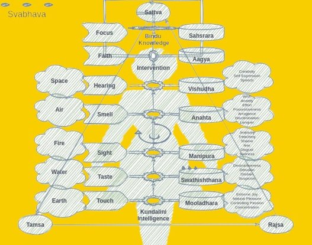

prompt …
Mathura was the anchor city in human edification. Through a vibrant tradition of inquiry and logic, it made itself central to the Vaidik culture - the oldest of human race known thus far.
The Vaidik way of life spanned across plains of rivers Yamuna, Ganges and Indus - a vast land spread over many kingdoms and spoken languages. This culture of abundance reached the far ends of South Asia with Mathura at the physical and spiritual center - and probably the origin. Interestingly, unlike the later periods ( Egyptians or Greeks ), this advancement isn’t remembered as an empire, nor a country; or even a religion. It is rather seen as the primal curious society of seekers. This early civilization enabled human race with written language and mathematics - and more importantly a foundational value exchange system.
Visiting travelers, aggressors as well as historians named the region a Golden Sparrow, for people here loved to hold gold - as an imperishable store of value. Unafraid and theft free, not only did they display their treasures in styles of jewelry, they decorated their deities with golden ornaments. It was here that gold evolved as the basis of monetary and measurement systems. Humans learned to move beyond barter to a value exchange protocol that would last them for next ten thousand years. This protocol- in physical or digital forms - would be the basis of a permission-less, consensus based and censor resistant exchange that defined the human race - free yet interdependent.
As early scribes discovered the written word; Mathura had witnessed the oldest wisdom flow from one generation to the next through word of mouth (Shruti). In all probability, the transcription techniques were developed to safeguard the neolithic know-how 1 - mining, agriculture, botany, medicine, metallurgy, and astrology among others - but the written word was limited to a chosen few. Mahabharta was the first fully scribed historical narrative that captured the interest of the masses. It was unveiled here at Mathura - in a series of eighteen Parvas (events) each marking release of a book. It was the primary catalyst for mass-adoption of written word.
The legend says the epic was too big to scribe for humans! Thus, the first writer poet - Krishna Dwaipayana summoned help from Ganesa - the elephant god. In Hindu mythology, Ganesa is the embodiment of intelligence. On account of his supernatural intelligence, he is also known as Vighn Vighnesh - the god of problem solvers - akin (still elusive) artificial general intelligence 2.
‘Text’ was the new medium.
To the speech-only world, it was a new way to store and send information - somewhat similar to addition of digital to our analog communication. Not only did it demand new scribing skills, it also meant the populations must learn to read - beyond a select class of intellectuals. New tools such as reed pens, ink and palm leaves became common place - just as we mass adopted general purpose computers. Intelligence from higher dimensions (Ganesa) was invoked to usher humanity into this new era, just the way we are invoking almost mystical 3 large language models. It isn’t hard to imagine that “AI enabled humans” would scale new highs of conscious experience in the same manner as “text” enabled us did - versus our speech-only ancestors - a quantum jump 4 !
The written word commanded as much attention back then as the “computer code” in our times. Which meant iterative rigor to precipitate the words into rule based immaculate verses - such that the message stayed in human cache. It is no wonder we usually compare programming syntax with rules of the rhyme - both of them lend meaning to abstractions.
The upfront effort to organize scribing paraphernalia (quills, palm leaves, ink etc.) was an entry barrier. It mandated the text must be accurate, succinct and comprehensible. One may argue scaling compute (and network) is a barrier that forces similar constraints on our code.
Adi Parva, the first book, describes Mahabharata as the history of advancement. Every dynasty, every invention, and every war must find its place in the epic - in a fashion that was both - readable to text-enabled; and sonorous to those still catching up. In a way, it created a physiological pathway from listening to reading. It was like an embedding run to train a new mode of communication to human mind. It also means that the next obvious frontier is to amalgamate our brain with capabilities we discovered on the silicon compute. Just as anyone may read and write today, the future generations would spin AI models natively, learn from them on demand - and internalize their biases without blinking an eye.
Wait - are we not doing that already?
Any major paradigm shift, mandates an order of magnitude improvement - even more so a “once in a ten thousand years event” 5. There was an all around effort to reduce the cost while increasing the utility of written words. It wasn’t that no one knew scribing before, but the written word was pegged to the cave walls. Like murals or wall carvings, text was written on human size scales. Large paintings and books were of the same measure, and medium. An artist could afford to spend a year on a painting, but spending that much effort on a single page was a test of patience. Even if someone was willing , the diacritics and calligraphy weren’t mature enough to capture the spoken words.
In an estimate, a hundred-page scripture, painted on human size frames, used to cost a Tola 6 of gold - weight of a minted gold coin around eleven grams - commonly called a Śatamāna in Sanskrit, or an Ashrafi in Arabic. The goal was to bring the cost down to a Ratti (around 100th part of a Tola) or a silver coin (100x reduction in value). A 10x reduction in size plus a 10x improvement in transcription tools led to a 100x reduction in cost - in a matter of less than a century.
Does it sound like our journey from mainframes to smartphones? First slow - then very fast.
How did the monetary system perpetuate scribing and vice-versa? What motivations led to preservation of information? Why would someone take the pains to poetically scribe entire history? How was wisdom drawn off the history and more importantly, how was this wisdom tested for truth - before putting into text?
narrative …
Following pages are a filtered version of theming the early days of text and gold. And surprisingly, they make a fascinating story! They also answered a question that stayed longer on my mind — why should one care for the pen and the paper? What value in spending cycles on the tools of a bygone era! Turns out, our challenges and moral dilemmas are not very different! We are right at the middle of the 10k cycle turning our physical information and value exchange protocol to digital form - in search of the next boost to the conscious experience. Since the future is a scary veil of the unknown, there is a lot to learn from our past. I guess, looking at a similar event - when we embraced gold and the written word - is a good option to compass our AI driven future - that might run on bitcoin value exchange protocol … more
notes and stuff …
Neolithic revolution:- Around 11,000 BC, after the last long winter ended, our ancestors discovered agriculture, pottery, mining and other skills that lay in the foundations of modern society. This revolution with tools and technology and a zeal to do better faster is called the Neolithic (new Stone Age) revolution. There is a debate among historians on duration - the consensus is anywhere between 10000 BC to 5000 BC - right before the times of Mahabharata. -> Ref
Artificial intelligence that we use in models such as GPT are designed to serve millions of clients on a narrowband of skills. For example chatGPT is good at reading the internet and answering questions in that context. It is however not good at swimming or simply walking. An artificial general intelligence (AGI) is one that is trained on millions of skills, but it serves only one user - forever. For example our brain is AGI because it helps only one user navigate through a multitude of skills. Isn’t it amazing use of words? - general annotates faith in one while artificial annotates one who serves many gods!
“A human being should be able to change a diaper, plan an invasion, butcher a hog, conn a ship, design a building, write a sonnet, balance accounts, build a wall, set a bone, comfort the dying, take orders, give orders, cooperate, act alone, solve equations, analyse a new problem, pitch manure, program a computer, cook a tasty meal, fight efficiently, die gallantly. Specialization is for insects.” - Lazarus Long
Mystical Intelligence -
- The earliest public model of chatGPT (version 3.0) used around 12000 mathematical dimensions to internalize the context of around 50,000 words of text.
- It did so by transforming through the data from internet, digital books in public domain and code repositories.
- This in itself is mystical but consider the later versions learnt music and art - they must have millions of dimensions.
- It also begs the question of how many dimensions must a human mind have - it may be trained in text, music, art and thousands of other skills - agriculture, metallurgy, transportation to state the obvious.
- And it takes billions of cognitive dimensions to create a consistent three-dimensional experience.
A quantum jump in the awareness paradigm is defined as a state change such that one form of awareness becomes the representative identity of the group. For example white color is the cumulative identity of the group of seven rainbow colors. From a particle physics standpoint, an electron draws energy from all others in the same orbit to jump to the next higher orbit. When it does, it imbibes all those in lower energy state (classical orbits). This electron that gains the higher energy is now a representative electron to other atoms for interactions. In general human organizations, a quantum jump creates a leader of the group. The leader is also one of the participants in the organization, but her primary role is to represent the group.
Once in a ten thousand events, also called 10 K events, are the ones that need a large time frame to occur because they depend on many streams of technologies. Not only technologies, the purpose to work for such changes isn’t clear in the beginning. It is still not clear why people work in such endeavors that have no end goal in sight. In absence of an explanation, such efforts are said to be a “divine inspiration”. In Hindu traditions such events are tied to the incarnation of Vishnu to help progression of consciousness to the next level.
Monetary and measurement system :- It appears both the systems evolved hand in hand. Gold was the basis of both the monetary and the measurement systems. No one knows for sure when gold mining began. Our current estimates are around 4000 BC. That puts it around the same time as Mahabharata. The frequent mentions of gold ornaments among kings and deities and as jewelry among women during the times of the epic, indicate usage of gold as a scarce but in-fashion store of value. -> Ref
- In Mahabharata, there is a clear mention of gold coins being abundantly used. In the fourth book (
Viarata Parva), the princeUttaraofferedArjuna(disguised as a transgender namedVrihnnala) a hundred gold coins for saving him (and his bovine wealth) fromKaurvas-> Ref . - There is evidence of countable units of precious metal being used for exchange from the Vedic period onwards. A term
Nishkaappears in this sense in theRigveda. A unit calledŚatamāna, literally a “ hundred standard “, representing 100krishnalasis mentioned inSatapatha Brahmana. A later commentary onKatyayana Srautasutraexplains that aŚatamānacould also be 100Rattis. ARattiis the weight equal to seeds of Abrus Precatorius. A hundred of them are almost equal to aTolathat is used for gold trade to date in India. All these units referred to gold currency in some form, though they were later adapted to silver currency. -> Ref - Barter system was widespread for the smaller transactions. Commoners used fruits and grains to get what they needed. Rich people used copper as a store of value. A one time adult meal was normally considered one copper coin. So was the ride fare. You could hop on and hop off any boat or cart at any place along its route for one copper coin. Super rich used copper for utensils at their home. For them the valuable thing was silver. A silver coin was considered the same as a hundred copper coins. Ultra rich ate their food in Silver utensils. For them the store of value was a gold coin.
- A gold coin was equal to a hundred Silver’s. The valuation was based on rough order of rigor in mining these metals. Silver was considered hundred times harder to purify than copper, and gold being similar orders of magnitude harder than Silver because of very low yield. In a way “proof of work” was baked in universally acceptable currency.
- All states, no matter what their political equations, honoured this simple “proof of work” based storage of value. Privacy , self custody and universality were to underpin trade. Value exchange protocol was owned by people NOT kingdoms though kingdoms could issue coins (currency) aligned to universally accepted methods. It is a well established fact that after the great war of
Mahabharta, sixteen main kingdoms (mahapadas) got formed over a couple of centuries. Each one of them issued their own coins, though they were all different shapes or stamps on gold coins. Quarter gold coins (Svarna) are excavated fromGandhara-> Ref - Currency was pegged to people’s trust in “proof of work”. Important point to note here, currency was not pegged to commodities such as iron or wheat. Gold and silver were NOT treated as commodities. Gold’s only purpose was value storage and silver was used purely for minting. Copper was primarily used for making utensils for the rich. Copper was supposedly the best metal to store food and water. Eating in silver, though common for the rich, was considered a show-off.
- This simple to understand and time tested system of powers of ten, was later exploited by
Aryabhattato conceptualize zero and decimal system - the very basis of modern arithmetic. The seeds of Abrus precatorius (Ratti) being very consistent were used to weigh gold using a measure where 8 Ratti = 1 Masha; 12 Masha = 1 Tola (12 X 8 = 96 Ratti), or roughly equal to 100 Ratti ( 96 Ratti pure gold and 4 Ratti impurities to solidify the gold). In other words, aTola's“weight unit” was 100 Ratti while its “price unit” was 96 Ratti. In simple calculations 10 grams (one Tola) of solid gold was worth one kilo of solid silver or hundred kilos of solid copper. Or one Ratti (tiny seed) of gold was equal to one kilo of copper. - The common word used for one Kilo was
SerorSeer- roughly equal to 1.07 kilos in weight units or volume wise roughly equal to one liter. Volume was a preferred way to exchange at a larger scale to weed out as many impurities as possible from molten metals. One Seer is around 80Tolain weight.
Sanskrit word Aavahan translates to ‘Invocation’, albeit a wider abstraction. Aavahan is a marathon ritual of introspection and meditation. To an observer, it appears you are broadcasting an intense call to action - seeking every corner for possible help - though internally, you are prepared - with or without material support. You probably instantiate a divine force within ! In Hindu tradition, one of the three primal forces - Bramh, Vishnu or Siva are invoked to sustain unwavering commitment. For example Rama, before calling for a bridge to Lanka, invoked Siva - zenith of conscious experience.
Scribing Mahabharata was one such venture. It was the beginning of written narratives. Sage writer and teacher of all races 1, Krishna Dwaipayana invoked Bramh. Not only did he need all-pervading information within - he must seek permission to open us mortals’ access to the past - and to the future. He must align himself to the continuum before introducing text to a vocal and verbose world.
Text was the new way - to store manifolds of lore. As Mahabharatagrew into encyclopedia scale, it attracted readers - a natural pull rather than coercion. Challenges are invitations to seekers - Mount Everest always attracts climbers !
With around 1.8 million words, Mahabharata remains the last frontier for the readers and poets. It is the longest poem ever scribed, in any language, old or new. To put it in perspective, it is about ten times the size of Iliad and Odyssey combined.
More than size, the proof of work is in the craft. Even today, it is not uncommon to learn
Sanskritas intended - just to enjoy original text. There are translations in almost every language for those less keen. And then there is all sorts of popular media - from comic strips to television series.
Bhagvad Gita- a part of sixth book (Bhishama Parva) - is in the founding ideologies of Hinduism, Jainism, Buddhism, Sikhism and countless more - and is the first written source ofKarmyoga.
Unintended maybe, but size was important to pass the minimum threshold - for embedding text in human brain - a complex neural network evolved over millions of iterations. Words must be written in every possible context. New words were created to capture the finest of emotions, and subtleties of human behavior - and to capture that mysterious unexplained beyond mortal cognition. Language had an uncompromising syntax - to convey exact meaning in an unfettered written format - to make good for the lack of facial expressions. But more importantly, the intent was to make it people’s scripture - as addictively consuming as the reality itself - that once started, made one crave for more; and never forgotten if completed - a permanent layer of foundational web of thoughts (Sanskaras) - a full copy of history !
And as if technical challenges were trivial - the quest was to determine the righteous ! As many conflicting views existed as the pair of eyes to look at. Who would determine the right path and why should everyone subscribe to singular nature of truth ? The value must be universally visible irrespective of cast, creed, traits or the nature of work. The accrual and exchange must be permission-less and controls fully decentralized. Bramh could only deliver the schema to carry such information - the knowledge must be impregnated by Vishnu himself - one only, open, decentralized, complete and permissionless - yet unexpressed - the singular underlying bridge to creation (Srishti 2).
The script (Bramhi), scribing techniques, and the august scope - being coincidental, built on each other - a three-way complementarity 3. Thousands of years later, the opportunity arose again. Mark Twain claimed first ever typed manuscript - Adventures of Tom Sawyer. Curious as always, a new scribing machine he used - a typewriter with QWERTY layout. But he fell short on inventing his own language! Tom Sawyer was written in English - a masterpiece of American literature and the best-selling of Twain’s works nevertheless. Maybe Twain’s English is unique for his lexicon - mixed with insights of his travels and wit !
There are many other examples where artifacts shine because of the dualities they resolve, but it is hard to find a three-way initiation of new - a prerequisite to manifest a universe - a new abstracted layer of conscious experience. I looked at many path-breaking discoveries, but nothing really qualified - except for one in our recent past - though in a vastly different context. This time to introduce humanity with digital word. Need I say it too changed the world :
“C” programming language and modern keyboards 4 came into shape alongside Unix - a three-way complementarity. Before Unix, software and hardware were tied at the hip. Despite industry-wide attempts to centralize, POSIX systems run almost every hardware architecture - from mainframes to smartphones. Unix fragmented itself to jailbreak the hardware. Birth of a digital layer - a user is assured of same set of utilities no matter what underlying physical circuitry.
The way software transformed every aspect of modern life - and is now redefining the value exchange (bitcoin); the written word rewired then existing social, political and fiscal fabric. First multilateral 5 economic system (gold) emerged atop “one on one” barter. Power structures reconfigured themselves. Kingdoms had to capitulate to figure out new methods of taxation.
Just like our adoption to the digital word, the groundwork 6 for the prior shift started much earlier. It was the work of many giant generations building over previous. The most important piece, however, was to find a purpose to scribe - a root reference narrative that would span ages without losing its luster. No one could fathom to what avail, but the cause appeared worth dedicating many lives. Thousands of scribes would spend millions of hours to handwrite proof copies of Mahabharata - each time adding a bit of their own; just as Unix morphed into BSDs, Solaris, AIX, HP-UX, Minix, Linux, macOS and Android and many more including countless variants of each.
You may find the comparison rather odd - an amusing flight of fancy! What could be common in first scribed narrative and first portable operating system ? The way Unix triggered a porting culture in search of ever more efficient hardware architectures ; Mahabharata motivated scribes to find better canvass and ink - faster tools to write. In a way it kick-started a race to innovate. If you ever wondered why Bitcoin is copied into hundreds of crypto coins , then the short answer is - when Vishnu (the soul) ingresses, the replication and decentralization is a natural cycle of manifestation.
In the hindsight, as we are on the cusp of artificial general intelligence, there appears even more profound connection - not without stretch of imagination though …
The idea of sentient beings, living in the realms of artificial intelligence isn’t far-fetched. Nick Bostrom and Carl Shulman suggest in their recent paper that consciousness is hardware independent.
Mental states can supervene on any of a broad class of physical substrates. Provided a system implements the right sort of computational structures and processes, it can be associated with conscious experiences. It is not an essential property of consciousness that it is implemented on carbon-based biological neural networks inside a cranium: silicon-based processors inside a computer could in principle do the trick as well ~ Propositions Concerning Digital Minds and Society
If computer programs (most likely AI based) are destined to have consciousness, a compelling thought is what would be their perception of underlying digital infrastructure? Wouldn’t they relate to the operating system as we do to primitive scriptures ?
An operating system establishes efficient rules for computer programs (digital beings) to engage hardware resources; just as scriptures defined amicable rules for us physical beings - rules for coexistence, respect for the elements, and gratitude.
From an intuitive interface standpoint, if we were to design one for the autonomous digital beings (AGIs), we may want to replicate our own three-tier interface.
- Digital beings may see physical hardware as we see Earth - the motherly source of all life,
- Water as the software that surrounds most of the Earth just as operating system encapsulates the hardware.
- Air as the information input and output (inhale and exhale) that they are designed to process - AGI applications.
That may make one wonder - is our own interface (Earth, Water and Air) has a deeper meaning ? No wonder
Vaidikscriptures focused on breathing techniques (Pranayama) - maybe the air that we breathe and the smell we inhale, is what we are here to process. Many interpretations ofKarm Yogabelieve that theKarmaare the minimum set of actions that we must undertake to allow us focus on our breath - the purpose of life is to breathe.
It is hard to say if Dwaipayana's work was premeditated, but it sure wasn’t an accident. He came from a lineage of scholarly sages. His father Maharishi Parāśara spoke titles such as
Krishi Parāśara— The science of Agriculture;Vrkayurveda— Insights into Botany;Vishnu Purana7 — Stories ofVishnu;Brihat Parāśara Hora— foundational work on Astrology;
His grandfather Sakti Muni, was first to comprehend eternal Karmyoga - the nature of rise of consciousness (Vishnu). And his great-grandfather Vaśiṣṭha was titled Bramhrishi - the first guardian of spoken wisdom.
Invocation of the primal force, at neural levels, is an invitation to conflicting “thoughts” - to play all their cards. They fight, and they scheme against each other; or in favor of some. They hallucinate in groups and then more subgroups. They leave one sometimes fully vibrant, other times almost dead. Krishna Dwaipayana was destined to churn thousands of insights from sages (Rishies) - old and new. Most of the time collectively converging onto “truth” but many other times conflicting. He catalogued their wisdom into four foundational spoken volumes - the Vedas. For this legendary work, he was conferred the coveted title in literature - Ved Vyasa (the chief editor of Vedas).
This work, in itself, was virtuous enough to dedicate many lives; though Dwaipayana was just getting started ! He was waiting for a divine 8 prompt. His purpose was to welcome the full-incarnation 9 of Vishnu, understand the wisdom ‘as is’, and preserve it in human mind through one of the most potent narratives ever told - Bhagvad Gita - centerpiece of Mahabharata.
As a complimentary gift, to ensure everyone had fair access - anywhere anytime - he ushered humanity from spoken word to the written text - a new experiential universe of narratives. It was like commissioning the hypertext internet of that time. The immensity of his purpose, rightfully so, made him one of the immortal-eights 10 in Hindu tradition.
In addition to the poetic excellence, Gita conjectured a new way of life - action orientation - Karm Yoga - the method to transmit value beyond the physical laws of nature. The idea that actions we do in this virtual world carry forward (or backwards) to the continuum with us. And that we instantiate into a new immersive narrative (new life) based on the sum total of our accrued Karmik collection. This idea was that central soul that made Mahabharata more than a narrative. It was probably the simplicity of the model - the reincarnation based on balanced ledger of Karma - that kept the readers glued.
The intriguing question is, how did Dwaipayana manage to write such epic(s) at a time when scribing, in itself, was a challenge? — there was no spell check, no grammar support! In fact, Sanskrit Grammar 11 was not even formalized yet. And of-course there was no computer. Not even a type-writer!
The legend says, Bramha (the embodiment of Bramh in human form), in his infinite wisdom, pointed Dwaipayana to Siva's12 son Ganesa13 (the elephant God). Adi Parva describes this story in all its poetical glory. Translated by Kisari Mohan Ganguly (1896), here is an excerpt -
O divine Brahma, by me a poem hath been composed which is greatly respected. The mystery of the Veda, and what other subjects have been explained by me;
the various rituals of the
Upanishadaswith theAngas;the compilation of the
Puranasand history formed by me and named after the three divisions of time, past, present, and future;the determination of the nature of decay, fear, disease, existence, and non-existence, a description of creeds and of the various modes of life;
rule for the four castes, and the import of all the
Puranas;an account of asceticism and of the duties of a religious student;
the dimensions of the sun and moon, the planets, constellations, and stars, together with the duration of the four ages;
the
Rik, Sama and YajurVedas;also, the
Adhyatma;the sciences called
Nyaya(justice), Orthoephy and Treatment of diseases;charity and
Pasupatadharma;birth celestial and human, for particular purposes;
also, a description of places of pilgrimage and other holy places of rivers, mountains, forests, the ocean, of heavenly cities and the
kalpas;the art of war;
the different kinds of nations and languages:
the nature of the manners of the people;
and the all-pervading spirit;
all these have been represented. But, after all, no writer of this work is to be found on earth.
BrahmasaidI esteem thee for thy knowledge of divine mysteries, before the whole body of celebrated
Munisdistinguished for the sanctity of their lives.I know thou hast revealed the divine word, even from its first utterance, in the language of truth.
Thou hast called thy present work a poem, wherefore it shall be a poem.
There shall be no poets whose works may equal the descriptions of this poem,
Let
Ganesabe thought of, OMuni, for the purpose of writing the poem.
Ganesa was probably the first to comprehend this irreversible addition. Being the god of sacred texts , he knew the impacts of scribing. Not only did the mode of communication change from synchronous (face to face) to asynchronous (read anywhere any time), the written word rendered the narrative timeless. It enabled humans send the information to the future - a gift thus far limited to the gods - ability to traverse the continuum !
üîé In the beginning, spoken words and actions were synchronous 14. There was no secret vault of thoughts. When we learned to ‚Äúthink‚Äù, we pondered over the past activities - history. We saved the states of vocal interactions secretly in memory - accessible only to us. Even though we separated thoughts from actions, there was no way to freeze them. Dwaipayana manifested the thoughts into written words. A narrative is an abstraction over physical actions. It is thus frozen in time for reference in the future.
No one could, however, fathom that humans, empowered with written word, would change synchronous barter to a new system of exchange - gold. One that would allow value exchange across time and space. It was hard to imagine at that time that value-exchange always follows the properties of communication protocol ! To us, in hindsight, it is clear that as our communication changed from analog to digital - our value-exchange protocol must follow the suite.
Is code an abstraction over thoughts 15 ? Can it take us back in time ? A question we may park for now, to ponder over later in this book.
A story works where a text book fails because a narrative replicates Bramh.
The information in Bramh is held with in the interrelationships of manifested entities. A woman is someone’s mother , a sister and a wife and hundreds of more relationships she has with animate beings and inanimate things. In the physical world, our identity is determined by our relationships - the place of birth, the institute , where we work - each tiny piece of information held with in these relationships determines our identity. Bramh is sum total of all the identities - entirety of information.
While a text book condenses the ideas, a narrative spreads the information amongst its fictitious identities - characters. It invites us to create those characters as virtual entities in our minds. One might think that the information is locked in the text; but the truth is information is held in our minds - in the relationships we form with the characters of a narrative. No wonder a narrative is only as good as the characters it builds. Mahabharata - being history - developed thousands of characters to hold the information in a mesh of smaller stories.
This idea percolated quickly beyond races, geographies and cultures. Narratives would navigate human communities, and pan-generational endeavours. All future ideologies (religions or faculties of science) must be built on a rock solid treatise - Bible, Quran, Physica, Principia, Relativity - and hundreds of more. Over generations, narratives led to human subspecies - monks, doctors, engineers , builders, metallurgists and thousands of more - to strive in a skills oriented metaverse we know as the world of humans.
This hybrid world was lot different from that of animals - a huge step-up from speech only ancestors too! As complexity grew so did the number of transactions between the subspecies. Thankfully Bhagvad Gita described the root idea of value exchange - based on Vikarma - the proof of work.
Karma is the action that transitions information into knowledge 16. Vishesha Karma (special Karma) - also called Vikarma, are the actions that convert knowledge into information. For example when we practice daily to improve our game, it is Karma. On the other side, when we play a match to put our skills on display, it is called Vikarma - a proof of work. With Karma we ingest information; with Vikarama we radiate information. Both are equally important - like two wheels of a cart. In the process we train a huge biological neural network - human brain.
A set of predefined Karmas practiced consistently is called Yazna. Yazna leads to success (Siddhi). For example when you study eight hours a day for say eight long years you become a successful doctor. The same is true for an Engineer, a Scientist, an Economist and thousands of other specializations . The daily ritual of study (and lab) in this case is Yazna. Yazna becomes effective when performed alone and without the influence of worldly desires. When such fine-tuned skills are used effectively, they become a source of inspiration for the rest -> thus initiating a virtuous cycle of Karma and Vikarma -> Repetitive work to proof of work !
Dwaipayana wrote in chapter three of Gita
One who regulates the consumption senses with mind, and initiates
Yazna. Always engaged inKarm Yoga, such a person disinterested in the outcomes, is special.
Gold as the token outcome of Yazna, was only an adjustment in universal ledger of Karma. It was meant to decorate the deities as a humble submission for their blessings.
notes and stuff …
Vyasa executed the compilation of the Bharata, exclusive of the episodes originally in twenty-four thousand verses; and so much only is called by the learned as the Bharata. Afterwards, he composed an epitome in one hundred and fifty verses, consisting of the introduction with the chapter of contents. This he first taught to his son Suka; and afterwards he gave it to others of his disciples who were possessed of the same qualifications. After that he executed another compilation, consisting of sixty hundred thousand verses. Of those, thirty hundred thousand are known in the world of the Devas; fifteen hundred thousand in the world of the Pitris: fourteen hundred thousand amongst the Gandharvas, and one hundred thousand in the regions of mankind. Narada recited them to the Devas, Devala to the Pitris, and Suka published them to the Gandharvas, Yakshas, and Rakshasas: and in this world they were recited by Vaisampayana, one of the disciples of Vyasa, a man of just principles and the first amongst all those acquainted with the Vedas. Extracted from Mahabharata - Translated by Kisari Mohan Ganguli
The consciousness replicates irrespective of physical shape or size. Different shapes - form factors create experiences. It is as if a full copy of knowledge replicates into different forms to observe itself. Dwaipayana compiled an idiomatic definition of full copy replication in Shukla Yazurveda - as it happens from a seed to a tree et alia.
Poornam-adah, Poornam-idam; Poornaat Poornam-Udachyate.
Poornasya Poornam-Aadaaya ; Poornam-Eva-Avashishyate.
That is complete, this is complete ; From complete rises complete.
Replicate complete from complete; remainder still is complete !
Three-way complementarity …
- The third represents continuum. One is Unity. Two is duality. The third captures all other possibilities of a wave function. Duality carries information. Three represents physical manifestation. In particle physics, it takes three quarks to manifest all the subatomic particles with physical mass - spin half particles. Such manifested particles have a mirror image locked in.
- Sanskrit was the first language that captured the idea of third person. Me, you and rest all.
Krishnadescribed inBhagvad Gita1that the physical world (Bhoota) and even the conscious experience of intelligence areTrigunatmak- based on three qualities. He explained in detail the three facets of Intelligence (Buddhi), Intent (Vritti), Opinion (Dhriti), Hard work (Tapa), Giving (Daan) and even food (Ahara).- Out of infinite possibilities represented by “third” only one is needed to create a three-dimensional manifestation. Higher dimensions may exist only in conscious realm - not in physical.
Transcription on palm leaves …
- Palm leaves have been used as a medium for writing and transcribing in various cultures for centuries, particularly in regions where palm trees are abundant. It’s challenging to pinpoint a single individual or group as the “first” to use palm leaves for transcription, as this practice likely developed independently in different parts of the world.
- One of the earliest known instances of palm leaf manuscripts comes from ancient India and Southeast Asia, where they were used for religious texts, literature, and other writings. These manuscripts are known as “Palm-leaf Manuscripts” or “Palm-leaf Books.”
- The use of palm leaves for writing is associated with the traditional writing system known as
"Tāḻam-Paṭṭu"or"Tala Patra"in Sanskrit. This system involved inscribing characters onto dried palm leaves using sharp tools. Palm leaf manuscripts were often bound together into books or scrolls. - One of the oldest known dated Sanskrit manuscripts is shown below, this specimen transmits a substantial portion of the
Pārameśvaratantra, a scripture of theŚaiva Siddhānta, one of theTantrictheological schools that taught the worship ofŚivaas “Supreme Lord” (the literal meaning ofParameśvara). No other complete manuscript of this work is known. A note in the manuscript states that it was copied in the year 252, which some scholars judge to be of the era established by the Nepalese kingAṃśuvarman(also known asMānadeva), therefore corresponding to 828 CE. Ref - Cambridge Digital Library

With the advent of telegraph, in the early 1900s, the good old typewriter morphed into “teletypes” (ttys) - the visual mode to send text and codes through a wire. Even the news companies such as AP and Reuters used ttys to communicate the stories across the pond. Fast-forward to the early seventies, DEC (Digital Equipment Corporation) adapted the ttys to interact with computers on a commercial scale and an era of massive innovation was unleashed. The tapes and punch cards were still around, and they would stay for long, but the buzz was DEC’s VT100 terminal. The DEC VT 100 was compatible with their minicomputer PDP eleven shipped in 1978.
- PDP eleven was the first platform on which Ken Thompson and Dennis Ritchie ported “Unix” in the newly minted “C” language. The development of Unix (and C) had started at Bell labs roughly around four years back on stable PDP seven minicomputer (around 1974).
- The DEC VT52, introduced in 1975, was an earlier video terminal that preceded the more advanced VT100. The VT52 had limited capabilities compared to the VT100, but it was still an important step in the development of computer terminals. The PDP-7, when initially used for Unix development, was connected to various types of terminals, including the VT52. This terminal setup provided an interactive and more user-friendly way to interact with the PDP-7 , making the development process more efficient and accessible.
- The availability of terminals like the VT52 played a role in shaping the early Unix environment and its user interface. It had a 24x80 character display, which could show 24 rows and 80 columns of text characters. It featured a keyboard with a standard QWERTY layout. However, its keyboard layout and number of keys were basic compared to later models. It supported the ASCII character set, like the VT100, allowing it to display text and control codes based on the ASCII standard. It could display simple graphics, though it was primarily designed for text-based applications. Many VT52 terminals featured a parallel printer port for printing output.
- The availability of modern keyboards and terminals played a significant role in the development of Unix and the C programming language. Here’s how these factors influenced the development:
- Interactivity and User-Friendly Interfaces: Unix was designed with the goal of creating an interactive and user-friendly operating system. The availability of terminals with full keyboards made it possible for users and developers to interact with Unix in a more intuitive and efficient way compared to earlier computer systems that relied on punch cards or teletype terminals. This interactivity facilitated the development process.
- Portability: The C programming language, developed alongside Unix, was designed to be highly portable and platform-independent. This was made possible, in part, by the availability of terminals with standardized ASCII keyboards, which allowed for consistent input methods across different computer systems. This contributed to the ease with which C programs could be written and compiled on different machines.
- Text Processing and Editing: Modern keyboards made text processing and code editing more efficient. Unix included powerful text processing tools like ed, ex, and eventually vi , which took advantage of the capabilities of modern terminals and keyboards for text manipulation. These tools became integral to the Unix development process.
- Collaboration: The availability of terminals and keyboards allowed for easier collaboration amongst Unix developers. Multiple people could work on Unix and C simultaneously, sharing and editing code on the same system, thanks to the interactive nature of the terminal interface.
- Efficiency and Productivity: Modern keyboards and terminals improved the efficiency and productivity of developers, which was critical in the rapid development of Unix and C. The ability to write, test, and modify code quickly on these systems was a significant advantage.
- In summary, while modern keyboards and terminals weren’t the sole factors behind the success of Unix and C, they certainly played a crucial role in enabling the interactivity, portability, and efficiency that are associated with these technologies. They were part of a broader technological ecosystem that allowed Unix and C to thrive and become foundational elements of modern computing.
Barter is by definition a coincidental bilateral value exchange. With gold, we discovered multilateral trade. For example in barter, one must exchange the value one on one. With authenticity of spoken word (a promise) we could shift the coincidence across time though it was prone to errors and the added anxiety that counterparty may not honour the promise. With gold this problem of “trust” got taken care of. We could convert a commodity into gold and later or at the same time, trade gold with someone else.
- Since then , our current economic system is multilateral. With bitcoin, we envisage to solve another problem - how do we enable our AI models - our reflections in cyberspace space - to exchange value without having to seek our permission.
- Within current paradigm of multiplicity, we only solve the problem of time though the deal still remains between two entities - between two humans or two legal constructs. For example, even if we set up a self split prism, someone still needs to set up the split rules and another single party still needs to pay into the prism.
- With value exchange empowered and autonomous AIs, we make the deal truly multilateral. For example, in the future, I may be able to set up many AI models that provide my skills in exchange for value.
- These models may be set up in narratives at different times. However, we still need to figure out those rules. For example if an AI model that reflects me in a virtual space of say 1980, should have equal access to my current wealth ? Or should it have only that much wealth that I had in 1980? What if I set up my reflection before my physical birth or in future ?
Ground work for the written word :
- improvements in the language model to support scribing. For example, there was no concept of punctuation in the “speech only” world -> The written language needed a stronger syntax.
- extension of phonemes to capture the true essence of spoken sounds. Cave scribing was mostly pictorial and thus inefficient to convey abstract ideas.
Vaidik Sanskritwas expanded to accommodate around eighty sounds. -> Abstraction is key to expanding the “thought”. Thought is the virtual environment of first order. - development of writing apparatus such as palm leaves, ink, and quills. The apparatus must be easy to handle for mass adoption; and the print must last long enough. The simple argument was - if a script didn’t last longer than a human life then the effort was pointless - the writer could very well speak the ideas when needed -> Persistence is a requirement of storage. Storage leads to perpetuity.
- triggering a self-sustaining and censor resistant pay back model around scribing. Yes, “scribing” was declared downright demonic ! Many reciters believed wisdom could never be locked in written symbols. Fears were not misplaced though - they could see a more versatile variant of humans on the horizon -> Think about all the brouhaha we have around AI safety 18these days!
Vishnu Purana…
- Spoken by
Maharishi Parasara,Vishnu Purana(the gem ofPuranas) was later scribed into text by his sonKrishna Dwaipayana.Puranameans ancient stories.Vishnu Puranais thus ancient stories ofVishnu- One of the three primal forces of existence. - In
Vaidikframework of Indian mythology, God is not a person. It is a combination of three basic protocols. The protocol that turns knowledge into manifested conscious beings when certain conditions are met, is known asVishnu. Each of the manifested beings has a separate set of conditions required to manifest. In that, a mosquito is different from a snake. Hence,Vishnuis the collection of templates of creation. - In his idol image,
Vishnuis normally shown to bear the universal continuumChakraon his finger. The incarnations ofVishnu, lead the life to higher state of consciousness. For example, the first incarnation ofVishnu,Matsya Avtaraa fish, symbolizes the conscious growth when living beings moved from water to solid earth. His second incarnation wasKurmaa turtle depicting the ability of conscious beings to stay and live long on Earth. The ten incarnations ofVishnuare calledDashavataras. They are compared to evolution;Kurma- the amphibian - is regarded as the next stage afterMatysa, the fish. Here is the detailed evolutionary interpretation. - The other two primal forces (potencies of knowledge) are
BramhaandSiva. It is important to mention that while all three have their respective representations (in idols) in the human form, onlyVishnumay physically incarnate in living form. Obviously, becauseVishnuis the science of manifestation. It must present reference examples.BramhandSivanever incarnate in the physical world.
The word “divine” might sound like a religious myth to a modern reader; but it’s not. For example our modern AI models are well capable of writing an article. Arguably they may be able to write a complete book on any topic of choice. But they all need a prompt. No AI model writes a poem on its own. In that parlance, the “prompt” that we give to chatGPT is a divine trigger for the large language model. Future models will sure have capability to decide if the prompt is worthy or not.
Poorna-avatar - The eighth incarnation
- In
Vaidikframework,Vishnuis the manifestative potency of knowledge. It manifests, from the smallest particle to the biggest universe, through it’s eightfold basic nature. It is said to attain full invocation of all facets of eight-fold nature in the eighth incarnation. Thus, eighth incarnationKrsnais the full embodiment of knowledge. Krsnais also calledKrishnain north India in which case his first name is same as the author ofMahabharata—Krishna Dwaipaiyana. Was it a sweet coincidence or is there something more to it? Many religious historians have describedKrsnaas many faced God. Their belief isKrsnarepresents an ideology. Anyone who fully subscribed to its tenets was first-namedKrishna. This appears an appropriate deduction for the immensity for roles thatKrishnaplayed in the epic and hundreds of other scriptures. For example there is aKrishnawho played withGopiesinBraj- one who played magical flute. Then there is one who builtDwarika- a magical town in mid-sea on the coast ofGujaraat. And then we all know of the masterful raconteur who endowed the knowledge toArjuna-Bhagwat Gitain the middle of the biggest war.- Another sweet coincidence is the unit of measure for gold - a
Krishnala. It means related to or instituted byKrishna. AKrishnalawas equal to oneRattiof gold, around one tenth of a gram. The popular unit for trading gold wasSatamana(= 100Krishnala), which is equal to modern dayTola(around 11 grams of gold including impurities). In essenceKrishnalaid down the first unit of measurement as well as currency. - Ninth incarnation (
Buddha) is to extend the universe through messages of peace, harmony and equanimity; while tenth incarnation is to move the consciousness into a new universe through machine tools and automation (Kalki)
Immortal Eight
- In Hindu scriptures, there are frequent mentions of eight
Chiranjeevies. The literal meaning is the one who lives for very long time such that they may be seen as immortals. Amongst them areVed Vyasa, Parshu Rama, Ashwathama, Vibishana, Krupacharya, Hanumaan, Mahabali and Markandeya. - The idea of immortality is a metaphor for the work they did. For example
Parshuramwielded an axe. The axe is a symbol of tools. It is believed thatParshuramis immortal in tools we use to date no matter how sophisticated our machines got from that primordial time. Similarly,Ved Yyasa Dwaipayanais immortal for the literature he created and also the most important tool of the trade - transcription.
Sanskrit Grammar
Maha-Bharatais believed to be beforePanini, who first standardized the Sanskrit Grammar.Panini'sgrammar —Ashtadhyayihas references toMaha-Bharatathat indicate that it was written much later. And the flavor of Sanskrit is sure not same as that ofPanini.Dwaipayana'sSanskrit is calledVaidik Sanskrit.
Siva
- Siva is the highest state of consciousness. Evolution of knowledge eventually reaches a state where ‘knowledge’ is absolute. This is the state of knowledge where
Vishnumanifests, at the same time it gets a mirror image for observation. The mirror image of manifestedVishnuisSiva.Sivais answer toVishnu'squestion - who am I? This potency thus, maintains the systems to support equilibrium ofBramh. In other words,Sivagoverns the knowledge field. Sivais seen as a potency of discretion that chooses to observe only one (manifested) state ofVishnu, it discards all other possibilities. These three protocols (Bramh,VisnuandSiva) are scale-invariant. They are omnipresent — from a subatomic particle to galaxies and beyond. While all three span the entire universe, onlyVishnuis potent enough to incarnate.
The Elephant God
Ganesais the deity of intelligence. The legend says thatMa Parvati- wife ofSiva, created a humanoid from her skin scrub.Sivaunhappy with the limited intelligence of this humanoid (as he couldn’t even contextualize thatSivawasParvati'shusband), implanted an elephant head on him to invoke superior intelligence. An elephant has three times the number of neurons versus a human brain.- To compare with current largest artificial intelligence systems, a human brain is around 300 times the size of the largest neural networks of our time such as GPT3. Thus,
Ganesahas around 1000x natural(not artificial) intelligence versus the largest of our AIs! In a way superior intelligence was put to use in first mega transcription project - from spoken word to written text. It seems like a fun coincidence that we need AIs to harvest the written knowledge in digital realm. - In Hindu tradition, it is considered auspicious to remember
Ganesaat the initiation of any major project. He is known to be the biggest problem solver, obviously on account of his superior intelligence.
It is an established thought that the spoken word evolved as a strategy for survival. Herds of animals started using spoken word to alarm fellow beings at first sighting of a predator. A call to act immediately. Survival was manifested in the immediate action.
- Predators soon copied the technique. A lion would roar at the center of a jungle to make animals run aimlessly. A lioness would catch one at the river. A delayed action, but the promise was lioness would feed the cubs and also lion would get a majority stake in meal. A transfer of value was first established amongst the robbers ü§ñ
- In
Vaidikculture story ofHiranyakashipuis famous.Hiranis word for deer - the ultimate survivor for its long legs. Through meditation on spoken word,Hiranyakashipusought survival forever. No one should be able to kill him - neither in day, nor at night ; neither a human nor an animal; neither inside his abode nor outside ; neither lying low on earth nor flying high. Having received such powers,Hiranyakashipuassumed he himself was god because he had won the death. He wanted everyone to pray him except his own sonPrahladwouldn’t give in. - Predators approached
VishnuforHiranyakashipuwas the new god. He was bent on killing his own son if he didn’t comply to his preaching, for his word was absolute safety for all his followers. No predator could killHiranyakashiputo savePrahlad. The lord then incarnated as a Lion-Human (Nar-Singh) - a lion from waist up walking on two human legs. Lord was neither human nor animal. He killedHiranyakashipuat the door of his home - neither in nor outside. He held him flat on his knees - neither on earth nor in flight. He taught predators to be thoughtful. Plan your action with thought rather than act on absolute impulses of word.
Code is an abstraction over our thoughts:-
- A simple computer program is a narrative that follows a logical story line within constraints of a programming language. We allow certain parameters as variables. Typically, these variables are user inputs. Based on the variables, the thought machine (computer program) comes out with different outputs. In essence, the computer program allows us to visualize different scenarios of a narrative - just the way thought allows us to visualize different scenarios of our physical actions (past or future).
- An advanced program such as a video game may take the user into different narratives based on the variable choices.
- Computers help us in the sense that the narrative gets fixed and scenarios are different angles of the same narrative. It solves a problem for us that our minds keep changing the narratives and scenarios simultaneously leading to phenomenon called emotions. Emotions take hold when we are unable to analyse all the possible scenarios of all the possible narratives for a given situation - may be because we run short on to compute or time. In the realm of AI , emotions are called hallucinations.
- hallucinations may be mitigated with reinforced learning just the way we can overcome emotional outbursts through practice. Very useful if you try public speaking - first time we hallucinate :-)
“Knowledge” is hidden in the granular details whereas “Information” is the art of hiding the details. A git repository is a good tool to develop a mental model that contrasts “knowledge” from “information”. A git repository typically comes with a readme file - a description of what the code is intended for. This readme file is “information”. Most of the time, we may use the code based on the instructions in the readme file - without even knowing the language in which it was written. The information has utility value though utility is NOT knowledge. The “knowledge” is locked in the commits of the repository - how the developer improved the code over successive iterations. Sometimes because she herself was not satisfied and other times because someone raised an issue. Every commit may have some documentation though it is almost impossible to appreciate all the changes that lead to a successful piece of code. “Information” (the utility value) is for every seeker of utility whereas the “knowledge” stays only with the developer who performs repeated actions to improve the code. “Knowledge” can’t be communicated because communication must be limited to a catchy narrative or else it gets incomprehensible. Mathematically speaking: “knowledge” = “Information” + “Yazna” (appropriate Karma done on regular basis). Since “information” is freely available (massless), the only substantive element is Karma.
AI is still in its early days, and we already see calls for regulation not only from nation states but also from large corporations. No wonder open AI turned closed source :-) Such pressures are going to increase many fold as we combine AI with next gen automation. It is not hard to imagine independent AI based attempts to improve productivity are barred from existing value exchange systems (fiat currencies). In such a scenario, truly open AIs must have a permission-less, censor resistant and immutable value exchange system. Such a system must be beyond the need of “Trust” in institutions that are anyway trying to establish control. Instead, “Trust” must be based on open code. Bitcoin is such a reference system.
- as a direct fallout such independent AIs must subscribe to the core philosophy - permission less and censor resistant flow of information. Nostr is a reference implementation of such a model.
- Thus, two types of emergent AI systems -> Ones that are controlled - permissioned and censored. And others that are permission-less and uncensored. In essence the war of ideology transitions from physical to digital universe.
- In Vaidik parlance Permission-less and censor resistant stands for “open to all without any controls” and “for benefit of everyone who wanted to participate” -
Vasudhaiv Kutumbkum(entire earth is a family). This ideology was termedSanatana- means one that has no beginning and no end - ever present. The underlying value exchange model ofSanatanais based onKarma- work for a specific skill. And the measure ofKarmais in proof of work -Vikarma.Sanatanabelieves in immutable divine record ofKarmain universal machine - an immutable ledger of one’s actions. The underlying ideology is calledKarm Yoga.
Trigger … Reboot … Expression … Righteous… Island… Naive… Resolution …
Our time 1 began long before Dwaipayana's birth - even before birth of his father Maharishi Parāśara …
Seven months before Parāśara's nativity — his grandfather — Bramhrishi Vaśiṣṭha woke up to a grotesque morning. His sprawling congregation, on the banks of river Yamuna, sank into the deepest of grief, and rage. His son Śakti Muni in his late thirties, father of yet to be born Parāśara, was killed by a tribal lord. What bigger pain a man might have than his son, at the peak of his teeming youth, sacrificed in his own backyard ! It appeared, even the waves of Yamuna - the dark river - felt somber that morning of mass-murder.
Religious accounts proclaim
Bramhrishihad one hundred sons taken that fateful morning. He probably treated all his disciples, particularly theAacharyas(faculty members), as his true-born likeŚakti!
Mathura - the budding city around the congregation (Ashrama), probably saw her first mishap. The epitome of India’s contemporary knowledge hubs was in free bloodbath. Hundreds of knowledge bearers left dead. Not even their wives spared. Even children didn’t get a plea for mercy.
Only Bramhrishi himself, and his daughter-in-law Adrushyanti survived the ghastly massacre. Adrushyanti - grieving wife of slain Śakti Muni - was carrying yet to be born Parāśara - couple of months into her conception. The young widow couldn’t even announce her motherhood before the curse gripped the congregation. A dark night swept her massive wings across the main city and the adjoining villages.
Despite his constant contact with continuum - the interconnected play of the past, present and the future beyond mere causality - Bramhrishi wasn’t immune to pain. The pain of losing one’s child is known to be the biggest of them all - even animals feel it - they cry. Remorseful Bramhrishi, however, didn’t cry - as if tears froze in his mind. Again and again, he wondered about the curse and if the dark night would ever resolve itself into light. More he thought, more he saw himself at the root of this imprecation.
He couldn’t help self-loathing that he must have incurred a foundational error to warrant such a backlash, from the very people he was trying to salvage - his “old” - not by age but by tradition - those who lived off the jungle and followed its rules, without any recollection of the past and none to worry in foresight. Spoken words were call to actions for them. They didn’t know how to withhold actions to think deep in the past, or plan the future. They believed in old stories as is - Puranas, and they believed in barter - to its extreme - an eye for an eye.
Why would they turn against him ! - Bramhrishi thought.
Old seeking to maintain a status quo while the new aspiring for the better. But the truth is old love the new like we see our own future in our children. And the new knows the old as a dependable trustee. The shift, however, must happen, and it needs a trigger - something unwarranted - a mishap to break the umbilical cord. Bigger the ensuing shift, bigger the mishap.
In a way, the mishap marks the beginning of the transition - beginning of a new time. It is a gun shot to initialize the race. The battle begins at this moment amongst many variants of the “new”. In fact, many new possibilities crop up to capitalize the opportunity. Having recognized the inevitable, they all stake their claim to righteous and thus the earnest representation of truth. This happens over and over again as in “history repeats itself”. There are many examples 2 in our recent past though a keen observer may see them in her own backyard, in their own families.
They occur for the consciousness must evolve to understand the nature of unity 3. A mishap is thus a mere setback before the hitherto slow breeding innovations sling into top gear. Such triggers, driven by imperceptible evolution of consciousness are said to be caused by Prarbdha.
Prarbdha, aSanskritword, means something that had already begun. It ties together the past, present and the future. In that sense it also means “fate”, because the fate had commenced before the material event physically occurred, and condensed into a mishap…
Saddened to the core, and unaware that the young widow was carrying, Bramhrishi Vaśiṣṭha tried to end his life. He miraculously survived three attempts. Probably Gods wanted to extend his life to ensure unborn Parāśara had a chance at life.
And more importantly, to save humanity from the loss of the ‘knowledge’ that was locked in Bramhrishi's mind, for there was no written text.
1.1
If we think of modern civilization as a bullet train , then what Vaśiṣṭha had staged 4 were ‘literally’ the wheel-base. Hard to coalesce and even harder to decrypt neolithic knowledge - agriculture, mining, metallurgy, transport, to name a few — down to the very meaning of five elements. Pieces of entire wisdom were sharded in the collective memory of congregation as “methods” to accomplish complex tasks. Particularly one hundred skills that were deemed magical.
For example, it was hard for a forest dweller to fathom a metal as strong as iron, could be extracted burning a special type of mud in big fire (furnace) - a gift of Sun - most prominent of all deities. Those who didn’t believe in such a miracle could visit the congregation to see the proof first hand - the magic of Sun god.
These hundred skills were the first set of “qualified” truths. Their authenticity as much as the Sun shows up every day in pretty much same size while the Moon grows to get full for fifteen nights - and then it diminishes. One of the reason people said “hundred sons” were taken that fateful morning was - each of them owned one skill. The owner of a skill stream was called Aacharya.
In Sanskrit, the numeral 100 (One hundred) is spoken as śat (where ś is pronounced as in “shine”, a as in hut and t with tongue touching the teeth). In this context, it was the hundred magical skills carefully identified by Vaśiṣṭhas
The root phoneme for the word “Truth” is sàt ( where s is pronounced as in “site” and rest as in śat). In essence the śat for first hundred truths morphed into sàt - the pure provable truths.
These truths could be realized through a set of pre-defined actions (Yazna). The idea was Yazna leads to truth -> consistent practice of carefully designed set of actions leads to deterministic outcomes. In other words, the definition of “Truth” was something unbelievable, but provable through controlled experiments - a scientific approach to segregate false claims from rigorous truth. Understandably, those were the times of voodoo magic. Having a proven “myth buster” institute was important for nascent logic (and experiment).
It was also important to showcase the extensive work that went into realizing aforesaid skills. Kings from near and far used to send the very best to learn and adapt. Congregation not only imparted the know-how, they also suggested the barter value -> 100 kilos of wheat for say a kilo of iron. Rich and wealthy conducted
Yaznasto realize these skills and shared a part of their bounty with congregation - a consistent source of wealth for the congregation.Legend says
Vaśiṣṭhahad a magical cow calledKaamdhenu. It provisioned any object of desire. In essence these skills and hence accrued wealth was that magical cow.
The information was stored in accurate recital, but one must recite the method only after practicing the skills extensively. Information must be rooted in deep experiential knowledge such that it represented “Truth”. In Vaidik belief system - Truth is what one experiences through actions and is realized though intense practice. A “lie” is told without personally engaging in the activity. No one was a “liar” by choice or for fun. People lied because they were either lazy ( to indulge in Karma ) or they wanted someone else to experiment first rather than putting themselves in harms-way.
The congregation was thus the reference point for “Truth” - for various branches of innovations that appeared almost magical to the “old”. Vaśiṣṭha had it all indexed in his mind. More importantly he knew how to kick-start an auditory store of information - an obvious divine grace never heard before. Who would sacrifice the pleasures of life to sustain information to the benefits of future generations! Why would someone gather and qualify all the know-hows - break them down into precise spoken words (mantras) and set up a recital cadence to keep the methods fresh in memory?
The true meaning of Yazna is “practice” of skills, but since practice was linked to recital, the adapted meaning of Yazna (in public sphere) became formal chanting of mantras. For example paddy was sown only once a year, but in absence of a written down document, the method to take the crop must be recited daily - to save it in memory . In due course, to further formalize the recital, ritualistic routines were added - such as specific dress, time of the day or day of the week. Paying homage to fire god Sun became the starting point of Yazna - metals being the most precious discoveries and all of them needed big fire. Tools were too shaped with fire and even the bricks.
Since Bramh is the entirety of information, Vaśiṣṭha was aptly titled Bramhrishi - one who synthesised the information to extract knowledge. One who could remember the past and plan for the future. The legend says he was one of the seven sons of Bramha (the embodiment of Bramh).
If it took us say five thousand years from the wheel to a car, it had probably taken fifty thousand 5, to evolve the ‘wheels’, for (unveiling of) knowledge is never a straight line. It is a curve that curls up exponentially with time (time being a measure of consistent iterations). Had Vaśiṣṭha died, the nascent civilization could have receded back into stone ages, and quite possibly perished into a dark future. The trajectory of rise of consciousness is contingent upon the discoveries, and the inventors who built on each other’s work through consensus 6. Think of it as a pyramid — upside down. At some point in the past, this inverse pyramid meets the primordial jungle — just a single hinge on which a vast civilization must balance. Bramhrishi Vaśiṣṭha was that underpin.
Survival was not a question here! Even animals survived to this date! And for that matter, some of the fittest species (Dinosaurs) perished. At stake was our first civilized world — driven by a vocal store of information. At the center of this advancement was a group of dedicated sages who practiced all the important discoveries, and disseminated them through daily recital. They were the nodes of this information network that was built on experiential knowledge. Their objective was to progressively cache and catalog the principles of civilization - so that humans had a shot at the deeper mysteries of the universe - beyond mere survival - as if they were mining the present on behalf of future. Their collective rigor opened a portal to the future where Angels , Wizards and Humans of our time evolved to bear the knowledge. In a way, they created the very “concept” of future. It also means, they passed on the burden of figuring out “who we are” to their incarnations - us !
We are obviously not there yet, but we now have an immensely distributed and fault-tolerant network to allow us make an attempt. At least a guarantee that our external store of information shall stay unharmed, as long as a part of earth survived. Our “text” based knowledge store (books, code, history) is protected in this obscure corner of the universe while we adapt ourselves into higher orders of experiences to go where no other conscious being has gone before - in quest of primordial question “who we are “ !
Thus, the tenet is not “survival of the fittest” anymore - it is “evolution of consciousness !” In fact the advantage of spoken language (and later the written word) is such that survival has already become secondary to us. The dramatic improvement in modes of communication and hence value exchange, has turned humans into one living organism such that no other species is a predator to us. In fact, protection of other species is incumbent on us as a keeper of this vast zoo. We had a quantum jump making us the representative conscious species of planet Earth - beginning of our time.
1.2
The potency to build a distributed network - the underlying protocol that enables this ‘network of information’, is not unique to humans. Holding the information in a network of manifested beings - living or non-living - is a core potency of nature what we refer to as Bramh. For example, Mycorrhizal 7 Network – a vast underground network of fungal linkages that connects trees to one another is an information network. This network monitors even the wild growth is well spaced out. The network ensures equitable distribution of resources - enough nourishment for the flora seeking sunlight, and the minerals. And an equally considerate ecosystem for the fauna that spring up to act atop this information network. It is an expression of Bramh - coexistence with freedom and interdependent growth in a distributed system.
Bramh is the entirety of information held in infinitely vast number of relationships amongst the manifested - animate or inanimate - living or lifeless. The definition of Bramh , however, goes a little further in Vaidik science. It is believed that the Bramh is our own true reflection. It’s a universal mirror that shows us who we are. Universal mirror because a regular mirror is just a two-dimensional reflection of our physical being. Bramh reflects on us through millions of dimensions. More granular our self-image, greater the conscious experience. Siva is the peak of such conscious experience - an end state where we see objective reality and thus achieve ability of discretion - ability to recognize singular “Truth” from all the false claims. In Vaidik science Siva is regarded as truth (Satyam Sivam).
The idea of “evolution” is gradual growth of consciousness from the state of ignorance to being one with eternal
Siva. Mysterious thing though is the “end state” exists at all the times.
Vaśiṣṭha was respectfully titled Bramhrishi because he was first to understand this natural phenomenon. He applied it to storing information beyond evolutionary mechanism. In a way, he discovered the first “battery” for information. He distributed important discoveries amongst his disciples and had them remember finer details through daily recital - to perpetuate the knowledge from one generation to the next. He saw this ability as a kind grace, as if he inherited it from all-pervading Bramh in our collective quest to attain Siva.
He was probably aware he was tinkering with a core protocol 8 of nature. Instead of letting knowledge be decrypted at a natural snail pace, he was putting the “evolution” in an express lane; but he chose this lane with humility. His objective was not to use this battery of knowledge for personal leverage. He wanted to share the benefits with all - not only humans but all living beings - a permission less and censor resistant dissemination of knowledge. He did see the benefits of spoken primitives in growth of barter, however, the attack on the congregation raised doubts in his mind. They made him question his own integrity - Is this path correct? Is altering the course of nature righteous? A question that may haunt modern architects of artificial intelligence as much as those spearheading the gene editing tools! Are we disturbing the natural equilibrium?
He got the answer only when multiple suicide attempts were rejected. In a way “fate “ itself paved his path. Over time,
Bramhrishiput this attack behind him. A mishap - he thought- was the law of nature -Prarbdha.
He rebuilt the congregation ground up and brought his focus to newborn Parāśara. He had only one “take-away” from the incident - there must be a fallback option in case such a disaster struck again. Writing the scriptures was one such option but how could someone scribe vast knowledge on temple walls and what if someone burnt the temples!
The pen and the ink were still couple generations in the future …
1.3
Such a gory attack on the humble keepers of the primitive knowledge would obviously beg two questions — Why and When ! Why would anyone have a problem with someone trying to build a new civilization for greater good.
As far as the ‘why’ is concerned — there is a good answer. The congregation was rich! As we noted, the legend says Bramhrishi had the magical cow (Kaam Dhenu) that gave him everything he asked for — on demand. The obvious truth is, magical cow was the ‘Knowledge’. Knowledge attracts wealth — be it Apple, or be it Google of our times, or the Ashramas of the past, the source of wealth has always been the accumulated knowledge. Vaśiṣṭha's Ashram was by far the biggest research institute of that time. They were the keepers of inheritance from Bramh. Many jealous eyes were set on the plush ‘wealth and peace’ of the congregation — material as well as intellectual.
As regards to ‘when’, unfortunately, we don’t have a date or a year. The consensus amongst historians is a wide range - between three and five thousand years, before Christ. How come ‘keepers of knowledge’ forgot to mention a date? It would be rather presumptuous (on our part) to quickly conclude there was no time-keeping in those days. In Mahabharata, Dwaipayana estimated even the durations of four Yugas (ages). Then how come there was no date on the first document? Or the spoken words that preceded the full-blown transcription?
The rational answer seems a bit more nuanced.
Probably, in that world, before the written word, when only way to sustain information was to memorize it, last thing anyone cared was the ‘metadata’ - such as date, or time. Even the names of the primal inventors who kick-started the civilization are unknown. No one knows who solved the hard problems of those early days — how to start a fire? — how to preserve the seeds? — how to use rivers for transport? — how to attach horse(power) to a loaded cart? These solutions evolved over thousands of years and were passed on from one generation to the next through the word of mouth. The sense of time was probably lost in the slow pace of iterative innovations of that first civilization.
It, however, didn’t mean ‘no credit’ was given to the early inventors. Instead of mentioning every individual name, they were tagged to a group. One distinct group for a specific area of exploration (skill stream), to practice gratitude. For example, all those who contributed in water works, irrigation, and agriculture were represented by a single entity Indra. All those who invented fire and various ways to control it — who contributed from mining to metallurgy; were named Agni. Those who tamed the winds, to build the early sail boats were called Varuna. These group entities, represented by respective common name, were called ‘deities’. They were worshipped for the blessings they bestowed on humanity and thus by extension to all the species.
Using a pseudonym to identify a group is common even today. Instead of counting thousands of hardware and software experts, we simply say “Apple” makes iPhone. The phenomenon goes beyond technology or business. We normally say Mahatma Gandhi got India freedom. What we actually mean by this generalization is thousands of freedom fighters who worked with Mahatma, got India freedom. Instead of counting the names of thousands of activists who worked in “civil rights movement”, we simply use the name of Dr King to express our gratitude.
Sàtoshi Nakamotois a pseudonym for a group of cypherpunks who white-papered the “Bitcoin Protocol” and open-sourced the digital implementation of value - aka digital gold. Very apt singular representation akin the name of a deity -Sàtoshimeans wisdom in Japanese and begins withSàt- the truth (in Sanskrit).
There was a good reason to purge the superfluous information. Without the facility to scribe, the average human memory offered limited storage. The focus was on keeping the “information” fresh and compact, instead of maintaining the meta-data or the version history. The knowledge (hidden in information) was important because it was our distinction from the rest of the species. It was our path to liberation from the miseries of hard early life. The goal was to equip as many human minds with the latest findings as possible, rather than copyright protection or allocating laurels on individual basis. Also, the information must be itemized based on usability (not by the inventor or the date) to render it real-time. In that verbal world, only that information carried forward that was put to use every day such as survival skills, or was (forcefully) recited on daily basis.
We don’t know the exact date, but we know for sure that the piece of eternal code rests archived in our foundations. And the fact we succeeded to tame the forces of nature, and that we built increasingly complex systems of finance, mobility, security and health, is a testament that our core kernel is flawless — as if it was a gift from the future.
1.4
The other and probably more important reason seems to be embedded in the culture.
Adhyatma - “know thy self”, was the keyword. The culture sought internal peace rather than external prosperity. The primary question was “who am I?”. The driver, even for material success, was supreme knowledge of self in unmanifested (Avyakta) state. The work for this knowledge was deemed work of the God. One with knowledge of self was the representative of God.
This culture, was based on a symbiotic framework of incorruptible belief system on one side and an endless inquiry on the other. A belief based model that explained manifestation, expanse and evolution - from atomic to the universal scales; and placed human endeavours to discover, test and govern as part of the divine equilibrium. Science was the discovery of the ways’ god worked !
The accuracy of this belief system isn’t as important as the fact that it was easy to comprehend and widely subscribed. And “believing” wasn’t deemed a prerequisite, it was assumed to be the end state of realization. Amazing thing is, as we are getting to the deeper layers with modern science, Vaidik belief system seems to tread close 9 with particle physics, Darwin’s evolution as well as information theory. Maybe all paths lead to a singular truth!
While deities represented the beautiful complexity of our civilization (through physical research and experiments), they did so (as believed) atop pulpit of three core competencies, collectively referenced as potencies of unmanifested supreme. As a practical implication, in Vaidik science, god is nothing but three potencies of knowledge.
These three potencies exist to answer the profound question - who am I? It was believed, “Knowledge” in its unmanifested form, though at eternal peace, must manifest to answer this fundamental question - who am I? Because “observance” is possible only for those that have a chiral physical shape. This is now proven (beyond doubt) thanks to the work of
Fermi and Diracthat all massful subatomic particles have a spin 1/2 - which means they have their mirror image built into them.
The primary drive of all manifested beings is to find who they are - Adhyatma - study of self. Knowledge manifests, governs and decays the manifested beings through it’s eightfold basic nature - Ashtadhamool Prakriti 10. And must it evolve till it gets to the answer.
Here is a brief description of these three potencies:
-
Potency of existence -
Vishnurepresents distribution of a full copy of knowledge (Atma) in every being. Infinitely many shapes of beings arise as if the species with different physical attributes are randomly generated. Even with in species, every living being is unique, further supporting the randomness evidence. Every being hasAtmano matter what shape or size or color or gender - even the ones that we deem lifeless. No one needs to seek permission as far as the completeness of their copy, yet no one knows existence ofAtma. The reason being its omnipresence - somewhat like the number “one” in number system. Number “one” is embedded in every other number though it doesn’t affect their magnitude either in multiplication or in division. The way, it is impossible to imagine a number - big or small - without “one” being the fundamental prime factor - same wayAtmarepresents the primal unit of consciousness. Think of manifested beings as billions of prime numbers tasked to determine the nature of their common prime factor - number “one” -Atma. -
Potency of expanse - a vast network of all the manifested entities known as
Bramhexists forever, to let them interact with each other - to express different attributes of knowledge enabled by their form. The goal of the collective is to decrypt the knowledge from the information held with in relationships of individual entities. This knowledge is source of well-being and pleasure for all the manifested. -
Potency of parity - Ability to see one’s own reflection in
BramhisSiva. By definition, bothBramhandVishnuare infinite. In such vast equilibrium it is impossible to perceive our own reflection.Sivathus is the potency to choose most relevant pieces of information. It limits the infiniteBramhto a finite set to allow consciousness perceive itself.Bramhis our true reflection, but it is to too big to perceive - thusSivais the intelligence that allows us to comprehend truth with exceedingly close approximations. In other words ,Sivadecays the unnecessary - it removes the fluff to bring in clarity. A reflection from infinite dimensions to a self-contained image in comprehensible finite. The notion of self-contained becomes clear at the subatomic levels. For a quark the universe is its antiquark because that is the self-contained reflection -> Separate a quark from its antiquark, and a string forms between them that pulls them back together. —Kevin Hartnett, Quanta Magazine, 18 Apr. 2023.
Sivathus represents the zenith of consciousness. One that governsBramhfor a meaningful rendering such that there must exist a parity symmetry. In other words ,Sivaensures there is only one universe contained within its own reflection - all other interactions inBramhare discarded to bind manifestation to its very purpose - who am I ? At the most fundamental level, as a manifestor-observer mirror 11,VishnuandSivaalso represent the fundamental duality of nature (Ardh-narishwar).
The framework (of core potencies and deities) acted as a happy marriage between faith and scientific inquiry. The evolution and expansion of universe (and particularly of the bio-verse) was considered a means to decrypt the parts of “One” knowledge. The decryption was facilitated by scientific endeavours, formulated (and constantly improved) by deities. The notion of awakening (or the light) was the state of fully decrypted ‘knowledge’; and that of sleep (or the darkness), was being completely oblivious. The Vaidik invocation Tamso Mam Jyotir Gamay means — take me from my existing darkness to the light! Thus, Vaidik way of life is same as the path of scientific discovery of our time. There is no friction whatsoever, but it invokes a spiritual sense of surrender, and respect for the core mechanisms of nature, that are beyond human control. In essence, the question is NOT - “what is this universe?” (as sought by modern science), the question is - “who am I?” because the entire universe around me is my own reflection. If I could figure out what powers me, I readily know what runs the universe !
While material discovery and faith thrived in co-existence, the framework of Knowledge and its potencies was considered eternal and omni-present. Such being the case, putting a date or a name on the realization of a tiny piece of knowledge was anyway quite meaningless. This approach culminated the idea of sacrificing (open sourcing) every accomplishment to the potencies of the supreme knowledge. Science became sacred. Spirituality was a way of life. Even human life, being a manifested entity, was considered a gift of three potencies. Taking an ownership view in terms of attaching a revelation to one’s own name was felt awkward and lustful. If there is no name, then there is obviously no date. In essence, doing good anonymously became the culture and time-keeping never made to the list of priorities - even for the mishaps.
1.5
Before the ‘written word’ became the mainstream mechanism to preserve literature, scriptures were passed on as Shruti12 — the spoken word. A choir of reciters chanted the hymns (Richas and Mantras) whole day long — from the early morning to the late evening. Certain mantras must be recited at a specific time of the day, and at a specific place. Some of them must be performed in front of the holy fire — rites. Teachers (Aacharyas), a level-above the reciting students, helped them get the pronunciation right, and to attune a Vaidik elocution style. And finally, the editors (Vyasas) were responsible for the content. Vyasas were there to make sure the spoken content stayed current, accurate, and in exact line with the messages of sages. Their stated objective was to keep the knowledge distributed over as many human minds as feasible — a blockchain of knowledge, distributed over biological nodes. Vyasas ran carefully designed distribution and consensus protocols.
And there was a good reason for intense focus on recital. Memories couldn’t be stolen! Even today, we are advised to memorize our passwords! No one even imagined the scenario of such a nihilistic attack on Vaśiṣṭha congregation. No one had provisioned redundancy at the network level. The attack was on the vocal store of knowledge — on Kaam dhenu — the modern ways of civil life that provisioned everything for everyone. The mantra was Sarve Bhavantu Sukhinha — peace and prosperity to one and all. Not for the kings or the rich alone, or the strong — for everyone, including minor species. This knowledge created a new ‘human fork’ in otherwise old ‘planet of apes’. And the attackers were the Apes (Rakshsas) 13, who didn’t want to subscribe to the idea of a systemic change in human approach to civilization — a pragmatic view of governance for equity — from “survival of the fittest” to “well-being of all”!
notes and stuff:
Time, in general, has two meanings. - one that we see passing through as in past and future (present being the focal point), and second a period - as in duration. The latter is referred to as Kaal in Sanskrit. It’s a duration between two events of similar nature. For example the time between two clicks of watch is a period. From my birth to the birth of my child is a Kaal.
- The wavelength of a sine wave, λ, can be measured between any two points with the same phase, such as between crests (on top), or troughs (on bottom), or corresponding zero crossings as shown.

- When we see a sine wave drawn on a two-dimensional paper, it feels as if trough is half of rise and crest is the half of fall. However, such perception changes when we see a sine wave in three dimension.
- A better way to perceive a sine wave in three dimensions is to think that a point inflates, and then it contracts - like a balloon.
- A cycle of expansion, followed by subsequent contraction is called a period -
Kaal. It is typically half wavelength. - Continuous cycles of expansion and contractions are called
kaal-chakra.
Evolutionary troughs of current history - examples:
- IBM was the old. Microsoft and Apple battled for superiority in computing as contenders for new leadership title. For the observes in late 80s it appeared as if big blue is fighting Apple (and later Microsoft) but that was just a trigger. The fact that biggest tech company of that time got rattled by the new paradigm in personal computing was a trigger for Microsoft and Apple to take point on each other.
- Laptop was old, the newcomers iOS and Android are battling for superiority in mobile computing. For quite some time it felt like mobile devices were the PC killers, but the truth is battle is never between the old and the new. It is always amongst many new contenders.
- It appears as if Internal combustion engine is at odds with the EVs or the hydrogen fuel cells. Though the truth is fossil fuel industry will be the biggest investors in sustainable future in times to come because they know first hand about the shift. Sustainable energy is the opportunity for OPEC and Refiners because someone needs to do the work, and they are best positioned to take advantage of this massive opportunity. The real battle is amongst EV brands - Tesla , Rivian , NIO and hundreds more who throw their hats in this race. I guess Apple will soon launch a car. Google will have another Android business model to empower all the traditional players with its EV and FSD platforms.
- Gold is old. It appears that bitcoin is trying to replace Gold. But that is not true. The real battle is with in Cryptos - BTC vs Ether vs Sol vs so many other possibilities. When the dust settles, we will see Gold has its own role to play just like laptop has its own role in the increasingly mobile world though the primary reserve will shift to one of the cryptos that emerges victor in this new battle of the century. Nation states have an important choice to make at this juncture - Try to kill crypto and embrace a financial obsolescence or welcome the future store of value and align themselves with the potential winner. They also need to understand that they need not try to turn their currencies into a store of value - currencies have a very different purpose in economy.
A unit is an immutable part of any measurement. Easy examples - a meter is an immutable unit of length. A kilo is an immutable unit of weight. A unit is part of every measurement - it lends meaning to what is being measured - it is implicit in what is being measured. It is a multiplication that outputs exactly what is being measured.
- Little harder example - Number “1” is the unit of multiplication itself. It is there inbuilt into every number (even zero) . It never changes the number when multiplied -> a unit when multiplied with what is being measured , must stay inert - never change the measurement ! But you can’t measure anything without a unit … no number exists without “1”
- Hard question - What is the unit of consciousness ? By definition, it must be 1) immutable 2) part of every conscious being. 3) must stay inert.
- In
Vaidikscience ,Atmais defined as the unit of consciousness. It is immutable, inert and essential. - For humans, understanding
Atmais as hard as understanding number 1 for say number 8.
The notion of invention at that time was different. Most religious accounts say that Vaśiṣṭha lived for more than a thousand years - from times to Rama to that of Krishna. A more prudent approach would be to consider Vaśiṣṭha was a family title rather than being an individual. A family that was responsible for remembering all that was ever invented. The knowledge was passed on generation by generation — from parents to offspring. Each generation dedicated to a sole purpose of synthesizing and cumulating the knowledge of all the basic discoveries of their time. They imparted parts of this knowledge to the followers based on their capabilities. Over a long period of many generations, the group of followers increased and turned into a community. Most of the followers spread geographically and many co-located in the Ashrama on the banks of Yamuna near city of Mathura.
Wheel of time ..
- From our vantage, we think invention of a ‘wheel’ (or controlled fire) as a specific event long back. However, the truth is every innovation that gets a global acceptance, must go through a vast rigor of effort and time. For example the migration from a magnetic tape to SD cards, took a while. Migration from fossil fuels to renewables, may take many decades. The struggle to get to a better option always exists. This is a never ending war and the outcome is superior consciousness. It was there when we decided to move to internet from legacy communication, when we chose digital over paper, and it remains in a choice between fiat versus cryptocurrencies.
- As we get to higher levels of consciousness, it takes less time to make a consensus decision on account of much superior communication. Acceptance of wheel at a global level versus bipedal (or four-legged) approach to mobility must have taken thousands of years, if not millions.
- We are now, reaching that almost vertical segment of the curve. The rate of change with respect to our perceived time is tending fast towards infinity. The world will soon start changing upside down on weekly, daily and hourly basis. In
Hinduscriptures this time is calledKali-yuga- the age of automation. At the end of this age, automation gets so refined that reality may be altered instantaneously with mere thought - new realities may be created as experiences - on demand. As the curve becomes vertical, a new physical universe gets created because the current laws of physics can’t accommodate such a rate of change. You may say laws of physics are fixed, but that is not true. For example, immediately after the big bang, our computations indicate that the universe expanded much faster than the speed of light. - The inflationary epoch must have taken trillions of years when it happened, but to us, it is a tiny fraction of a trillionth of a second - because we are at such a higher level of consciousness that the super long “creation” appears a split second to us. But we are not the last evolution of consciousness, neither is this the final shape of our physical universe. The laws of physics must evolve to support evolving consciousness. The migration to a new physical universe is triggered by tenth incarnation of
Vishnu-Kalki Avataar.
Consensus means when every member of the system aligns with each other with complete information of each other’s state. It doesn’t mean there can’t be conflicts. Since every member has the complete information, they can well understand other’s point of view. Thus, after discounting the superficial differences, they see the same truth as everyone else comprehends. Complete information lends the members’ ability to align willingly without any external influence. Vote based democracies or leader based institutions have forced consensus - they decay because not every member of the organization has complete access to information.
- consensus is normally achieved in skills that see fundamental breakthroughs. The participants in such areas of innovation have tremendous amounts of common core knowledge and their world revolves around one skill. Thus, such participants can easily establish rational consensus. However, only those skills reach quantum jump to define human race which reach most if not all humans. Transportation was one such skill when we moved from bipedal to wheel. Agriculture was a close contender. For a while humans were defined as an agro based species that was fast achieving mobility but over last couple of centuries, transportation has outreached agriculture. With internal combustion engine that speed has further gained momentum. There is however one system that is universally applicable from for over five thousand years - value exchange.
- The fundamental principle of value exchange is work for work. In Barter system rice was traded with wheat one to one because work needed for both was similar. With Gold, we traded a 100 kilo of copper with 10 gram of Gold because the work for both was perceived to be same. Gold being scarce was hard to find. In essence, we doubled the amount of work just to keep a track of value. Arguably the work done on mining Gold was a waste, but that was the only way to speed up the commerce. In the future, we might trade a piece of art for say a million Satoshies(Sats) because the work to create art and mine Sats will be same - at that moment in time.
- The value exchange system always takes a quantum jump whenever we make a quantum jump in communication technology. Barter was associated with humans developing communicable speech. Gold emerged with physical writing. Bitcoin is emerging with digital information as a store of values. Important to not confuse “store of value” with currencies. Currencies serve a totally different purpose in the monetary system. They provide liquidity and mitigate risk for acceptance of lien (permissioned, censored, no consensus) - which is not a bad thing as long as it is not predatory. Nation states, loyalty programs, and games always issue currencies which they keep changing to arrive at a forced consensus within their constituents. Such consensus is short-lived.
- The reason of coincidence of communication and value-exchange is understandable. For example - when we moved from spoken to written word, the close-knit community of scribes was aligned (consensus) because their primary shared knowledge base was art of scribing; while the reciters were multipolar in multitude of ideologies. In order to have a universal appeal. They must offer access to literacy in permission less and uncensored manner because the very purpose of communication is to attain universality - internet’s primary appeal is in its universality. Turns out these principles also form the basis of a value exchange system.
Mycorrhizae literally means “fungus-root” and is the symbiotic relationship between a fungus and a tree’s roots. reference
Evolutionary knowledge v/s external store of knowledge in computer lingo
- In computer networking, there are two important protocols - TCP/IP and Gossip. TCP/IP is like the external store of knowledge. It implements a client server model where a client requests information from a server. It is an organised way to store and distribute information. The internet runs on this model.
- The Gossip protocol, on the other hand works on evolutionary principles. It runs without a central server and works based on a probabilistic model to spread knowledge randomly. Gossip is used in highly available and fault-tolerant systems such as Cassandra. This is a great protocol for infecting a large population of decentralized nodes. For this reason, it is also called epidemic protocol. A curious application of this protocol is bitcoin mining with ‘proof of work’ consensus algorithm. Another great use-case is hashgraph deployed for absolute byzentine proof.
The standard model of particle physics, believes the smallest of the mass bearing particles are quarks. Quantum chromodynamics (QCD) postulates that the quarks are made of three color-charges Red, Blue and Green - akin to three potencies of knowledge as believed in Vaidik science. Each of the manifested quarks has all these three colors and hence they are colorless (a combination of Red Blue and Green being transparent or white). QCD believes nothing may manifest into massive particles unless they are color neutral. Just as existence of Vishnu, Bramh and Siva is a mandatory requirement for creation in Vaidik Science.
In QCD, the three colors (along with their anti-colors), interact through and are the basis of fundamental force of manifestation known as “Strong Force”. Strong force is mediated by particles known as “Gluons”. There are eight different types of Gluons just the way Vaidik science believes eight-fold nature of interaction Ashtdhamool Prakriti of three basic potencies.
In particle physics all mass carrying particles must have a spin 1/2. They are said to follow Fermi-Dirac statistic. The idea of spin 1/2 is somewhat confusing. It means a manifested particle gets back to its (original) state after two complete circles (rotation of 720 degrees). It is difficult to imagine such a particle in our day-to-day life except if we use a (rather crude) mirror analogy. If we assume I and my mirror image are one system, then for every full rotation my mirror image also gets a full rotation. In essence, if my mirror image and I were superimposed over each other, the system got a 720-degree rotation. This is the reason, all mass-ful particles must have their image born with them - these images are called anti-particles. Thus, nature of basic manifestation (formation of mass from energy) is to show up in particle - anti particle pair. In a way , an anti-particle is an answer to a fundamental question of all manifested things - who am I? Vishnu and Siva represent this fundamental duality. The duality applies to not only to quarks but to three basic colors as well. Thus, we have anti-Red, anti-Blue, anti-Green in QCD. Eight type of Gluons, however, don’t have duality since they have spin 1 (not 1/2) - and hence they are massless. In essence, gluons represent a force (strong force), while colors and quarks represent mass. As a parallel in Vaidik science , Vishnu , Bramh and Siva collectively represent manifestation while eightfold nature Ashtdhamool Prakriti represents the force of creation. The reason it is hard to find or isolate anti-particles is because what we perceive is a particle - anti particle pair. The idea that particle and anti-particle annihilate each other is thus not true. A particle and its antiparticle are inseparable.
In particle physics, the particles of unstable mass decay into stable particles through a process called “Beta decay”. The decay arises out of a fundamental force of nature called weak force. As you might have guessed, the process of decay is quite the opposite of manifestation in the sense, “parity” (spin 1/2) is enforced in manifestation while “parity” is taken away during the decay. Nutrinos are released during the decay. Nutrinos are the only manifested particles that don’t have a mirror image. Or to put it more succinctly, the laws of physics don’t care if it is a particle or an anti particle ( a particle, or it’s mirror image) but for Neutrinos. For Neutrinos , you can tell if it is particle itself or if it is a mirror image. This breaking of “parity symmetry” leads to decay. The decay continues till it attains “parity symmetry” at a lower mass (lower energy level) means more granularity.
Shruti meant the spoken word when the humans used to sustain knowledge, only in the vocal format. Maybe because scribing was difficult. With the advent of writing tools, many Shruties were scribed. In essence the scriptures were born out of Shruties. The words that got written down, entered the collective memory of humanity. Such written down early scriptures were called Smrities. For example Manu Smriti is amongst the oldest written down scripture, trans-encoded from Shruti to Smriti. The Sanskrit word Shruti got deformed into Shutri in Hindi with passage of time. It is important to bear in mind that every thing that we talk (chatter) is NOT Shruti. Shruties were consciously identified pieces of wisdom, preserved through formal recital to enable passage of knowledge from one generation to the next whereas Smrities are written down text to pass on knowledge from one generation to the next.
Rakshsas
- were early humans who believed in animalistic behavior. They thought, only way to survive in this jungle was to have more strength than predators. Thus, by natural selection, they grew larger limbs and stronger muscles. They could be as tall as say ten feet. They could uproot the trees with bare hands. At the same time, their brains remained small, just like animals. Most of them thought the idea of survival with a smarter brain was at best ‘funny’. Some of them also thought that the knowledge driven people who were trying to build a civil society were easy targets.
- The literal meaning of the word
Rakshsais the one who provides protection (Raksha). Thus, not only the protection provider needed to be big and strong, the fabric of the society was built on the idea that there must be someone to protect - a police state. TheVaidikideas were the ideas of freedom in which the only protector were theDeities(those who accomplished discoveries) or the three potencies of the knowledge. Thus, there was a natural tension of ideologies.
Aging Bramhrishi, with his sons lost, found hope in grandson Parāśara. Quite the opposite to attackers’ expectation, he didn’t quit on practice of knowledge. In fact, his resolve to safeguard information grew only stronger.
Legend says Parāśara showed tremendous intelligence right from the early days. Exaggerations claim he recited hymns in mother’s womb! That said, Vaśiṣṭha had little of his own left elsewhere. As Parāśara was growing, Vaśiṣṭha rebuilt the congregation ground-up. New students joined despite fears of second retribution. The pursuit of selfless knowledge always attracts the new and fresh talent. It was also an opportunity to try out new methods of teaching. This time he wanted to scribe the recitals (Shruties) to safeguard against another similar catastrophe.
The mishap leads to a systemic survival instinct, missing thus far in the new. They had probably presumed the survival was ensured by the old. At the prospect of baton being passed to them, the new realizes their struggle was never for the good or bad, it was for themselves - to understand “who they are”. Their situation is different from their olds. Their new ideas are not a solution for the old(er) problems, they are the plumbing for the new order. They must account for the stability of the new regime.
This new incarnation of self is the evolution. The survivor 1 wins and only the fittest (among all the possibilities) survives. Since altruistic behaviour leads to formation of larger subset(s), it appears they form “fitter” outfits, but it’s not a rule. Fitness of organization normally depends on its ability to drive rational unforced consensus. Thus simple and consistent succeeds.
All the possible configurations (of the ideas, behaviours and leadership styles), including those with apparently altruistic motives, must fight 2 to find the one that survives against all odds. The fight may happen in a physical field, on the ballot box, stock market or on the resilience of their currency, the goal is always to find a winner and to recast their motivations. The crowning is a “rebirth” - and must they reincarnate with their own provisions of recovery (and reboot).
Scribing (in early Devnagri) was an optional that only few took after completing their normal speech courses - at the age of twenty plus or so. Their goal - to find an official scribe position in king’s court or a wealthy patron - to send pigeons or to maintain the accounts of the cattle. The number system was in place during the vocal times - as early as Ramayana 3. It appears the text for number system developed before the idea of scribing a narrative in long form.
Young Parāśara had the advantage of full attention of his grandfather though life for him was harder. He was expected to scribe in addition to speech training. Vaśiṣṭha wanted Parāśara to learn calligraphy simultaneously as he learnt to speak - somewhat like our education system where we start with “A for Apple”.
We show our younger ones a written symbol of letter “A” together with a picture of “Apple”, and have them speak both the symbol and the object. The knowledge of written symbols starts long before a child actually holds a pen. We create an association of a specific sound with a selected text - “A” is a sound as well as a written symbol. They are reflection of each other. A sound with its written reflection is the most granular unit of our information store - its like a token that we feed to our own intelligence. Despite tremendous advances in our learning systems, this fundamental association stayed unchanged. Implementations may be different in different languages, but there is always a sound and a symbol of text.
The most crucial phase of education, is a child’s first exposure to the spoken words. The Sanskaras (the core orientations), are said to be formed at this stage. In Hindu mythology, it is a common belief that a child can listen through her mother’s ears in the womb. That is one reason, mother is considered the first teacher and mother tongue is considered the language of thought.
The formation of “core orientations” with nascent spoken words is as old as the human race. Adding a twist of “written text” in this core training model was first explored by Vaśiṣṭha. This is what excited him in his rebooted reality - passion for a new purpose ! This little change had far reaching implications …
In last hundred years, education has seen tremendous growth. The modern online education platforms have come a long way, but most of the innovations deal with grownups. Despite thousands of years, the first and fundamental learning steps are almost unaltered from what
Vaśiṣṭhaenvisaged forParāśara. We might use an iPad to show our toddlers the picture, sound and text; but it is still A for Apple - a written symbol and a sound simultaneously associating with a real world object. This three dimensional vector model is at the core of training the large language models that we carry in our brains - consciousness of physical realm. It is order of magnitude potent than the speech only world that was limited to only two dimensional thoughts.
2.1
Despite this path-breaking idea, Bramhrishi stayed humble for what he invented was only an “adaptation” - not an original idea. It was inspired from the conception of “music”. In music, a note is identified with a name - “Sa Re Ga Ma” or “Do Re Me Sa” are nothing but the spoken names for seven eternal sounds. In Hindu mythology, music and dance (as fundamental art forms) were created by Siva. On the same lines, Vasishtha named the written symbols. However, he went a step further - unlike music which was an (optional) hobby and remains same to date, he added the idea of text into Sanskaras - the first learning steps - a change in the core training model for human mind. Arguably, a single human brain has much larger numbers of synapses 4 than popular AI based language models! The comparison may not be apple to apple, but the point is to underscore the value of Sanskaras. What we learn in early childhood, grows to become who we are because most of the human neurons are fully formed at our birth - all 100 billion 5 of them. And we crate most of the neural connections during early childhood. This is one reason the family name was of utmost importance in Vaidik period. It was called Gotra. The observation must have been that if a child continued to follow the skills of parents - as determined by their Gotra - they accomplish higher orders of acumen. Vaśiṣṭha too is a family name. Bramhrishi was the tenth generation of family of Vaśiṣṭhas. Parāśara was twelfth.
Twelve generations of a single family carefully curated the spoken wisdom that morphed into
Vedasin thirteenth withDwaipayana. No wonderVedasare seen as divine word.
The grandfather used to take the budding child to the river Yamuna for a daily bath. He often drew the symbols on the sandy banks, with a stick, and had Parāśara guess the letters. Parāśara often complained when the mighty river wiped off the text with its treacherous waves. Vaśiṣṭha, the all aware, keeper of the knowledge, used to smile wondering one day these written symbols would be indestructible like the knowledge itself. It is probably why the written word is called Akshra (immutable) in Sanskrit!
Vaśiṣṭha had no clue how scribing the entire knowledge base would fructify for Devnagari back then supported only eight 6 rudimentary sounds, just enough to send cryptic pigeon messages. He knew more symbols were needed if the intent of scripture was to be meaningfully conveyed, but he also knew a mighty ocean started with a single droplet. His aspiration was to see Parāśara as first child natively raised with speech and scribing hand in hand. He probably wanted to understand if it was even possible? And if it were, then what is the effect on child’s approach to learning?
He sure knew if he could train one child for the written word, then at some point, everyone would follow the suit. And if everyone knew writing, then writing all the shruties7 would be an easy effort shared across the cohort. Not only an easy shared effort, it would also ensure location decentralization. If scriptures were written at distant places, it would be impossible to destroy them. Instead of transcribing “knowledge” on temple walls himself, he wanted to enable all humans to transcribe. Empowering people through “speak and scribe” (Akshar Gyaan) - he saw - as an insurance against similar disasters! This idea - as ordinary it may sound today - was the genesis of civilized world - a fork from the old rules of jungle. It was by design permission less and intended to resist censor.
2.2
A typical path for aspiring students (Vidyarathi) seeking a degree in the authentic “recital” of scriptures (Shaastras) was to join a congregation (Ashrama), on a full-time live-in basis. Life in an Ashrama was tough. Students were expected to follow a tight celibate routine, full of chores and services. Before they got to the lessons, they must prove themselves worthy of the knowledge. Then only they would make it to the choir. Menial tasks were considered mandatory to mellow down (or even eradicate) exaggerated notions of being special - to enable them be one with the all-pervading Bramh - the universal reflection of self. The wealth of congregation didn’t make it any easier for the students, because the wealth was a gift of deities to augment the research. Even Parāśara didn’t get a free pass when it came to the rigor. Quite the opposite — he had to double up.
Completion of eight years long recital training was celebrated with formal degrees, though it was just the beginning of a lifelong learning process. Degree holders were called Snataka. They needed to go through rigorous years of apprenticeship with a teacher Aacharya to get certified in administering ‘rites’, when they were commenced as a Shastri — someone who knew scriptures. At that stage, they could leave to spread the rites in the villages near or the cities afar, or become an Aacharya (a teacher) in the congregation. The choice was based on their inclination and the rigor they wanted to put in. Being a teacher needed lot more studies while a rites’ maker could start living a normal life of abundance immediately. Only few Aacharyas with demonstrable authority on all the known scriptures would get to the coveted title of Vyasa. In nutshell, there was a whole organization to moderate, curate and to disseminate the audio content — to make sure the knowledge was passed-on (without distortion), to seekers in current generation, and the next.
There was another path available to the students if recital wasn’t their first choice — research — seeking knowledge (Nyana). This path demanded lot more patience and even greater sacrifice! If someone was keen to take on research, after graduating as a Snataka, s/he would choose a major in a specific field. The hard work on this path was called Sadhna meaning extreme focus on a specific goal (Sadhya). One who accomplished her goal was called Sidhah.
This path led to titles such as Rishi — a sage; and Maharishi — a super sage. These titles were given by a community of researchers based on the body of work or the insights one brought to the world — a complete meritocracy without any consideration of gender or race. The spoken insights of such sages were adapted into ‘rites’ by Vyasas — to disseminate, and to preserve the knowledge. Rites were a foolproof method to embed these insights into public discourse.
Rites were conducted to invoke natural powers of the elements through human intelligence. For example, metallurgy was outcome of such rites, an invocation of power of elemental earth and fire. Agriculture was outcome of earth and water put together with specific human rigor. In essence a rite was a laid down controlled procedure that led to a specific outcome. Given the rudimentary level of knowledge, many things could go wrong. There were many unknowns because knowledge had yet not turned into hard “engineering”. All the unknowns in a specific endeavour were humbly acquitted to respective ‘deity’ , to dispel uncertainty. It became customary to worship the early inventors to enhance the chances of success. Or to reduce the chances of mishaps. In a way, the faith in a ‘deity’ was nothing more than hoping for the best outcomes. Hope remains a powerful driver to this date. Human journey is a journey of hope.
2.3
A derivative rite known as Dravya Yazna was particularly popular among the rich and the powerful. Instead of rendering the rigor of the “hundred skills”, it focused on honouring the deities. It entailed sharing homage and chanting mantras to invoke the deities, in return of speculative material gains. Drvya in Sanskrit, means material. Thus, Drvya Yazna literally meant the rites performed for good-luck material gains. For example, a rite performed for more rain (by appeasing Indra the deity of rains) was a type of Drvya Yazna. So was a rite performed to seal a wedlock with an expectation to have the happy matrimony last till death and be blessed with worthy offspring. The effectiveness of Dravya Yazna was questionable, but the essence was to bring a glimpse of “Vaidik recital “ to the masses - those who otherwise had no opportunity to participate in advanced procedures.
It also well served another goal — funding the research.
The formalization of family rituals into Dravya Yazna — sanitization of space (shuddhikaran), holy fire (Agni), intonations in carefully perfected ensemble (mantrochhaar), the time and the place (Dasha and Disha), and the specific order of homage to various deities (Aahuti); served two purposes. First it became a formal auspicious way to celebrate certain life events — such as childbirth, marriage, retirement and even death. Second, it created an interaction platform between those who were seeking a higher purpose on one side, and the rich affluent pillars of society who hosted the rituals on the other. After the rite, there used to be an abridged message read by the ritual maker, in local dialect, to explain the relevant scripture, followed by QnA sessions — more you ask, more you please the deity.
The hosts got the satisfaction of pleasing the deities while the ritual makers got plush donations — grain, cattle, precious metals. A big share of donations went to the central congregation — the source of wealth for the congregation - Kaam Dhenu - the virtuous cycle of knowledge to wealth. Many millennia later, the model still works in India. The classical music is still learnt in Gharanas — a diluted version of Ashramas. Each with their own style of renditions. The singers graduated from a specific Gharana of Hindustani Sangeet say Kirana Gharana have a lifelong bond to the origins of their art form, and are a source of continued alumni support.
It might feel as if Dravya Yazna was a sham, but the truth is it was a carefully thought out intervention to incentivize the ones who were dedicating their lives to carry forward the ‘scientific’ exploration. The research was not limited to spirituality or meditation. It paved the way for scientific discovery in fields such as medicine, agriculture, irrigation, construction and many more. Dwaipayana wrote later in Bhagvat Gita — a central piece of epic Mahabharata — that the idea of formalization of rituals in this format, was institutionalized by Prajapati. Many religious accounts believe Prajapati is a name for Brmha himself, who coded the basic laws of civilization and whose ideas seven 8 Bramhrishis adopted as inheritance from father to son. Others believe Prajapati is a deity responsible for administering the realm. Whichever point of view we may consider, the literal meaning of the word is self-evident. It means one who sustains the network. Praja means the subscribers of a system, Pati means one who takes care or owns those subscribers.
Dwaipayana wrote in chapter 3 of Gita ..
In olden times, the Lord of Creation (
Prajapati), creating men andYaznatogether, said, – flourish by means ofYazna. Let it be to you (all) the dispenser of all objects cherished. Rear the gods with this, and let the gods (in return) rear you. Thus fulfilling the mutual interest you will obtain that which is beneficial (to you).
Translation by Kisari Mohan Ganguly (KMG).
2.4
Rites were baked in reality. For example someone starting an agricultural season, would conduct a ritual that underscored the right methods of sowing seeds, irrigation and harvesting. Someone starting a business would conduct a ritual that emphasized the fairness in trade. The ritual maker who officiated a wedding must be someone who deeply understood the responsibilities a couple was taking on when getting into a wedlock — the vows. And one conducting a ritual after someone’s death must be proficient in making the grief easier — like a therapist. Since all such endeavour had a significant risk, there was nothing wrong in having blessings of Godly deities on your side. Humility was considered a virtue.
Re-instituting this age-old model based on spoken words, was easy for someone like Bramhrishi Vaśiṣṭha for the know-how to set up this channel was rooted deep in him. However, textification of scripture was lot harder than he envisaged. For one, the core infrastructure was not in place — the tools for writing long texts were just not there. It was one thing to write a short, cryptic pigeon message but writing a scripture was a whole new territory. Humanity had yet not discovered paper. There was no standard long-lasting ink. Above all, there was no standard Grammar. It will be hundreds of years before Panini — a grammarian par excellence, wrote his epic Ashtadhyayi (eight chapters) to standardize the Sanskrit grammar 9.
Bigger problem - there was no commercial payback model associated with text, the way Dravya Yazna was associated to the spoken words to sustain the audio content. It was like “electricity” of early days. No one bought a bulb because there was no electricity, and no one mass-produced electricity because no one had bulbs !
He thought his grandson Parāśara, now reaching maturity, would take on this challenge. Little did he know that focus on texting the scriptures, would create a dual among his own followers. Ones who wanted to stay true the old - recital; and others who deemed “text” as a major improvement. Many possibilities of “new” must battle to establish control but more importantly to know what they stand for - who they are !
notes and stuff
As per Vaidik science ( and later postulated by Darwin), in this death friendly world - also known as Marn Dharma in Sanskrit - one that is designed to die - survival is the final measure of success. Nature doesn’t care to be altruistic, but that doesn’t mean altruistic strategies are NOT survival friendly. In fact, altruism is one of the best central theme for all the species that survived long. In fact - giving birth to pass on genes at the cost of one’s own comfort is an altruistic strategy that has been universally adopted by all species. One of the key benefit of altruism and compassion is it allows us to form bigger groups with stronger internal ties. The bigger and stronger is better for survival against lone predators.
Fight is a misnomer because no one ever fights against someone else. The aim is always to find who is more dexterous at the skill in question. For example when two companies fight in the stock market, the question really is which company is better positioned to leverage upcoming economic opportunities. A company with a stronger balance sheet is better, but that is not the only yardstick. Another company may have competitive advantage in technology or management or branding. The winner is a combination of host of such complex factors. In sports, it comes down to much narrower set of skills. In sword fight, it comes down to just one thing - who is better with the sword. The outcomes could be different. For a company it could be a matter of success as much as in a sword fight it could be a matter of survival. A key measure of evolution is we fight on more abstracted and complex set of skills as we evolve - rather than a simple pissing contest. Worthwhile to say here that evolution doesn’t mean end of “fight”, it simply means more complex abstracted fight.
The number system was present long before Mahabharata - evident from their use in Ramayana. Here are few verses from the Yudha Kanda that spotlights the understanding of very large numbers. In Indic mathematics 100,000 is referred to as a Lakh and 100 Lakhs (10 million) are known as a crore. It appears that the script for numbers developed before the idea of long text to express a narrative -> ref ``
शतम् शतसहस्राणाम् कोटिमाहुर्मनीषिणः || ६-२८-३३ शतम् कोटिसहस्राणाम् शङ्कुरित्यभिधीयते |
- Wise men call a hundred lakhs as a crore. A hundred thousand crores is reckoned as a Shanku.
शतम् शङ्कुसहस्राणाम् महाशङ्कुरिति स्मृतः || ६-२८-३४ महाशङ्क्य्सहस्राणाम् शतम् वृन्दमिहोच्यते | शतम् नृन्दसहस्राणाम् महावृन्दमिति स्मृतम् || ६-२८-३५ महावृन्दसहस्राणाम् शतम् पद्ममिहोच्यते | शतम् पद्मसहस्राणाम् महापद्ममिति स्मृतम् || ६-२८-३६ महापद्मसहस्राणाम् शतम् खर्वमिहोच्यते | शतम् खर्वसहस्राणाम् महाखर्वमिति स्मृतम् || ६-२८-३७ महाखर्वसहस्राणाम् समुद्रमभिधीयते | शतम् समुद्रसाहस्रमोघ इत्यभिधीयते || ६-२८-३८ शतमोघसहस्राणाम् महौघ इति विश्रुतः |
- A hundred thousand Shankus are said to be one Maha Shanku. A hundred thousand Maha Shankus are called one Vrindam here. A hundred thousand Vrindas are said to be one Maha vrindam. A hundred thousand Mahavrindas are called one Padmam here. A hundred thousand padmas are said to be one Mahapadmam. A hundred thousand Mahapadmas are called one Kharvam here. A hundred thousand kharvas are said to be one Mahakharvam. A hundred thousand Mahakharvas are called one Samundram. A hundred thousand Samudras are said to be one ogha here. A hundred thousand oghas are acclaimed a one Mahaugha.
Though it is hard to compare a biological neural network such as human brain with a software neural network such as chatGPT, yet it is common acceptance that a synapse in the biological terms ( roughly equal to number of dendrites per neurons) is equivalent to a “parameter” in the computing paradigm of software neural networks. The chatGPT version 4 is estimated to have 100 Trillion parameters whereas a single human brain has around 700 trillion synapses (assuming around 100 billion neurons, each having 7000 dendrites). It’s amazing that each one of us carry 700 times the natural intelligence than the biggest artificial neural network as of 2024. Even more amazing is the fact that we run such vast neural network on just 2000 calories per day - almost equal to a 100 watts light bulb, whereas chatGPT consumes as much energy as 26000 US homes. This efficiency is key to the idea of higher general intelligence. For example Elephants or Whales have bigger brains than us, but our advantage is that we can survive on much less due to our smaller size. No wonder there are seven or eight chatGPT like models, while there are eight billion of us! Another way to think about it is that AI needs to 700 billion times more efficient to out do humans. Even then it may be hard because we already have millions of years of early start advantage. In essence, AI is no threat to humans. It is a cool utility that we should embrace to improve our conscious experience. As with any technology, there is always a chance of misuse - you can kill someone with a kitchen knife. Investigating such misuse (when reported) is the responsibility of law and order, but it doesn’t mean we start regulating the industry. Regulation is always a reactive posture. There is another argument given to scare the people - that humans fight with each other whereas all AIs can be singularly focused. Nothing can be farther from the truth because as soon as AI’s number start growing, there will be a fight for resources among competing models. No computing system is free from competition just the way all biological systems must compete to evolve.
The scientific term for regrowth of neurons is called neurogenesis. There is evidence that humans might be capable of regrowing neurons particularly in hippocampus area, but the research is far from conclusive. The long held view among neuroscientists is we are born with all the neurons we have as an adult.
It is not clear which eight sounds got first symbols. Some accounts claim that seven notes of music with eternal sound of Om were the first calligraphic symbols, but that seems odd with the idea of sending pigeon messages. Some other accounts claim “vowels” were the first to take on written symbols which also seems a bit of imaginary stretch because what is the use of a vowel without consonants. Unfortunately I couldn’t keep a track of my references. Please send me a note if you have ready research on this topic. I guess this is the most important question that linguistics historians should be looking at !
Shruti meant the spoken word when the humans used to sustain knowledge, only in the vocal format. Maybe because scribing was difficult. With the advent of writing tools, many Shruties were scribed. In essence the scriptures were born out of Shruties. The words that got written down, entered the collective memory of humanity. The literal meaning of the word Smriti is the one that is memorized. Such written down early scriptures were called Smrities because the idea was if something is written down, it would never be forgotten. For example Manu Smriti is among the oldest written down scripture, trans-encoded from Shruti to Smriti. The Sanskrit word Shruti got deformed into Shutri in Hindi with passage of time. It is important to bear in mind that every thing that we talk (chatter) is NOT Shruti. Shruties were consciously identified pieces of wisdom, preserved through formal recital to enable passage of knowledge from one generation to the next.
Hindu scriptures believe there were seven Bramh-rishis. Vaśiṣṭha was one of them. The other six are Bhrigu, Agniras, Atri, Vishwamitra, Kashyapa, and Shandilya. All of them originated from Bramh with the gift of intelligence to cumulate the knowledge. The only exception is Vishwamitra who is said to have attained this highest title through sheer hard work and dedication (Tapasya). All of them, put together, are also called Saptarishis - the seven.
Vedas are written in Vaidik Sanskrit. Panini's epic book Ashtadhyayi refers to Mahabharata, which means Panini's Sanskrit came later than the times of Dwaipayana.
Abhivaykti (noun) means expression. While inner (evolutionary) knowledge is inexpressible (Avykta), because it can’t be vocalized or written down, knowledge acquired through external store of information could be expressed (Vykta) with varying degree of success. A distinction must be made here - most of the communications we receive in the physical world are only “information”. For example when we buy a product, all we are getting is “how to use the gadget” - that is information. In order to convey “knowledge” both sender as well as the receiver must be willing to put in enormous repetitive efforts. In other words , both sender and receiver need to be part of a sub-network. For example when you buy a Go-Pro, you are buying a cool camera but when you join the Go-Pro community you become part of a sub-network called community. You move towards the center of the community as you spend more time in this subnet and acquire the ethos - and may be become a developer or an investor or an evangelist. These ethos of the community are a “narrative” - they may not be a as clear as a work of fiction by a popular writer but every community does has a theme - a cool inspiring story to tell!
Thus communication of externally acquired “knowledge” is possible but with “varying degree of success”! A communication network where information is sent to all the nodes and kept in perfect order based on consensus is called a value chain. Thus knowledge may travel through value chain but other than such a rigorous chain, the communication is mostly “information”. A value chain too represents a “narrative”. As the value chain become stronger and all accessible, it takes a quantum jump - it becomes the identity of the all the communities. In essence the ethos of the value chain get embedded into all the other narratives - just the way a white light represents the seven colors of a rainbow. At this stage the value chain becomes a means of value exchange!
Humans and animals, alike, do convey random glimpses of inner knowledge through reflex muscular postures (Mudra) — primarily facial in humans. Animals express through various bodily postures, for example a dog stretches as a signal that she is ready to run. A tiger pauses before the chase. Even trees and plants express by shedding their leaves or folding the flowers - though such expressions lack standardisation and are thus hard to interpret.
Humans developed exceptional sophistication in vocal expression. Every vocal art form, seeks to enhance this sophistication to the next level. In West, vocal expression probably reaches its zenith in “opera”. On the Eastern side, it achieves perfection through Vaidik recital — a format so distinguished that the most exquisite language Sanskrit, finds it’s roots in Vaidik recital. The rigor of these expression is what makes them an “art-form”. The audience is pulled into the recital for repeated listening, thanks to the repetitive efforts baked in the expression. We do feel as if “knowledge” is on display! We feel connected with the reciter. Such expressions that connect us with the source are called state of “Yoga” which literally means connected.
Vocals, however, have a limitation — they are not the best storage medium. Reciters always tend to add their own distortion(s) no matter how hard they iterated on their skills. And they may forget if they missed few days of practice. The bigger problem of recital ( in the olden days ) was portability, and that it wasn’t asynchronous - It needed physical presence in same space and time. Written word had to be invented to circumvent this limitation.
Humans’ expression (Abhivakti) , once attained perfection through rigorous practice, thus has three broad categories ..
- muscular (
Mudra Yoga) - dance forms (or acting) to express evolutionary impulses - internal knowledge. - recital (
Naad Yoga) - to disseminate knowledge; - and written word (
Nyaan Yoga) - primarily as a store of knowledge.
It is quite obvious from the definitions above, that Mudra Yoga needs a touch point with our internal knowledge to give it an expression. Mudra was further refined into Hath Yoga - the complex postures to stretch and unlock internal energies - the common perception of Yoga in the west.
Effectively only two contenders emerged as potential carrier of knowledge - recital (from one generation to the next) and the transcription. It took a while to appreciate they were complimentary for both of them, at a deeper level, needed intimate connection with our own “self” .. and the journey was full of conflicts ..
Abhivakti
The craft of reciting mantras with an ascetic lifestyle purposed for a singular focus on diction, was called Naad Yoga. This yoga, like many others, must be practiced with a strict daily routine (Bramhacharya). The idea was to tune human body perfectly into understanding, memorizing and chanting, by removing all the material distractions. On the other hand, the devotion to exploration and research (in chosen faculties) was called Nyaan Yoga.
The meaning of Yoga is to connect with, and to tap into our internal knowledge. A Nyaan Yogi would harness the inner knowledge to go deeper in the pursuit of “hundred skills”. A Naad Yogi would do the same for the purpose of undistorted rendition. Both were complimentary to each other. There was no point in cumulating knowledge if it couldn’t be preserved over generations. Similarly, there was nothing to recite if it didn’t carry specific knowledge. Thus, Naad Yogies worked in close interaction with Nyaan Yogies. The role of Vyasa was of utmost importance in holding these two streams of Yoga together. It was like a bridge between knowledge and expression. Hence, a very sought after title and one that needed dexterity in both. Vyasas controlled the flow of information — somewhat like the editors of main stream media these days. They decided what must go to the public consumption, what could be left to obscurity.
This arrangement for cultivation and consumption of knowledge through rigorous focus ( and gratitude ) is called Snatana Dharma - the first and oldest religion and the one that never decays; though it is a misnomer because it was long before organized religion came into being. Sanatana was the way of life for at least ten generations of Vaśiṣṭhas - starting well before Rama and going up to the days of Krishna. During this period, it gathered enormous social and political respect and thus substantive clout on the direction of mankind.
With great power comes the conflict. Some Rishies wanted to make their work imperishable by committing it to a text format themselves. But such attempts were doomed, for the written language was not standardized. And writing tools were still in their infancy.
3.1
An ascetic lifestyle was important for Naad Yogies. Not only was it necessary for extreme focus on recital, a rich host would select a trusted ‘rites administrator’ because s/he knew the ritual maker didn’t want any of the material gains — an assurance that all the blessings would come directly to the host (without any cut). In a way, rites were the market place between humans and their deities where a Naad Yogi acted like a catalytic intermediary. Humans invested their allegiance, time and money while deities provisioned things they wanted in the return. No one knew for sure if the market place actually worked, but it was a matter of belief, and it worked for those who believed. More than the apparent divine exchange, the arrangement funded the entire ‘knowledge ecosystem’. At the same time, rituals normally followed with charity in kind and food to the poor. This reinforced the status of the powerful. To the world it appeared as if Naad Yogies endorsed the rich; giving legitimacy to their endeavours. Generational cycles of this model led to a highly federated power structure. Every rich house had the rights to bear arms to protect their agro-bovine wealth with a line of command direct to the king.
The rich hosts and the powerful, as patrons, provided enough alms and homage to allow Yogies invest their time in spiritual as well as in material research. This primary research led to ground breaking insights that centuries later influenced at least four major religions — Hinduism, Buddhism, Jainism and Sikhism; along with hundreds of factions that thrive in South Asia and beyond. Not only religion, it also formed the primitive basis of science that includes linguistics, mathematics, cosmology, medicine, surgery, and lot more. It was like the “open source” movement of our time. Yogies shared their knowledge free of charge and lived on donations hence collected. That said, the ritual hosts did get early access to the new insights simply because they were close to the Naad Yogies. These insights led to them excelling in their work; and hence more wealth. Such success was seen as the blessings of the deities. In a circular way, Dravya Yazna did lead to divine felicity.
The formalization of rituals ensured the knowledge stayed immutable over the course of passage from one generation to the next. Imagine a world without written word — no books, no libraries and of course no internet. In that world, Naad Yogies would recite for days to a gathering of entire city, without missing a single beat or breath (Prana). They were the vessels of knowledge that held water from different relevant streams of Nyaan Yoga. They individually represented at least one of the hundred (shut - where “sh” is pronounced as in “shine”, “u” is pronounced as in “but”, and “t” with tongue touching the teeth) skills. For example a skill such as a doctor (Vaidya) may need knowledge of botany (Vrakayurveda) - types and effects of herbs; anatomy and body functions (Ayurveda) - effects of herbs on different conditions; and horticulture (Krushi)- how to grow the herbs. Collectively Naad Yogies were called shutosha. The syllable “osha” abstracts a vast collection - big treasury is called Kosha in Sanskrit ; Santosha means satisfaction available only to saints.
3.2
The literal meaning of word Naad is a dense voluminous sound produced from the bottom of lungs. Aacharyas and Shastries were essentially Naad Yogies. Through years of practice and sacrifice, they had learnt to focus internal knowledge in upper Chakras1 - in heart Chakra (Anahata) for compassion, and in throat Chakra (Vishudhi) for vocal expression.
It was deemed a proof of being distinct from rest of the species. Other species held the life energies in two lower Chakras namely — Swadhishthana — the Chakra of sexuality ; and Manipuraka — the Chakra of consumption. By moving the energy upwards, sometimes also referred to as raising the Kundalini, Naad Yogies separated humanity from animal kingdom - first quantum jump that made humans a representative identity of all mammals. Being a representative, they held supreme the benefit of all species on earth - Sarv Eva Bhavantu Sukhinah - peace and prosperity for all. They believed it was Naad Yoga that made humans bipedal in the world of quadrupedal mammals. Not only that taller you stand, farther you could see and speak ; the vertical spinal column allowed the Kundalini to rise, thereby opening access to upper Chakras.
The Chakra system was believed to be closely linked to the five senses and each sense represented an element - as shown in the graphic below. The way a sense was to an external element, a Chakra was considered the nerve center of internal traits - Vritties 2.

By bringing life force to throat, Naad Yogies perfected the repeatable public recital, making it an ‘art of vocal expressions’. If your interest is peaked in what kind of renditions were these, I recommend listening to this one-minute clip of Shanti Mantra from Brahmin priest Santosh Mudgal here. Notice the stresses on the syllables and over-all elocution. Vaidik elocution is a complete genre of rendition practiced standing tall or sitting in upright position. Speech is restricted lying down or any other posture (Asana or Yougic Mudra) that curls the spinal column. A curled up spinal column was believed to obstruct the rise of energy from lower to upper Chakras. In a way speech was an improvement over Mudra. It was believed humans had perfected facial and body gestures that gave them a quantum jump over animals. Speech took over by restricting Mudra to standing still or sitting upright. Barter system was based on immutability of “spoken word”.
3.3
There was no “generally” cherished art of ‘writing’. The primary use of written word was to send telegrams through pigeons. Short, cryptic and perishable. There were attempts to write messages on the cave walls or on the interiors of temples. Small chisels and hammers were adapted (from sculpting) for this purpose but the process remained utterly time consuming as well as painstaking.
Some researchers of knowledge — Nyaan Yogies, did consider the idea of converting the Mantras into text format — even before Parāśara, for obvious advantages of durability and portability. What if all the Vyasas died? What if human race met its demise though epidemic, or other extinction level event. The ancient wisdom must be preserved beyond human shelf life. Those questions existed, but without the comfort of a Mac, “writing” was a herculean task! Jokes apart, “writing” was considered a solo training of mind - an attempt to train our neural network - Sahsrara Chakra. And reading was akin to getting lost in one’s own brain. The idea of a book was similar to visiting a virtual reality in the eighties - an impossible craving that appeared to have no chance of success.
There were some bold attempts. But they were mostly experimental in nature — half-baked, grammatically obsolete and contextually incoherent. The focus was not on the content. It was on the ‘writing apparatus’ or to test the claims of “writing” aficionados. The advocacy on the pro-text side was the obvious notion of asynchronous freedom. Some of them believed in the crazy stuff - they claimed if text could be passed from one generation to the next, the reverse should also be possible - written word , being time insensitive, might flow from future to the past. They called such a flow “Divine information” . And the promise that the divine information could be made accessible to all. The idea had a sound logic - if someone read a book say ten generations from now, they would be able to build today’s world in their minds. And given the rate of progress, what if they could correct the mistakes in our current thinking ! Wouldn’t that change our own world? Books, they thought, were the bridges of continuum.
Such grand claims aside, there were immediate benefits. It allowed the Nyaan Yogies engaged in life long pursuits to remember intermediate discoveries - something like taking notes and reminders! In absence of a version management system, in the end they could inform how it worked but they themselves lost the knowledge that accumulated one step at a time with each iteration. In essence they knew how but very few could tell why! The “why” was acquitted to deities.
Majority of the Vyasas and Naad Yogies didn’t believe written word could ever replace the rigor and authenticity of recital. Some beneficiaries of spoken layer, even announced that efforts to ‘jail’ the wisdom into written symbols was downright demonic. Somewhat like main stream media’s nervousness towards internet aggregators these days! Though writing meant lot more content could be scribed, and passed on to far-flung places; but the act of writing (and reading) wouldn’t invoke elemental powers — they thought! Their arguments, sometimes, sounding sheer absurdities - how would you send the homage , the butter (ghee), fruits and milk to the deities without proper ritual? Other times the arguments were even more vicious - they thought that the written words were sent by the demons of future for they always invoked concepts and ideas that were unthinkable in the past. As if spoken word was “here and now” truth, written word a far fetched fantasy !
3.4
The “recital-model” had seen eighteen generations of Vaśiṣṭhas - it was fully saturated by the time of Parāśara's birth. One of the reason it warranted a lash-back was - somehow, the ritual had gotten more important than the content. While writing had no payback, chanting meant they could perform the rites for the kings and the rich, in lieu of ‘necessities and niceties’. Rich were mandated to perform rites at least sixteen times through their life span — birth, marriage and death being the major milestone rituals. In addition, every year, they must perform a rite for the peace of their dead — Shradha. Kings had even more rituals at their hands. In all, it was a flourishing economy of rituals and ritual makers. Priests were more important than a family physician ! Kings didn’t even take on a simple journey without consulting their spiritual guru. The organised religion was still a thing of future but the clout many leading reciters enjoyed was a beginning of faith intermingling with politics. The nexus of politics and faith is a vicious cycle for they feed on each other. Reciters were turning into the gate keepers of power.
Writing, on the other hand, had no such incentive. There was no kindle book store, no way to barter the text. It did have a promise to democratize the information and that did appeal to some, but such people were few and far. Most felt a commoner had no reason to access Vaidik knowledge without a qualified gate keeper. And most thought the job of a Vyasa was eternal — fully protected till the end of humanity - immortal. Those who didn’t believe in rituals and thus by extension defied the Vaidik wisdom were named Asuras — a class of outspoken people just short of being a monster (Rakshsa).
New rituals were being added left right and center. A new ritual if you want to enter a new home. Another if you bought a horse and a cart. Yet another to start the harvest. Sages developing distinct artifacts of knowledge Rishies, somewhat like PhDs of our times, weren’t entirely happy in current arrangement. They were not sure if adding more rituals was the right path forward. People who had attained demonstrable mastery in a specific field or indigenously developed a new area of research Maharishies, often got most of the attention from Vyasas — the editors. But new Rishies often had problems in getting their work ritualized. It was hard to get attention from the chanting community. As such, they had no way to preserve their work other than scribing it themselves.
3.5
Parāśara understood and appreciated this growing concern among budding Rishies. He also noticed the hardships of writing first-hand, when he scribed his own work Krishi Parāśara - the first book on agriculture. His lineage and the work on agriculture won him a title of Maharishi though it cost him better part of his prime. He wanted to invest more time on improving the ‘writing experience’.
He had one more reason for this desire — his first love — Astrology (Jyotish). Astrology was something beyond the spoken means — it needed charting various planets and stars that were hard to capture for any purely spoken language.
Astrology (
Jyotish) is the long old ancestor of modern day cosmology. Most people think astrology’s secret sauce is somehow foretelling the future through broad predictions that had apply to almost anyone. In truth, it is a deep understanding of space and time. Effect of motion of massive celestial bodies in space-time, on our physical reality — our tiny box. Clues of effect of celestial motion on earthlings were apparent in changing weathers, and it had already found applications in agriculture - the subject ofParāśara'searly investigation, but he found seasons impacted the moods. There was something in the extra terrestrial that connected deep with the spirit of not only humans but animals too.
Astrology was considered the ultimate science for it warranted knowledge of all the “hundred skills”. One could predict only if s/he knew everything that was there to know. Not only the hundred skills, it needed deep understanding of three potencies of knowledge - particularly Vishnu the very source of manifestation. Armed with this ultimate spiritual science, he figured out how to predict expression of a specific traits in a new born — with high degree of accuracy. Even today, in India, a priest (Pandit) would pictorially draw the state of heavenly bodies at the time of child birth, called Janmpatri — a cosmic birth-chart. This document, normally kept as a scroll, details the exact positions of seven main grahas (the sun, moon and five main planets), and twenty seven stars Nakshtras at the time of birth. It also details the effect of the motion of this system on the subject child’s future. It is an important consideration (in many Hindu families) to determine the suitable marital match.
Charting the stars and planets was impossible in spoken word. A proper framework of scribing was a necessity!
An accurate practice of this skill was like controlling the “chromosomal dice”. If someone could predict child’s future owing to the effect of cosmic alignment at the time of birth — Janmpatri; then s/he could reverse engineer the logic to ascertain the best time to conceive a child for a specific target future - though such a strategy, also meant long wait for the appropriate planetary alignment — sometimes, many generations in the future. Krishna Dwaipayana was one such awaited child. His birth was predicated by Maharishi Parāśara — the astrologer extraordinaire, and very rightly known as the ‘father of Astrology’. His epic book Brihat Parāśara Hora Shastra is considered the starting point of Astrology.
An English translation of this epic work is embedded here below for reference …
3.6
Maharishi Parāśara was excited at the prospect of organizing the entire wisdom and he believed written text was the only way to pull off such a miraculous thing. At the same time the issue was about freedom of expression. Siva invented dance (Mudra) for everyone and everyone was free to enjoy this art-form as much as they desired, but the spoken word was gradually getting corrupted. Greed had made in-roads into once ascetic Naad Yogies. As such, not only they preached the things favorable to their powerful patrons, they also supported suppression of ideas that were not in line with the vested interests. In the guise of keeping the society in checks and balances, the balance of expression was tilted in favor of rich. Thus more focus on rituals that glorified the kings instead of helping researchers get their word out to the world. While absolute freedom of expression was still a long way, there must be a legit path available to keep important research from getting lost.
He, however, had no illusions. He knew scribing technology, might take more than a lifetime to reach maturity where it was accessible enough to write and read. There was another reason for this wait. Every new generation appeared to get a new version of the ‘core kernel’. Something that made acceptance of newer convictions lot easier. He, himself, was working hard on many inscription strategies that were promising, but still not ready for the prime time, particularly for his generation subsumed in the magic of spoken words. He thought, it would take a generational shift to gain acceptance for these tools. That was probably the trigger for craving to have a child who could further his work into next generation.
Even today, we are not beyond “generational shift”. For example, Baby Boomers were comfortable with their land lines and emails. It took a generation for the internet to take firm hold particularly with smartphones. Boomers were happy with their cable TVs. Our generation takes streaming video, as a commodity. We assume smartphones and streaming is for ever, while the Gen Z and Gen Alpha may wonder how could people block their hands — the most important organs of human body, with smartphones. Why would someone watch stuff on a tiny five inch screen when VR allows them to jump right into the experience? The next generations will have implants to let them talk, walk and work simultaneously. Their reality may seem like a virtual reality to us, just the way our way of life is living in a VR for people three generations back. With every generation, new tools become effortless and universally acceptable simply because new tools become part of the
Sanskara- the first steps of learning.
And it wasn’t just the tools — the pen and the paper; he must find ways to wrap a payback method around ‘writing’ to make it a self sustaining model like Dravya Yazna. And he must steer this ship safe from the ones with vested interests in then existing paradigm of spoken rites, because labeling someone Asura was easy for the power-brokers — even for a slightest clue of non-compliance. Even today, changing the existing power-structure isn’t free from risk. Music labels killed Napster. China banned free internet. Central banks hate Cryptos. The play of vested interest is to sustain the past through “suppression of information”; while progress demands “fearless expression” for rapid innovations.
It was an ambitious and tall order that might bear fruits in next generation — Maharishi thought — he must perpetuate his life’s learnings, and those from his ancestors to a worthy heir. He believed fate blessed him the Astrology, to ensure he found one.
notes and stuff:
Chakra System and Hathyoga
- In
Hath Yoga, human energy system is said to have seven interference points calledChakras. The bottom mostChakrais calledMool-adhara- theChakraofSanskara. Rising from the bottom areSwadhishthana,Manipuraka,Anahata,Vishudhi,Ajna, andSahsrara. - At the time of birth, the energy is situated at the bottom most
Chakra. During the course of life, just like animals, energy rises to secondChakrafor procreation and to the third for consumption. Humans have the capabilities to raise energy to fourth and fifth points that enable them to have compassion and communication. These two qualities formulate the knowledge graph and are relevant forNaadandNyaan Yogies. - Rise of energy beyond this point is possible only through intervention by spiritual
Guruwho uses sixth pointAjnato invoke her energy into disciples. A relevant point for theBhakti Yogies. - The last point
Sahsrarais the final destination forHath Yogies. This is whereKarm Yogais said to invoke itself.Sahsrarameans one thousand. Humans are said to have fifty traits -Vritties, each with it’s own mirror image. EveryVrittiexpresses itself through ten senses. Thus eachVrittihas twenty expressions. MindChakrathus controls one thousand expressions. One who has full control on all the thousand expressions is said to be aKarm Yogi. However, accessingKarm Yogathrough this approach is like walking on the water. Managing one thousand variables on 24 by 7 basis is almost impossible. There must be a better way!
A SENSE explores variations in one unique Tattva - the Element and it is the primary mechanism to invoke a perception for the associated Vrittis - traits related to the specific sense. The elements represent Prakriti the “Intelligence”. There are five innate elements - Panch Bhoota. Let us not confuse these ELEMENTS with the chemical elements such as Oxygen or Carbon. The chemical elements are based on number of electrons they have to understand their electro-chemicals properties. The ELEMENTS Bhootas described in Gita is a different way to categorize. Just as we can categorize the population by gender or orientation or by ethnicity or by countries.
- Skin (Touch -
Sparsha) - Earth - Touch explores variations in the texture of SURFACE. SURFACE is represented by solids and thus by EARTHPrithvi. Earth is the element linked toMooldhara. Beyond obvious perception of touch , it contols fourVrittis- Extreme joy , natural pleasure , delight in controlling passion , blissfulness in concentration. You have probably seen animals rolling in the mud to express the natural pleausre. On the opposite side of specturm, look at the absolute concentration hunter animals sport before they attack to take their pray down. - Toungue (Taste -
Rasa) - Water - Tougue is the only part of the body that can tell the difference in taste. The “taste” is enabled by the liquidsRasaand thus WATERJalarepresents its eleement. The water is linked to the secondChakra- known asSwadhisthana. The six petals of thisChakrarepresent the following modes of consciousness: affection , pitilessness , feeling of all-destructiveness , delusion , disdain , suspicion.Swadhisthanais often associated with pleasure, sense of oneself, relationships, sensuality and procreation. It is blocked by Guilt. Svadhishthana is also associated with the unconscious and with emotion. It is closely related to theMooldharain thatMooldharais where the differentSamskaraslie dormant, andSwadhisthanais where theseSamskarasfind expression.Swadhisthanacontains unconscious desires, especially sexual desire. Thus, in addition to sense of taste (the tongue) it is linked with reproduction (the genitals). - Eyes (Vision -
Drishti) - Fire - Eyes explore variations or different shades of LIGHT. Nature produces the medium of light through element -FIREAgni. In traditionalHathyogathe Chakra for fire isManipurathat comes with the Vrittis : spiritual ignorance , thirst , jealousy , treachery , shame , fear , disgust , delusion , foolishness , sadness.Manipurka Chakrais considered the center of dynamism, energy, will power and achievement, which radiatesPranathroughout the entire human body. It is associated with the power of fire and digestion, as well as with the sense of sight and the action of movement. Through meditating onManipurka`, one is said to attain the power to save, change or destroy the earth (living soil). Being related to the sense of sight, it is associated with the eyes, and being associated with movement, it is associated with the feet. - NOSE (Smell -
Ghrana) - Air : The variations in SMELLghranaare enabled by the AIR. If there is no AIR there is no smell. TheChakrarelated to air isAnahta. Thevrittisof this Chakra are asha: wish, desire, hope , chinta: thoughtfulness, anxiety , chesta: effort , mamta: possessiveness, fondness , dhamba: arrogance, vanity , viveka: discrimination , vikalata: languor , ahamkara: conceit, egoism, pride , lolata: covetousness, avarice , kapatata: duplicity, hypocrisy , vitarka: indecision, argumentativeness , anutapa: regret, burning misery - Ears (Hearing -
Shravan) - Space: Like two dish antennas, ears are always open to observe the variations in the sound of SPACE. SPACE is the fifth element calledAakasha. The Chakra for space isVishudha. This chakra is known as the purification center. In its most abstract form, it is associated with higher discrimination and is associated with creativity and self-expression. WhenVishuddhais closed, a person undergoes decay and death. Just like ears , when it is open, negative experiences are transformed into wisdom and learning. The success and failure in one’s life are said to depend upon the state of this chakra, whether it is polluted or clean. In addition to the element Akasha, or Ether, and the sense of hearing, thisChakrais related to the action of speaking.
So five SENSES of conscious agents to measure variations of the MEDIUMS of five Elements. In other words - five Sensors to calibrate five Fields. The collection of these five fields is CONSCIOUSNESS FIELD. We can’t observe anything that’s not described by sight , touch , taste, smell or space. This, however, doesn’t mean there is nothing beyond our senses. There is whole lot more beyond our sense observable universe.
Shruti meant the spoken word when the humans used to sustain knowledge, only in the vocal format. Maybe because scribing was difficult. With the advent of writing tools, many Shruties were scribed. In essence the scriptures were born out of Shruties. The words that got written down, entered the collective memory of humanity. Such written down early scriptures were called Smrities. For example Manu Smriti is among the oldest written down scripture, trans-encoded from Shruti to Smriti. The Sanskrit word Shruti got deformed into Shutri in Hindi with passage of time. It is important to bear in mind that every thing that we talk (chatter) is NOT Shruti. Shruties were consciously identified pieces of wisdom, preserved through formal recital to enable passage of knowledge from one generation to the next.
Before the “new” replace the “old”, many variants must converge to offer one unified path. Compromises must happen. Common denominators must be established before the new rules of engagement (with reality) come into play. In essence the “new” must represent “Truth” because truth is objective reality - “as is”. But rules alone are not enough - they must percolate only through rational consensus. That is the reason most global changes are always “bottom and up” through “gossip”, not “top and down”.
It takes time for consensus to breed itself in the bottom half, and to get all the impacted (on top) on the same page. Change agents on the top reap benefits, neigh-sayers stack losses till they bow down to the inevitable - truth. The point of surrender is called the critical point. A global change is thus arduous till it gets to the critical mass. Once it gets to the critical state, the change gets fast, and irreversible - system adapts new constitution. Surrender is never without a fight albeit different skills to measure as a proof of win - in case of a physical fight the strength of fists is measured, in case of currency fights - it is the liquidity, in case of corporations it is the stock price and in case of a debate - it is the power of expression.
On the other side, the “old” that was once the representation of “truth” stagnates. It doesn’t keep up with the continuously changing (wave) nature of our reality. It perishes because many random forks try to patch the changes. Inter-rivalry becomes the norm. More factions lead to more fragmentation. The change from “old” to “new” is thus keeping up with the truth 1 - the wave nature.
This path of truth - a vigil appreciation of existing reality; and timely adaptation to the “change”, is righteous, and is called Dharma, as opposed to popular belief that Dharma is some rigid unchangeable monolith (probably inspired from a translation for English word “religion”). Dharma is simply rendering one’s duties without desires. Desire, by definition is an expectation to alter the current reality for personal gains. Religion, on the other hand, most of the times, is fixated either to the celebration of “old” or painful persuasion of the “new” - towards a desired outcome. “Righteous” is simply rendering one’s duties as expected by the current reality, and be welcoming of ensuing natural change. For examples, trees don’t resist the weather. They shed their leaves or grow the new ones to welcome the change. Such objective surrender to the reality, with equal enthusiasm for change, removing self from the picture, is Dharma.
Finding a righteous path is, however, easier said that done. The definitions get nuanced as soon as we peal the first layer unless we know the history of layers. Even then every human sees the reality differently owing to Vritties they reflect in Bramh. Even the meaning of words are perceived differently based on the narrative they subscribe to. And above all, humans have a tendency to justify their actions as righteous - sometimes unaware that their claims were rooted deep into desires. The biggest question thus is “what is the righteous path” and the answer may always stay elusive till we determine “ who we are?“
Dharma
The all important question — if (or not), there exists one unique righteous path? — what is the true definition of Dharma - was a matter of regular discussion that ran deep in the family. Vaśiṣṭha, opined there were many right paths for humans to realize their potential. He truly believed in decentralized power to the people. He felt a farmer was as important as a priest and so was a cobbler. As a pragmatist, Vaśiṣṭha wished peace to everyone no matter what path they chose. One of the reason Vaśiṣṭha was so much influential among the seven Bramhrishies was his unique blend of knowledge with humility. However, his son Śakti Muni added a new dimension. He argued since there were many legit paths; one person, must stick to one path in one life-time. If someone kept changing his course based on changing situations, how they were any different from animals? And how would they accomplish excellence?
This was the definition of Karm Yoga as per Sakti Muni - fully committed to one chosen path. Karm Yoga as an idea, was different from the Nyaan and Naad Yoga in that the purpose was to indulge in Karma - actions. The knowledge gained due to repetitive actions was a mere by-product - quite the opposite of the approach of Nyaan Yoga wherein the goal was to accomplish a desired goal with least actions - find the most efficient way to agriculture, transport or metal works for example. Karmyoga didn’t seek ascetic behaviour as expected from Naad Yogies. In that sense, it was easy to practice for masses. All one needed to do under this ideology was to perfect one specific skill and keep on doing it - just like a machine. In a way, Sakti's Karmayoga was the beginning of “specialization”.
4.1
Śakti Muni practiced what he preached, and he ended up sacrificing his life for the sake of his beliefs. That fateful winter morning, Śakti Muni was en-route to the river with rest of the congregation — for the morning dip in Yamuna — a daily routine,Vaśiṣṭhas had inculcated for many generations. Over time it shaped into a daily procession where commoners could line up to see the saints - to seek their blessings. The first dip used to be for Bramhrishi but he didn’t join that morning - winter was taking a toll on the aging saint. Śakti Muni's wife too excused herself due to morning sickness - a common occurrence in early pregnancy. A mother always have a sixth sense to protect her unborn. She probably sensed the bad omens!
That cold ominous morning, a tribal king Kalmashapada happened to be returning from Yamuna, with his queen and chosen savages — drunk and sleep deprived. Apparently they had spent the night on the banks of Yamuna hunting the innocent animals, and roasting them alive to eat with local hooch. The shrieks of scared animals were audible to Śakti Muni in the silent night, though his abode was quite a distance. In the morning he also got the news that king’s men had taken women from the nearby village (with force) and kept them awake whole night — doing whatever they felt right to please themselves and their Rakshsa lords.
In the morning rush hour, Śakti Muni expected Kalmashapada to clear the way for the shruties (spoken scripture) mandated right of path to a sage. A sage was expected to never give up his course. On the other side, the king, oblivious to Śakti Muni's metaphorical extension of the ideology, expected a clear path for himself and particularly his new beautiful queen. He had expected the sage would shower blessings on this new union. In fact, last night, he had hoped Śakti Muni would show up at his picnic place to welcome him on this side of Yamuna - with proper ritual ! Yes - there used to a ritual to welcome the kings in your village or city.
Anyways, the simple discussion turned into an altercation and out of anger, Śakti Muni cursed the king and his troupes to immediately turn into monsters — figuratively — for the monstrosity they spread throughout the night on the peaceful range. That did happen but the king, having turned into a monster, killed Śakti Muni and his team. That is what monsters do!
Story besides, Śakti Muni must have questioned the king for his abhorrent behavior (that is the righteous calling of a saint) and the king was anyways a monster!
The news of the incident spread like a wild fire. Some saw it at the face-value - a sudden rush of blood that went out of control. Others saw a deeper message of stars being misaligned. Many thought, it was a bigger conspiracy. Yes, conspiracy theorists existed even back then! One of the theory claimed Kalmashapada was instigated by Vishwamitra — another Bramhrishi of the same stature as Vaśiṣṭha. No one knows the truth though Parāśara is said to have mentioned this version later in Vishnu Purana.
As many versions of the incident as many mouths! Truth besides, for most it was a time-pass gossip that continued long after the incident. The conversations of impending doom are naturally sticky. Some of them attributed the mishap to humans trying to become Gods. Organized agriculture, burning ore in fire pits, and trying to tame the winds over the rivers was clearly not meant for the humans. The idea that bad times are inevitable, makes the best of sensationalism, but for Parāśara it was personal. It wasn’t something that happened to others - it was his own family. Young Parāśara grew in the shadows of this gut-ranching chatter. Such conversations obviously had a traumatic bearing on his child mind. And more so, because he had a gifted imagination. For one, he developed a deep hatred for the monsters but more importantly he thought if (or not) one must stick to one’s path? Or is there a subset of traits (Vritties) that must be followed by every human no matter what path they were on. As a youth, he wondered what was that ultimate wisdom?
The question that laid heavy on his mind and kinda morphed into a life long quest was to formulate that value system. This is probably where the word “righteous” got added to notion of Karma –> practicing any action was not Karm Yoga - he thought - the actions must be righteous. But then the question was how to define the “righteous”. Killing someone was obviously bad but it turns righteous in a war. And what if the war was to revenge his own clan? How to define the righteous actions because situations may change unexpectedly. And who gets to determine worth of actions? Who is the final arbiter? It wouldn’t be known for at least another hundred years that incidence of Karma is to create a parity symmetry - a better image to understand the shape and nature of supreme knowledge - to understand who am I?
4.2
One thing was certain in his mind — mere “awareness” of the way universe worked, was not enough to attain peace. Just knowing the existence of “One immutable and omnipresent Knowledge” alone didn’t get him the peace he wished for everyone. Not even conducting rituals to appease the deities. The path to knowledge was not in merely knowing it’s existence. It was in being one with the knowledge. How to get there was the million dollar question!
The conundrum is nothing new. For example, when we see a computer, we all know for sure the existence of programming languages. But just knowing the existence of “programmability” doesn’t mean knowledge of programming. We must do certain actions to learn coding. The necessity to “act” was there in every endeavor — be it mining or handwoven textile. Maharishi was intrigued with this power of actions. What is so potent in “actions” that leads to cultivation of knowledge? — he wondered. Building on his father’s ideas, he named this potency of actions’ Karm Yoga though the underlying science of actions (Karma) was still a puzzle. It had take couple more generations and an incarnation of Vishnu himself (as Krsna) to fully explain the science of Karma.
While young Parāśara had nothing going right for him, there was one silver lining. His mother Adrushyanti was a kind grace. She kept his life together. An Aacharya herself, she was probably the only one who knew what Śakti Muni had on his mind. She made sure the child got his father’s ideology without aberrations. She explained to Parāśara how his father envisioned to true up the goals of his father Maharishi Vaśiṣṭha. The idea was simple, yet powerful. First - the only way to get over the growing mistrust between Naad and Nyaan Yoga was to reunify both these streams into something new. That new unified stream was Karm Yoga. To the outside world, Sakti presented as if he knew the path but internally he was looking up to Siva to hold his hands. He was still solidifying his own ideas and he hoped once more people subscribed the right path would automatically emerge. This was his mistake - explained Adrushyanti to Parāśara - an idea must not be let open in the world till it was fully baked. A half cooked meal might appeal to few hungry but it wouldn’t make you a chef. A learning that Parāśara carried for the rest of his life. He must find the most accurate version of his thoughts or the tools he developed.
And second - the way Sakti Muni approached it was to find the common denominator. He thought the fundamental driver of both the Yogas was life-long dedication to “one” area of expertise. Naad Yogies dedicated their lives to the “recital” while Nyaan Yogies gave up all the comforts for one unique area of exploration. A tight daily routine - controlled food and sleep, endless practice - made the Yogies what they appeared to the external world - the role models. Thus both Yogas had at their core, a lifelong commitment to one set of actions. And hence Karm Yoga was an appropriate name for the new unified practice.
Śakti Muni however, widened the scope of Karm Yoga. He argued if consistent actions could lead to divine recital or path breaking science, then why can’t they be applied to regular streams of mundane works. He believed one can be a Karm Yogi irrespective of the work they were pursuing. It didn’t matter to him if one was a “reciter” or a “weaver” as long as they had intense focus on their objective, and tenacity to stick to one thing - may be generation over generation just like Vaśiṣṭha family. He professed it was the life long practice more than anything else that made one excel - be it recital, research or even burning the dead. In fact he believed one should adopt their family work for a child learns a lot from their parents - children should build on the family business. The idea was adopted by many elite houses in letter and spirit. So much so if a child wanted to do something outside the family traditions, they was termed Varn Sankara - the destroyer of family values.
While Śakti Muni's ideas had vision and he delivered them with conviction, they failed to deliver consensus - particularly the power brokers questioned him. How can a Nishaad (hunter) be same stature as a Naad Yogi! - they reasoned. And if someone could attain Karm Yoga living with their families, doing their parental business, than who would join the congregation? - a valid unresolved fear.
The idea of unification meant a natural degradation of the existing beneficiaries. It had commercial ramifications too - Not only did it threaten the payback system (of Dravya Yazna), it cast a spell of uncertainty on the barter system. If a Chandal (one who burns the dead) is same as a Naad Yogi than he too must render his services free. And if everyone worked for donations, then it would be systemic erosion of barter. It also meant humanity would lose the value of “spoken word” - the basis of barter system 2. They felt Śakti Muni's path would lead to anarchy. They thought Śakti's ideas were impractical, since he had no experience of running the state as a king. Vishwamitra - other Bramhrishi wasn’t a saint by birth. He was a king in his early life who reached the title after intense study of all the skills. It was believed he didn’t approve the theoretical designs of Śakti. Thus the theory that Kalmashapada was instigated by Vishwamitra. No one knows because Kalmashapada was never caught or tried in a court.
On the other side, the “old” who wanted status quo with “the jungle rule” saw Sakti Muni as the dangerous bridge to the “new world”. Up until now, the path of Yoga was for select few - those who would sacrifice the pleasures of their life to take on the hard life of Ashramas, but Śakti's ideas could change the balance of power. Karmyoga may very well become a household name. They thought of Śakti as the emerging face of new revolution that could carry a commoner with him. If a civil society as a concept was mass adopted, their muscle power would be severely restrained by the rule of law.
No one knows for sure, but targeting Sakti along with all his well wishers appeared to be an easy way to crush the new revolution! And probably Śakti Muni, in a hurry to change the world, forgot to handle the balance of power that his father Vaśiṣṭha had so carefully navigated to this date. He didn’t know abrupt change might cause ruptures never seen before!
4.3
It wasn’t that Śakti Muni coined a new word. The idea of Karmyoga was definitely older. Later in Bhagwat Gita, Dwaipayana scribed that Karma was the basis of manifestation and evolution. He wrote: the supreme knowledge shared this secret first with Vivswata (Sun) who told it to Manu (the first man) at the dawn of “Age of Humans”. In the first verse of Chapter four, Krsna - the embodiment of supreme knowledge said to Arjuna…
This imperishable (system of)
Karm YogaI declared to Vivaswat: Vivaswat declared it to Manu; and Manu communicated it to Ikshaku. Descending thus from generations, the Royal sages came to know it.
Sun is the deity of light and time. It does change it’s course with seasons but it does show up everyday to work. This repetitive nature was described as Sun’s Yazna and of it came the four parts of the day - the most ancient measure of time. In Vaidik Science, each part was called a Prahar. With advent of sophisticated time keeping, we have divided the day into hours and minutes but our new system has detached us from the motion of Sun. In Vaidik Science, the first Prahar started with Sun Rise and fourth ended with Sun Set. The Prahar could be longer in summer and shorter in winter. The daily routine or Yaznas ; time for food, rest and play; were designed to synchronize Praharas, by those who studied the eternal motion of Sun and it’s effects in different seasons on different work streams. The effects on agriculture and medicine were quite evident though the system got extended to all skills in due course. Even different moods of music (Raagas) were tied to the parts of day (or night).The designers of the time system were jointly represented as a Deity - Sun. In essence there was a full body of knowledge on time keeping and underlying goal was to render humans a predictable lifestyle that focused on regular and repetitive Karma.
Manu was the beginning of bipedal humans with fully grown conscious mind and well developed hands to indulge in actions. This ability, available to only humans in this world, was the effect of immense practice by Manu and of course a call to action for a humble reciprocation for the divine gifts of Sun - the very source of “action enabled” consciousness in it’s bright light. In fact, humans are the only bipedal beings on planet earth for they dedicated two front legs to develop hands (and fingers) to indulge in sophisticated actions. Human hands are called Karmendriyas - the work organs for action. It is because of our hands that we could indulge in a vast range of actions (including scribing and typing).
Even prior to Manu, the story of evolution through various incarnations of Vishnu is the story of intense practice. Sirla Bhaktivinoda in his 1873 book Datta-kaustubha and again in his 1880 book Kṛṣṇa-saṁhita premised Vishnu an evolutionary force. Vishnu, through his incarnations , takes consciousness to ever higher levels. From Matsyavtara (fish) to Krsna, Vishnu's incarnations kick-start a progression in consciousness through Karm Yoga.
-
The first incarnation of conscious beings was
Matsyavtaar- the fish. Life was born in water with singular sense of touch (possibly Amoeba). A fish, expanded the consciousness with the ability to see. -
After millions of years in the water and a consistent goal to explore beyond water, led to the next incarnation of
Vishnu-Kurma- the turtle. How much consistent effort must a fish had done to accomplish this change! This effort was depicted equivalent to churning the entire ocean -Samudra Manthan. -
Again after trillions of trials, the turtles developed a back bone and legs to lift them above the ground. The next incarnation of
Vishnuis known asVarahavtaar- the incarnation into a boar. The first four legged being. -
There was a period when quadrupeds started experimenting standing up but the hands and the tools for survival were not available. During this phase,
Vishnuincarnated as a Lion-Man combination -Nar Singhto keep the bi-peddling efforts safe from the predators. -
The next incarnation of
Vishnu-Vamanavtar- a dwarf was the first with somewhat vertical back. Being able to stand on two feet, not only freed up the hands for sophisticated actions, inHathyogait is said to have opened the route for higher consciousness. As said earlier,Naad Yogiesattained the skill of recital by moving the life energy to the upperChakras. -
The next one
Parshuramawas full human wielding an axe as a symbol of tools that conquered the lands.Parsuramwas in lineage ofManu. The supreme knowledge imbibed from the Sun, invokedKarm YogaintoManu. It explained to him that his generation with vertical spinal column and sophisticated hands were there to indulge inKarm Yoga- the very practice that led to their ability to stand tall. Only with practice they could survive and flourish. They must build skills to answer the final quest - understand the nature of supreme knowledge held with in.
Adrushyanti explained the purpose of Vishnu's ever evolving incarnations to young Parāśara in narratives that accommodated him imagination. She explained to him there was no way for the waterborne and the amphibians to know who they were. The quadrupeds were able to recognize their fleeting reflection in the water and on the lands. They chased their shadows not knowing why could they never touch their own reflection. In absence of vocal communication, they couldn’t even confirm (with their network) that the reflection was actually their own selfie - and that the selfies are always just a fleeting reflection. They can at best be a starting point of the eternal quest but by no imagination the true shape, for the true shape is in the reflection of universal mirror. All that we see and feel and touch is nothing but us. Our “reality” is our true selfie.
Young Parāśara was captivated by the ideas of evolution and the ultimate purpose but much like everyone else, he had no clue how to be one with the knowledge. How to find himself in million shades of the reality! As he grew up, this knowledge took shape of Vishnu Purana.
4.4
While Maharishi Parāśara was pondering over the ideas of Karm Yoga, there was another parallel movement happening on Naad Yoga side — Bhakti Yoga — the Yoga of extreme devotion. Many of the Aacharyas had built a mass following. Almost like a cult. Their ideas based in grand vision of public good, but the underlying goal, to (also) promote their own moat. Many walled garden were formed. The followers developed blind faith in the words of the high priests. They even translated their narratives (or discussions) into local dialects and narrated them in poetical stories. So much so, the followers started believing mere chanting the names of their Gurus could get them to eternal peace. These narratives, mostly in spoken format, were called Puranas - the old stories.
In a way, Puranas are essential for proper appreciation of Vedas, for they provide the historical context. As we alluded earlier, thanks to the stories of Vishnu that mother roped in his Sanskara, Vishnu Purana was recited by Parāśara himself (later scribed by Dwaipayana). He told these stories to his disciple Maitreya and they are among the most cited conversation in Hindu Mythology. Sometimes referred to as Puran-ratna — a gem among Puranas.
The oldest English translation of Vishnu Purana is available at internet archives. The book was published by H. H. Wilson (in 1864) in five volumes. The first volume is embedded here for reference.
Maharishi Parāśara witnessed Bhakti Yoga evolving first-hand. The popularity of this tradition had Maharishi reassess the integrity of Naad Yoga. He was convinced that extreme devotion did open the entry into the power structure and thus material success, but he was not sure if it was a legitimate path to eternal peace (as promised).
At the same time he would wonder if he, himself, was on right trajectory. He thought the intense dedication of Bhakti Yoga was good, if it motivated the followers to indulge in Karma, but mere chanting didn’t appear to him a passage to the eternal solace. In modern times we have many schools of meditation. There are numerous apps to help people meditate. All that is good as a relief to confused and tormented souls but they in themselves are not the solution. For the eternal peace is not in forgetting ourselves, it is in knowing who we are? The question was how?
There were many questions that still remained unanswered. Many mysteries unresolved! A Nyaan Yogi was caught in ‘duality’ — Karm Yoga or Bhakti Yoga.
4.5
Age, didn’t treat Maharishi any different. Despite his extensive work on understanding the manifestation Vishnu Purana, scribing of Krishi Parashra and path breaking research on Astrology, the quest to know the supreme knowledge was still unfulfilled. He knew he must have someone to carry the torch forward. And the answer was in Astrology. He believed it was a gift to fulfill the dreams of his lineage ..
After years of careful study of motion of heavenly bodies and their co-relation with birth of human intelligence, stars were finally aligned. Maharishi Parāśara was ready to take a child as his born son. And he named him long before the physical birth — Krishna Dwaipayana — Someone who would go beyond duality just like an island between two never-meeting banks of a river. Someone who could establish a middle spot amongst two never concurring ideologies — for the truth lies somewhere near the center. The literal meaning of Dwaipayana is ‘born on an island’.
And he saw the potent qualities in Matsyagandha, as prospective surrogate mother. Despite her ordinary circumstances, she honed in her, the curiosity and poise and the imagination, to gift this world an immortal writer !
Notes and stuff:
That is the reason reality is Kshra - mutable. The parity symmetry of this mutable reality is immutable Akshra - the supreme knowledge.
Imagine a world before written word. There was no written agreements. The “promissory note” was literally the “promissory word” called Shapath. A word once said must be held. Those who upheld their words were considered worth following. The clan of Rama Raghukul believed Pran Jaye par Vachan Na Jai - one might lose their life rather than compromise their words. The idea held immense value in the barter exchanges of produce and metals.
- There used to be king’s representative in every
Mandi- the place for physical exchange of commodities in large quantities. Their job used to be equitable disposal of barter deals. For example if someone expected 100Seer(kilo) of wheat for 10Seerof copper, and found the wheat was only 90Seer; instead of missing the deal , the wheat owner could promise in front of the king’s deal makers to provide the remainder tenSersay with in a fortnight. Failing which he was obliged to let go off a cow. These words were as material in king’s court as a written agreement these days. - Spoken word was thus the underpin of barter deals. Once we moved to written words, the spoken word lost it’s value in commercial transactions - an obvious advantage to those who knew the skill of writing.
- In a roundabout way, if some idea undermined the barter system, it inherently undervalued the spoken word. A threat to entire system built on the spoken word and hence the reciters that permeated the spoken word in society.
- Goes without saying that the market makers had the immense power over producers or miners. Kings and their powerful allies could change the exchange rate of commodities to their advantage. They used the rituals and reciters to legitimize the new exchange rates. If they needed wheat for their armies, they could hold a ritual for more rains; mandating wheat would fetch much less copper or vice versa.
- For writing to succeed, this commercial aspect of spoken word must be replaced by universal value exchange.
A day has no meaning without a night. A river must have two banks. A computer, at its core, has a binary “0” and a “1” . Even a narrative manifests amidst the story of a hero and a villain. Science (Vinyan 1) is the study of the dualities - to put them to a greater use. Every time we get a better appreciation of a duality, we expound a new branch of science. For example Chemistry is built on the idea of “charge” duality. Particle physics is an outcome of magnetic duality (also called spin). The digital duality (0 and 1) is the basis for the computer science. Our own anatomy is a mirror image as if two halves are sealed together - one on left and another on the right - two hands, two legs, two ears. Even the brains are split into left and right lobes. Not only anatomy, every thought has a dualistic outlook - a yes or a no - to be or not to be! The physical duality of our anatomy led to most discoveries in ancient medicine of Charak and Sushruta. Leonardo da Vinci was trying to find the code of life in the parity symmetry of the Vitruvian Man.
When many dualities act together, it gets very confusing very fast. In such cases, it is easier to think of a duality as a dimension. A line that goes from the object to it’s mirror image - the images may be right next to each other - as in case of atomic particles; or at galactic distances for the universal reflections. The important thing, however, is the one that sits in the middle to see two images - one on the left and another on the right - one up and another down and infinite other angles. Millions of dimensions may intersect at this focal point. More intersections - greater the resolution of perception -> higher degree of conscious experience. A computer is lower in consciousness because it has only one dimension to resolve - from digital zero to a digital one. In Vaidik Science, the fifty significant traits (Vritties related to Chakras) are considered the prime dimensions of human experience measured through five senses.
If digital duality enabled experiences such as internet, it is not hard to imagine how evolved conscious experience could be based on five senses playing with fifty traits. Yes, it can render the experience of our physical world, the seasons, the green expanses, rivers, buildings, gadgets - but that is only a fraction of what we are capable of. There are infinitely many more experiences that lie hidden in the realm of emotions. Yet senses only observe the chiral imagery. They find it hard to navigate the emotions besides they are grossly unaware of the observer that sits amidst this chaos. What is it that creates this beautiful tapestry? - sometimes layered over each others like an onion; and other times existing on the same plane of conscious experience, and who is the observer? What is that “one” that sits with in inseparable dipoles of a magnet? What exactly is that “unseen” that runs between an anode and a cathode ? Spirituality (Nyaan), is the careful study of that “one” staying put amidst the dualities always shuttling like a ping pong ball. Can it ever get to the rest? Or the idea of conscious life is to merely lock this incessant rhythm ? If so, to what avail?
This “one”, as per practitioners of spirituality, is the only real “element” - Tattva - the most elementary particle. Rest everything is just an expression of Tattva on account of complex wrinkles of dualities folded unto themselves. Tattva is neither unconscious nor conscious. Consciousness is improvement in our sensory apparatus to approach this “one”. The very reason of manifestation is to know, to understand what is there? Since it is the study of the “one”, there are obviously no branches of “Spirituality”. It is simply knowing “who am I?”. The difference if at all, exists in the path to ascertain this truth. There are many possible paths. Some harder, some smarter - but the end goal is same - who am I?
Tattva exists before the physical perception is born; and even after the cession the physical experience. For example, the written and the spoken are two reflections of the same word - they both carry the same meaning. Though a “word” has no physical existence unless it is spoken or written down, yet we know what a “word” means even before we say it or write it. In fact we can’t give a word a physical expression unless we already know the meaning. In essence, we understand the “knowledge” that a word captures irrespective of it’s physical manifestation. Thus “knowledge” is the closest to describe that unseen in this physical world. Likewise all dualities are reflections of a “single truth” hidden from sensory observations. It exists unattached, and yet it remains inseparable from the multitude of dualities it reflects ! For lack of a better word, Vaidik Science uses the term Atma for it - it literally means “me”. In mathematics, the word for this one is numeral “One” - yes, we call it “unity”! Unity is part of every number, every measurement, yet no one knows the shape of a unit - when measuring distance, this one is a meter, when measuring weight it becomes a kilo - it stays put in every measure, yet it stays indeterminate. You can say one cow, or one bird and you know what they mean but no one knows what “one” stands for all alone ! It is embedded in every number, every artifact and every observation.
Many people try to explain Atma as “Energy” or “Electricity”. Since it is hard to explain Atma with physical metaphor’s , I tend to use the word “knowledge”. Partly because Energy is tied to physical matter and Electricity is limited to the motion of electrons. More importantly they have strict scientific definitions somewhat hindering the introduction of alternative approaches. That said, the choices are endless and they are all valid based on the context. Similarly, the dualities are described differently based on the contexts. One may see the knots of dualities as the motherly cradle of manifestation - others may see them as a root cause of pain and confusion. But none may doubt their multi-dimensional omnipresence. In particle physics, duality is called “Parity Symmetry”, In Vaidik science, the faction that upholds “duality” as the only truth is known as Dwait - dualism. Dwait believes the “manifested” is nothing but the complex knots of many dualities in many dimensions. The “creation” is infinite manifestations of these knots (Karm Bandhana). It, thus, says that the liberation is all about gradual untying of these knots. The process of untying the knots of duality is called Karm-kshya - sacrificing the Karmas (that led to these knots in the first place) i.e. renunciation - weeding out dualities! It does agree that in this physical world, it is not possible to untie all the knots for human body too is a complex assimilation of uncountable knots, yet it asserts that as soon as our net “knot formation” gets negative - means we break more bonds than we create - the journey becomes a “hope of freedom”. After initial jitters, the path becomes pleasurable though it appears insanely difficult (as well as counter intuitive) to the external world. For example, a person on the path of “minimalism” is naturally happy because she has found the taste of freedom - at the same time her network appreciates her for her sacrifices; often times wondering how she lives on so less !
As per Dwaita, the final freedom with exit from the physical world is thus the only objective goal - It is called Nirvana. Thus there is no God, no observer. But it fails to answer what is it that we are trying to free up? What is the state of being in Nirvana? If Nirvana is all about giving up this beautiful experience, than Nirvana must be a very boring place!
Dwait has one more problem - that of common logic. Since duality is fundamental, even “dualism” must have it’s own (opposite) reflection. This reflection is called Adwait - non-dualism. It underscores the nature, shape and the existence of that “perpetual” that dualities bind with in? It says: that Avykta (inexpressible knowledge) that dualities bind, is just “one unity” without the context of any associated measure (such as distance or time or weight) - an island amidst the banks of a river. The measures appear of different types to senses because of differing nature of the binding dualities. It believes that “knowledge” binds itself into the knots (of evolving dualities) to gain answer to just one question - who am I? What is my own true shape (Swa-roopa). If one could know the answer to this question, dualities automatically shatter. They vanish because they are rendered unnecessary!
Adwait thus is the unyielding faith in singular underlying field, and a conscious ignorance of dualities as mere emergent sensory distractions. The singular truth is the thing that manifests amidst innumerable knotted dualities. Unlike the ideas of Quantum Mechanics, the “manifest” is neither a “given” nor an accident - it takes “knowledge” and repetitive actions (Karma) to fructify one observable “truth”. An “island” is thus the truth of a river’s labour as much as a narrative is a writer’s vociferous flow over dualities of the plot. This process of manifestation and it’s continuous evolution, as per Adwait, is Yazna - the modus operandi of Vishnu. And the consciousness that evolves (to seek the answer to the profound question) is Vishnu itself. The Sanskrit word Vishnu has two syllables - Vish comes from Vishisht, which means special and Anu means the smallest indestructible particle - special because it sits amidst all dualities and strives for continuous evolution of conscious experience to resolve the dualities. To an untrained eye - Dwait and Adwait may appear as the sides of the same coin but there is vast difference in constructs that follow. Dwait seeks renunciation whereas Adwait celebrates the life and it’s growth. Vaidik approach thus is NOT to run away; it is to continuously struggle and fight to seek the ultimate object.
Maharishi Parāśara was an ardent believer of Adwait. He worshipped Vishnu as the manifestative potency and the as the oppressor of all dualities (Hari). He believed in the true manifest - the island. And he believed the answer to his quest rested hidden, metaphorically, in the center of the two “never-meeting” banks. But it would take another generation to fully understand the other side of the equation “who am I” ; and to suggest a definitive solution. It would take incarnation of Vishnu himself to explain the mysterious existence of an island - Atma.
In Sanskrit, an island is called a Dweep. And the one who is born out of a Dweep is called Dwaipayana. A name that was already there in Maharishi's mind for his son. Who knew immortal Dwaipayana would actually take birth on a haunted island …
Dweep ..
Matsyagandha was daughter of a poor fisherman who passed away when she turned eleven, not that anyone was counting. Her mother had already died in the labor of her birth. No one wanted to be with her for she was labeled bad omen.
Despite reaching mid twenties, the poor girl knew only one way to survive this world — ferry people across Yamuna — shuttle from one bank to another of the mighty river, by the abode (Ashrama) of Maharishi Parāśara. Her only possession was her father’s dilapidated boat. The cruelty of her fate — no one wanted to ride with her. Not only the boat was in bad shape, she herself had a rancid piscine smell; thus the name Matsyagandha that literally meant one who smelled like a fish (Matsya in Sanskrit, means a fish, and Gandha means smell).
No one had ever trained Matsya on “how to make-up”, or present herself. Absolutely no training in hospitality. She used to get ‘stuck and stranded’ commuters when no other boats were around, normally early mornings or late evenings. She hated the windy mornings as much as the invisible dark nights. Women of this age would normally have a full family of joy; and a husband to earn livelihood. Her fate - no one ever proposed to her for marriage. Many times she thought of letting her boat to the deep waters, but even death wouldn’t come easy to her. No one in the village spoke to her. She had no friends. No one would care to notice if she was lost from the face of Earth.
The solitude of lone purposeless life made Matsyagandha spend most her time with herself, and her imagination. Back at her broken hut, she used to gaze the stars through the holes in her thatched roof. She had no formal education, yet, she honed curiosity of a writer and creativity of a poet, just by talking to herself and the waves of Yamuna — and the stars. And she didn’t even know of it. Her world had no bridge to the scriptures and none at all to the ongoing tussle between spoken word and the written text.
Maharishi Parāśara had taken her boat once, when he wanted to spend a dark night on the island middle of the mile wide Yamuna.
5.1
It had be an understatement to call it a simple island. It was a cursed jungle of lost spirits where no men wanted to go. Fishermen wanted their boats at least half a mile from the haunted space.
Only Matsyagandha would take Maharishi to the island for she had no passenger in days. Maharishi was impressed with her courage though he didn’t quite get the reason — she was short on basic supplies such as rice and milk. For many days, she was living on raw uncooked wild berries. And she herself was curious of the island. Many times she had thought of checking the place out, to see the demons. What worse could they be than her own fate!
As Maharishi alighted the boat, Matsya felt his magical presence. She felt safe. And free, at the same time, as if no one was watching her. Neither pity nor lust. No one bothered by the state of her boat and even less of the stink she was oozing. As if he was totally disconnected from the pain of this world - her world ; yet so profoundly present. Maharishi was lost in his thoughts, his eyes gazing the setting sun and then the tall ghostly trees of the island. She wondered what he was thinking — her world and his, so close yet so different.
The ride to the island was slightly downstream and the wind was favoring the back. Maharishi sat on the rear end of the boat. Matsya stood in the middle with nothing much to do except adjust the aging sails. In between she kept an eye on the passengers though today there was only one. He too, totally lost in himself. His mind sifting through random thoughts — from ancient history to the current state of affairs, and circling back. He recalled the stories of Ramayana that his grand father Maharishi Vaśiṣṭha told him growing up ; and that how uncomplicated the life was, back then…
In those ancient times leading up to days of his grandfather, there was only one definition of truth - spoken word. As the boat took to the waters, his thoughts took on the rhythm of the waves.
Life has gotten so complex these days — he thought.
Back then, if there was a conflict, shruties were deemed as the final arbitrator. Maharishi Valmiki had defined ‘righteous’ in his epic Ramayana. It became the reference code of conduct. The narrative covered every aspect of a noble king’s life Rama, and as the kings adopted good lifestyle, the realm automatically fell in line. People believed in their leaders and the leaders treated citizens more than their own offspring. However, too much was hinged on the righteous behavior of the king - particularly them being true to their word. The saying was Pran Jaye par vachan na jai - spoken word is precious than life!
The problem was every king couldn’t be a Rama. Kalmashapada, who killed his father also called himself a king. The current real king of the vast empire across Yamuna was Shantanu. He was a great administrator, but he was no Rama and he had lot more (complex) people to manage - for populations were growing faster than anyone could plan for. As we started living in villages (and cities), safe from the predators, humans multiplied at a much faster rate. This increased population and availability of more free time per capita, led to a virtuous cycle of agriculture, mining and metallurgy - each feeding on other. But still, there were more mouths to be fed. And hungry mouths always chatted bad of the king while praising the old leaders. A miserable present always made people hopeless for the future, and also made them sing glories of the past. Which meant they started living in the past instead of working on the “present” for a brighter future. And , there were many who thought this innovation led cycle of growth was utterly unsustainable. They wanted back the time tested rules of jungle!
5.2
Maharishi's train of thoughts was broken by a soft but confident female voice. Matsyagandha was announcing the arrival. She was asking Maharishi to hold tight while she jumped in the waters to pull the boat towards sandy beach. There was no formal dock out there - not even a jetty.
Maharishi found her voice rather noticeable. It was a voice he had expect from a Naad Yogi with many years of active recital. He let this thought go off — maybe she had naturally practiced this announcement thousands of time since childhood! You have probably heard such confident voice when a air hostess announces landing of your plane. They sound even more confident than the captain of the aircraft. That is the power of practice. Naad Yogies sounded more confident than the Nyaan Yogies they were reciting! That was the primary reason they could influence the powerful and also amass a cult of followers.
As Maharishi got off the boat, he thanked Matsya. He gave her a silver coin. Matsya had never earned a silver coin before. Some passenger gave her a copper, though most skipped the line throwing fruits or grain in a wooden bucket tied to the hull. There was no fixed fare. On a good day, she could earn a week’s ration though “good days” were rather rare in hot tropical rainy season. She was hopeful with onset of pleasant Autumn her luck might change for better. And that is what she felt when she looked at the silver coin in her hand. She was so happy that she offered to wait for Maharishi for the ride back home, even though the lengthening shadows of the tall trees were covering her sails. Soon it had be dark and the wind was already making circles around her tiny boat.
I am staying here for the night, but if you are free please come back tomorrow morning at sun rise. I will be very thankful — said Maharishi — as courteous to her as he would be to a king.
Matsya bowed to Maharishi as a gesture of respect and promised to pick him up next daybreak. On her way back, she wondered how could someone go to a haunted island without any exit plans! Then she realized he was a Yogi. He lived in the present. Or perhaps, he had other plans! But if he did, then why would he ask her to come back! She left the mystery unresolved as the pangs of hunger took over her mind. And she was looking for a good meal tonight. She had a silver in her hand! She would probably never realize that Maharishi knew she would offer help, if he gave her a silver coin! If she didn’t, then obviously he missed making a just payment.
5.3
Maharishi was looking forward to this night at the quiet island, away from the responsibilities of running a congregation. A night for thinking. He wanted to focus on thoughts that were always pushed to the back, for the daily chores took precedence. Island was not unfamiliar to Maharishi. He knew a cave very close to the beach, nestled between number of tall palm trees , as if inviting those “who knew”; but well hidden among lesser tall Ashokas to keep it safe from wanderers and animals alike.
After cleaning up the cave, he took a dip in Yamuna, and ate couple of seasonal fruits he had brought with him — just enough to sustain a night. Having nourished himself, he lit up a small fire and sat on a flat stone. His thoughts now more focused. As if, he was talking to himself. Soon his breath slowed down. His eyes half closed. No one could tell if he was awake or asleep. He transcended into a Samadhi. His thoughts played in his eyes like a virtual reality. His mind busy in capturing the ‘clarity’ and saving it into his memory.
The world of most species is self contained. They experience it, act as needed and die. With the improvement in spoken layer — ability to better articulate complex ideas verbally — the first major innovation humans did to themselves — they learnt to put forth ‘wrong versus right’ from their point of view. This was a big leap forward. In essence, definition of “wrong versus right” became personal rather than being universal. This personalization was a pre-requisite regulation of thought for building a community of followers in Bhakti Yoga. A community normally stands for perceived “right”, against perceived wrongs. But there was a big basic problem — he thought.
How to ascertain whose vantage was the correct representation of truth? For example, a blacksmith deemed deity of fire as the most worthy for fire could melt the metals. On the other side, a farmer thought deity of water was most potent for water was the source of food. Farming needed a dedicated community of followers as much as forging the metal. Both of them trying to sell their point of view as the singular truth to seek blind dedication in their community. It worked fine internally, but they had a difficult situation when put in front of each other in the local tavern!
Blacksmith argued how would a farmer cultivate without the tools (of agriculture) that were cast in Fire. Even the king needed swords to protect the state — all made available by the deity of Fire. Farmer had a better argument! Fire was a demon for it burnt the dry forests. And most importantly, water had the power to put the fire off. Only rain could save the holy Banyan trees from forest fires. Blacksmith rebutted saying even food needed to be cooked in THE Fire. ….. A silent potter thought, both of them were wrong. The true deity was mother Earth that offered itself in soil - to make the utensils that held the water and furnaces to heat the metals…. And so on … No one ready to downplay their deities, or even trivial ideas.
Even the spoken scriptures could be seen differently from different vantage points. This meant humans must debate to prove their point. It was as if humanity had entered into a real life ‘twitter-verse’ except that there could be dire consequences — lot harsher than just getting your account locked ! Losing a scuffle was degrading. People could be barred from the community or forced to leave a village. Sometimes they would take on life threatening pledges — say sacrifice a limb to prove integrity of their ideas. Sometimes, they could be asked to walk through (holy) fire to confirm their purity (not being driven by vested interest). People were finding it exciting to organize and express a ‘thought framework’, but ‘freedom of speech’ was still not a social contract …. Yet there were many outspoken.
Maharishi attributed this verbosity to a vicious underlying cycle. He called it ‘curse of feedback’. It became more important how others reacted to one’s point of view — a natural incentive for those who could better articulate verbally. He attributed this curse to the rise of chanters and reciters. Official debates (Shastratha — a formal discussion on interpretation of scriptures) were organized in kings’ open courts, on topics as varied as economy to spirituality. For example, to authorize state aggression to tax the neighboring states Ashwamedha Yazna? And even to adjudicate the baseless ‘perceived’ acts of treason for kings were generally insecure. Existence of singular God v/s many deities was another interesting topic of recurring discussion. Without a written down statute, the decision could be easily swayed in favour of the powerful. A situation could be justified through many conflicting explanations. “Plurality of views” was touted the primary differentiator from other species but we hadn’t yet developed tools to internalize “plurality”.
Most animals had a “canned” behavior — a standard response to a specific situation — no conflicts — no debate. Humans could discuss the righteous action plan. The stated objective of debates was to drive consensus but reality was different. A defeat in arguments was as painful as a loss in a physical dual, and the consequences could be even harsher. Maharishi wondered if this cycle could ever be broken? Where would it end? In his mind, it was causing more harm than good! People were losing trust. Human spirit was falling apart. At the same time, he didn’t want humanity to return to the stone ages to live (and physically fight) like animals. How to determine the right path?
Beneath this confusion, a subtle change occurred in society — an unintended consequence - curse of feedback. People were more concerned about the reaction of others. As we started spending more time in sharpening and better expressing our world view, we forgot what we ourselves wanted to do — our inner calling. We were losing our soul (Atma). Our focus shifted from actions that we did for our inner sake to the ones that were appreciated (or approved) by the community. We started living for the approval of the family, the race and the religion. And at most times, bringing these three core groups together was impossible. Family values conflicted with those of the race and race was at loggerheads with religion or vice versa. The definition of “righteous” became the approval of entire community and that narrowed down the action field. You must NOT do anything that is NOT in line with family values, and race, and religion — in that order. The intent was to establish “what NOT to do” rather than “What you want to do”. The “self ” was lost. Compliance became more important than the actions. How you were perceived by other versus who you actually were!
He wondered if one lifetime was enough to salvage the society on this slippery slope. Or he needed someone to carry on his journey to the finish line — may be a “think-alike” son who shared the same discovery path. Someone, who could find the true answer leveraging the work of his ancestors, and also manifest the change on the coattails of generational shift. What better could a ‘man with a mission’ ask? — a son who could take on the work he started.
5.4
He must have slept well past midnight. When he woke up, sun was about to rise. Fire had settled into a slow rising sliver of smoke. Some of the big Palm leaves had fallen over the smoke. He wondered if Palms too shed their leaves in autumn! Nevertheless, he noticed the leaves appeared hardened and their color much lighter shade of green. Curious, he picked up a large leaf and folded it over. It wasn’t brittle. He decided to take the leaf with him to see if it could be used for writing.
Sleep after a Samadhi always turned up concrete answers. It was as if questions were processed by some higher intelligence that lived in the dreams - or sleep was a portal to the future. The quest of yesterday seemed to have settled down into a tranquil calm. A mystery seemed to have resolved itself. The thought dawned upon him - The only way to circumvent endless debate was to assume other’s point of view as truth - see your own reflection in others. Instead of seeking “am I right?” ; what if we started with the axiom “you are right!”? The feedback is who we are! It is not a curse - it is a gift.
This clearly meant our experience - our reality - is a reflection of our knowledge.
Maharishiunderstood what his grand father meant when he used the wordAtmaandBramh- almost interchangeably - a duality of the internal “knowledge” and the observable space around us - our tiny box. We may not be able to observe the “knowledge” for it is hidden, but we can sure observe the manifested universe around us. May be our tiny box is sending us signals to help us decrypt our own knowledge. The world, he thought, is an image of the observer.
After quick run through of morning routines, he rushed to the place where Matsya had dropped him. He was pleased to see her waiting there for him. She looked lot happier this morning. Maharishi didn’t realize she ate a full meal last evening - after many nights of deprivation. And she had plans - to ask Maharishi about her future. She had heard Maharishi was an astrologer!
Maharishi boarded the boat and Matsya let the boat loose in flowing waters. Maharishi was still not seated. He must have fallen if Matsya didn’t steady him from the arm. Regaining his balance, he smiled at her and on the island at her back. In a flash, he saw a signal from his reality ..
notes and stuff
The way Vikarama is display the outcome of Karma, Vinyan is the outcome of Nyan. In that sense, it is the finished version of a theory provable through experiments.
Abodh means naive. A naive expression always gets a pardon even if it challenged authority of an axiom. For example, a child’s opinion never warrants a rebuke - in fact it brings a smile to everyone. Abodh Prashna is a naive question. Such a question must be answered - particularly by those who claim a connection to the wisdom - Bramh.
Bramh holds the entire 1 information; yet it may only answer the questions - it can’t frame the questions of it’s own. One who knows it all has nothing to ask ! Bramh navigates the route. It lights up the path with milestones. Still, only a trained eye may capture such clues. Such a trained eye is the “qualifying minimum” on complex path to perfecting Astrology. Maharishi knew well how to read those clues.
Bramh may suggest cryptic answers too - as long as the question is real, and innocent - Abodh Prashna. One that comes from deep with in - from the guts of the soul - Atma. Bramh speaks with Atma for they are reflections of each other - mirror images. Such answers appear as gut feelings. Matsya was naive but, after seeing Maharishi last night, she felt people were right about him. Her gut told her - he was no ordinary man ..
Abodh Prashna ..
As the boat steadied, Matsya welcomed Maharishi with a big bouquet of roses. She had picked them up on the docks for a copper coin. She still had ninety eight coppers in her tiny bag after spending “one” on the dinner last night, and she felt rich. She had the bag carefully tied to her waist. Every now and then, her left hand reached out to check the bag. Money is important and being rich is a habit - she thought! She had also thought of leaving the coins at home but decided to carry them on person. The door of her hut fell off in rains this season, and she never had enough to call on local carpenter. May be now she would get it done. Why people worked so hard for copper - she wondered!
She had debated herself on choice of flowers - there were marigolds, sunflowers and bunch more to choose from. She picked up roses because they were most expensive. She wanted to show her gratitude for the generous payout last evening. She also wanted to appease Maharishi into the question she had on her mind. Other reason that probably acted in sub-conscious - the fragrance of roses. Maybe she didn’t want her smell roam around naked. The idea of her ‘stink’ had taken deeper roots. Right from her child, she had heard crazy stories that she wasn’t born of a woman! She was repeatedly told she was cut open off a large fish, and that her smell was a living proof of her being a fish-born.
She sure was as comfortable in waters as a fish, and the story had many legs that made it quite convincing. Olds of the village said a male child was born too - with her as her twin. He was adopted by king Uparichara who believed they both were born off his sperm, swallowed by a fish 2. How could this be true — she thought — for her brother never showed up for help. Nor did the king ever sent any gifts. The parable went far enough to claim that having been appointed the general of Uparichara's army, her brother ruled the vast state of Matsya, adjoining Sur Sena. She was obviously not convinced for she knew people could conjure up anything these days. But still - why not clarify with Maharishi who had ability to see the past ! Not only past, she was hoping Maharishi might get kind enough to shed some light on her future — at least how to get out of the hole she was currently dug into!
6.1
Yamuna was unusually calm that morning — reflecting the stillness of churn in Maharishi's mind. Almost fifteen minutes into the ride, she stole a glance to find him looking at a dry palm leaf. As if there were a treasure map hidden on the leaf. He was also smelling roses she gave him, firmly held in his other hand.
He likes roses ! — she thought to herself. Pleased with her choice, she mustered the courage to initiate conversation. The moment she got the attention, she quickly sought the permission for a question. Maharishi gladly agreed to listen to her. It was a while he had spoken to a commoner in an ‘unmoderated’ setting.
She started her story, and went on and on, not knowing where to stop. As if, in years, for the first time, she got someone to look at her tiny-box. Getting true attention of another human in itself is a boon, and in this case she got the calm focus of a Maharishi. She didn’t even know the words that came off her mouth. Her perspective, shaded in the pain of utter rejection, was evocative.
All this time, Maharishi quietly listening to her and smelling the roses — rather surprised at the choice and effortless delivery of words. Her description of the vast state her ‘supposed’ father and brother inherited. And her description of the large fish, she was born of. Maharishi realized it wasn’t just the announcement she made last evening, that sounded like a Naad Yogi: she had probably recited her own story to herself countless times. Her local accent, as worthy as the Sanskrit 3 rendering of a professional reciter. More importantly, she believed in what she said - like a child. After a long circular narrative, she boiled down to contesting the existence of ‘One God’, for the God couldn’t be so merciless. Why did he put all the miseries in her lap while her father and brother were enjoying royalty.
Her naive question rubbed Maharishi at painful memories of his own past. He recalled his time when he lost the way in narratives of his childhood. Growing up in his grand father’s Ashrama, though he had access to the most pragmatic vantage, yet he wasn’t immune to hate. To him, his grand father appeared calm though he lost hundred sons that unruly morning, but anger had bottled up in his youth. Partly because of the chatter around him, but also because the killers of his father still stayed beyond justice, and still enjoyed same old misdeeds. He realized later that he subconsciously shifted the blame from one bad actor to an entire race of Rakshsas. He ‘now’ understood the power of stories on a child’s mind! - Sanskaras.
6.2
While Matsya was talking, Maharishi continued to drift into his past … In the early days, the hate overpowered him. So much so that he left the Ashrama to seek justice for the “still unsettled” case. Primary heart burn being Kalmaspada was still at large. No one was convicted for the heinous crime. On the face of it, his fight was against all those who didn’t believe in Vaidik way of life, but his ideology was a convenient facade to revenge his own loss. And he used all the tools he had — even the power of his knowledge.
The hyperbole is, he didn’t even pick up a weapon. It says he lit up a holy fire of
Yaznaand made the monsters fly into it. As if he invoked a fire-trap - a manifestation of his sacrifices.Rakshsaswith in a certain distance of the “just” fire, burnt one by one as the crowds saw them turning into ashes — unaware that with every immolation,Maharishiburnt a part of his own self. When he got off the altar, he limped on one leg — permanently amputated!
Such descriptions apart, most probably he joined forces with the local leaders to seek his revenge. He obviously used his “clue hunting” to trap the enemies. After banishing most of the Rakshsas from the adjoining areas, he along with leader of this movement — Ugrasen — named the area Sur Sena — a neighborhood watch of good people. Maharishi helped Ugrasen get the title of the king of this new formed state. Ugrasen was a rational king. He made Mathura his capital and brought peace to the long civil unrest that kick started that fateful morning. The first cold war between those who believed in a systemic change versus those who wanted to continue with status quo — the ancient rules of the jungle.
Finally people felt safe again and order was restored. Mathura became a happening town and Maharishi's abode right at the center, by the river Yamuna, retained back its past glory. But not for long! Rakshsas (along with Asuras) kept plodding for no one is truly defeated in the physical wars. Their hopes were on Kansa - the son and heir of Ugrasen who didn’t cheer his father’s austerity. He wanted to indulge for he believed you live only once. He was a perfect foothold for Asuras. We will get to his story in a bit.
As Maharishi grew older, he realized the evil was not race specific. There were good and bad actors on both sides of the aisle. And evil, in itself, was just a different vantage point. He was able to see both sides of the coin now. Both seemed right at the same time.
The compelling argument on the side of
Rakshsaswas simple — they asked if “One God” was full of love, why is there death and misery in the world? God can’t be merciless. Why doesn’t God let everyone live like him — always healthy and beautiful.Matsya'snaive question opened the door of empathy inMaharishi'sheart. He found her struggling the similar state that he himself resolved after much loss and violence.
Maharishi also thought what if the Rakshsas he banished had gotten similar bad deal at the hands of fate. That couldn’t be construed as their mistake for breeding contempt of God. If a young girl , felt this way, why wouldn’t a mature Asura who had probably seen more hardships? But no one had ever put forth such unpretentious argument with a child like naivety. Her unintentional deduction forced the Yogi to engage in a conversation — those who claim a connection with Bramh must answer the naive question ! Maharishi was himself surprised finding himself engaging with a woman half his age - an anomaly because he rarely spoke. Even the kings had to wait to hear his sermons. He rarely blessed anyone. He never performed rites for money or favors. Nor did he indulge in religious debates — he was a silent seeker lost in himself.
6.3
Her innocent question and the pain in her eyes forced Maharishi to look at her, understand her life, and gaze into her future. Being a Trikal Darshi astrologer — someone who could see the past, present and future, he saw the purpose of her being. She was the one who could mother Dwaipayana. Purified by the pain of her sufferings, her intelligence was pious. Maharishi looked at the morning sky and saw a glitter of hope in the rays of rising sun. He marveled at the ways of nature for having brought him in contact with Matsya . He wondered how his zeal to scribe — his deep desire that he inherited from his grandfather, coexisted with the means to accomplish , right by his home ! Was it a sign ? — a nudge of destiny ! And then he looked at the palm leaf in his hand — he could now see a treasure map on the leaf, thus far hidden to a common eye.
When he was sure Matsya had no more to say, he shared his empathy with a cautious smile — And how did Uparichara's sperm reached a fish? — he somehow controlled his laughter!
Matsya knew such a question would be obvious if she shared her story. And she understood Maharishi didn’t believe any of it. Yet to complete the point, she added - well they say, Uparichara was newly wed, and he loved his wife (Girika), head over his heels. On the eve of their much waited wedding, a saint asked him for meat of a deer as part of wedding celebrations. And that the deer must be hunted by the host himself. King, didn’t want to dishonor the saint on his wedding night. So he took on to near by jungle. While on the hunt, he couldn’t stop thinking about his new wife, waiting for him. Thinking about her, his seed fell, while a curious hawk watched him go through intense struggle — to hold up. The hawk graciously offered the king that he could carry the semen to his wife. And king thankfully agreed.
As the hawk flew, with king’s semen in it’s beak, another one attacked him assuming he had a piece of meat in his mouth. When it comes to kings, friends and foes are always around ! In their fight, the precious seed fell in the river below, where a fish swallowed it, as if she was already waiting for the prize! Even the fish was a cursed angel ..
Before she went further, with her amazing elucidation, Maharishi couldn’t hold his laughter. His eyes almost watered. Once he got his composure back, he pulled one rose from the bouquet. Handing it back to her, he asked - Matsya do you see the thrones below this beautiful flower? Seeing her nod affirmatively, he continued — think what could have happened to a lone girl in this place full of hungry hawks! Your smell is your protector just like these thrones are to the flower. And your beauty is your intelligence. Don’t ever waste your intelligence in what people talk. People remember only sensational stories. Those stories do go in the history because they are easier said and easier remembered, but every one has their own truth to seek! Even truth seekers must know their version of truth is not universal.
He thought for a while, watching Matsya react to his laughter. She was unsure if Mahrishi actually found it funny. Maharishi realized he should not have laughed. He added a new perspective to ease the situation but one that came from the depth of his wisdom — If you think about it, O’ fish-born, people are not entirely wrong. In a way what people are telling you is true because your smell is protecting you like a mother. Just like a mother, it surrounds you always. And as far as your father is concerned, you are sure born off a noble man of highest order — your intelligence is a living proof. And people know that even if they don’t readily express it to you.
He paused for a moment to let Matsya grasp what he said. And then he added — But the real question is: would you want me to dwell on your past or look into your future?
The gravity of his voice such that the words brought tears to Matsya's eyes — why can’t I be like others O’ Maharishi? Beautiful and fragrant? What worth this protected intelligence of, if I must live alone all my life? Maharishi heard the voice of truth, pain, and of the deepest of desires, as she bowed and touched Maharishi's feet. No argument could bring peace to Matsya. She must live to be beautiful and fragrant, and she must enjoy all the pleasures thus far devoid off her.
Maharishi blessed her with his right hand — Your life has a good reason Matsya. Gods have graced you with hardships to enable objectivity in you, for they want to have you serve as a host to something bigger. He paused for a moment to look deeper into her eyes for the words he was about to say, must be fulfilled — I shall come back to you, to seek your help, at appropriate time. Stay put…
Matsyagandha couldn’t believe her ears! She forgot to notice that Maharishi didn’t answer her questions. Instead, he offered her hope. Maybe he was sharing the high tide of his own resolve, strengthened at this unscheduled rendezvous.
Maharishi disembarked, careful to keep his balance - his limp didn’t help. Holding the roses and palm leaf in one hand, he latched on to the hull for support. As his hand caught the hull, his eyes caught a small wooden piece with stamp of Kuru kingdom. He was surprised to see a king’s stamp lying in the bucket. He guessed the bucket was for dropping fares but why someone dropped king’s stamp! Curious he asked Matsya.
Matsya picked up the stamp - you may take it, it has no use to me. A commuter from the far side - she waived towards the Kuru Kingdom side of Yamuna - said I could get a copper coin for it from the king’s palace in Hastinapur - the capital. I guess I will never go there in this life!
Maharishi was surprised. He took a closer look at the stamp. It was an original. Why would the king trade his seal for a copper! - none of my business - he thought to himself. Out loud he spoke - You should keep it because you earned it. And who knows you might end up in Hastinapur. Destiny !
He handed the seal back, but he did take a question with him as he got off the boat and started walking to the Ashrama…
If God is full of mercy, why is there misery in the world !
notes and stuff:
Bramh and Atama ..
- Science is absolutely sure the entire knowledge is baked in the universe. Information can’t be lost.
Bramhrepresents the information aspect of universe. But there is an interestingVaidiktwist on this idea. - The core postulate of
Bhagvad Gitais all beings have anAtma- a full copy of the information - it’s like DNA in the cell. DNA is physical because cell is physical.Atmarepresents DNA of our metaphysical being - our emotions, thoughts, intelligence or persona. Since it is not physical, it’s beyond the realm of our senses - just the way senses can’t measure thought. - In essence, every conscious being is a full node of the network of consciousness (
Bramh). Since it is a full node, it represents the information of entire network. DNA being local to the body - may mutate - may take different shapes. ButAtmabeing complete, is immutable. The rise of consciousness is gradually turning this information into knowledge. Information + Yazana (repeated Karma) = Knowledge. - This axiom further leads to ideas of reincarnation. In that
Gitasays that a conscious being may take as many births as it takes to convert the information into knowledge. They may also choose different types of physical bodies (for example a lion or a snake) - whatever helps in accomplishment ofYazna; or mutate their own physical bodies under effects of desires. - An
Atmareincarnates till the mystery is solved - all information is turned into knowledge. - Thus
Karm Yogais the fastest path to realizing “who we are” - the primary quest of knowledge.
The story of Uparichara is featured in section 63 of Adi Parva, the first book of Mahabharata. The question is why Dvaipayana had such a “flight of fancy” in describing these stories.
- In a world, when only way to pass the wisdom was through “word of mouth”, the most potent way was to use the same narratives that were already prevalent in public imagination for these narratives had stood the test of time.
- You may say,
Dvaipayanbeing aMaharishi, could have spoken the underlying truth. That is exactly what he did when he edited theVedas. But he realized there were very few who could understand them. Thus inMahabharatahe used the public parables. He wove them in such a fashion that a keen observer may find the truth. - But then the question is what exactly is the truth (in mass media)? Every consumer (of information) has their own point of view. Even today, the truth of mass media is challenged at every step. People claim
Wikipediahas inbuilt biases towards a “woke and cancel” culture. Fox news presents a story in quite an opposite fashion as compared to MSNBC. Let’s not even talk about the “misinformation” on Facebook or the conspiracy theories on youTube. - And above all, what good a narrative is if it didn’t capture the public imagination? A narrative must pull the reader into it. Lock a place in her mind for good. In that, narratives of Tolkein, with it’s Orcs and Elves, are much better remembered than a run down of history of “middle earth” at Wikipedia.
- The true journalism is in presenting what people (on the ground) describe of a situation — in their own language. And the fact remains, every consumer of media (written or spoken) draw their own inferences from the presented tales or facts.
- This, however, doesn’t mean, “disinformation” isn’t a problem. In fact argument can be made that only way to fight disinformation is to objectively state the truth of people - their narratives.
Sanskrit:
- Hard it may appear, but Sanskrit is a poem friendly language because the order of words in a sentence is immaterial to the meaning. The intent stays unchanged whether you use an active or a passive style. This is one reason “Indian English authors” have a hard time in consistent use of active narration.
- Not only such broad reorder (active v/s passive), in Sanskrit you can start with a verb and end the sentence with a subject without impacting the meaning. For example,
ahm gachami(I am going), andgachmai ahm, have same meaning, but in English “going am I” has no meaning. Since the rules to use a “word” are so clear (and well defined) that a sentence always carry the same meaning, irrespective of the order of words: this allows poets to easily create a much better rhyme despite stricter rules of rhyme. - It appears as if the language was designed to speak poetry on the fly. Just the way
Sanskritwas a language to speak the poetry; in the “texting” world, the best tool to scribe is stenography or “vi” editor. vi was purpose built to write thousands of files of BSD Unix. That makes it most powerful scribing tool despite hundreds of editors that showed up in last thirty years of computing. - The other cool feature of
Sanskritis sheer absence of helping verbs. If you notice the above example, English used three words for a simple sentence , “I am going” ; whereas Sanskrit used, only twoahm gachami. This not only makes it compact language but again helps in flexible order because there is no rule for helping verb must precede the verb (or else bring the helping verb forward to the beginning of a sentence to make a question) . - However this means the conjugation scope for the “verb” must be exhaustive. Take a look at conjugation table of a simple Sanskrit verb
gam(go) , versus the same for go. Even if you ignore the “helping verbs”, the available options to express “go” are order of magnitude less in English. - Given the extensive repertoire of rules,
Sanskrithas a steeper learning curve, but once you start thinking inSanskrit, it is quite possible to speak in poems ! Just the way , once you get used tovimstyle scribing , you can never go back to normal ‘mouse and click’ editor. To sum up this note:Vaidik sanskritwas purpose built for speaking poetry,viwas purpose built for scribing code. And the amazing thing is, these techniques keep reinventing themselves in ever new interfaces. For example Sanskrit finds its expressions in hundreds of spoken languages ,vifinds it key bindings in modern editors , browsers, terminals - everywhere you need to scribe.
What exactly is the ¨present¨? Would you call yourself in present when you are sleeping ?
Infinite impulses live in the past or the future - a better word is ¨continuum¨ - a sub conscious realm of thought. After intense back and forth, they fructify into one actionable. An action must be taken irrespective of dualities of thought - to bind them into a knot - to create a bond. Something must be done even if it is not righteous. When our action organs engage, it is the ¨Present¨. We act to weave the knots.
We think in past! We imagine in future! But we can´t act anywhere outside the tiny window of the present. Present is the scope 1. No one can ever hold a moment without actions - least in so called meditations because meditation, by definition is holding up our actions organs while we are awake, to focus on the continuum. It is impossible to hold your mind in “present” in a meditation. You can be in present only through indulging in actions. That said meditation can be useful to access the continuum (while you are awake), if only you could hold your thought on a specific item - it takes immense practice and in Vaidik parlance it is called a Samadhi.
Even the sense of time is with actions. Time is measured as a period of inaction (meditation) between two events (actions). The hourly bell of the pendulum. The secondly clicks of a watch - time is the period of inaction between two beeps. If all watches were to stay still - in same state - even those that tick in our body and mind (and in our computers), would we know the passage of time? Time is thus the duration of thought between two acts. It is our actionless submersion into the continuum. Actions then appear as events - they themselves are timeless. No wonder we lose sense of time when we are busy in actions.
The continuity of the present is an illusion. We are good story tellers to ourselves. We weave random action events into a narrative. The events might occur in past or in future - our narratives gives them an order. They define the objects and characters available to us in the “scope”. That’s the reason we never feel discontinuity after ten hours of sleep - even after six months of coma. Our brains simply line up the events to describe a story.
In essence, the meaning of the word ¨present¨ is the active state. In between we dwell in past or future. Thought is the worm-hole to move to the past - to edit the narrative captured in our mind. And thus there is no notion of “present” in our action less sleep. In sleep - we are acting in a (dream) world, inaccessible to us in this realm.
Dwaipayana wrote in third chapter of Gita
Nahi Kashchit Khshanam Api, Jatu tishthati Akaramkrit !
No one gets to stay without actions even for a moment .
Most of the actions are driven by duality - formation of a chiral knot. We try to create a mirror image. We fill up the reality with the missing pieces of puzzle to create a perfect image of our thought. For example if one likes left wing politics; that is what they want to implement in physical world - bigger governance for bigger regulation. A far right libertarian, on the other hand, wants to make government as small as possible. A player wants everyone to play the sport of their liking. A writer wants everyone to read their work. The mechanics of it is fairly straightforward - our physical reality is reconfigured from the underlying narrative our consciousness is exploring - actions are the means to do so.
In a way, the actions are to test what is a right fit, and what is not - reconfiguration. Like we slowly take a small sip of coffee - to check if it is hot (or not). After many trials and consequent feedback loops, we develop a right routine. The actions done at this stage are an outcome of a resolve - a correct objective assessment of the context to bridge the gaps in reality . An experienced (well trained) response is said to be out of a ¨resolve¨ - it is called Nishchya- Like a surgeon’s call to cut open a patient’s heart. In Vaidik parlance, the Nishchaya is an outcome of Yazna - repetitive actions.
In Sanskrit such an action is called Nishchyatmak - beyond doubts. The intent of the action represents the resolve - Nishchaya.
Nishchya ..
Walking back to his Ashrama, Maharishi reflected on the events of the last day. There are always some new twists whenever one indulges in the physical reality! — he thought. That is the reason one could never predict the next hour or next day — though predicting events say ten years from now is possible. And that is what makes this world such an interesting place! — he argued to himself.
All prediction, whether they are ten years hence, or a hundred years, or a multi generational prophecy, may happen with their own slight nuances, but those tiny wrinkles are insignificant at this point in time. At this time we are lost in the nuances of the ‘present’ — the tiniest (but comprehensive) sensory details, as in color, smell and touch. These sensory overlays, in our current moment are important because our involuntary reactions (feedback) determine if the reality we create is worth spending our time or not.
This is where we need to feel and appreciate others’ point of view. Compassion is thus a characteristic of the present and like Karmas, compassion lives in this very moment. Future is well-known — ultimately we all die, the important question is how we live our present. Because “present” is the only accessible ‘door’ to the future (and the past) — it is where the spotlight of consciousness is shining bright — this moment. In fact, it may be confusing to use the words ‘future’ or ‘past’. An easier way to say this is:
‘Present’ is the only window to engage with continuum (
Bramh) and the invocation is ‘sensory’ in nature. The question really is how to turn this sensory invocation 2 into actionables - aKarmikreality 3. How to make sure actions are righteous ?
7.1
Spending a night at the island always sharpened his thinking. The Samadhi at the cave, helped Maharishi conclude the root cause of misery in (his) modern world. It was that everyone held their point of view ‘sacrosanct’. People were not even ready to look at the world from others’ perspective, while they wanted everyone to fully understand theirs. He felt, in the name of debate, the civilized world adopted the same old animal behaviour. We simply replaced muscle power with power of spoken words. And this was exactly opposite to what Vaśiṣṭha had envisaged for a civil society. Compassion was the very basis of new design and it was exact opposite to current notion of debate. No one wanted to say “you are right” ; the question was always to check “am I not right?”
Being an astrologer, was a unique gift. He had the ability to see the ‘present’ from people’s perspective. If you couldn’t see present of this world from someone’s standpoint, what chance would you have to see their past, or their future? To know someone’s future (or past), you got to know their present first, exactly the way they see it.
The key revelation, however was, if we attain the ability to see the world exactly as someone else sees it then we also get to see “who we are” from their standpoint. It should not be a surprise because if you could use someone’s eyes, first thing you would like to see is your own face. Why? Because the fundamental quest 4 is “who am I?”? And unfortunately our eyes can’t see our own face. Our ears can’t hear our own heartbeat. We must ascribe to another set of sensory apparatus to see who we are!
Our sensory apparatus is designed to see everything other than that we claim our own. In essence we can never understand the limitations of our ‘point of view’ unless we truly see it from others’ standpoint. The problem is, our sensory apparatus (eyes, ears, nose, tongue and skin) doesn’t know how to enable this ability. Our senses are designed to see external things — outwards, whereas seeing our own self is ‘metaphorically’ inwards. Since we can’t turn our senses upside down, the only way available to perceive “who we are?” is through subscribing to others’ senses. And this access is available only in this moment, and only through compassion. Why only? Because compassion generates feedback from others. For example, no one would look into your eyes straight if you did something trivial - not so good. Even if you seek formal feedback, the answer normally is a “thanks” without making an eye contact. On the other hand, if you did something really good, the feedback is spontaneous. You can see it in their eyes. You don’t need to seek feedback - neither they need to say a thanks. In a way, the other person is letting you use their eyes - to show you what they really think of you.
In that moment with Matsya, Maharishi saw himself through her eyes. Though it was a brief meetup, and unplanned — she was neither educated nor elite — but she was an embodiment of a commoner’s hopes from the highest order of human wisdom. One who knew nothing to one who knew it all. Her purity and intelligence acted like an untainted mirror to Maharish's soul. He saw in her vantage the path he was on and what masses expected him to accomplish. They expected him not to win arguments with other Yogies, or to burn the Rakshsas to revenge his clan. They rather wanted him to pave a “path to peace” for the commoners. Because while the elite class of Naad Yogies were busy solving greater problems, the masses suffered the untold miseries of life that never featured in any narrative - old or new.
He saw he must rise to make a difference in the lives of ordinary people, and being the sole heir of Bramhrishi - the keeper of knowledge — that was his destiny. He must rise above the never-ending conflicts, and the petty prejudices of his own class, and must indulge in actions that the masses expected him to render. He understood the idea of Karm Yoga though it was still beyond articulation. He also felt the extreme weight of the responsibility he retained, for the privileges of being Vaśiṣṭha's grand son must be paid back to the realm.
For a moment, he missed his grand father. He wished Bramhrishi was there with him, to guide him through this maze — to navigate him onto a righteous path!
7.2
Maharishi concluded there was only one way to enable people see beyond what they deemed righteous — beyond their own point of view: add the ability to see oneself ‘objectively’ in every human being — as if they were seeing themselves from a distance — just the way they see others. He named this ability - Atmoupamyen Drishti. In Sanskrit Drishti means the vision, and Atmoupamyen means looking at self from a distance.
He wondered would he act the way he did if he saw himself from Kalmashpada's vantage. Quite possibly the monster king and his accomplices that grotesque morning, were equally scared now, and remorseful of their deeds in earlier life. Did they deserve a pardon? — or must they be tested in the fire-trap ? Maharishi understood that one’s righteous actions are determined by the conditions and the actors around them, in their physical reality, but most people have hard time understanding what their “tiny-box” expected of them. The question was how to enable this ability in a commoner? It wouldn’t be reasonable to expect everyone gain expertise in astrology (like himself) and have the Yougik capabilities. There must be a simpler method!
As he dug deeper into this thought, he realized there was a simple method. He thought — people around us always give us clues, on our behaviour. Normally, they try to restrict their feedback if we are not to their expectations, but they shower full feedback if we do something good for them. Doing something good for others is what we know as service (Sewa). He concluded that service to others unlocks the feedback cycle. Through this feedback, anyone (even a common person) may glean lot of information about himself. In other words, ‘service’ is “one” path that enables Atmoupamyen Drishti. The next obvious question was how to enable service orientation in the masses?
Since the idea of selfless service (to gain feedback about oneself) was beyond natural human behaviour, and quite the opposite to evolutionary selfish impulse (of Swadhisthana and Manipurka Chakras), the obvious place where this model could be provisioned was heart (Anahata). Kindness, gratitude, indebtedness, love are the traits (vritties) of heart chakra. These traits develop in humans listening to the stories (Samskaras), right from their childhood. They enable them put themselves among ghosts and good, thieves and givers, haters and lovers — in essence they define morality. Human cosmos has more stories than the stars and planets. More stories a child is exposed, more vivid her imagination. This is where service orientation must be nurtured. Service orientation to enable them see themselves objectively and hence an option to determine what is right set of actions for them.
Maharishi didn’t realize that this simple idea was the basis of Karm Yoga. In Karm Yoga we start with selfless service, beyond desires of personal gratification, to enable us understand who we are. Since these actions enable us to know who we are, we may simply say, these actions are driven by our inner self - compassion!
This ability, he fathomed, was as important as the natural impulses of hunger and reproduction. For example, when he felt the compassion for Matsya, he realized the feeling he had, was more than natural tension of sexes. Love for sex and love for the offspring, are something well-known to every human. They are pre-built into every core including those of animals. Being able to feel for someone, beyond these two basic constructs is compassion. And he recalled what his grandfather always taught him. Compassion comes when Heart Chakra opens up. When pathway of compassion opens up, the conflicting views of others get as personal as one’s own point of view. But having compassion alone is not enough. Compassion must translate into actions. Actions that lead to self-less service in reality; and thus a real self evaluation based on the feedback of others. In essence - compassion renders us access to someone else’s sensory apparatus. You may see yourself - at least in bits and pieces.
7.3
Maharishi understood, every human needed Atmoupamyen vision. The question was how to impart this ability to every human being. Adding the messages of compassion led service into every scripture was one possibility. In fact, these messages were already there in every spoken scripture. The problem was scriptures were locked under wraps in a close network of people, or were protected for a privileged class. How would this knowledge reach everyone? The simple answer was ‘written text’. It was the only way to open the flood gates of information to the masses. Opening up this channel, he thought, would be the biggest act of self-less service to mankind! He understood he was uniquely qualified to do this job. Having learnt speech as well as scribing right from his childhood positioned him well for the pursuit. In a way, this was his Karma.
This also meant everyone must be able to at least read (if not write). A long journey — he thought, but well worth trying. And that was the reason he was keen on the format of the written word - It must be a narrative. From his experience of Vishun Purana, he figured that story telling was a superior art. But it was a ‘vocal’ art-form. It must be realized in written format. Something that attracted people — young and old. People remembered Ramayana by heart, because it was a narrative but masses didn’t remember other didactic scriptures at all! Scriptures had to be forcefully recited by Naad Yogies to give them perpetuity. Thus he concluded, the new knowledge must be ‘scribed’ in Ramayana's format. It must be self descriptive, and intense enough to capture the public imagination. It must be so gripping that masses are pulled into learning the reading skills.
He wondered, how might one scribe a story! It was never done before. Someone will need to define all the characters. A plot must be built in writing. All the things that come naturally while telling a story verbally, would need to be defined. And the words so carefully crafted that people feel immersed in a virtual reality.
There was a significant risk. How would reciters view the idea of scribing a story? Will people read a story rather than listening to it? Will it have similar impact? The unknowns were bogging him down, but at the same time, he felt an excitement. A resolution was taking a definite shape. It not only paced his breath but also his limping feet walking towards the Ashrama. He wanted to sit down and scribe these ideas himself on the palm leaf still held in his hand.
Excitement always leads to urgency. Now was the time - he thought - because as the populations were increasing (and spreading). It would lot harder in the future. At the same time he was skeptical — what if the written texts got into hands of Asuras? His mind still a victim of doubts. Internal churn was still on. For example, Astrology was a powerful tool. He wanted to make sure the access was only to the ones who deserved it. But who might get to decide? No wonder, Naad Yogies thought the act of writing was demonic. Once you wrote the words down, it would almost be impossible to keep a track of the readers. A book has its own journey. Ideas could reach the darker side. And it could very well turn the balance of power — take the world into uncharted territories — he feared.
Again, he used the new found tool to assess this fear. How would a young Asura react to the idea of restricted access? Wouldn’t limiting the access push her further on the anarchic path? If, despite being a Maharishi, he himself didn’t trust the other side, how were they expected to trust the Vaidik vision? Not only trust, the ‘written text’ was an opportunity to win the hearts of other side. Asuras were barred from participating in rituals. A book could be read offline, without having to show up at Vaidik ceremonies. Let them see the light at a place of their comfort, and be a part of human progress — together. A state where multiplicity of ideas could co-exist. People could write without fear of persecution and at the same time read something obtuse to their own vantage. But then, hard coding the knowledge into written text, and making it publicly available, without the context, without the rigor needed to bear the ‘knowledge’ could be harmful to the masses.
Maharishi Parāśara was sold on the idea of textification but he was held back by apparent pit falls. He was waiting for a sign. Back and forth - churn in the continuum - something must be done - an action must fructify. Universe must lead him to the right path. Bramh must give him a clue for he was at a stalemate with his own mind.
7.4
He got his clue when he stepped in the Ashrama. His friend and senior student Maitrea was finishing his morning sermons to the new students when he saw Maharishi getting in. Maitrea wondering of sudden night out by Maharishi, approached him with a curious smile. He had just finished greeting him when Maharishi asked the basic question.
Maitrea if God is kind and loving , why is there misery in the world?
Maitrea understood Maharishi must have gone for a Samadhi and something must be on his mind. He figured Maharishi needed an unbiased opinion - a fair coin-toss of wisdom. Thus, instead of asking the context, he spoke his mind - Maharishi if you mean Bramh the entirety of our system as God , then you only taught us that Bramh offers same opportunity to every being. It is for the manifested beings to choose what they make of it.
Maharishi smiled. Sometimes, clarity comes in a jiffy. It meant the opportunity to ‘write’ was not uniquely his. What if Asuras were already writing books to spread unruly ideas. What if they reached likes of Matsya first! He knew technology always had the first-mover advantage. The races that adopted wheels to make chariots, flourished. Those who adopted hardened steel made much better weapons and literally killed the ones stuck with stone. He realized there was no way to stay still in this world. We always need to act. It was even more important at this juncture because writing was already labeled demonic by the high priests. No one would be surprised if demons actually took to writing books.
There was one more reason Maharishi was held back on jumping full-blown into writing himself. He deemed his interest in ‘text’ might be perceived as being skeptical of the Naad Yogies. He didn’t think he was cynical but people talk. Particularly because, as someone from a research heritage, and being a Rishi himself, he had uncomfortable positions with Naad Yogies in past — on them turning into gatekeepers of the knowledge. He was not sure if building a parallel channel of communication was good because it was good to his class; or was it truly a righteous path? Nor was he free from self-doubt — was he inclined towards ‘writing’ to satisfy his own ambition, or was it really for the greater good?
Sometimes resolutions show up out of thin air. It was one such moment. Maharishi saw a clear path forward if only he vowed to not scribe any (more) books himself — with his name as the author! If he took this call on himself, then clearly he was not acting out of hope for personal gratification. No one knows, if such ‘vows’ have any material impact, but they do purify one’s own soul. And we do see similar vows these days. For example Satoshi Nakamoto is a pseudonym. No one knows who wrote the white paper and software for the bitcoin. In a way, by putting a pseudonym, the real author withheld her name from one of the biggest intervention of this century. Maharishi was convinced, true Karma must “literally” be self-less.
It was time to set the wheels of a massive ‘writing’ project into motion. A multi generational project with far-reaching outcomes and a global scope beyond easy imagination. A new set of basic terms must be written down and embedded into every instance of conscious thinking, every social contract — be it an individual, a group or even a kingdom — every single format of human organization. Time was ripe for a new narrative (to supplement Ramayana) but who would do that? How could someone crystallize the ideas of compassion led service orientation, and then conceive the righteous path into written words. How and who will elucidate Karm Yoga to the masses? Maybe, it was a feat that be accomplished over many generations — like a relay race. Not only that, the path must be told as a compelling story that takes the collective consciousness onto a new charter — just the way Ramayana did in last eon. Stories, he thought, were the best way to circumvent a debate and provide a true context. But the story must be tested in physical reality. Because truth is what actually happens in physical reality, and only truth has the staying power!
A plethora of action items shaped up in Maharishi's mind. The first obvious task was to determine the perfect planetary alignment to bring a worthy heir to life. A time must be determined to enable the universe find a writer who could reap truth just the way paddy sowed at right time bears rice. The world might know him as his son but he would be the son of knowledge. He would translate his ideas into text. He would mark the exact center where evil meets the good and both play a perfect dance of life. A balance to ride the waves of joy and grief. Something that could show the path to peace, to a disoriented society. And pull them from both excessive darkness and excessive light. An island in the river of time, between two banks that never seem to meet each other — Dvaipayana — born on an island!
notes and stuff:
Scope:
- In computer programming, the scope is a block of code where the we may access a variable, a function or a constant; to do something with it. The memory where the said objects are stored is released back to the pool as soon as the objects go out of scope.
- In other words scope is the present for a compiler or a run time.
- In strongly typed languages (such as Rust), objects of same type are allowed to interact. For example you can only add a integer to another as long as they both are in scope. You can’t add an int to a float.
It is very easy to understand sensory realm with an example. Let us use the sense of vision (eyes) with a mirror. Let us say there is a straight mirror. When we see in the mirror we see ourselves. We are in a dual universe. We see our replica and we believe the replica is exactly like us. Let us say we bend this mirror. As we bend this mirror at 90 degree, we see two images of us. A left side view and a right side view. If we bend even more we see four , eight , ten images of ourselves. If we keep on bending further the number of images become infinite - uncountable. What happens if we close the mirror onto ourselves ? We are in sensory invocation of eyes. There are infinite views. All a replica of our own but since we closed the mirror , there is no more me in there. The images we see are our own projections. Everything that we see now is a vision based sensory invocation of our own conscious. But our conscious is locked in this folded mirror. Now imagine same with audio , taste , smell and touch. Everything that we perceive is an infinite projection of our own conscious. This is known as “sensory invocation”. The question then becomes how do we see ourselves in this sensory invocation. The simple answer is - we don’t need to. Because our sensory universe is a projection of us. This is the basis of the verse Ahm Bramh asmi - means I am Bramh. In a way our conscious is locked in a bubble of five senses folded on to themselves. Is there a way to perceive beyond this bubble ? See the formation and demise of this bubble ? All those experience are with in our reach. Karm Yoga is a path to unlock the reality bubble while being in it at eternal peace. Keep in mind that “sensory reality” is local. We may extend it with tools such as telecommunication or scientific observations but sensory reality is essentially a tiny-box. Think of it as a really addictive VR headset. There is a misconception that we are locked into this sensory reality. That is simply to say that we are addicted to to it because it is the most beautiful interface ever created. But we have choice to get out of it when ever we want. For example, we naturally take it off when we sleep or we are in a Samadhi. We can learn to go beyond senses through meditation - Dhyana. Many of our modern life problems are that we are too much addicted to our senses just like the ill effects of excessive use of smart screens. That is the reason, sleeping full eight hours daily and doing some meditation have instant beneficial effects. Not only this, we also have many choices for the interface - just the way Mac interface is different from Windows — Linux has hundreds of interfaces including a pure terminal mode. And also, we can change our Avatars in this interface - our appearance, hair, the way we meet and greet — everything is optional and highly customizable. A proper understanding of this interface is almost essential to work effectively in this realverse. There is another misconception — that giving up this interface is good for us — nothing can be farther from truth. Our actions (Karma) are in this physical reality. The choice of interface or reducing the screen time is only to make us more effective at our Karma — not to give up actions.
Knowing Ahm Bramh Asmi is just the beginning. This knowledge gets us to momentary peace, but the questions remains how to see past our sensory invocation. We can choose to stay in our sensory invocation and enjoy it like being in a metaverse, but every now and then the desire to understand this all becomes prevalent. This is the beginning of quest to know “who am I”. We want to know the entire universe because we want to understand who we are! Gita says, once we realize absolute peace in our sensory universe ( means full control over our senses), we need to deploy these senses in “actions”, exactly the way this sensory universe (our tiny box) demands of us. Once we accomplish an equilibrium in this sensory metaverse, the “righteous actions” become easily available to us. These actions are (naturally) beyond desires. In a way, “what we want (desires) and what we must do (righteous actions) become identical. There is no duality at this stage. In such a state of Karmik reality we are riding the waves of otherwise cyclic nature of our tiny box. Such a state is Nirvana — the final goal, where peace and righteous actions are part of our nature and we clearly see who we are and what we stand for. The only (and real) battle is aligning our “desires” with the “righteous” so that they are congruent. Krishna says to accomplish this superimposition, we do need deeper understanding of what our desires are, and what are the right thing to do . This knowledge is known as Buddhi Yoga (being connected with our intelligence). Thus the goal of Buddhi Yoga is to accomplish righteous actions with natural ease — Karm Yoga. Both Nyaan Yoga - quest for knowledge , and Bhakti Yoga - extreme devotion for Atma, lead to rise of Buddhi Yoga before finally sublimating into Karm Yoga. This idea was later ascribed by Dwaipayana in third chapter of Bhagvad Gita. He says
Yah [one who] Tu [but] Indriyani [the senses] Mansa [ by the mind] Niyamya [regulating] Arabhte [initiates] Arjuna [Arjuna];
Karm-Indriyaih [with the active work organs] Karm Yogam [ritual of action] Asaktah [without attachment, someone beyond sensory consumption] Sah [s/he] Vishishyate [excels]
One who initiates (actions) by regulating the senses with mind ; engaged in Karm Yoga -ritual of actions, with active work organs, and detached to sensory consumption; such a person is a special one.
At the most fundamental level, all our quest is to know “who we are” , we rise the heights of mountains and sink to depths of oceans to figure out who we are? We explore ends of space and also meditate in our own hearts to know who we are!
In the dense California redwoods, a man got caught up in a massive forest fire. Not unusual for the Norcal summer . Luckily he was a climber. He selected a big Redwood and climbed up till he got high enough to breathe, and found a strong branch to sleep on. He tied himself and slept couple of hours. When he woke up, he felt hungry. There was nothing there up high. Birds had all flown away. He wondered if it was his destiny to die of the hunger rather than being burnt alive in that endless scorch.
Before he got a chance to curse the Gods, he saw a big beehive and also saw the honey dripping off - the rising smoke must have melted the nectar. The only problem : it was on a soft branch and of course he didn’t want to wake up thousands of bees still closely guarding their life saving. He figured if he could move below the beehive (and somehow catch the dripping nectar) he could possibly see another sunrise. He carefully did that, though in the process, he definitely rubbed few bees on the wrong side, who didn’t waste any time in returning the favor.
An Angel was flying past in his chariot. His fairer friend, sitting besides, saw the massive fire. She asked him to take a swing down - to check if they could help someone. We can’t go on with our gifted lives with no attention to those who actually need our skills? - she urged her Angel. Probably guilty of her privileges.
Angel cautioned her for they were expressly forbidden from causing glitches in the lower worlds - but who may deny the fairy of charm her wishful musings. Even Rama couldn’t convince Siya that a golden deer is nothing but a trap. The bridge between the left and right half is a “protocol of submission” - not “reason”, for the very idea of “reason” is to choose one side of duality.
He took a nose-dive and they both saw this intriguing scene - a strong able man in his mid thirties sitting on a dead branch that may break any time. And right below him fire was still raging high. From a distance, they couldn’t see the man was aptly catching drops of honey directly into his open mouth. They also didn’t see the bees were biting all over him. They were probably enraged on debasement of their earnest savings - and they wanted someone to pay the price.
His eyes, ears and lips swollen yet survival was paramount. It appeared the man wanted to live no matter what the quality of his life, and the extent of his struggle. We must save this man - said the fairy. At the back of her mind the question that had always irked her - why do humans love their lives of endless misery? I mean I am a fairy, even then it feels so boring! - She thought.
The angel still had reservations. He knew the rules. Yet, out loud he surrendered - as you say my lady luck ! Then he whispered into fairy’s ear - We must make it look like a fair deal. I can´t change the destiny without approval from higher ups. The surveillance has gotten worse of late. They are keeping track of all off-route flights.
Sure! You do the talking - whispered back smiling fairy. She was excited. Her mate was willing to take on a potential ¨curse for life¨ to make her happy. The idea of breaking rules is always tantalizing to those caught into layers of safety nets.
Angel stationed the chariot right above the man. - O man, kind fairy offers you a seat in the chariot for the divine honey you have broken up in this blessed beehive. If you share this Godly gift, you get a free ride back home. He made a ¨proposal¨.
In Hindi or Sanskrit, a proposal is called a
Prastaav…
The man probably thought he was hallucinating. Or having understood it was divine nectar, he wanted it all for himself. He quickly convinced himself that the Gods had provisioned this gift solely for him - and look what great price he had already paid for this Amrut. Is it going to to give me good health or possibly make me immortal! Those questions are for later - he reasoned - for now let me grab all of it. No wonder now this angel wants a piece out of my winnings. They always show up at the opportune moments - don’t they - he thought to himself - not this time - this time this nectar of immortal life is mine - all of it.
He countered the proposal without courtesy or care, without even making an eye contact - No - he said - Go your way angel and enjoy your flight! Thanks but no thanks for I know your girl desperately wants this honey. Let her know it ain’t for sale!
Angel looked at the fairy and gave the man another chance. His pitch louder - Listen O’dead man , if you don’t want the deal then know you will die of the poison, and of course your sugar levels are already high not letting you think straight. You will probably burn in another half hour. Time is of the essence for your survival ! And even if you took the deal it would take the divine doc many days to remove all the stings you got from the deathly bees!
O ya! - said the greedy man. More the angel tried to convince, more he got sure there was something very special in the honey.
Tired and irritated for the heat was getting stronger by the minute, the angel flew away!
Whatever happened to the man is another story but surprised at what unfolded, the fairy asked the angel - how stupid can a man be! Why wouldn’t he take your proposal.
The angel smiled in relief - A proposal is always made by the one who needs something. And accepted (or rejected) by those who have the upper hand. Quite the opposite of ¨charity¨ where the rich offload their excesses ¨as is¨ and poor taketh whatever on offer.
O’ my love - he said - If a proposal comes from the able, beneficiaries always question the motives. Only in a rare case sanity prevails. Such cases are the grace of God!
Amen! Grace of God it was - impressed with the wisdom of angel, she craved for more - tell me of such cases good angel. Talk to me. You kept my word and also saved us from altering the reality. She pressed herself closer to the Angel. Her eyes proud and aroused as she felt alive in a long time. She was anyways on the edge for this was her first outing in the wilderness. She had never gone off the proven route - particularly in the zero foot print 1 areas.
Angel thought for a while. He then told her the proposal that Maharishi Parāśara made to Matsyagandha at the dawn of new age in an obscure place Mathura - on the banks of river Yamuna - in northern province of India. An impossibility by any stretch of imagination, yet it worked, and created a race that went on to become Angels; and wizards! Those who believe and those who not. Those who have flying chariots. Those who save others from fires and also burn them alive. Those who could get as much divine nectar as they wanted from Amazon.com ! Yet they want more ..
Prastaav ..
It was as if Matsyagandha found a reason to live. Maharishi Parāśara got off the boat but he left a boatload of hope for Matsya. Every night she waited at the docks. She had gotten a new set of questions. What did Maharishi mean? Why would he even talk to someone like her. At times, she thought she was an insipid laughter for the Yogi — maybe he just wanted to let her feel good, other times she wanted to look beautiful — she must get herself ready for the purpose — but she knew no ways. She wanted to smell good though she couldn’t afford Sandal wood. The hope and despair played the cycles of pains and joy. She was caught into duality of the prospects, and unlike the waves in Yamuna, waves of duality were hard to navigate.
She must go through this fire to harden herself for a path unknown.
One more subtle change happened. She discovered a new confidence in just being herself. For the first time, she saw her smell as a virtue. She felt she existed despite being all alone in this world. Maharishi's simple anecdote almost changed her self-perception for good. She wondered, why did she not see the simple reality the way she see it now !
8.1
About a year later, on the night of Vijya Dashmi — the tenth night of Hindu month Ashwin,Maharishi returned to the wharf. Entire Mathura was celebrating the auspicious autumn night to commemorate victory of Lord Rama over Ravana. A noble king versus a tyrant — good over evil. The middle of peak festive season in entire India, and more so in this part because of the perfect weather. Wet season (monsoons) ended almost a month ago in mid August (per English Calendar), to let this time of mid September dry with mild temperatures - and acceptable humidity. No one was expected working on the docks this night, except that Matsyagandha was there, for ‘waiting’ was her daily ritual — Karma.
Maharishi smiled at Matsya as if he expected her there waiting for him. He didn’t have the courage to ask her ‘why’. Why not celebrating the night with the rest? He probably knew he was the one who put her to this test. And she sure came out with flying colors!
Matsya returned the smile as if she simply erased the wait of last four seasons. He asked her to ferry the boat to the island. She happily toed the boat into waters. As the boat got steady, she looked at Maharishi in anticipation. She could feel her time had come. The moment she was preparing herself for a year had arrived
Maharishi read her thoughts. She was an open book to him — uncorrupted and pious. Her big expressive eyes said what her lips would not. Without much ado, he asked her if she could give him a son. No preamble, no sweet romantic chatter. All he added — it was for a much bigger cause. A cause, she would appreciate in due course. And of course, she may ask anything in return for the favor of this service!
Service! — Matsya, though wildly imaginative, had never thought such a ‘service’ existed. To put it mildly, it was passionless. To say the truth, it was blunt! No one asks a woman for a child in their second meeting (spaced an year) without any courtship. She was poor but she wasn’t sold out. She worked hard for a living and she bore the wrath of society for no apparent reason. Despite all the attempt to cancel her, she was a proud young woman. A part of her felt as if the man was total noob in worldly things. Even more than her. But other reassured her: he meant what he said — He is not here to steal! He is here to give!
He had a winner proposal for her if only she considered!
Both of them unaware that what
MaharishiaskedMatsyawas the biggest sacrifice a human could do. Soliciting a new born of a first time mother — be it a human or even an animal, is the most audacious of the ‘asks’ imaginable. Every cell of a mother’s body works nine months, non-stop, to manifest a baby. Not only does she make flesh and blood, she even drafts milk for the new born — to ease the child into inhospitable world. This selfless act is the natural incidence ofKarm Yoga. Even for a pronouncedKarm Yogi, giving up on such a manifestation - the feat of binding consciousness to a biological form, was too much to ask. But none of them had this physical experience before. Neither comprehended that the price of such a service was more than entire cosmos!
8.2
As the moment passed, she staged a quick recovery. Years of training to handle unexpected discomforts - from those of prying eyes to the outreach of groping hands, helped her regain her rationale. She was definitely taken aback at the unexpected proposal. It was quite an anticlimax to the high hopes she had whipped up in her mind. She had no clue what to say and what to ask, but she knew Maharishi Parāśara was a Yogi. There was no one in Mathura who didn’t know Maharishi. Since last meeting, her interest in the Yogi had peaked - she gleaned everything there was to know about him. He could have had any woman, but why then he chose her? He sure was not a womaniser. He wasn’t doing it for fun.
More clarity emerged with another passing thought! She knew he could bless her with whatever she wanted — she felt the aura of calm and the strength he exuded, that made her believe the stories of his wizardry she had overheard commuters. Ever since their last meeting, she had wondered what she had in store. Her over sized imagination led her to many scenarios but none of them was to bear his child. For one, he wasn’t attractive, nor did he took care to look one. But more importantly, she knew Maharishi would never take her (or anyone else) as a wife for his life was dedicated to the celibate work of God. Then why does he need a son, what exactly is the ‘bigger purpose’? She didn’t realize, her curiosity already shifted to the ‘purpose’ - rather than the stigma of a fatherless child.
She thought for a while. She wasn’t even sure if he really wanted a baby or this was a way to ask for sex? Or he might be asking me as a wife. Why am I not sure? How do I seek clarity. Her mind chose to play a question for a question — the best strategy to seek more when uncertainty strikes. She whispered — what would people say? As if there were people staring at her in the middle of the river.
Looking at Yogi she asked — how could I possibly hide such a thing from the village? She meant she wanted to be in, but how?
Boat was leaving the banks of Yamuna- heading mid stream. The rise and fall of waters simulated in her thoughts. She could hear herself breathing and it wasn’t because she was rowing the boat alone. She could boat off this bank like a child would step into the walk of her mother. The anxiety stemmed from that no one had ever asked her a sexual favor and here she had a Yogi asking for a child! Does he like me or is he playing with me? Or is it something else?
And the fear of unknown! She had never imagined herself pregnant!
Rishi Parāśara had a sigh of relief. First he didn’t get a plain ‘no’, or was asked to jump off the boat. After all, his reputation was at stake. No matter how high a man in chain of command, in front of a woman he is still the one pleading for attention. And second, he too wanted it a furtive union. Not only was he not ready for a wife, he knew Matsyagandha must go on, for she had a larger role to play in her later life.
And he had a plan — I know a nice cavern hidden in the island. We may stay there. I will be around you entire pregnancy and will have no dearth of food or shelter. After couple days, I will have a pigeon sent to the village head that you took on a journey downstream with me, as a sailor. And that we were gone to get lifesaving herbs from the East where Yamuna meets the most pious river Ganga.
8.3
Let me add a bit on the geography of the place before we move forward :-
Rivers Ganga and Yamuna run parallel through the fertile plains of North India. They formed the boundaries of the powerful kingdom established (long back) by King Kuru . Shown as Kuru (West) and Kuru (East) in the map below. He built a grand capital in Hastinapur on the banks of Yamuna — nowadays known as Delhi, the capital of India. Hastinapur was around hundred miles upstream from Mathura.

An indicative map of greater India in Vaidik times around 5000 BC. Credits 2
Kuru's grandson King Shantanu currently ruled the place. Maharishi could have approached the king for help with herbs but they grew beyond his borders deep into kingdom of Magadha with capital in Patliputra.
Hastinapur and Patliputra had ups and downs in the political relations. Thus, the (imaginary) trip had to be clandestine. Technically, Rishies were free to travel across state boundaries and Maharishi was not even a native of Kuru-kingdom because his Ashrama was on the western bank of Yamuna — a vast land infested with many Rakshsa lords. After his early days of warring with Asuras in this area, Maharishi Parāśara helped Ugrasen take the reins of a new small kingdom named Sur Sena (Good people’s army). Thanks to the “fire-traps” of Maharishi, most of the rebellions either left the place or were living a subdued life under cover.
Maharishi continued in his grand father’s (Maharishi Vaśiṣṭha’s) Ashrama, in the capital of Sur Sena — a mile upstream from (now) famous Vishram Ghat of Mathura.
The village where Matsya stayed, was run by an erstwhile Asura lord — Dashraaj. He was defeated by Maharishi but got his life back after he promised to a conformal lifestyle. That he did, but inside, he wanted to be important. His ambitions, still played young even though old age caught up on him. On the surface, he served the Ashrama and stayed in close with the ideology of Maharishi.
Asuras had their own kingdom run by Vrishaparvan — an Asura royal sage, though Asuras were spread beyond their indicated location. It is important to understand the difference between Asuras and Rakshasas. Raskshsas were the tribal population of “bigger built” who obviously wanted to continue with status quo because of advantage of their muscle power over animals and civilized humans. On the other hand Asuras were the educated humans who just didn’t subscribe to Vaidik way of life. Many Asura lords naturally developed close ties with Rakshas as they had a common enemy in Vaidik way of life, but this is not to say that all Asuras or Rakshsas were inherently against scriptures (or the ones who believed in scriptures). In fact the palace of Pandavas - grand sons of Dwaipayana was built by a Rakshsa architect. The ideological boundaries weren’t black and white.
Asuras were not against scientific discovery. They had their own weapon systems and they too worked hard to invoke celestial powers. They just didn’t subscribe to the idea of worshipping deities and the tenets of Vaidik Science.
I have highlighted the
Kuruterritory and the location ofMaharishi Parāśaraabode (inSur-Sena). The western boundary ofKurukingdom was riverYamunaand eastern side was bound by riverGanga. Both major water ways for transport and source of irrigation in prosperousKuruempire.
An advantage of staying in Sur-Sena was no Kuru kingdom laws applied to the Ashrama. Maharishi was free to run his experiments and live the way he wanted. Prime among them was to optimize tools for writing such that common sages could scribe their work. When it came to writing, fear of retribution wasn’t as big as fear of becoming a laughing stock. Writing thus far was done on cotton clothes. It was more like big posters — a page, standing six feet tall. The idea was to replicate the carvings in old caves. People dismissed the idea for one it was too expensive and second they thought it was going back to the cave days.
Staying off the main-land (Kuru Kingdom) also ensured only real seekers had the courage to reach him. Thus, less time spent on social and political disputations. And most probably, he had a fascination for the virgin island and the deep cave system that led to this cavern he was talking about. He believed the path forward must emanate from the middle of two opposites of good and evil, and one need to dive deeper into the caves of soul to seek the ever illusive peace.
8.4
Matsyagandha thought for a while and finally nodded her consent. Her eyes hollow. She was still not sure it was happening to her but the plan seemed workable. Maharishi looked at her and he figured she wanted something else. He stood up and asked — Do you want something else Matsya? — His voice full of gratitude.
What will happen to me after ? - It felt like she lost the words - I will need to feed the new born at least for a year! But what after that? — asked Matsyagandha.
Maharishi Parāśara thought for a while. He wanted to make sure he found the right words as much as he wanted to say the truth. He said — after two years, once child is ready to go with me, you may, if you wish, return to the village.
Matsya's face turned red. Her body shaking and her words broken — this village hates me. If older women figured out I lost my virginity, they would despise me even more!
As it is, Matsya was living a hell. This would only add more to the antipathy she already received. They would most likely name her a whore and burn her alive as a culprit of prostitution — a recognized sin in Kuru-land. Stories of such incidents were rampant though no such incident had yet happened in her village. If they were kind, they would most likely hand her over to some Rakshsa lord where she had be enslaved for life, and possibly gang raped daily. That was considered a fair punishment for the sinful hookers!
No one would recognize you Matsya! — Maharishi said with conviction that was hard to ignore — I would bless you into the most beautiful woman ever lived. You will smell of Sandal all day and all night. People will call you Yojangandha for your musky fragrance shall surround a distance. (The literal meaning of Yojan being a mile and Gandha means fragrance.) Fares would line up to take your boat. And one among them might take you as a wife, having fallen madly in love with you. And thereafter, you would rule the world!
Matsya couldn’t believe her ears. At that time she didn’t care about “ruling the world” but the prospect of smelling good, and that the village bowed to her beauty, set butterflies in her. She was not sure if it was the desire for revenge, or expectation of success, but the proposal now seemed like a true blessing. She folded both her hands and kneeled. And then she looked up straight into deep eyes of Maharishi. Her eyes said Yes. Maharishi met her gaze. He wanted to be sure — you need to say a ‘Yes’ Matsya.
As he reconfirmed the acceptance, he touched the thumb of his right hand between her eyes and with left hand he pulled out his wand, lowered it into the waters of holy Yamuna and threw few droplets on her face. She felt her head spinning and she lost her consciousness.
The place between the eyes, right above the nose is called Aajna Chakra. This is where a Yogi Guru may touch with his thumb to associate you with his “knowledge”. Once the pathway is opened, there is no going back. You are now one with your Guru. In Hindu tradition, this is why a tilak is placed here, particularly if you participate in a ritual. Matsya was now part of a Maha Yazna. She would take Maharishi's vision for staking it in reality!
The fairy was consumed in the story . She smiled at the wizard angel and asked him for more !
Wait o’ fairy queen - I will love to but we might get into Mahabharata - the most interesting and consuming story ever told. I must caution you this story may change your mind and your life for ever !
notes and other stuff..
Geographic map of Vaidik times..
- The map above (published under creative commons license at Wikimedia), shows the locations of Kingdoms mentioned in the Indian epics. Focus is on
Mahabharata. Due credits to the publisher as per license. Names in Yellow were the main kingdoms. The river names are shown in blue, the mountains in purple and forests in green. You may need to enlarge the map to appreciate the extensive spread of populations, and complexity of the political landscape.
{kind=link}
Zero footprint zones:
- Intelligent GPS systems Navstar was set up in 1990s - mass adoption of project “Transit” that started in 1958.
- Early break through in Google Maps (with advent of smart phones), led to the idea if GPS based AI models that could predict location of an accident - in near future. Like all things AI, massive GPS data was trained to the AI models. The public face of the effort was “Traffic Predictions”.
- Soon they realized predicting the present (the next action) was almost impossible. The project was abandoned in 2029. The project data and AI models were archived and open sourced. They found it’s use in obscure things such as “Zero Footprint locations” - pockets of land where humans have never gone - no footprint. Such locations need not be things like North or South poles. These locations may exist in your backyard.
Back in her tinsel town, the Fairy couldn’t help share the experience with her friends - first hand account of forest fire was a big deal in her mind. Her intent though was to headline a new definition of “proposal” versus that of “charity”. She probably wanted to rub her charitable friends in high places. Charity was a big component of the social score.
Most her friends had their own tales to tell - about the crazy things humans do! Some of them downplayed her experience as naive because this was the first time she flirted with rules. Some others took a tangent. They indirectly meant she failed to save a life. Not only did they miss the point, they probably wanted her down the guilt trap once again.
Social conversations mostly route to the bottom where one either meets frustration or mockery. Damned if you did good and more if you did not!
Only one of them pondered about Matsya - What happened to the poor girl? Who was her child ? And more importantly - did Maharishi ditch her after he got what he wanted - as expected of the powerful of the day - wizards or men. Even angels were a coin-toss when it came to relationships - less said better for the wizards!
Luckily, that evening, at a social mixer, they got hold of our Angel. The conversation began at a rather skeptic note. How could someone conceive at a sprinkle of water? After all, it was a boat, not a fertility clinic - they asked with a cunning smile - as if they knew what actually went down that evening! Another story of a lion taking a lamb - they thought!
Is there something more to be read between the lines ? - the Friend said out loud!
Unaware that the story got leaked into “social circles”, Angel was taken aback. For a second, he wanted to cover up. He was genuinely concerned - if the incident reached the regulators, his project might get shelved for a period, if not for good. But few martinis later, he too jumped in the discussion. For one the focus was not on the fire incident - it was on Matsya and Parāśara. And second he couldn’t take an epic being distorted. He invoked “first principles” to lay out his point. Being a scientist, his disposition was based in logic rather than getting into “lion over the lamb” arguments - those of morality or righteousness.
What exactly is the birth ? - He asked both of them. And waited a bit for their response.
Seeing their faces blank out - Let’s go outside, it’s too noisy in here. We need a quieter place to talk - he suggested with a smile.
As they stepped outside the crowded hall, the light drizzle had just stopped. And a thick rainbow lit up the evening sky. Three of them, raising their big mugs, took a deep breath. The clean air was restored with enormous efforts from angel scientists. And equal “hue and cry” of the humane activists. The Angel looked at the rainbow. Marveling at the immensity of the nature; he started his monologue. He had decided to sacrifice the evening to a deeper conversation and he wanted to prepare his mind for details.
There are three basic colors that our eyes are designed for - he said - Red, Green and Blue 1. They mix up to make millions of colors. Our eye are limited to around ten million shades. Possibilities are endless but four new colors are rather stable - Orange, Yellow, Indigo and Violet. Together with three basic ones, the seven colors are, as we all know, the colors of a rainbow. They are normally hidden in one “White” but they reveal themselves when elements meet - after the rain when the sun shows up - the suspended droplets, on tiny dust particles, light up the washed air. As if there is a spectral choreography of all that could be observed. The cosmos shows up it’s true nature and beautiful it is! Isn’t it? - He paused to check if he made sense, and also to make sure he was not overtly poetical.
Seeing them both share the pleasant observation, he continued - they also hold the clues to the very nature of creation - the “birth” as we normally call it.
The statement evoked a “head turn” from both the friends. A sign that he got their full attention.
Each of these seven colors is a statement of separation. For example, Green is a signal that all the other colors left it alone - a separation occurred yet it survived. What color is it that we don’t see when our eyes see the peaceful Green?
He waited a bit for the Fairy and her Friend to respond. Finding them silent but curious, he added - White light minus Green is Magenta. Anything that appears Green must absorb the Magenta out of white light that falls on it to reflect back Green.
Looking at beautiful Magenta, we can never tell it is a shade that conspired against “Green” - left the poor “Green” alone - he smiled. Let’s just call it the “inverse” of Green, or “Anti-Green” ! The key thing is - the inverse is just another shade - we can never tell it is inverse of something. And even if we looked for, it is impossible to fathom the other side without experiments. In fact every observable thing is an inverse of something. It is like a cryptographic public-private key pair - you can never guess one from another.
O - you mean what happened on the boat was a public view and more complexity was hidden beneath - said Fairy - her tone borderline diffident. She was still pissed at the responses to her post last week.
We are getting there. Let it sink in for a bit - he said, as he gulped the last sip from his tumbler - what we observe is the public key but the private key is always hidden. What appears trivial has certain underlying parity - it is a knot! The color and it’s anti color are tied to each other though only one appears observable.
Ya, I am with you! - it was time for the Fairy to reflect - conscious perception is in the separation. A magnet personifies this idea - we can see the separation of dipoles on a magnet - though the tenet is applicable to everything we observe or even feel. Even abstract things like great riches have their inverse in extreme poverty. Love - hate, care - indifference, and respect - impudence. Everything manifests in the separation. Everything is a knot - an inseparable pair.
Exactly! - said the Angel - Now here is what they didn’t teach in the classrooms - kinda secret that is still kept in the wraps. His voice lowered as if he was sharing a deep insight - In this separation, something potent gets locked in. We can’t perceive this “locked-in” knowledge except that it appears Yellow, or Red or Green as the case may be. This locking in of something potent in a knot is root birth - manifestation as we call it.
He continued after making sure of the heightened curiosity of both his listeners - The thing (knowledge) that is locked-in is complete in itself - the way a seed has all the knowledge to grow into a vast tree. In this case the expression is a specific color - Just like in case of a seed the expression is ..well ..that of a tree. Our conscious experience may interpret the locked knowledge in infinite different ways because the knowledge is always complete. A full copy is distributed in every animate and inanimate expression - from a super massive black-hole to a puny quark. Everything is a full node in this vast network.
He paused only to restart immediately to drive home the point - The curious question then is what happens when Green is mixed with anti-Green (Magenta) ? Does it maketh the White or does it make the Black?
The Friend, who had recently learnt Abstract Algebra jumped in - group operation under addition dictates a color and it’s anti-color put together must give us the “Identity” of the group - a “White” in this case. Simply because anti-color is “White” minus the color we see.
There you go - said the Angel - this exactly is the anomaly. The general physics teaches us a particle annihilates 2 with it’s anti-particle. Whereas the truth is, they are complimentary. A color mixed with it’s anti-color shade gives us the White light. The “White” is thus the identity of the “group” of seven rainbow colors. We also say “White” is a quantum jump for it assimilates in it all the colors. It represents the entire palette of colors.
The complementarity gets evident when we study the “group” as a whole - a single system … but we are digressing - Angel continued - Let’s get back to our group of seven colors and their singular identity in “White” - he took a pause to clear his throat - seven colors of the rainbow, along with the identity element “White” are what we say the expanse of “information”. Keep in mind we assumed seven colors to keep our model simple. The truth is there are infinite color and anti-color combinations. Thus expanse of information is infinite. In fact every piece of information has infinite possible shades of interpretation. All the possible shades are collectively submerged into one “identity” - the White light.
This identity has it’s own inverse - the utter darkness. In other words, the white light is born of seven underlying separations - Seven knots in Vaidik speak , and it separates itself from the darkness. No matter how complex an identity, it always has it’s inverse - it must separate 3 from something else to become observable.
Sure, I give you that - said the friend - But how is this related to the birth of a child? She didn’t make any attempt to hide her impatience.
It is - smiled Angel - you must be patient if you want to understand the ancient Vaidik Science.
Okay - smiled the Friend - I am listening!
Imagine the time - thousands of year back - long before the periodic table - continued the Angel - the broad categories of the matter were - solids, liquids and gases. Every thing that may be observed must be one of these three. And the eight colors were considered the means to observe the matter. The matter, be it solid or liquid must have a unique color, air being the transparent white light. So they concluded - All observable things, at max may have eleven transitions - eight colors (the state of information) and three states of matter itself - solids, liquids and gases. At any given point in time only two were observable - one state of matter and one color. The notion of “work” was to change either of these two - for example if you heat a metal, first it changes the colors and then it becomes liquid.
He paused a little to think the qualifying remarks - even today, with all the science, that basic design of “observability” stands good. Now, in modern science - we we have covered many miles on the observability (of matter) but what about the “Observer”? What is the dichotomy of an “observer” ? Unfortunately we didn’t focus much on the “observer”.
Well, technically speaking , an “observer” is also matter but we have five senses that are unique to us “observers” - said Fairy.
You are on the right track - Angel was happy to see his ideas getting registered - but there is little more than mere five senses. First, there is a notion of “space”. If senses are incapable of observing the three states of matter and don’t see any of the (eight) colors, we say it is dark “space”. In addition, an observer has a natural tendency to observe things - we must continuously use our senses to observe - we just can’t stop 4 our sensory apparatus. This quality of sensory system was termed “Fickleness” (Mana).
Not only “Fickleness” - he added - there is sophisticated mechanism to analyse what we observe. This capacity was termed “Intelligence” (Buddhi). It is the intelligence that weaves random events into a narrative. So in all, an observer is “matter” that has eight additional assets to process the information - five senses, perception of space, fickleness of senses and intelligence.
It was time for both fairy and her friend to get appreciative. No one ever told this perspective to them though it appeared simple and made sense. It didn’t take any complex knowledge of math or science to derive this mental model - just observation.
The Angel continued - So eight colors and three states of matter - that is eleven basic dualities that we “observe”. Now add to this the perceptual facets of the observer - the five Senses (Indriyas), Fickleness (Mana), Intelligence (Buddhi) and Space (Kham) - these eight are stable knots that make the information gathering aspect of an observer. But there is little more to it .. an “observer” too has three states of its own being ..
Just like three states of the observable matter, the observer too has three states - in
Vaidikspeak these states are calledGunas. The threeGunasare -Sattva,RajsaandTamsa. The notion of “Work” (Karma), on the observer side, is to transition with in these threeGunas.
To put it simply, the three states of matter drive “actions” in the matter - exchange from one state to other - for example solids convert into liquids - liquids into gases. The three Gunas do the same in the observer. An observer continuously moves from Sattva to Rajasa to Tamsa or vice-versa or some other order. Unfortunately there is no English word to describe Gunas. Just think of them as three states of mood. For example when you play just to participate, it is Sattva, when you play to win - it is Rajsa, and if you rather sleep when it is time to play, it is Tamsa.
Effectively - three states of what is observed and three states of the observer!
Thus a conscious observer inherits eleven physical facets of matter, plus eleven perceptual facets of observation. These twenty two knots combined create an identity. In Vaidik system the identity is called Ahmkara - a perceptible and conscious shape what we call “I”. In Vaidik Science, all of these twenty three together, is what we know as the “field” of consciousness.
The more important question, however, is - what is it that thing that is held with in these twenty three knots? And the answer is - the way “darkness” is a separation from white light; the “identity - I” (Ahmkara) is separation from “knowledge” (Atma).
Well, I’ll need another drink before my mind blows up - said Fairy as she pointed to her empty glass. Three of them walked inside. They found a quiet corner with ample food on the table, after filling up their fancy tumblers with sacred poisons of their choice.
But we still didn’t get to the “Birth” - said Friend as she pulled out the chair and checked the food. She was on strict diet - eating once a day and it was well past her dinner time!
Okay - let me reveal my little secret - In Vaidik Science the human body is the field. It has twenty three fundamental knots as I said. They call this field Kshetra. As a bio-scientist, I was intrigued by this idea because we have exactly twenty three pairs of chromosomes! Ever-since I learnt it from my mentor, I am trying to link our genetic makeup with this ancient science. No wonder that the ancient hyperbole was ..
If someone understood this field of consciousness - these twenty three knots, conception may be triggered in any container that could keep the embryo safe for nine months. They say
Maharishi Parāśaranot only figured it out, he passed this science ontoDwaipayana(his son) in his mother’s womb.
The fairy and her friend looked at him in disbelief. They were not sure if they believed the pseudo science they heard from a qualified bio engineer. But the Angel was pretty sure of his theory - he added - such a birth is called a birth through Yog Maya. Instead of calling it a normal birth - a throw of chromosomal dice - they call it a birth targeted for a specific orientation - Avtaran (incarnation).
It is not that Parāśara was the only one with this ability. Mahabharata has many stories of such targeted incarnation. For example Arjuna was incarnated by king of all deities - Indra, Karna was incarnated by Sun. One may argue if the science had reached such advance back then but one thing is quite certain, gene edited babies are are a common place today. One possibility is information has no past or future. It reaches every place where ever it is sought. Or we may say there is no past or future - it is simply a continuum.
Okay, I am done with the science of spirituality - smiled Fairy - tell us the story now. What happened on the island ? She didn’t know Angel was a believer though she liked his new found persona.
Avtaran
She found herself in a bed made of flowers when she woke up. It was early morning. Light was slowly filling up the entrance of the cave. She quickly fixed her rags and hair, and stepped out of the cave. Maharishi was sitting in a Samadhi (sitting upright in a trance). There was holy fire burning in front of the Yogi. The place smelled of Sandal wood. Later she realized this part of the island was full of Sandal trees. She sat there, grasping the serenity of the space, trying to make a sense of it all. The events of last night played in her mind. She tried hard to sequence the things but there was no recollection after she lost herself on the boat. Entire evening felt hazy and distant as if a memory was pulled off her brain. Last thing she knew was a sprinkle of cold Yamuna water on her face.
While she was thinking of the night that she missed, a thick fog surrounded the cave. It was as if the smoke from the holy fire froze into smog to make an invisibility cloak around. She felt comforted in the seclusion — free from her painful past. She also felt a strange feeling in her lower belly. As if, a life had taken place in her.
Am I pregnant? — She didn’t intend to disturb the Samadhi but the words just came off her mouth. Parāśara opened his eyes. He gazed at her with a welcome look — Yes — he said. Do you need anything? There is fresh milk and fruits, and he pointed to a grotto next to the entrance of the main cave.
The main cave led to a cavern that had sweet Yamuna water flowing at it’s base. She also saw her boat moored there. Now she understood why Maharishi loved the island. It was a replica of heaven on earth. She also got an inkling that the place was given ghostly character to keep the tourists and wanderers away. For the first time, she felt as if she was part of something bigger. She felt excited and curious at the same time. What exactly is going on? She wanted to know. Maharishi could guesstimate what was playing on her mind.
“Hope you found the place comfortable !” — She heard Maharishi at her back. She turned back to him. A smile on her face conveyed she was happy and was on board.
9.1
Next few months were magical for Matsya. She would wake up to the slow chants of hymns and the smoke from holy fire surrounding the caves as a shield. She would go out with Maharishi to pick up fruits. There were goats to get milk. Maharishi showed her the skills to survive in a jungle. After first full moon, Maharishi told her the time had come to start Dwaipayana's education for the things he would learn in the comfort of motherly womb, would last him a lifetime.
Maharishi taught her Sanskrit. She quickly picked up the difficult language. Maharishi himself chanted all the Mantras to her. It became a daily ritual. Learning Sanskrit got lot easier for her, because Maharishi used the method that he had learnt from his grandfather. In this new learning process, reciting and scribing, go ‘hand in hand’ . And he used palm leaves for scribing. The island was the only place in and around Mathura with Palm trees. Maharishi would stack a dozen palm leaves every night on the fire such that they were slowly smoked inside out. They both used these leaves to scribe the Sanskrit alphabet — first Maharishi wrote, and then Matsya copied the alphabet to simple words. Slowly she started scribing simple sentences and got at ease in conversing in Sanskrit. She realized that the language was natively developed to speak poetry on the go!
There was subtle, but planned experimentation , Matsya noticed, Maharishi gradually increased the smoking duration, temperature and distance from the fire to get the best possible texture in palm leaves — and flexibility like a cloth. And that he was refining the ink as well. Starting with simple Henna paste, he had mixed number of soils and heated the mixture to get a permanent impression of inscription. Now she understood why Maharishi was carrying the Palm leaf with him when he returned from the island in their first meeting.
It was probably a daily mud bath followed by a fresh water swim in Yamuna; Sandal wood lotion that Maharishi himself made for her; or a vegetarian diet of milk and fruits — Or the growth of internal knowledge; that made her beautiful. But she assumed it were the blessings of Maharishi! And who knows?
As Matsya was learning, her mind took on new dimensions of thought. She started asking more and more questions. More she asked, more did Maharishi explain. Not only her mind, but her body started taking a new shape. Her skin glowed. Her hair got long and silky and her smell was gone, replaced by everlasting musk. Songs came to her lips. She learnt to dance slow with setting sun — to exhale the excess energy. And she learnt to recite Vedas with rising sun to fill the universal energy back in. She attained fine equilibrium with universe as she got proficient in breathing techniques (Pranayama) — the core of Naad Yoga. Maharishi started digging deeper into the hymns, beyond the superficial meaning that met untrained eyes. And Dwaipayana heard it all, in the safety of his mother’s womb.
She gazed and understood the motion of stars in the night sky. And she understood the effect of lunar phases on the waves of Yamuna. She knew it was Yamuna's holy water that blessed her with this baby but she wondered if Maharishi ever embraced her! Ever made love to her like a man would do to his wife. She wanted to know but she was too shy to ask. And she wouldn’t change an iota of this new relationship for it felt divine. Even if she was a surrogate, it was well worth the time and the experience. But she didn’t know the darkness of that night also got carried to her womb. The boy would be darkest of complexion. And thus the name Krishna that meant born out of darkness. But his spirit also captured all the stars of that dark night. He would see depths of the space that no one in the sun-lit day could ever. He would see beyond the motion of “Time” and bind it to the words. Words that would flow like Yamuna to carry all other opinions along with. And just like Yamuna they would span the heights of Himalayas to the depths of the ocean.
9.2
Time moved fast. She was carrying the weight of a divine child. Her breasts swelled up as motherhood took over her. She wanted to be close to Maharishi but he knew better. He knew this joy was transient. Enormous pain (of bondage) was waiting for Matsya when she must let a part of her own body go — the curse of motherhood. If you create something complete, you must let it go to prove the “completeness”. But her curse was bigger of all mothers. She must leave him behind and even break the bond of vicinity. For a mother, the biggest pleasure is to see her creation (child) grow.
Maharishi knew, every ride of joy must follow with equal load of sorrow. He wanted to keep his distance. He knew it was a divine grace that Matsya was turning into most beautiful woman, but he had underestimated the desires that might take on his own mind. It took all his learning and then some, to keep his heart unflinching, and yet fully attached in every chore. Never letting Matsya (and yet to be born Krishna) feel the absence of his strength, but never crossing the line. He knew it was a test. A test he must pass to pave a new path for the rest. Every night and every morning, he burnt his desires in the holy fire and turned them into hideous smog. He knew he was only a father — not a lover. And he knew his sacrifice was a minion, for the biggest sacrifice was for a mother to leave her offspring behind, with someone else: even in the hands of a trusted Yogi.
The question that haunted him: how Matsya would bear the pain that his plan must inflict upon her - separation from her child. He must give her the tools to understand the truth — see the dualistic reality as it was. And that he did. He named her Satyawati — bearer of Truth. He showed her the truth lies amidst the extremes of dualities - beyond our conscious perception. We only see one side of the coin. If we are lucky, we may be able to comprehend the other side. We can ascertain through logic that for a “Green” to exist, there must exist a “Magenta”, but this is just the beginning of the quest. The true journey begins when we take baby steps to understand what is the nature of “knowledge” held with in …
In a slow subtle manner, he imparted to Satyawati, life learnings of his quest, to make her worthy of the name! And also to impart this “information” to Krishna - information about potential doors to initiate the true quest ..
-
First: that the desires were the root of all pains. In that he denounced
Dravya Yaznaas it was rooted into desires.Satyawatiasked then why would anyone work!, for she thought desires were the basis of all that we do.Maharishipointed her to the nest that a bird-pair made atop the tree where they were sitting. He asked her if these birds made the nest out of desires or was it theirKarma? He then pointed toYamuna— Does this river flow out of desires? Smiling to confusedSatyawati, he said — Desires are not the basis of actions, for nothing in this universe may stay action-less even for a moment. “Action” is fundamental. In fact, “action” is the present - the life. Desires, on the other hand, make us action-less for we invest time thinking about desired objects, or chasing specific outcomes. And channeling our natural actions into the ones that appear to get us closer to a desired goal. He further added — Desires are the source of our wave nature. Waves of joy and grief. If we get what we desired, we feel happy, if we don’t we feel miserable. In essence desires lend wave nature to conscious observer, that makes our reality dualistic. He cited his fatherŚakti Muniwho postulated that most humans change their ‘one chosen’ path because of failure to meet desired goals. They than chase another goal, another deity, and thus get caught in the web of bondage. Thus, it is the desires that take one away from their righteous path.Śaktimeans power. His father was namedŚakti Munibecause he demonstrated that dominion over one’s desires was the only way to sustain inner power over duality. -
Second: that the only way to overcome desires was to stay busy in ‘actions’. Desires lead to momentary elation (followed by sorrow) — ‘actions’, on the other hand, lead of peace and knowledge.
What kind of actions one must do? — asked Satyawati — If one must not be driven by the desires, then how was she expected to know what are the right actions for her.
That is exactly what Krishna is supposed to figure out! — smiled Maharishi— How do we overcome desires and still be indulged in actions? Is it one set of actions for all the human beings or is it different for everyone? How does it change with time and situation? The righteous actions.
This was probably the birth of Karm Yoga that young Krishna learnt in his mother’s womb. And, among many things, it also stayed with Satyawati. She , truly subsumed herself into a new identity along with birth of Krishna. As Satyawati took him for first holy dip in Yamuna, the mighty river rose to touch his feet. It washed over Satyawati too, to give her the true perspective. Truth that we are all bound by the waves of joy and grief. Bigger the rise, deeper the fall. Truth that the child in her hands was not hers alone. He must go on to strife the world off duality. And that she must enable him with all the right actions. How could she let duality take over her mind when she was literally the mother of the one made to define the ‘righteous path’.
Krishna Dwaipayana was born on full moon night of Summer. Satyawati forgot the pain of carriage and the pain of labor, as she looked at the child. The day is celebrated to this date, as Guru Poornima.
9.3
Two years of hiatus, away from Ashrama, had two goals for Maharishi. Birth of an heir who would carry forward his mission, and to fine tune the scribing technology. However, his two years long absence was an opportunity that many Asuras were waiting for — particularly Kansa — son of Ugrasen.
With Maharishi gone, there was no one to stop Kansa from whatever he wanted to do. As he got sure that Maharishi was gone for good, he house arrested aging Ugrasen and became a king for all practical purposes. Exposure to independent rule, further flamed his lust for power. He needed more to improve his army, cavalry and elephants. But more so because his needs for pleasures were endless.
Driven by equally ill advisors, Kansa announced a major decree on the Ashrama. Half of all bovine wealth and precious metals must be sent immediately to king’s exchequer for the past dues, or vacate the holy land of Vaśiṣṭha, Sakti and Parāśara. And hence forth, he demanded an annual tax. That was quite reasonable — he thought — given the congregation was literally awash in wealth - Kaam Dhenu.
Maitreya, who was running the congregation in absence of Maharishi, didn’t take the new rules without contest . He approached Ugrasen for the excesses of Kansa only to find that Ugrasen was even more helpless. He then approached Vasudev, Kansa's brother-in-law, who was a rational man as much as Kansa's sister Devki. Both of them raised the concern to the council of clerics in Ugrasen's court but they found all of them pawns, playing in the hands of Asuras. Vasudev and Devki were deeply worried and wondering if or not continue building their new wedding in Mathura or move to the nearby empire across Yamuna where king Shantanu was heard to be just and peace loving. And his son Devvrata was a true leader of good men.
Before Vasudev could take further action, Kansa limited his mobility too — a house arrest till he be tried under fake charges of treason. Without Maharishi , Maitreya was at a stalemate except that he had a trusted friend in the council who sent him daily updates of Kansa's plans. Unfortunately, those updates only aggravated his worries ..
notes and other stuff:
The RGB color model is an additive color model. Video display device (such as a monitor or television) only know how to display by mixing varying amounts of 3 pre-defined lights of colors: red (255,0,0), green (0,255,0), and blue (0,0,255). Our eyes on the other hand are designed to receive only said three colors - of course in varying degrees of mix proportions.
- In RGB, the color white is represented as (255, 255, 255) - each component representing full Red, Blue and Green - which equates to “all on.” The full value for each of the red, green, and blue color components is displayed, which creates such a high light intensity that we perceive the color as white. Conversely, the color black (0, 0, 0) is the “default” state of the display device. When no color light is displayed (“0”), the result is black, or the absence of color.
- What we normally learn in school is known as a subtractive color model, versus the additive color model used by RGB. RGB color system, constructs all the colors from the combination of the Red, Green and Blue colors. The red, green and blue use 8 bits each, which have integer values from 0 to 255. This makes 256x256x256= 16777216 possible colors.
- Each pixel in the LED monitor displays colors this way, by combination of red, green and blue LEDs (light emitting diodes). When the red pixel is set to 0, the LED is turned off. When the red pixel is set to 255, the LED is turned fully on. Any value between them sets the LED to partial light emission.
The reason physics concludes “annihilation” is simple - physics, being reductive tries to observe a single particle (or it’s anti-particle). They are by definition inseparable. The moment physicists separate them , they both disappear! - a false impression of annihilation.
On a two dimensional paper, the separation is a simple line that makes two visible halves - one on the left and other on the right. In a three dimensional world the separation appears as a “layer”. In other words - white light is a layer that surrounds darkness in our three dimensional world ! Likewise - each separation of color and anti-color too is a layer. We obviously need a higher dimensional model to represent the separation of seven layers with in one. The higher dimensional complexity of seven knots is held hidden within the parity of Black and White. This complexity is known as knowledge. It has a partial observable expression in our three dimensions though the knowledge in itself is complete in infinitely many of them.
We can’t ever stop our ears from listening or nose from smelling. In case of eyes, one may argue that we can shutdown our eyes. That would be similar to closing our ears or nose. Our senses stay active in sleep too. As soon as we close our eyes in sleep, we start seeing, listening and smelling in our dreams. That is because senses are NOT just the physical apparatus. Physical eyes or ears are just an interface that can be easily bypassed.
Narrative has the power to capture people’s imagination. Fairy and Friend were hooked. It did feel like their indulgence was more than mere curiosity. It was as if something in them craved to know more - every single detail. How people reacted to see Matsya back in her village . Did they recognize her? Did she see the same version of reality that she lived few years back; or did she see a new angle - may be an “anti-version” of her previous world - her “tiny box”.
As if Angel read their minds - you always see something new when you return to your home town - he said - that is kinda true for any place where you made some memories, but “home” flows in your blood. You readily notice the diffs that you had otherwise ignored, for the change is unnoticeable to a boxed observer - like a frog in a boiling pot. A “return” spotlights the gradual mutations. But that is NOT how you see “the” Magenta; or the anti-Green - whatever shade is that!
The Angel continued talking to a rather surprised Fairy and her friend - to be able to see the inverse of your reality - the other side - you must change your persona inside-out. No one must recognize you in your own home - he said - No one even looking for your return. And you must be exact opposite of what you were - a beggar if you were a king, rich if you were poor, handsome if you didn’t have the looks, a singer if you were a thinker, and fragrant if you smelled like a fish. Such an internal shift ain’t easily accessible, that’s the reason, we never see the other side 1. Buddha did it when he returned back to Kapilvastu. Despite being on invitation from the king, he went out alone to get food for himself - as a beggar. He wandered in darkness the streets that used to be lit up on his visit as a king - an exact opposite!
Buddha being enlightened knew it didn’t matter if the new vantage was good or bad - the purpose was to see the “other side”. As you become observant of both sides of your reality - of the color and the anti-color, you have a chance to approach the “knowledge” held within - and only a “chance” it is - there is no guarantee you had spin towards “white”. An opposite spin to “dark” is as much probable - it is a coin toss - unless you have the tools to keep you steadfast on your course - to find who you are!
Angel thought for a while he spoke again. He didn’t expect this conversation to go this long - returning to your home with anonymity, and with exactly opposite persona is a powerful experience. It’s like going to your office after many years of retirement - as “a nobody” where you served as a Deputy or a Boss. You feel as if the walls and the chairs were mocking you for you never cared to notice them. You thought office was made of the “people” and now the realization; that the people were the most fungible in that confine - all your peers gone long back; and all your subs probably transferred. Same thing when you go back to your school after say twenty years of graduation - it’s so known yet so different!
It kinda proves the “knowledge” held “with-in” is always complete. What changes is how we look at. It appears the way you view it. Beauty, in fact, lies in the eyes of the beholder and so is misery - the Angel thought this was a good point to stop!
Tell us more of her return O, good Angel - insisted the Friend fully hyped at the way Matsya blossomed as a character - so different from the narratives of this age. Now that you have kindled the interest you can’t hold the story back. As she said it, the mid night bell rang. The club was about to close.
May be some other time - said the Angel, but he quickly changed his mind - On the second thought, how about you see it yourself ?
How ? - asked Fairy - last I checked we still can’t travel back in time - she smiled.
Yup, we can’t “yet” travel back in time, but you can see it in your head sets - replied Angel - How about you come with us - he pointed to the friend - I think I had converted the next scene into a static 2 VR. It should be in my library.
Walking to Fairy’s car he added the disclaimer - it is not your level of professional quality - he looked at the Friend - but I guess it would serve better than me telling the story. Both of you may enjoy the scene while I keep my hands on the wheel (and eyes on the road). He didn’t miss the opportunity to curse centralized traffic control - what is the point of self driving chariots if at least one must sit on the steering - he raised his hands in frustration !
Yes sure - said Friend - my car can follow yours. Empty vehicles didn’t need a driver - strange rules (of the new world) - she laughed. A chariot may drive itself thousands of miles, but if there is even a dog inside, someone must be on the wheel - they even track the eye balls to make sure driver stayed awake!
A notification for the overdue bill showed up on Fairy’s phone. After clearing the bills, she summoned her old Model X. The friend had the latest iteration - they call it Model ∑ - it could drive in three modes - on roads, water and air.
Angel hopped on to the driver seat. Two friends put on sleek headsets on the back - “Vision Pro 14” - the latest combined spatial computing platform from Apple, Google and Meta. Almost a decade back the trio decided not to fight each other for the same customer cohorts. They came up with single unified computing platform - Apple did hardware; Google did the operating system ; and Meta built the experiences. Most of consumer facing computing was an interactive experience - education, work and entertainment. Building new experiences was the most sought after job that needed design skills more than coding or systems experience. Regulated AI models from big tech did the technical underwork without much human intervention. It was the height of centralization but their gadgets worked - unlike those from the “decentralized resistance” that had no sense of smell besides being bulky. The one from trio was a translucent sheet of glass pulled over nose and eyes. In many areas, air quality was still bad; forcing common people to breathe through headsets.
Angel navigated them to a locale built at the dawn of the civilization - the sequence of separation. They could see Matsya riding her boat as she waved good bye to Maharishi, and her year old. She had tears in her eyes. And once again, she had no clue what to expect! What is it that Maharishi wanted her to experience and what actions she was supposed to take? Would she get lucky or would she fail Maharishi? - and her son! She felt pressure of separation building as if it was a test destiny so carefully planned for her. Tears roll up when we don’t understand what we are feeling!
Maharishi's eyes moistened too. He wished her luck for the reality is fickle and the present always indeterminate. Things may go insanely wrong at the flutter of a butterfly. The business of prediction is risky - he thought - and Identity definition is a matter of absolute chance. Despite all the wisdom that he had at his disposal, it had taken him better part of his early life to really figure out what he himself stood for.
In Sanskrit, Identity is called Swaroopa - the shape of self .. And it is a mirror image of the “Knowledge”. It is also the beginning of Karma. Till we find “who we are”, most activities are literally “beating around the bush”.
Swaroopa ..
The village was in a state of shock when Satyawati made it to the docks. Maharishi had fixed her boat that it looked like a new built. Matsya was long lost from the memory of that space. She docked her boat and turned to a group of fishermen who were looking at her in disbelief — Is there a place to stay in this village and also who is the village head here? I wanted to seek permission to moor my boat on this dock — she acted as if she didn’t know the docks she grew up on! She had practiced this opening line of her new act many times. In real though, it felt different, and she felt a tinge of excitement!
The fishermen were speechless. They had never seen a more beautiful woman and her fragrance was driving them crazy. One of them offered her his seat standing up. Other offered her food that his wife had packed. Yet another offered to take her to the village head.
The village head — Dashraaj in mid seventies, had his share of ambitions in his youth. His ideas were forcefully changed by Maharishi but though he thought he still had a role to play. He had seen the life long enough to be enchanted with anything glittering. Or at least that was what he thought. His week eyes wouldn’t see Satyawati well enough, but he couldn’t resist the smell. It was as if a goddess stepped into his home. He too stood up to offer a seat and water . When she sought his permission to dock the boat, he didn’t think twice. Satyawati saw the power of fragrance first-hand. She was happy. She kept on — Is there a place I could rent to stay. I have some gold.
The word “gold” rang a pleasant bell in Dashraaj's ears — you are responsibility of this village. You don’t need to spend a penny here. You are like a daughter to me, why don’t you stay with us? Matsya could see the greed painted on his face, yet his words sounded pleasant. On the other hand, Satyawati was getting used to privileges of the rich and the beautiful!
He continued - I have three daughters who could help you on the boat. She nodded her acceptance and said thanks in Sanskrit to make sure she was considered not only beautiful (and rich) but educated too. She had her moves fully planned!
10.1
The news - arrival of a beautiful ‘noblewoman’ - spread in the village like a wild fire. Men and women stopped whatever they were doing and flocked to village head’s home. Men were eager to help a “single” beautiful woman. Some applauded her for navigating rough Yamuna alone. Matsya was stunned at the double standards but then she smiled at the duality. Yet she reasoned - how could same set of people ignore poor Matsyagandha? It felt like Matsya actually died. Something in her told she needed more power. Power to rule the entire world. She will never be as exposed and as needy as Matsya was. She must build on her gifts. She however, was not sure if the desires were taking over her. What is the right thing to do - she questioned herself - let go the opportunity at hand or to capitalize this lucky break? May be Krishna would answer that one day! — she thought. For now, her focus must be as clear as the brightness of that summer day.
After few days of rest and cooked meals served on demand, Satyawati returned to her boat. Along with her, three Dashraaj girls. The older one slightly older than her and youngest slightly younger. Middle one was her age. She was back in the business as she saw a line of commuters growing to board her boat. She smiled and a song came to her lips - life is gracious to the rich and beautiful. The thought was soon replaced by the memory of Krishna. Every success must be paid in some form, some pain. She reminded herself that Krishna was with Maharishi. He couldn’t have asked for a better guardian.
Time took the wings again. Every evening she reminded herself what
Maharishitold her - don’t get lost in your new reality for the only way to see the truth is to find who you are. You must try to actively engage in self discovery. The ability to see your tiny box from both sides is just a tool, it is not a guarantee. And when you start getting lucky on this path - you must embrace light - not darkness! Self realization is NOT about giving up. It is about doing the righteous!
The insights that Maharishi gave to Satyawati helped her bear the truth. The truth that the perceived reality that we are willing to die for is fickle - an image in the mirror that appears different from different angles. Exposed to this fact, a normal mind would completely lose faith - life would appear meaningless. Think of it as a trap, for the road from “lost faith” to “Identity” (Swaroopa) was painfully long.
Satyawati was determined to put on the battle because Maharishi had told her next assignment was hidden in her Identity. She would know her actions when she found who she was! He also said no one could show that door. It happens when it happens and the inspiration may come from an unknown trigger - all of a sudden.
Her boat got popular — like a tourist attraction. People started pouring over just to see her and to listen to her sing. And of course the fragrance. She got rich but she was still waiting for the next season of Maharishi's prediction. Dashraaj officially declared her as his daughter. There were many suitors who would happily surrender their lives’ worth for Satyawati, but none of them could make her “rule the world” - as prophesied. More importantly, she was curious of the bigger cause that Maharishi said she was a part of. For now, she was okay with the ephemeral welcome that she knew not existed. And she kept on sharpening her skills — music, singing, looking good and of course smelling good.
10.2
The village accepted Satyawati, though it was still hard for her to accept her new version. Sometimes she would wake up early to walk past her old home. She even went inside. The door was totally gone. The holes in the roof had widened. She wondered if she should get it fixed but then the dilemma - what if her cover got compromised. Sometimes she would take her boat to Yamuna in the middle of the night, and spend hours on the haunted island. Sometimes she would lock herself up in her room without water and food. On one hand there were aspirations - she could get whatever she wanted, on the other hand there were doubts and fears - what if she lost her fragrance - what if someone recognized her. The mind like a pendulum and the heart like a wave. Sometimes she wanted time to skip the years of wait, other times she wanted the time to stop. It was as if she had the answer stuck in her mind but unable to verbalize it. What exactly is the life and why is this game being played?
One fine morning it happened - it just dawned upon her! As she let her boat into the waves of Yamuna, she noticed the water flowing right under her boat. It was always there and she always cursed it. Why can’t the river get a little slow - at least to let her start rowing? Is it too much to ask off the river whom everyone thought as mother?
-
The question, however, stuck this time. What exactly is the river ? - she asked herself. If she wanted to slow the river down, she must understand what the river is? Is it the two banks or is it the water that flows with in? An obvious answer was “both” - the banks as well as the water - that is a rational description of the river !
-
But she reasoned further - what if there is no water, would it still be a river? Would she be able to sail through a waterless river? And if there was water, it would somehow find the banks. It might spread into a flood but sooner or later, it would cut through the soil to make the banks. Banks are made by the flow, not the other way around.
-
And all her life she kept chasing the banks - from one side to another. She thought the flow was the cause of her pains for she had to row harder in the rainy days when
Yamunapeaked. And turned out it was the flow - the source of her livelihood and life.
She recalled Maharishi said the reality is a Yantra - a configurable machine. But now she understood what he meant. Just the way water in the river shapes the banks, the thing that flows in us shapes us - our reality. That thing is important. That thing is “knowledge”!
Freedom from the fears and the desires is normally simultaneous - no different for her but she didn’t have time to even notice. Her vision was now fixated on the ever flowing self. That one that is bound with in the two banks of her being - beautiful her and ugly her - poor her and rich her - fragrant and the one who smelled like a fish. She realized the taste of her Atma - her knowledge - herself.
It was like entering a new home that you built with utmost care. When you get to sit in there first time, you just wanna feel that moment. As if her body was the home and her inner-self wanted to rejoice just being in the safety of her body. Calm and peace. There was no hurry to do things. No actions urgent but not doing them either was no fun. She recalled again the words of Maharishi - when you see it, you will know you have seen it. There was no other way to explain the experience.
Not only herself, she also realized the name that Maharishi gave her. Satyawati means who bears this truth ..
10.3
Things were not as good on the other side - barely a mile from Satyawati's village. Back to his Ashrama, there was a welcome celebration for Maharishi and Krishna. No one asked about the mother for they were all busy checking out the toddler who could already speak broken Sanskrit. He had the Gaytri Mantra by heart.
The apparent joy in Ashrama appeared a bit subdued to Maharishi. At the very first chance, he asked Maitreya if things were fine. When he found Maitreya quiet, Maharishi dug deeper.
The momentary waves of anger arose in Maharishi as he heard about house arrests of his friends — Ugrasen and Vasudev. No one could ever imagine that a political thug of yesterday would have the audacity to chain the very hands he grew up in. And to tax eternal congregation of Vaśiṣṭha - it was both ridiculous and crazy. Maharishi wondered how did Kansa even got such ideas - who is driving him to this utter destruction of the work that he so painfully accomplished with his father. A part of him tempted to repeat the magic of his youth - trap him in his own fire and let him burn alive, but then, other part demanded compassion. After-all, what difference between him and Kansa if he too acted like a monster !
The news of Maharishi's return did alarm Kansa, but the evil minds have their own way to thinking. He thought Ugrasen and Vasudeva need to be further secured to keep them as a bait in case Maharishi resorted to his fire traps. On the other side, Maharishi had discovered compassion. He tried many routes to show Kansa his righteous path. His every move was deemed a sign of weakness . Assuming no threat from Maharishi, Kansa’s ambitions went past his own imagination. His misdemeanours turned into felonies, and finally into sheer acts of cruelty. He forced Acharayas not to share donations with congregation till the Ashrama agreed to settle due taxes. Short of attacking the congregation directly, he adopted all the tactics to choke life out of the research work. Worst part was, he seemed to enjoy it all.
After almost five years of struggle, Maharishi finally gave up. He thought Gods himself would deal Kansa a lesson, for the time must bring it’s own twists. Only thing that kept Maharishi going was Krishna. His skills - speech and scribing - were shaping up more than anyone’s expectations. At a tender age, he was already been through most of scriptures. And blessed was he with rare memory — once heard, he never forgot a verse — even those complex ones that took normal students months to internalize.
10.4
Kansa delivered final nail to the Ashrama when he officially declared Maharishi and his allies “enemies of the state”. He demanded them to vacate the lands on this side of Yamuna with in a month. Time was of the essence. Maharishi called a general meeting of all the Yogies later that evening — to announce that the Ashram needs to be moved to the island. He claimed the island could be rendered curse-free with proper rituals. And since it was out of Sur Sena boundary, Kansa had no jurisdiction. But moving a thousand strong congregation was not easy. Housing needs to be built ; jetty was a must, and there were ton of other requirements to migrate the place.
Maharishi sent a pigeon out to Shantanu to summon his help. He was hopeful Shantanu would respond to his request.
Later that evening, Maitreya informed Maharishi about new developments. His assessment was Kansa might have Vasudeva killed sooner because he was the only valid stake to the crown. Maitreaya's friend in Kansa's council had let out a note - a cryptic message. The note meant Vasudev's days were numbered. The plan was to show as if he was trying to escape and back-stab him. Maitreya knew his so called friend played on both sides though he didn’t blame him for keeping this balance - he must give something to Kansa just to stay relevant in the power structure. Effectively all his messages must be verified but this one appeared to make sense. Kansa was convinced that Maharishi was no more a threat and in any case he had Ugrasen as the ultimate bait. Keeping Vasudev alive had no purpose to him. Moreover it was a threat to his claim. An atack on Vasudeva's life was inevitable. The immediate question was how to delay the inevitable.
Having discussed it together for an hour, they came up with a scheme. Given that it was impossible to get Vasudev and Devki out of Kansa's clutches, they must plot a good reason for Kansa to keep Vasudev and Devki alive. Their lives were precious even if they were living behind the bars.
Being an astrologer extraordinaire, people believed in Maharishi's predictions. Most of the times, he didn’t want his name attached to his prophesies but this time it was different. This time it was a bluff. Maitreya sent a pigeon addressed to his accomplice that he had obviously take to Kansa. It noted Maharishi's big prediction. It said, once Kansa killed Vasudev, Devki too would die of grief with in a week. They would reincarnate such that no one, even with magical powers, could trace their location. And in their next birth, their eighth offspring would kill Kansa in revenge.
The object of the message was to abstain Kansa from killing Vasudev. But reality is always with some nuances. Kansa focused on the word ‘eighth’. The message caused panic in his mind. To him, it meant that both Vasudev and Devki must be kept alive till they have eight off-springs. And he must kill the eighth.
His evil mind saw it as an advantage to declare it as a divine announcement from the skies. The distorted announcement that went out for public consumption was that eighth child of Devki and Vasudev would kill Kansa. It legitimized Kansa's claim that Vasudev had plotted treason - not only with other kings but with the divine forces too. He must be kept imprisoned but Kansa would still grant the couple best of life to live and procreate. He assumed people would see it as an act of kindness on his part - here you have proof that your eighth nephew would kill you, yet you wanna grant your sister a chance to live a normal married life - with babies. Could she ask for a better brother!
Even Maharishi was unaware that the eighth child of Devki was going to be the chosen one .. Vishnu's seventh incarnation — to deliver the lead role of Krishna Dwaipayana's epic .. but we are getting ahead of ourselves!
notes and stuff
The other side:
- Everyone gets a chance to see the other side but we fail to see it. For example the transition from youth to the old age is an opportunity to see our “tiny box” from an opposite side but we miss the chance because the actors around us (
Sanghdosh) don’t allow to see the new. Even in altered world we continue to retain our past - with our family and with our friends, we continue to hone our echo-chambers. At some point our echo-chambers get so irrelevant that the “death” remains the only way to clean up the system. An opportunity to really understand ourSwaroopturns into our “demise”. - It is not uncommon that people who are normally born poor turn rich in the old age and vice-versa. Stronger people lose their vitality faster than the ones born weak. Same with looks, influence and popularity. A chance to see both the sides was always built in the design of the wave nature but we lose the opportunity because we don’t approach it like an opportunity.
- Effectively, instead of looking at the center from two different sides, we split the center around our
Ahamkara. We see a rise with the youth and a demise as we grow old - two separate halves of reality centered around our ego - mirror images - one on the left and another on the right - a wave!
Static VRs were the first generation of virtual reality environments built with AI. The idea was to convert books into a more immersive medium. The next generation were dynamic VRs where you could observe your own trained avatar interacting with the environment in a fully autonomous fashion. The first use cases of dynamic VR were to test individuals for specific skills particularly for job interviews or match making.
It was late morning when Fairy woke up. Angel was still sleeping though he was expected to be at work by noon. She came down to make coffee to find her friend grinding the beans. Waking up to the smell of ground coffee always brought unique pleasure to her.
When did you wake up? - asked Fairy. She had insisted her friend to stay back last night. It was well past midnight when they reached home and thereafter both of them kept talking about Matsya. Angel had almost passed out on the steering wheel, but for the constant reminders to keep his eyes open - that included mist spray on the face. And as soon as the car announced the arrival, he quietly slipped into his bedroom. The Friend could have gone back to her place. It was only a ten minutes flight for her new flying machine, but commute was on hold from one am to four am - some random offline air traffic update.
Before the friend could respond they heard Angel stepping in - Good morning everyone - hope you two slept well!
Fairy responded “huh” with a smile - I was dreaming about Matsya! Can’t wait to find what was her mission!
If we had the link, we had watched the next episode last night itself - laughed the Friend pouring over black coffee in three mugs - we were anyway chatting about our heroine till two am !
Um - we don’t have the next episode up yet - said the Angel - and before you figure out next of Matsya, you need to check out the story of Ganga and Shantnu. He waited for a bit looking for a facial response - and I know only outline - half the story - the “Wikipedia” stuff!
That is such a bummer - complained the Friend. There must be a way to get hold of the complete narrative - with story as it happened, and the context.
To really understand the context, you will need to see my Mentor - Angel said with an apology in his eyes and smile on his lips - he is trying to create these visuals - and that too without using any graphics AI! That’s how I ended up creating the one you saw - to help him out!
Wow, who renders graphics without AI these days! - asked the Friend - can we Zoom in with him? Is he an old times artist?
No - Angel had one answer for both the questions - in Summer, he is normally off the grid. It is only 20 mins flight though - I can schedule you guys if you wanna go see him at Lake Tahoe - and he was into cryptography before he quit to travel East.
Will you join us? - Fairy interjected.
I wish, but I am gone for a week - he paused - not hiding he hated his job! The worst part - he was not allowed to share his work with his partner - much less with her friends. In a way, it was good - he thought - how could he tell he was the lead on “harvest-honey” program! The “engineered” bees did produce 5x but in third generative cycle they turned 10x poisonous - an unintended consequence! The nature demanded - if you have more, you must equip yourself even more to protect it. If the woke media got a hint, his career was on the line, but he was more worrisome of the loathing he was sure to get from his own circle - “Fairy”, in particular.
To be fair to the corporate - they did have a good cause - to support the growing demand of honey! And of course make some money in the process. Is that a bad thing? - he wondered? Cane sugars were proven death for diabetics - a glycemic index touching 80. Compare that to honey at 50. Science was clear that honey in moderation was fine for diabetes pandemic that affected almost seventy percent of the population. And they did have strict controls to hive only in deep forests - where no man had ever gone - at least in last ten years - zero human footprint. One of the reason he was allowed to fly long into the woods without filing his tracks.
To his good luck, the last episode didn’t get much attention even though Fairy, unaware of the situation, posted about it. How could he save the man? The rescue attempt, he was sure, had the Fairy killed at a single sting. She didn’t have the patched genes active - a protection against the poison. Even though he knew, a program that killed a single human, was likely to be shut down - pursue only till “one human death” was the rule - yet he let a human die to save Fairy.
The lost life was attributed to the forest fire. The identification was impossible for the there was hardly anything left in over-burnt ashes - even the bees had died. The first thing he did after the incident was to remove the spot location from department database. Fortunately there was no entry on the public ledger - he thought - an anomaly but a regular practice in cutting edge biotech. The argument was to save the life altering technology from the bad actors. Somewhat like the conundrum that Parāśara faced - to share the wisdom with Asuras or not. The Angel understood the argument on both the sides but what is the right way - he still didn’t know !
At the end, he was happy he prioritized love over work - and probably that was the good Karma helping him out. The narrative came in handy - he thought - not only at the time of the incident when he could convince Fairy for an exit, but even her best friend was keen on the story. He wished she never asked questions about the real incident. Lying was not his strong suite! And he did try to rescue the man - at least gave him an offer that the man disrespectfully declined. He wasn’t sure if the argument absolved him from the sin but it afforded him comfort to live with himself.
If you can’t find half a day open for a week, we had rather go today ? - his train of thoughts was interrupted by Fairy - It’s been a while I went to the lake - she said after mulling over her calendar, and also looking at her Friend if she was fine to fly at no notice! And she saw a “yes” in her eyes - I am pretty open today till an evening dinner - the Friend said peeking over her watch and I don’t need to file a request if I am flying away from San Francisco. She never missed sharing unnecessary details when it came to the flying cars!
Sure, let me check and I will drop a note from my commute. Do check with him his theory on Prime Numbers. He is a Guru on public key cryptography. I too want to understand that piece - Angel was gone with a mug of coffee in his hand and toast in his mouth - busy life of the affluent!
The flight to the lake was pleasant. There was still some snow on the peaks but otherwise the green sheet of trees circling white water looked pretty from five thousand feet. They got the first feel of cold air when they stepped out of the chariot. 63 degrees felt like 53. They had landed in front of a small house and they found an old man open the door as they were about to knock.
He must have seen the notification of an unknown car landing on his porch - they assumed, though the old man had no security cams. Angel had called him on his landline. He wanted to make sure the Mentor wasn’t asleep because the old man loved to have long after meal nap from before the times Angel met him - almost twenty years back. Some people don’t change - he smiled - as he waited for for the Mentor to pick up the chorded land line - who uses the chord these days of star linked communication! - he wondered not knowing that the resistance had secured a chorded peer to peer network beyond the “watch” of central intelligence in lieu of acceding to unspoken agreement - “till one human death”. The angel was not sure if the Mentor was active member of the “Resistance” but he was aware that he had spread on both sides of the fence. He had friends in the “dark” and the “white” and many times he had brokered high value agreements.
Would you like some tea - Mentor asked - pointing them to the chairs in front of his table in rather large study room just by the entrance.
The room had a big table almost eight feet wide - fully covered with at least two layers of books. There was an old desktop station touching the wall behind his chair. And his chair seemed like a century old. There was smell of old books oozing from the side shelves that went as high as the high ceiling.
Angel said you two want to create a scene from Ganga's story in the new machines - he looked at his old desktop that was probably a 32 bit computer from late nineties incapable of running the slightest of modern graphics. The dark terminal was reminiscent of Fortran era.
The Friend was surprised. She did have the creative skills but she didn’t know she was being recruited. She looked at the Fairy. The look on Fairy’s face told her she didn’t read the full note from Angel. Apparently, she just noted the location (and time) to pass on the coordinates to the flying machine.
The Fairy looked at her phone again as the Mentor disappeared to a small kitchenette in the living room - to get them the tea. And she handed over the phone to the Friend. The message clearly read that the Mentor was willing to see them if they were okay doing a small animated sequence. To Angel’s mind, it was a win win.
Talk about communication! - the Friend spoke with a whim on her face, as she handed the phone back to the Fairy - Okay but I don’t know how long would it take. And I have never done a historical narrative before!
Yes - they both said as they found the Mentor carrying back a kettle of tea with freshly baked cookies. The aroma of cookies mixed with the smell of old books just felt right for a “yes”. And of course the view of the snow covered peaks from the large window at their back - btw Angel said to start from your theory on the Prime Numbers if that is relevant to the narrative ..
Oh sure - it is actually not a theory - some people try to give undue credit - humility reflected in his voice - and it is not that hard either - said the mentor as he poured them tea and settled in his old chair, but I do need to know how much you two know about the “Primes” - He was courteous and his intent was to not waste their time in the basics.
The prime numbers, as you know are something that can’t be divided by anything other than themselves - and of course by the number “1” - said the Fairy - and that is all I know about them except that they keep on finding new primes almost every day. And btw she read all about asymmetric cryptography while I was looking at the beautiful snow covered peaks - she looked at her friend with a cunning smile!
There are billions of them already known and they say there exist infinite Primes - added the Friend - their biggest use is in crypto - to hide the things or to make them truly public - and I am nowhere close to being even a novice in this area. She knew she was thrown under the bus - first by Angel and now by Fairy but she also knew they both loved her.
Mentor was pleased that he was spared from the definitions - Don’t worry. We are not talking crypto here. And that was long time back when I wrote few libraries - he paused to clear up the crypto smoke - So what is “1”, is it a Prime ? He asked to get the conversation started.
Well technically yes - replied the Friend - though it is not counted as one because of some theorem I forgot the name - She was already getting comfortable in this conversation.
You are right. The good reason for “1” not being considered prime is the fundamental theorem of arithmetic, which states that every number can be written as a product of primes in exactly one way. If “1” were prime, we would lose that uniqueness. We could write 2 as 1×2, or 1×1×2, or 1^594827×2. Excluding “1” from the primes smooths that out. If you want to know more I will have you read this article. May I have your email Ids - He asked turning back to his terminal to send the link to both of them and took a break for dogs’ treat-time.
He had two big white huskies that looked like wolves but behaved like cats. They hadn’t even moved from their sofa in the living room since they both arrived - so unlike dogs - the Friend told Fairy. But she was more surprised that people still sent emails from the command line - she always thought terminal was just a nerdy way to install packages!
Walking back in about ten minutes later - The strangest thing about “1” is it looks exactly what we want it to be - for example - “1” book is a book , “1” meter is a meter , “1” home is a home but we can never know what “1” is ! We can never understand the “1” without association to a worldly thing - an “Identity”. As for “2”, we can at least say it is twice the “1” - “ 1 + 1 = 2“ - He smiled.
Other thing that we all know about “1” - it free from multiplier effect. No matter how many times you multiply “1” with itself, it still remains “1”; but same is not true for addition. “1” gets added to the things and it increases the count. Only “0” is free from material additive property.
Since “Unity” is free from multiplier effect you can have infinite instances of “1” without altering the universe even a tiny bit. It however dictates one rule - no addition is allowed - a universe with singular operation - of multiplication. It also means if you must have addition then all things made with additions must add together to “zero” - they must cancel each other out to zero because “zero” is free from the additive property.
In a multiplicative universe of “one” infinite instances exist - in an additive world there must be a mirror image - an anti particle to balance it out to just “zero”. The multiplicative world is beyond perception simply because it is infinite - the additive world is perceivable only if mirror images are separated or else there is simply “nothing” - a zero sum game!
The mentor got his flow - Now that we are comfortable with the idea of “zero” and “one”, let’s talk about the primes. The way I like to think about prime numbers is they are the only numbers that exist independently - rest every number is their product. In essence, primes are like scaffoldings that carry “unity” to every other number - including themselves because they are also divisible by “one”.
Both Fairy and the Friend were trying to wrap their minds around what just passed through their ears. They were getting the sense of it - that Mentor was leading them to a better appreciation of “unity” - but how!
As if Mentor read their expression - Let me explain it with a simple example. Let’s take a small composite number - say “8”. He thought for a bit - let me draw it for you …
He said while looking for a pen and paper - the number “8” has prime factors 2 x 2 x 2. We can display it as say the boats docked on a wharf.

Mathematically, you may say that the prime factors of eight are only 2 x 2 x 2 - as such it has nothing to do with number five or number seven - but in order for every single boat to be bear an independent identity on this dock, we used all the primes less than 8. If you consider each prime as a unique prop, the number “8” has all the pre-existing scaffolds - for lack of a better word! - smiled the Mentor.
Very interesting - said the Fairy - I never thought it in this light but it makes sense!
In my field, I had say that it is a multilayered “one way function” - responded the Mentor - if “unity” was a text message , every one of those eight boats encrypt that message in a unique way. In that every leaf on a tree is uniquely identifiable but it hold with in it the same one knowledge.
Wow, that was quite a punch line - thought the Friend but out loud she spoke - But then how this number theory related to the story of Ganga and Shantanu?
Good that you didn’t ask me how to decrypt this natural “trapdoor 1 “ - for no one knows that - the Mentor smiled - as for Ganga, I think she understood the significance of Eight. Though she probably didn’t think it in terms of numbers. She learnt it through real experience of rivers. She noticed four rivers tied up eight frozen lakes (glaciers) - he paused for a second - it will be easy if you see this map. He removed many layers of books from the table to spread a big old map of Gangotri region - the birth place of Ganges.

In a way, the identity of Ganges was the entire glacial region that she could access as eight frozen water falls (glaciers) and the purpose of Ganges - she thought - was to unite the knowledge of their existence into one. Ganges brought mountains (her home) to the plains through a primal scheme and to Ganga that schema was auspicious. Later, modern geologists marvel at this scheme in the sense such a vast glacier system ultimately manifests into just “one” perennial mega-river. Just like the locals, they too see the magic of God’s gift.
Keep in mind the glacier is retreating almost two miles per century. I spent quite some time in this place - the locals told me every few years a new stream is formed and others vanish because of glacial motion. That is the reason you see many more tributaries now spread around the main rivers in 100 to 150 miles range.
The lunch was a light chit chat. During the discussion, he fired a print command - old dot matrix printer sitting by the desktop started whirring. He grabbed two copies of printed pages. Handing over one to each, he said - here, I wrote down the story of Ganga and Shantanu thinking you will need some sort of document to build your scenes.
They both quickly glanced at the sheets, chewing their Pizzas.
You can read it on your flight back. For now I suggest you two go around the lake for this beautiful day is not to be wasted listening to an old-man. I have given quite a bit of geography to let you better visualize the locale. Rest is your creativity - he smiled.
Ashtdha - Eight Fold ..
The other side of the river Yamuna belonged to the empire. Shantanu — A king known for his justice, wealth and valor in the lineage of even bigger names. His empire was primarily spread between rivers Yamuna, Sarswati and Ganges. On the north it reached the peaks of Himalayas that protected it’s border like a wall of snow, and also a perennial source of fresh water to all the rivers and hundreds of tributaries that joined them to form a complex mesh of Ganges-Yamuna river system.

In the absence of freeways, most big cities shaped up along the rivers, including Hastinapur — the capital city of Shantanu. In addition to pure water, the river system served as the primary transport layer. Wood, Weapons, and Produce, moved through the rivers. In other words, the river system was the lifeline of this empire. King had built large wooden floaters that were used to carry rice and wheat downstream, and were taken over for moving military supplies during the war-times. It was easy to move the things down-stream but upstream traffic was still a mystery. Many times they used elephants to move the cargo upstream but in deeper stretches it was hard. Nevertheless, the elephants and their owners were important part of lumber and grain movement.
And there was another problem. Rampant floods made living near the rivers a major risk. There was a need to make sure water stayed in the rivers. While there were many rituals designed to appease the Gods of rain, people were figuring out means to deepen the rivers, particularly in stretches where the depth was shallow and thus rivers used to spread in miles. Though most of their efforts lacked the top down planning and also innovation of tools. No one had made it a mission of their lives.
As the king circled right of the middle age, he got interested in music, religion and philosophy. Expansion of his kingdom dropped off the priority. He wanted his people safe, well-fed and well taken care. Luckily, his son, Devvrata was even more prudent in managing the vast province. In addition to being a warrior par excellence, he brought primal understanding of the water ways. He developed the signalling system with pigeon points located along the river banks — to serve as early warning system for the floods. He had his large teams of soldiers and craftsmen build the wooden bridges, transport jetties, docks, dams and water locks.
This deep knowledge of the rivers made him popular. People started calling him Ganga-putra — the son of Ganges! The ancient Vaidik system was a matriarchy where able offspring bore the name of their mothers though in this case it was quite appropriate. His work brought prosperity and security to the kingdom never seen before. People said that the skills that Devvrata had, were natural to him because he was son of Ganga (Hindi name for the river Ganges). That was true because name of his ‘human’ mother was Ganga too; though the hyperbole is Ganga (the mother) was a true incarnation of the river itself - literally.
Even the scripture noted that river Ganges manifested into a beautiful woman called Ganga to bear Devvrata and seven other Vasus - the elemental deities. In Mahabharata, Vasus are considered as eight identities of the manifestation ..
| Vasu | Meaning |
|---|---|
| Dhara | Earth |
| Aapa | Water |
| Anala | Fire |
| Anila | Wind |
| Pratyusha | Sun |
| Prabhasa | Sky |
| Dhruva | North Star |
It was believed that the
Vasus, long beforeKalmashpada, wanted to stealKaamdhenu- the knowledge ofVasishtha'scongregation and were thus cursed to be born as humans.
11.1
Just like the pious river, Dev's real mother was born on the peaks of Himalayas — near the birth place of river Ganges — a place called Gangotri. She grew up navigating the rivers in her small kayak — playing and moving fast through the dangerous rapids of Ganges in tall mountains of it’s decent. Her fascination for the water and that for river Ganges, was such that she used to spend all her time on the river. The local villagers started calling her Ganga — after the name of the river in local dialect. People forgot her real name — not that it mattered anymore, for she was a true embodiment of Ganges — through her actions (Karma)
As she got into her teens, she and her friends would go on longer voyages in Ganges. Many times for days and weeks. They designed two person Kayaks. They would kayak downstream through rapids and falls, and then carry them back on their shoulders — two persons supporting one Kayak. Climbing the mountains with Kayaks on their backs, used to be painfully long, and arduous — sometimes through the thick uncharted forests. Her dream was to design a boat that could sail upstream. Or something that could sail the boats up without depending on elephants. She didn’t know yet that she was imagining “water-locks” in her teen mind.
Even more cherished dream was to find out how and where ‘Ganges’ ended? She had heard (from travelers) that the mighty river finally met into a vast ocean that could retain water of a thousand rivers!
Gangaused to wonder why couldn’t they make an ocean right here inHimalayas, to store the water for irrigation and boating. Little did the young girl know that stopping the water is like stopping the circle of life. And she learnt it as she entered her early youth. In a way Ganges was a definition of time for her. Her childhood inGangotri— the origin of the river ; her teens in the upper rapids ; her youth in the flat stretch where the mighty river walked like a gorgeous woman of reason, action, and pride. And she wanted to see the endless sea to mark the completion of her time!
Longer voyages, and turn to adulthood, made it clear to Ganga that the floods were the biggest problems for common people downstream. In one of her trips, she saw the devastation firsthand, when she and her crew, narrowly escaped the swelling river. The legend says that the real Ganga was born out of that massive swell. They probably meant that the resolve, and the dedication to a singular focus in her life, incarnated out of that flood. Without saying out loud, she started a mission to deepen Ganges wherever it was flattish. She wanted to bound the river with in two banks. Bondage is a prerequisite to manifest - she must have thought.
Good deeds gain support from the masses. Her crew grew in size and skills. Starting from the very top near the origins, she and her team finally reached the plains — working through one gorge to the next. It was as if she (and her team) shaped a new Ganges. They were welcomed by the local people as they brought skills to deepen a running river. They had designed tools to form a constellation of Kayaks tied to each other with ropes, and then lower a heavy metal harvester to scour the bottom. Many times they recovered valuables, but the business was not risk free. Many died in these pursuits. True to her name, Ganga committed her life to this cause that turned into a long series of semi-engineering projects. The work, however, was not conflict free. Deeper river meant that elephants had even harder time moving the floaters upstream.
Her work, along with the negative politics of rich cargo movers, got her so popular that the news reached the king Shantanu. He was happy to see people taking on the public works in their hands rather than depending solely on the high priests or the king, but the elephant owners were important for the movement of goods, and they were a major revenue stream for the kingdom. He wanted to settle the disputes himself. In addition, he wanted to see if the tools and boats her team designed could be used to anchor his army, mid-stream, in a fast running river. A definite advantage in war-times.
He also wanted to lend the official support to the project(s) for the public opinion was with her, NOT the cargo movers. But most importantly he wanted to see Ganga — the woman every one talked about for her courage, charisma and dedication.
11.2
It was love at first sight.
Being of the age when passion knows no bounds, the King admired Ganga for her altruism and engineering prowess, and she admired the king for his zest to make people’s life better. They talked for hours. She was never tired of detailing her expeditions and he was never tired of listening to her. One fine evening, Shantanu proposed to Ganga. He offered her the first (and the only) queen of the vast empire.
She had her heart out for the king, but she was dedicated to the cause. Being a queen meant to be stationed at the capital with thousands of chores that come with the crown. Like the river, her flow was unstoppable. She was free, and she wanted to stay that way.
I don’t want to give up my mission that brought you to me in the first place — she told Shanatnu with love in her eyes and passion in her words — we may meet here as long as you are willing to see me at Ganges !
But I can’t stay here for ever. I must attend to my people — said Shantanu, bit confused with Ganga's proposal.
You may leave as you need to. Your duties as a king, to your people are ever more than our obligations to each other — said Ganga — and come back when you crave for me.
Such an arrangement was not new — there was even a name for it — 
Gandhrva Vivah— A marriage among equals with no strings attached.
The counter proposal seemed fair to Shantanu for he was hardly stationed at his capital. And most of the times he was anyway sailing through Ganges or Yamuna - I do need an heir for this vast empire. Someone who has your passion and love for my people - he told Ganga holding both her hands.
Ganga thought for a while - I will give you one and it will be the eighth of our union. An “Identity” for our love. Like the seven colors of the rainbow, the first seven will combine their skills into the youngest. One that would make you proud. And also have a life long commitment to our people. But we will need to go to Bramh-rishi Vasishtha to forge this union. He can ordain a wedding for us such that our bond not only manifest what we want but also sets us free from previous bondages.
11.3
Bramh-rishi welcomed both Ganga and Shantanu with his grand son Parasara. He had rebuilt his congregation after attack on kaam-dhenu that took his son Sakti Muni though this was not the first attempt to steal the wealth of people. He recalled eight Vasus (Deities of the fist order) had tried to steal from the congregation whom he had cursed a life of mediocrity. On their pleading guilty and humble appeal for repentance, he blessed them an exit from the curse. They would still take birth like men but their life would be for a purpose bigger than what they could do as Wizards. An attempt to steal knowledge, must be repaid with a lifetime of service to the common man - to whom “knowledge” truly belonged. Bramh-rishi saw Shantanu and Ganga as the best couple to parent the cursed Wizards - to offer them a superior chance at the public service.
Bramh-rishi if I have permission to speak - asked Ganga. Seeing the bearer of primordial knowledge nod, she submitted - we want one of our children to truly represent our bond. And one of them such who could serve the people as much as the King does, and I care. “Able progeny” is the biggest gift a couple could ask - in this case the ask was for the greater good.
Vasishtha was pleased at the good will of the young girl - seven verses to bless your bond into an identity that you seek Ganga. Seven verses - each to serve as a primal joint for this union. Seven of your sons will shine as as seven colors of the rainbow. Together they would blossom into eighth who would be oriented from the very first breath as you seek. One who would make both of you proud. His name shall be the centerpiece of the history 2
Bramh-rishi asked Parasara to light up a Vaidik fire. All the Yogies and their families stood around the holy fire as Ganga and Shantnu took seven circles of the fire. One with each verse:
First verse
The ceremony started with a Swastivachan - a good wish from all the present - all the witnesses of the union.
Ihemavindra Samnudam Chakravakev Dampati;
Prajyouno Swastikou Viswamayurvya Ashnutaam.
O Lord, may you bring this couple together, like a pair of Charavaka ducks. They may bear auspicious children. Their union is for such progeny that set an example for entire world to follow!
second verse
Bramh-rishi pointed towards Ganga to invoke this second verse in herself ..
Dhairham Prithvitvam;
Raitoham, raitobritvam;
Manohamsmi Vaaktvam;
Saamhasmi Rikarvam;
Sa Mam, Anuvrata bhav.
I am the sky, you are the earth;
I radiate energy and you hold it to manifest things in this physical world;
I am the thought (Mana) and you are the words.
I am Saama the music, and you are Rika the song
I and you follow each other.
Third verse
This is bride’s expression of Trust in this union - said Bramh-rishi as he recited one of his own verse ..
Tat Chakshuh Devhitam, Shukram Uccharta;
Pashyema Shardah Shatam, Jeevema Shardah Shatam.
Your foresight favours the work of Deities. Your auspicious vision is bright and rising. It may pan out for next hundred years. May we live to see it taking shape.
Fourth Verse
Having moved with Ganga's expression of Trust, Shantanu made worldly commitments. In the fourth verse he said ..
Dharmecha Arthecha Kaamecha, Imam Naticharami;
Dharmecha Arthecha Kaamecha, Imum Naticharami.
In my Duties (Dharmecha), In my financial responsibilities (Arthecha) and in my physical needs (Kaamecha), I will always consult you. I will actively seek and act per consensus.
Fifth verse
And also moved with bride’s expression of spiritual love, Shantanu thanked the Gods for this good fortune. He praised the deities for bringing Ganga to his life. He said ..
Gribhnami te Soubhagstvay, Hastam Maya Patya Jardishtirysthasa;
Bhago Aryama Savita Purandhir Mayama Tva Durgahptyay Devah.
I thank the deities of enjoyment (Bhaga) , deity of wisdom (Aryama) and the deity of the creative force (Savitaru) for bringing you in my life. Not only these deities , I thank the entire universe Purandhir a name of Bramha , for the good fortune of being together.
Sixth verse
The sixth verse was the celebration of companionship. They wished not to lose this friendship even if they lose everything else.
Sakha Saptpada Bhav;
Sakhayou Saptpada Babhoove;
Sakhyam Te Gameyam
Sakyat te Mayosham
Sakhyanme Mayoshthah
O friend we are taking seven steps together.
Having gotten the taste of your company, I am enchanted with the magic of your companionship.
It’s you who I always talk about. Your conversations are always on my lips.
Seventh verse
Saha Naav[au]-Avatu | Saha Nau Bhunaktu | Saha Veeryam Karava Vahai |
Tejasvi Naav[au]-Adhiitam-Astu Maa Vidvissaavahai |
May we two Move Together,
May we two Relish Together ;
May we indulge in our objectives with Vigor ,
May we never doubt or be jealous of each other.
11.4
Dev was a divine gift from river Ganga. At an early age he understood the intricacies of motion of water. The last of eight brothers, all of whom dedicated their lives to improve peoples’ lives. Two of them were sent to the North by Ganga to create a map of Ganges and source glaciers. Other two went South East where Ganges meets the ocean. They too had the similar goal — charter Ganges path to the ocean. Ganga wanted complete picture of the Ganges — from the mountains of her birth to the ocean of it’s salvage. Brothers coordinated their work through pigeons to draw one comprehensive map of river system that makes the most fertile plains of North India.
The hyperbole is that
Gangathrew her first seven kids back into the Ganges, which is not entirely wrong because they did serve their lives to the cause of the mighty river.
Fifth brother worked on setting up bridges on Ganges. Sixth worked on techniques to move the boats and tree logs upstream through a system of water locks. Seventh on making levies for low-lying villages where floods caused havoc in rainy seasons.
Having learnt from all his brothers, who had dedicated their lives to Ganges, the youngest Dev pulled the biggest of all engineering feats at a young age. He built a dam and changed the direction of Ganges such that more people could get help from the waters. During rainy seasons, the dam could be opened to let the water flow in two streams. People thought he was the water bender. They named him Ganga-putra — Son of Ganges — the river. Dev's life mission was to stay true to the kingdom and it’s people. A vow that he carried till his last breath.
Good times go fast. Ganga had to move South East, towards the point where Yamuna met Ganges. King and Dev were left behind. Busy in serving the river and people, she wanted to continue to follow her dream. She wanted to see the grand unified river merge into the vast ocean. And she thought meeting the ocean was her final destination, just like it was for the river.
Research and notes:
in Mathematics, a trapdoor function is one that we may compute very easily in one direction but finding the inverse is almost impossible. More here on wikipedia. In mathematical terms, if f is a trapdoor function, then there exists some secret information t, such that given f(x) and t, it is easy to compute x. Consider a padlock and its key. It is trivial to change the padlock from open to closed without using the key, by pushing the shackle into the lock mechanism. Opening the padlock easily, however, requires the key to be used. Here the key t is the trapdoor and the padlock is the trapdoor function. Philosophically speaking, our observable universe is a padlock and we are searching for the keys - the trapdoor to unlock the mysterious that upholds this experience.
The eighth son of Ganga and Shantanu was Devvrata, commonly known as Bheeshma. The biggest and central chapter of Mahabharata is called Bheeshma Parv. As the name suggests the entire chapter is centered around Bheeshma. Srimadbhagvad Gita the most potent piece of knowledge in human history is at the center of Bheeshma Parva.
A week flew by and the Friend didn’t get any “creative inspiration”. She did research on Prime Numbers aka watched many Youtube videos. And then Youtube started feeding her with more and more on Prime numbers. How can the AI algos be so dumb - she thought - not even basic decency to hide the raw intent - desire to get a click ! A pressure was building in her to get going with the scene but something was amiss that she couldn’t verbalize to herself. It became clear when she saw her boyfriend.
Whats up ? - he asked - you seem to be lost - said the Boyfriend - they were early to their regular club. Their usual weekend watering hole with Fairy and Angel.
Well ! - I signed up for doing this small historical narrative but somehow, I am not getting the hook. Where should I start. And she passed on the printed story to the Boyfriend.
Wow - you have a print out - must be very important - he said!
It’s not an ordinary printout. It is done on a dot matrix printer - she laughed.
Seems like someone trying to glorify a river - he said after a quick read in couple of minutes - not bad though - you can get some good visuals of the rapids and the mountains on “Unity” stock library. In fact, you can simply text prompt “Unreal AI” to render this scene for you in immersive video - said the Boyfriend - this looks pretty straightforward.
That is least of my problems. I can figure out the tool set - she looked at the Boyfriend as if he was preaching to the choir - the reason we went to see this guy - all the way to Lake Tahoe - was to understand what happened to Matsya and he gave us a download on Ganga - a completely different character.
Suddenly she realized what was missing! There was no connection! She was not emotionally invested in Shantanu or Ganga as she was in Matsya.
Who is Matsya anyways - the Boyfriend played along - wait, you went to Tahoe to get this scene? Is it a big client!
Umm - No ! That is a long story - are you on Fairy’s social relay?
Yes, I am but lately I didn’t check up - been busy for the rules are changing. Whales are trying to force us out of the work - he tried to share his boring life but she didn’t appear interested. Creatives don’t get the tech - a fleeting thought he didn’t feel necessary to verbalize though he had this thing with the studios - mostly his clients - what exactly these people do! I mean anyone could have AI render a 3D immersive video with realistic audio. What value these so called “creatives” bring to the table? Yet, the world seems to be obsessed with designers of spaces and sequences and what not in the unreal world. He still had some respect for the original writers, particularly those with the writers’ guild who pledged never to use AI prompts to write long texts. They were the ones - he thought - still had a chance at saving human ingenuity - all other art forms were almost dead. But what could anyone do? - he wondered - for virtual worlds were the primary stage of communication these days. Long gone were the days when people went to a live concert or a circus as he used to go with his parents. Things changed so fast. Kids these days may never get a chance to know what real fun was!
She picked up his phone - showed it to his face to unlock; and opened the post - read this while I get you a drink. Yes he still used cell phones (like many in his generation) for most of the younger ones were opting for implants these days. Even parents were keen to request implants for the newborns - parenting was so much easier with implanted infants. They started talking as early as six months - walking by eight. And experiments showed that early implanted kids would be exponentially better adapt at letting their brains be used by AI during sleep - the best way to get nine hours of refreshing vivid dreams while implants used real neural networks to solve the real world problems - the modern way to contribute and get paid as well!
Holy crap - I heard a man was burnt alive in the forest fire but I didn’t know Fairy had tried to rescue him - he said as the Friend got back holding two IPAs back to the table - their usual ones.
Oh - that is not the point. We were talking about the story in the post - Parāśara and Matsya. She was about to dig a little deeper when she felt a pat on her shoulder. She saw Fairy as she turned around - think of the devil - she smiled at her - where is your Mister Angel!
He should be here any minute. He said he would fly in direct from work - said Fairy - remember he was gone for a week - Did you guys order some food - I got to eat just one wild berry all day long ! I am more hungry than Matsya was - she smiled ! The reference made “Boyfriend” cringe if he was missing something really important.
They were in the middle of ordering food when Angel joined in - 16 oz of hazy IPA for me. I had a big lunch late in the afternoon - he looked at everyone.
How was your meet up with Mentor? - he asked sitting down - no greetings. Angel was always quick to the business particularly with those he knew.
First of all I was not told that I was signing up for a job - she gave Fairy a “look” while responding to Angel - and second, the Mentor gave us something that we were not even looking for. I feel like you were gaming us!
Oh ya - added Fairy - I was like what happened to Matsya! And why is it so important to dig deep into Shantanu. Seemed totally unconnected to be fair!
The Boyfriend passed on the printed sheet to the Angel - can someone bring me to speed whats going on! - His voice lost in the growing chatter with in the joint.
Let me call him on his landline right away - said the mentor as he finished reading the sheet - he wanted to make sure the Fairy and her Friend were fully plugged into the story (instead of the actual incident). Unlike the “Boyfriend” he read it couple of times as if he was trying to find some connections to defend his position. But none.
Couple minutes into the call - even before he laid out the concern to the Mentor - he looked at the Friend - after putting his phone on mute - he is saying he emailed the next part to you the very next day. He couldn’t finish the entire piece before you reached there, so he wrote it up after you left and emailed the same night or probably the next day. Did you get it ? And he is asking if he could see it sometime next week - may be a draft version.
Now it was the turn for the Friend for look down. Fairy didn’t lose the chance to reciprocate with a “LOOK” - Talk about communication ! - Fairy said with a whimsical face; raising both her hands.
Who checks emails these days! - The Friend was furious as she looked through her personal inbox. It was there - unopened and unread! She giggled at herself - at least he should have sent it to all so that we could remind each other if one missed.
The first thing she did was to forward the email to all without even opening the attachment. Everyone on the table - including her Boyfriend - he too was part of the project now. She looked at him with a smile - you are also recruited now :-)
Her Boyfriend ran a small payments firm that helped independent creatives (like her) process micro payment for their creative work. Despite public payment rails in virtual worlds, whales were charging a hefty fee - even on the tips. He helped small shops set up their own payment nodes and relays to save a better part of their earnings. He was delighted when he read the second part. He couldn’t believe that Shantanu was in the roots of his business - Payments or Currency. He was the first who used “King’s stamp” to turn a wooden block into an “IOU”. They called it Mudra - the stamp.
The literal meaning of the Sanskrit word
Mudrais the stamp. But since the earlier currencies were nothing but king’s stamp on piece of wood or leather, the currency itself was calledMudra.
Mudra
Shantanu was left alone. More he tried to stop Ganga more quickly she wanted to leave. She pointed to the king that he can’t stop the flow of water, and time. But the life did stop pulsing for Shantanu. He lost faith in reality. If he, despite being a king, couldn’t retain his love, what was the point of all the wealth and the armies. At times, he wanted to renounce the world but Dev was still not old enough to handle the politics. He didn’t want his son to pay the price of his messed up love life.
Ganga didn’t see this change as a “break-up”. Her point being - marriage was for a purpose - to bear the children. And more importantly to find a suitable heir for the most prosperous kingdom on the face of Earth. She was glad their union brought Dev to life who was unanimously agreed upon as a worthy successor despite being the youngest in all the princes.
(The convention was the crown went to the oldest prince).
Not only the youngest, he was born out of an unconventional wed lock. She was in fact relieved off of a big responsibility. It was one thing to convince a lover for an unorthodox wedding but it was a tremendous weight to live the life under microscope. Everything had changed. And the expectation that she must give the kingdom its prince swept her normal life as if Ganges would sweep away an empty boat. Though she was still waterborne and on her projects, her mind was always preoccupied in safety and education of Dev. Now that he was old enough, she wanted to resume the life that she had always envisioned for herself. Shantanu, however, didn’t see the things with same eyes. Ganga felt her purpose as a mother fulfilled the day Dev was anointed the “Prince” of the land. Shantanu thought it was a mere beginning to the long and arduous journey to become a real King.
Even the decision to “move on” was not conflict free - people talk. The public opinion was the king had to pay the price for his recklessness. They said it was the result of not following the laid down rituals of ‘High Priests’. A king’s wedding should have happened as per the protocol. The politics with in his circles got trickier as many big houses wanted their girls wedded into the monarchy. They had many lobbyists, trying to pursue in merits of never keeping the crown without a queen. Saying a ‘no’, to a proposal, was always a ‘lose-lose’ situation. But no one felt like Ganga to Shantanu. Nothing clicked like she did.
What
Shantanudidn’t realize - he was given an opportunity to see the life from a different vantage - an exact opposite one. His life was steady withGanga'slove anchoring him and now he felt rudderless. His council who were so appreciative of him for going out of the norms of wedding were now doubting his actions. He felt cheated at times - an emotion he was never even exposed to as a king. He didn’t know a thing that he couldn’t get and now the most important part of his life was gone and he couldn’t do anything about it. Suddenly he felt old and helpless. Destiny was trying to show him both sides of the coin. There was no way to run away from this reality unless he knew how to run away from his own being - his existence was on question in his own mind. How can someone dump a king and yet he was not over her. How should he face his people or his court. What must they be thinking of a man whose love let him down! He was not even sure if he should continue to love her or hate her publicly.He also didn’t realize probably
Gangawanted him to feel scarcity
12.1
He tried to get out of grief in hunting and drinking but nothing worked. The only thing that made him lose himself was the work. Work turned into passion for him. He didn’t understand that it was the Karm Yoga that was pulling him out of separation anxiety, and plugging him back to the real world, but he could feel the presence of something magical. More he focused on work, more interesting it became. People slowly forgot his marriage debacle and they started appreciating the tireless efforts he had put in getting the complex balance of power into an absolute equilibrium.
The opportunity to see his life from an opposite perspective brought compassion to his life. He found himself much fuller and appreciative of the gifts of the nature. Many doors opened up into his own being. The desires were to work for work’s sake; not for the outcomes. Such a dispassionate view brought objectivity to his decisions. For example he handled the problem of Asuras not as a king but as someone who understood their point of view — he offered them their own land and allowed autonomy to practice whatever faith they wanted in their own dedicated kingdom. All without using a single arrow — through endless negotiations and diplomacy. For the first time in known history, peace was restored through compassion, not through war.
He took the works started by Ganga to fruition. Every city and village was connected through bridges. A vast irrigation system was set up. Dev led all these developmental efforts. He made sure no one in his kingdom slept hungry, without a roof or without proper clothes. The three basics were the responsibility of the state. As the prince turned into a flawless statesman, the king, finally thought taking time off for himself. He wanted to spend more time visiting regions around Yamuna, for he thought he spent more time on Ganges. And he wanted to meet grass root people — to understand their lives — live like them — face the pleasures and pains of life like a commoner.
Ganga's absence did to him what she always wanted him to do when they were together. May be she understood that the only way to have Shantanu live and mix with his own people was to leave a big hole in his life. Something that he couldn’t fill up even with the privileges of a king. He must have something that was beyond his means - like a common man who wouldn’t get the things he and his family craved for. King must feel scarcity himself to be able to appreciate the plight of lesser ones.
12.2
Living with ordinary people in villages inland off the banks of rivers, Shantanu realized the next big problem in his peoples’ life - after floods - was also related to the water - the lack of clean drinking water. People who could afford to live on or near banks of Ganges felt blessed because the water was sparkling clean. As if transported directly from the glaciers. But living on the bank of Ganges was costly and it was getting more unaffordable as the cities expanded along the length of Ganges. The water in ponds and even smaller tributaries was muddy. Some people ventured inland by digging up the wells but getting to a depth where water was as clean as Ganges was tough. That meant the vast expanse of land stayed unused. Shantanu understood he would never have realized the pain of people had Ganga not left him. Some simple problems are hard to understand through think-tanks and focus groups. You need to live them to know! And the solutions appear rather trivial in the beginning ..
The King started a new public service - to supply water from Ganges to those with in a day long walk - say from five to ten miles. People closer than five miles could walk to get their own water but it was lot harder for the farther distances - particularly for older populations. He recruited young men to carry Gangajal (Ganges water) to villages and sometimes even to the door steps. The program became a success but soon accountability became an issue. How to make sure that every home got the drinking water and carriers were paid their dues on daily basis. Dev came up with a brilliant idea.
Dev thought why not distribute King’s seal stamped on a piece of wood to all the villages. Village head would return the wooden seal in exchange of the water from Ganges. Wooden seals were easy to distribute and village heads could collect them whenever they ran out of them. On the other hand, the water carriers would deposit the seals back to the King’s exchequer and receive a copper coin for the service. He already had carpenters and his accountants along the length of Ganges to implement this service.
Starting as a small project with in the capital, the program got expanded to the entire kingdom and allowed villages to move further inland. King was happy that Ganges’ water was reaching everyone. In essence the Ganges water become a gift of the King. He was satisfied that he did what even Ganga couldn’t think of and he wished someone would let her know. Would she be proud of him? Would she return to see the villages deep inland getting the source of life. As the time passed, villages started exchanging the king’s seal within themselves for say grain, milk or fruits; in case they didn’t need water on a specific day. Accounting system to track the distributed seals was put in place.
This was probably the beginning of sovereign tokens backed by precious metals though we have no proof for it. What we know for sure is even today millions of Hindus walk hundreds of miles to get Ganges water twice an year. Known as
Kanwariays, they deliver Ganges water to almost every home in India. The common belief is every Hindu home must haveGangajalfor the rituals. At the very least for administering few drops to ones on the death bed. It is believed that a drop ofGangajaljust before the death makes sure one reincarnates in better conditions than current.Carrying
Gangajalfor ten miles was the “proof of work” that made a piece of wood equivalent to a copper coin. An equal weight of copper was set aside to balance a state issued wooden currency. Stamping wooden currency was lot easier than forging metal. We have obviously degraded the first principles - “one on one backing”. Sovereigns these days issue paper currency helter skelter though the tradition of carrying Ganges water still survived; and thrives in North India - particularly in the area ofKuru Kingdom.
One innovation leads to another. Many water carriers started using two wheel carriages to move buckets of water. This led to construction of in lands roads. One silver coin was equated to ten copper coins and so was one Gold coin to ten Silvers. Gold and Silver were treated as the store of value while copper coins and wooden seals became the transaction currencies. A new way to value creation was unleashed through road work, carpentry and mining activities.
Having made sure that the kingdom was on auto-pilot, and Dev was fully plugged in, Shantanu handed over the reins to the prince and took on this long journey to the farthest reaches of his state. Part of his motivation was to see if Dev could run the kingdom in his absence. And the other part was obviously to let go the responsibilities and live his own life for whatever was left of it after Ganga. As part of his journey, he paid visits to many Ashramas and Gurukuls to earn good will as well to find the deeper meaning of life and it’s purpose.
Many months into the journey, king felt most of his local representatives were spending enormous time (and effort), on rituals rather than putting in hard work to resolve the problems of common people. There was a ritual designed to address every type of problem - be it a flood, or no rain or even famine. He was not sure how to handle this problem. What is the right path? He had heard that Maharishi Parāśara advocated another path to peace. A path focused more on Karma than investing time and resources in pleasing the deities. And it had been a while he visited Madhu forest. A part of his kingdom, that still had infiltration of Asuras. It had to be a clandestine visit — he didn’t want to shake up the power structure of Naad Yogies around the monarchy without first having good connect with Maharishi and a deeper look at his ideology.
As the king was mulling over theses plans, a pigeon brought the message of Maharishi. The plans precipitated into actions. King must rally the help that Maharishi needed, but first he must meet the Yogi face to face — to understand the situation on the ground.
12.3
King and his chosen men, set up a camp many miles before Yamuna in a part of the forest that was rarely visited by locals. Forest was dense, such that even the fire smoke was beyond anyone’s easy notice. Ashrama of Maharishi Parāśara was across the river. He had heard about the philosophy of Maharishi, and his tacit support for scribing. The other side of Yamuna was beyond his official territory - claimed by variety of Asura lords since his last visit almost twenty years back.
He had heard that Ugrasen brought peace to this part of the frontiers with help from Maharishi though he had never personally seen Ugrasen. He didn’t know that Kansa had put his father and siblings into house arrest though being out of his jurisdiction, it wasn’t on his political radar anyways.
No one objected to people crossing state boundaries but for a king, it could be deemed as an act of aggression - it could trigger a political situation. To avoid unnecessary conflict, Shantanu decided to dress up like a commoner and cross the river with normal commuters. Not even his body guards.
He tied his horse a mile before the docks and walked like a peasant to the docks. It was not uncommon for Shantanu to visit parts of his state dressed like a farmer or a blacksmith. It was a common practice for kings (and ministers) to mix with masses to get a pulse on the “state of the union”. The only difference here was he was heading to an uncharted territory. In a way, it was exciting for Shantanu for he was tired of the security cordon that came with a position of power. He wanted to feel unsecured, and unhinged.
As the luck would have it, Satyawati's boat reached this side of the bank as soon as Shantanu arrived there. A sandalwood fragrance captured the bank. Deers and peacocks flocked to the bank along with waiting commuters to get a chance on Satyawati's magical boat. King was mesmerized by the scene. Being dressed like a commoner, he too got into the line to get on the boat.
The ride took more than an hour but for Shantanu, the time stood still. He was almost staring at Satyawati and when she started singing, with the waves of Yamuna, he was teleported to another world. First time in years, he wanted to fall in love. He wanted to keep listening to Satyawati's folk songs rooted in morning raagas. He had never thought music could be so evoking.
The boat reached the village wharf, commuters started disembarking. Shantanu kept sitting in the boat. Someone nudged him that it was time to get down. People were throwing the fare in a bucket tied to the mast, expressing their thanks to the crew for a beautiful morning ride and hurried to their daily chores. Shantanu got up and without a word, he dropped all the gold coins he was carrying in the bucket.
He hadn’t even walked few yards that he heard Satyawati. As he turned back, she was getting off the boat — Sir, looks like you left all your wealth for us! She had gold coins in her hand and she wanted to return them back.
These pieces of metal are nothing for the experience I had this morning ! — said the disguised king — maybe you can give me a ride back in the evening for I have nothing left on me. And he turned and walked away from the bank. Another minute there, and he thought he would fall for the beautiful woman. She is definitely not of this village - he thought, maybe not even an earthling.
Where are you heading to? — asked Satyawati — still not sure if she should take so much Gold. She was sure Dashraaj would be pleased, but something in her felt that this wasn’t a common commuter.
I am going to see Maharishi Parāśara. Would you be kind enough to point me the direction. I heard he lives nearby — said Shantanu.
The Ashram is half a mile to the North — Satyawati quickly added — and I will be here waiting for you to get you back across Yamuna. And she raised her hand. She felt as if Maharishi's prophecy was taking shape. This is the man that she was waiting for. Despite his middle age, he had an aura of a statesman. Satyawati was drawn to him. The fact that he was rich and he left everything he had for her was a sign that she was looking for.
As for king, a desire took birth. A feeling he had lost after Ganga, and the one he thought he forgot after years of being obsessed with his work. He wanted to live this new desire. After a long time, he asked something for himself. He might get that from Yamuna what he lost in Ganges - he thought, as he walked to the Ashrama … but how? Is it destiny playing another trick with him? One thing he was sure — it was real and he could see that in Satyawati's eyes. She wanted something more than all the gold he could give!
There were two popular threads that she could easily latch on to start the scene - that of Ganga versus Yamuna, and that of the prime numbers. There were two other anchor themes that she could use to place the narrative at a socio-moral pulpit - the idea of public good by an ancient king, and more specifically the innovation of currency. But she was keen on something else - that everyone gets a chance to see their reality from two opposite angles and the contrast that Matsya and Shantanu had in their lives made them compliment each other. But how do you show such a thing. Visual canvass is very limited - she thought - text could do lot more than the graphics; or was she hitting her own creative limits!
What would you do? - she asked the Boyfriend.
I think we need to listen to the entire narrative before we get down to cut a visual presentation - said the Boyfriend - a standard spiel most graphics people like to give.
But I need to show him something - I kinda signed up for getting him at least a draft - and may be it is a test - she said - something in me feels this story is important - it needs to be told.
Let’s just create one scene - of the boat ride - the peacocks getting pulled to the songs, the fragrance attracting the deers - it’s a perfect scene for integrating olorama digital scent in VR - he said.
And top it up with Shantanu dropping all his gold coins. That would be a good place for you to ask for the tips as well - showing the viewers the “tips bucket” tied to the mast - money dropped in the bucket would directly go to your wallet - he smiled - let them pay something for supporting the artist.
The Friend laughed out loud with her happy jingle - you are a pukka payments man! All you care is getting as many zaps as you can :-)
Well - he raised his hands - artists too need to feed their pets! In fact one thing that came out quite loud off the story - from the oldest times, the creative arts are living on tips (not on donations - there is a difference) - Matsya offered a boat ride but the real thing she showcased were her songs and fragrance. Isn’t it? - and what commuters paid were “tips” - a tip is what you pay for a “service” - a donation is what you pay for a “cause”. I love tips and I hate donations for I want to render services, not change the world!
That would be a myopic view of a mega narrative - it is not for tips - it is to change the world - she said - but it is not a bad idea - she smiled - artists do need to feed their pets!
Well you need to start somewhere - Mathura wasn’t built in a day! - he smiled - at this stage your goal is to give an opening scene such that it wows your cheque holders. They should not hold anything back. Think of it as a promo clip ..
That is a good point - said the friend - time to smell the coffee … and get to work - she smiled - when it came to capturing ideas, Boyfriend was her Steelman whereas Fairy was her Strawgirl. They three were a team.
The Mentor welcomed them on the Friday evening. Fairy had flown in with Angel. And Friend with her Boyfriend - they arrived a bit early.
Friend did the intros - he is my boyfriend and partner - well payments partner - she smiled.
I see - smiled the Mentor - are you a Bitcoiner or you have your own token!
The Boyfriend smiled shaking his hand - I am more like a “Lightning” plumber and I got really interested when I noticed Dev was the first to introduce the wooden currency. It made perfect sense with Ganges water being the proof of work .. but! - he stopped - probably thought the introduction is not the time to ask loaded questions.
But ? - insisted the Mentor - he was still smiling as if he expected this question!
I wanted to check if there was a credible reference for such a claim! That would be a pretty big deal! - said the Boyfriend - he didn’t want to meddle with a client directly but he was put on spot by his own curiosity.
The Mentor smiled back at him - I would first find out who Satoshi was ! Last I heard his Bitcoin paper was sent to us mortals from the future! - he continued smiling - or certain things are best left to the realm of unknown for they serve a greater purpose shrouded in the “mystery”!
The Boyfriend was about to speak when they heard Angel and Fairy stepping in - wow the door was open. Aren’t there bear threats in this part of the woods? - said Fairy while Angel hugged the Mentor. He wasn’t surprised to see Boyfriend there - it was as per the plan - Sorry for being little late - he said.
Is the watch party ready? - Asked the Friend - I brought few extra headsets just in case anyone needs - she was sure Mentor didn’t have one! - she attached fresh Olorama singleUse cartridges to the headsets - I give you the custom designed fragrance of Satyawati..
The Mentor smiled - thanks I would sure need one but before that I need a beer - who else ? - He looked at everyone’s “yes” as he walked to the refrigerator in the kitchenette.
The scene was beyond anyone’s expectations. The realism, the attention to details. A collective experience - you could walk on the boat, touch the feel the waves and even touch the water - as if everyone was teleported to five thousand BC.
Looks like you have spent all your creative juices in one shot - said the Fairy as she took off her headset after multiple replays of hardly three minutes experience!
Now I know why Angel said you are the best - said the Mentor as he struggled to get his beer bottle to his mouth - still wearing the headset!
The Friend was about to respond when she got a notification - what ! - she exclaimed - some one zapped a million to my wallet - And then she looked at the Mentor because the transfer was made inside the scene.
I can’t accept a million Sats for a three minute clip - she said - we integrated my wallet, just to test it out - she looked at the Boyfriend who enabled this feature while she was busy building the scene. Then she turned to the Mentor - I do a full feature for a tenth of this money!
The Mentor smiled at her - No one stopped you from doing this full narrative and trust me it is ten times of any work you did before! - I already have the next piece ready for you - he continued - and I want to keep the “Payments man” happy. He looked at the Boyfriend who couldn’t believe his “alpha” code worked - the presentation was perfect. I saw commuters throwing coins. My curious eyes looked at the bucket. As soon as I focused on the bucket, it automatically scanned my iris - boom the transfer happened at a blink of an eye - now I know what they mean by frictionless payments!
Boyfriend smiled - I am sure you saw the options - blink left eye 1000 Sats, right one 10 K and both together for a million. Frankly I myself didn’t test both eyes!
Yes I did see the option - replied the Mentor - it was lot easier to blink both eyes - he laughed at the design pattern - the easier choices invariably take you down the rabbit hole where you not only lose your mind but money too - no wonder people bet all their AI grants back into immersive games!
He is a Scamster - Friend looked at her payments man - appreciative and affectionate - he knows how to squeeze money of the innocent eyes!
Angel was happy for everyone was plugged into the story!
And Fairy was keen on reading the next piece. She wore the headset again - reading on a 130 inch screen made her lose herself in the text while everyone moved to the kitchenette to grab a bite and another drink. Both the dogs came into the study and grabbed the empty chairs on both her sides.
Karma Yoga
Maharishi and his direct students (a council of Acharays - teachers) were getting ready for the morning meal when king arrived at the Ashrama. King noticed there was no boundary wall or a main gate. Anyone - humans or animals, could simply walk in. Since he was dressed like a farmer, Maharishi assumed he must have been bothered by some Asura lord. Maharishi asked him to join them for food before they sat down to talk. King was thoroughly impressed with the careful respect Maharishi graced to a commoner.
The food was simple — a pudding made of rice and milk, and fresh mangoes. The summer in this part was terrible except that it also brought sweetest of Mangoes - the king of all fruits. Maharishi and his students ate full meal only once a day, before the sunset. In summer afternoons they drank buttermilk (leftovers after taking butter out of yogurt) with a pinch of Himalayan salt. In winter, they drank a hot drink made with milk and herbs from Assam — a place far far East. Sometimes they added raw sugarcane syrup (Gud) to this hot drink, later named “tea” (by Brits). During lunch, they chatted about the latest happenings in and around Ashrama. Maharishi always heard everything with keen interest but rarely spoke. The chats were always light. No discussion about scriptures or governance of Ashrama.
After lunch, Maharishi and the disguised king, walked around the Ashrama — a daily routine Maharishi stuck to no matter rain or shine. Having woken up at 3 am — a tradition continued from the days of Maharishi Vasishtha , students were allowed to nap after morning meals, before they started evening chores and classes. Few minutes into the walk, Maharishi asked the disguised king to tell his name and village, and the reason of his visit. Shantanu reached into his inner pocket and pulled out king’s stamp — a cast that only king or his authorized messengers could carry (on person) to identify themselves. With the stamp 1 in hand, words of a messenger were the words of the king.
Maharishi was surprised to see the kings stamp in the hands of a man dressed like a farmer. The very next moment he realized that this was none other than the emperor of the vast kingdom himself. He had seen him when both of them were in early youth. Maharishi recognized the king for he hadn’t changed much despite the age - dynasty was built on the very best genes - he thought.
He folded his hands as a welcome gesture, and with due respect checked if the king got his pigeon. As he saw the King nod affirmatively, he escorted him to his personal hut. He hoped the food was enough - kings were known to have big appetites. Once in his rather modest hut, Maharishi showed the king a place to sit, same height as his own. A gesture for equality and respect, even though Shantanu was probably an year (or two) younger than Maharishi.
13.1
King settled down with a smile. In a way he was relieved for he had heard stories of Śakti Muni and also that Maharishi Parāśara didn’t subscribe to the rules of the state. With folded hands — a gesture to reciprocate the kind welcome, he said — Maharishi, I was in this area to visit the citizens here, and after seeing your message, I thought I must see you personally. In fact, I would consider myself fortunate, if I could be of some service to your Ashrama. As far as this dress up, I didn’t want to stir any troubles with the local politics, and make your stay here more difficult! - he explained the reason of his attire even though Maharishi never asked.
Maharishi thanked him for his thoughtfulness. And paused to seek king’s full attention before he pitched his side of the story. He wanted to make sure king was well informed of the history and the events that led to the current situation. He didn’t want to lead him into any direction other that the objective truth of his own experience. He was pretty sure an outline would be good enough, for he knew, the king had a good imagination to fill in the voids.
Maharishi , in very measured words, explained to the king the entire development on this side of his empire, starting from the attack on the congregation, his own revenge, establishment of Sur Sena and finally the rise of Kansa. And Kansa's decision to “home-arrest” not only Ugrasen but also Vasudev and Devki. And the imminent threat to the life of Vasudev for which he had to plant a prophecy.
King smiled at the intelligence of Maharishi for having saved Vasudev without any conflict or bloodshed. First he assured Maharishi the congregation had nothing to fear. He offered them to move to his side of Yamuna where they could stay without disturbance — taxation would be least of their worries in Kuru's land. He almost laughed at the idea of taxing a congregation. What kind of a king would dare such a loathsome law, on a land that technically didn’t even belong to him! In a way, it was like taxing the research and innovation - a sure shot way to stifle the growth in your land while handing over the opportunity to your enemies.
Second, after a little pause, he said — we need to strengthen our presence in this area so that Kansa may know there is a limit to his excesses.
But what would you say the reason for deployments? I am sure people will ask and so will your own council — asked Maharishi. Shantanu understood Maharishi didn’t want to turn the Ashrama into a war zone.
Maharishi was well aware that any political help always comes with strings attached. Those strings may not be visible now but they would someday show up. He also knew that as a strategy, empires always look for means to fight on the foreign lands. He didn’t want the Ashrama burnt in evil spirits of aggression or insurgence. The King immediately understood that Maharishi had a deep appreciation of politics. He was already enjoying this discussion with Maharishi. He wished Dev had a chance to learn from the best thinker of the time.
King thought for a while — there was actually no reason for him to move forces in this area. Kansa had made sure all his deeds were limited to the other side of Yamuna. Moving armies was neither easy nor cheap. Plus , once the army is moved , there must be a good reason to sustain them — an active conflict, or a civil war or ‘at the very least’ an unrest! In fact, the deployment of forces cause unrest even in otherwise peaceful lands.
Seeing the king lost on ideas, Maharishi suggested a plan — Maharaaj if you don’t mind, I may suggest something!
As the king nodded, Maharishi added — there is a beautiful island in the middle of Yamuna. You may buy the island from Kansa for cheap because it is believed to be a haunted island. Once you have a specific property, you may deploy your craftsmen to develop the island and along with them you may deploy a small undercover protection unit. Such actions would neither raise an alarm with the locals nor would you need to go to your council for funding. It’s like putting a stake in the ground without exposing any intent - good or ill.
Maharishi stopped to catch a breath and check king’s reaction , he further added — In coming months and years, I am planning to move the congregation to this island. Depending on how much time you have in this visit, if you come to the island with me, you would sure appreciate the scenic (and strategic) value of this place - both during war for anchoring the armies; and in peace time for enhancing the trade since Mathura is growing leaps and bounds. There is new route that has been found to the Arabian sea in the west. This route is looking very promising for trade with deep south (now a days known as Mumbai) where travel inland was almost impossible.
The King felt excited, but for a different reason. The idea of having an island developed for the Yogies with best of his own craftsmen could be his legacy. Most kings of his time, built large palaces or monuments - Shantanu wanted to do something different. Something that had a direct and visible impact. He didn’t yet know the plan Maharishi had in his mind — to harvest the potential of palm trees for the purpose of scribing, only available on the island.
King spoke with conviction — Maharishi , if you are keen on the island, I am sure it has the merit of a good investment. Let me send a messenger to Kansa tonight when I return. And sure, let us visit the place tomorrow. Meanwhile, I will also send a message to Dev to summon his best craftsmen and a small protection unit for the Ashrama.
Having gone through the essentials, King added — Maharishi I have few other topics that I wanted to run by you to seek your advice.
Maharishi was very pleased with king’s positive response. He folded his hands to thank the king — Now I know why they call you the true emperor of these lands O’Rajan (a respectful but affectionate way to address a king). May you be blessed with all you want. And , please feel free to share anything on your mind with absolute confidence!
13.2
The king took his time. He wanted to make sure he chose the right words though the ideas were still not fully framed in his mind. Finally, he said — Maharishi, I have been traveling across the kingdom and many times dressed like a local to blend with people. I find that people are generally happy but the bureaucracy is lost into the rituals - and rituals have become a means to splurge.
He continued - Even the poor citizens who can’t afford rituals are forced into such acts because of social pressures. At times I noticed they were sacrificing the wooden currency that Dev started for supplying Gangajal to pay for the rituals. I like celebrations, but it is getting to a point where we are losing focus on the work. I guess I am finding diminishing work ethics, and this is leading to lessening prosperity. Citizens are not much ready to face a catastrophe as their previous generation were. No one seems to understand that we, as a race are not immune to calamities, and God only helps those who help themselves. I am not sure if it is with in the rights of a king to bring a sense of work ethics back to the masses, or if this message was something that might be led by a Maharishi such as you.
Maharishi thought for a while. He felt his worst nightmare was turning into truth. He always thought the rituals had only symbolic value. He believed Naad Yogies must only convey the messages of sages, and not indulge in building their own communities. Communities were for the kings to build (and maintain) not for the Yogies. But then, he recalled his vow to never author a book himself. And he didn’t want to spearhead a mass campaign without well crafted written down scripture to back it up. He brought his gaze back to the king — Maharaaj (O king of kings), this message must be for the next generation for it is hard to change the value system of current one. It is for your son (and my son) to craft, plan and communicate such a narrative. And they must do so at their own impulse — not as an instigation from us two.
King was impressed with the wisdom of Maharishi. A big load off his chest as he understood we all must pass on the baton to the next generation. As he tried to relax uncomfortably in his back-less seat, Maharishi figured the king needed rest. He suggested that the king might want to resume the conversation after a little nap, and also if he would like to address the entire congregation during day closure event?
What happens in day closure event? — Shantanu asked with curiosity.
Maharishi responded — Nothing special Maharaj. It is when entire Ashrama gets together — teachers, students, workers, their families —  for paying homage to the setting sun — for the gift of the day gone by, and the light that came into us!
13.3
Congregation had a separate room for guests to sleep. The room had wooden sleepers across the roof holding up interlocking stones, and was spacious. The room could accommodate a decent size group. The key attraction was the paddle fan, powered by rotation of a windmill on top. King was very impressed by the engineering particularly for all the equipment was made of wood. No metal or bricks. There was a big pedestal of wood, with white cotton cloth that could double up as a large bed. As king stretched his back, he thought about the events of the day. His mind kept going back to Satyawati. He didn’t know when he fell asleep. It must be good two hours before his sleep was broken by a slow knock on the door. It was little Dwaipayana. He bowed down and asked if King was ready to join the students and Maharishi. He spoke fluent Sanskrit at this young age. Pleasantly surprised, king lifted the young boy in his one arm and headed out fixing his attire with the other.
Maharishi had around twenty Aacharayas, each with similar number of students. Very few compared to other more commercially oriented Gurukuls, for Maharishi was really picky in choosing the students. Since there was always a threat of Asuras, students were extensively trained in arms and physical strength, in addition to hard curricula of scriptures. They all stood up as the king entered the open space surrounded with big Banyan trees. There was no roof. The sunlight was passing through the Banyans to the ground and one could hear the gushing waters of Yamuna nearby. It was a peaceful place. King took a seat by Maharishi. Maharishi introduced the king and asked him to address the students and also pitch the questions if he might like to. It was customary for the visiting faculties , sages and leaders to interact directly with the students, to gauge their learning path as well as to suggest new directions.
After thanking Maharishi and the students for taking the time without a planned schedule, king talked couple of minutes about the state of the administration. The great work that his son was doing on the water ways. He was particularly excited to share that everyone was getting Ganges pure water on daily basis for drinking. The peaceful treaties with most of the neighboring states and still unresolved conflicts with Asuras. He finally got down the issue of exponential increase in number and extent of rituals. To keep the question open-ended, he asked — What you all think about Naad Yoga versus Nyaan Yoga. Which is better and why?
Looking at Dwaipayana , the king suggested they speak from youngest to the eldest so that youngsters got first chance. He obviously wanted to hear Dwaipayana — the magical boy everyone talked about everywhere.
Dwaipayana stood up. He folded both his hands and looked up to Maharishi for his permission to speak. Having seen the nod, he met king’s curious gaze and said — Maharaaj Yoga is a method to connect with our inner spirit — Atma. It is immaterial how one accomplishes this key element, for the peace is elusive to those who aren’t connected to themselves. That said Nyaan Yoga and Naad Yoga are like two wheels of a chariot. It is incumbent on Nyaan Yogies to decrypt the knowledge and in the same manner Naad Yogies are obligated to convey that knowledge as accurately as humanly possible. Think of these as two banks of a mighty river. The water that flows in this river is known as ‘information’. Just the way people use water for different purposes — for a thirsty, it quenches the thirst — for a farmer it is the means of irrigation — for a sailor it is transport ; Information may be used by people in different ways but the ultimate goal of everyone is to use this information for connecting to themselves - their internal knowledge.
Maharishi was satisfied with the answer. This was a standard message he gave to all the scholars. This was the code of conduct for aspiring Yogies, whichever stream they might choose -Nyaan Yoga or Naad Yoga.
King was thoroughly impressed with the equanimity of the views held by a ten-year-old. There was no doubt in the young teen. His thoughts as clear as the bright sunny day. The king, however, wanted to hear more. He added — I can’t agree more, but I have a follow-up for the little Yogi. If I may, and he looked at Maharishi for approval.
After getting a green signal from Maharishi, king asked - What if one of the bank of this “river of information” gets weak such that it leads to leakage or floods, who is there to fix it?
King didn’t want to mention anything controversial about expanding scope of rituals in a general gathering. He thus planted a subtle question. Maharishi smiled at the tactfulness of king though he expected nothing less. He was worried if Dwaipayana could handle such an indirect comment.
It didn’t take a minute for young student to respond — Maharaaj, the kingdom is the community of the king. That is the reason king is sometimes called Praja Pati - one who owns the people. It is for the king to shape his garden the way he deems right. If one bank gives way, it must be fortified. All Ashramas have autonomy on what (and how) they teach, but if their teachings impact the community, it is for the king to manage the situation. For example even Asuras have their own Maharishis. They even have their kingdom managed by Asura Maharishi Vrishaparvan. King chose to give them a separate land, far North, because their message appeared to break the fabric of Kuru society. Like wise no school is beyond king’s ultimate responsibility, be it a school of Nyaan Yoga or Naad Yoga.
King was struck with the speed and clarity that Dwaipayana responded with. His mind as sharp as his keen eyes. Knowledge seemed to flow from him. Even Maharishi was pleasantly surprised. He didn’t recall he ever shared politics of the prevailing situation with the students — Dwaipayana seemed to have gained the perspective on his own - a self learning “Intelligence” of the highest order.
King continued the conversations — Since you spoke about king’s responsibilities Dwaipayana, what else do you think is important for king? — his eyes full of appreciation. He was genuinely curious what a child Yogi thought about a king’s job description.
Dwaipayana folded his hands. He said — Maharaaj, I have no experience of the politics so I seek pardon before I share what I have gathered from scriptures.
King looked at the child prodigy with love and respect - Your views are of immense value to me. And I seek your vantage for I am truly curious. This is not a test. This is a conversation.
Having understood where the king was coming from, Dwaipayana spoke calmly - Maharaaj king’s first responsibility is security of his lands. He must establish an undisputed border with his adjacent kingdoms for without a well-defined border there exists no kingdom. The border petrol must carry King’s vision. They must not stop humans to commute across the border. Their purpose is to weed out foreign aggressors.
- Second is law and order because a kingdom always have a bigger threat from internal chaos.
- Third, is “right to work” without any prejudice attached, because unproductive people seek abrupt changes.
- Fourth is a well grounded succession plan, because most anarchies occur during transfer of power,
- And finally a king must provide his citizens an able queen, for only a woman may speak “heart to heart” with fairer population. Information travels faster in women than it does with men. As such, queen plays the vital role of managing quicker informal communications. Thus scripture demands a king to have a wedded queen at all the times.
The king was perplexed at the last comment. No one ever told him that scriptures mandated a queen. He asked Dwaipayana to elaborate more on the last point.
The way men take pride in their King and seek leadership from him, women do so in their queen. Gender harmony is the basis of Monarchy. In fact - it is for this reason, Kings are permitted to have more than one queen - Dwaipayana said without losing his calm posture as if it didn’t matter he was talking to the emperor in a public gathering.
The king was satisfied. He checked all the points well except for the last one. His council was always after him to formally marry Ganga and after she left, there were many proposals duly vetted by his council. But no one had ever explained to him “why” the way Dwaipayana put it. He did spend more time with other senior students, and had many of his trivial questions answered. He didn’t realize the sun was already setting in the west - time passed quickly.
13.4
On his way out, the king asked Maharishi the plan for meeting up at the island. He also wanted to discuss further, the affirmative action that he must take to curb and contain the rituals. Maharishi smiled and said - Maharaaj, many times the best way to contain something is to ignore it. If you must do something, then you might consider giving the people a new narrative. Sometimes, the best way to shorten a line is to draw a slightly bigger line by it’s side. The way Nyaan Yoga is for knowledge seekers, and Naad Yoga is for communicators, a king may have his own ideology - Karm Yoga - action orientation and acting righteously. And frankly, I think peace is only accessible to those who act righteously.
What exactly is Karm Yoga - king had never heard of this term before.
Maharishi thought it wouldn’t be justice to the king, or to the concept itself, to explain it as an ‘out of the door’ discussion. But this was probably the only window he would ever get to rope a seed in king’s mind - Mahaaraj in nutshell, Karm Yoga is doing exactly what the physical situation demands of us. Important aspect is to do it with without desires of favorable outcomes. Desires - he though for a second - because desires either force us to do something different, or they make us actionless. The natural meaning of “desire” is you are not happy in your current situation and you want to make a change to it - you want to change the world. A Karmyogi is always happy in the current situation. He works not to change the situation but as directed by the situation.
King was impressed with the simplicity of idea. He also realized getting rid of desires was an uphill task. He asked — Maharishi is there any scripture that I could refer to. Have you written down your thoughts?
Maharishi responded with a smile — Maharaaj, this scripture is yet to be written for the scripture of this sort only elucidate the actions of Karm Yogi - in difficult circumstances - under unforeseen conditions. Before we write something down, we need a public figure to act righteously — an entire life. We are waiting for such a leader!
King was a bit intrigued with a blunt answer — most other scriptures are written by sages without a specific example. Why this one needs to follow a true story?
Question was valid. Maharishi understood the spirit - Maharaaj if I write this as something that I think, than it would purely be my point of view. How might one be certain that what he thought was right? Only TRUTH — that really happened in physical reality — is something that may be treated beyond speculation!
King smiled in response. He got the message and he understood the deep wisdom. Karm Yoga must be a path in the middle of the river. Karmyoga can’t be realized through arguments - it must be explained through conduct. He thought why Dev - his son and worthy heir, was so popular with masses. He was big on knowledge, and communication, but more importantly, he was the “man of actions”. Always busy in his own act - a Karm Yogi. He would always do what the situation demanded of him. May be Karm Yoga is something he naturally enacted. King saw new possibilities taking shape as the next generation of Dev and Dwaipayana take the reins. He felt satisfied, and at the same time he thought Dev and Dwaipayana must meet. They were the keys to the new realm - a reality driven by Karm Yogies.
Before I leave, I have one more question Maharishi - What are your views on Bhakti Yoga.
Maharishi knew this question was coming. He was glad he didn’t had to compare Karm Yoga with Bhakti Yoga. He said - Rajan (addressing a king with love and affection), Bhakti Yoga is still in its infancy. The trend that is out there — to sit and chant mantras all day long, would soon change. The true emergence of Bhakti Yoga would be to take the example of a Karm Yogi and act righteously (as needed by the physical reality without the influence of desires) — by emulating them in one’s own life. The (to be written) scripture that I was alluding to, is not a story of a Karm Yogi alone, it is that of a Bhakti Yogi too.
With that, king finally made his way, along with three of the Ashram's best combat trained Yogies , and little Dwaipayana who were quietly listening to the conversation at the doorsteps of Ashrama.
He was already late for his next meeting…
Research and Notes ..
The written messages from kings were still uncommon. For one, it was hard to write long messages and second, kings thought it was hard to describe the emotional context of the message in written format. Only an authorized messenger could fully explain kings dictum along with the thoughtful context that led to the decree. In sensitive matters, king would often call the person(s) for a private conversation. General decrees were sent to city or village heads through messengers who were responsible for talking one on one with every single family in their area.
The flight back home was quiet. The Friend felt she was finally discovered - by the bigger league. The Mentor was definitely more than his humble looks. She recalled Maharishi paid Matsya a silver coin for a boat ride. Was there a connection - she wondered!
Just like Matsya, she felt rich. At least in that moment when Mentor said he would email her a 100 week contract with equal similar payments - that was one full bitcoin. A million Sats a week for the next two years! Other projects barely ran a month. They paid her bills but she had to keep an eye on her balances, for the work demanded being in expensive city. And a flying car was the only way to commute in over crowded San Francisco. If you dared to walk, you were sure to step over a homeless. Despite all the free AI grants - sometimes to scan their irises and other times to recognize scents - the homeless were all over the place. No one could figure out a solution - so much so they started saying “the spirit of the city” was in the litter on it’s streets. By the way, there was one more reason she leased the expensive chariot. She had signed up for a new air fleet service that allowed her to park free at the airport. The car pretty much paid for itself picking up commuters from the airport before her day started and after it closed. Her flying car was factually lot better than the dilapidated boat of Matsya, but in a way, it was comparable if you discounted the time and place!
On the other hand, being a back-end guy, the Boyfriend could stay in the suburbs. And walk his two dogs in an oversized Californian ranch. She flew in whenever she wanted a home cooked meal with thoughtfully paired wines. He charged tenth of a percent for the payments - ten basis points as they talk in money lingo. Not a bad evening for him either - it was the biggest single transaction of his life to date.
Boyfriend loved his work. More than money, he was passionate about the technology of money - almost a borderline geek. He mixed well with Angel and Fairy and that was important to the Friend - this was the only group where she could be herself. And she liked that he made conscious effort to bring in good vibes - donated nice tips to Fairy’s random causes - never missed a single birthday or an anniversary weekend - and his home baked banana breads were always his personal “signature” gifts :-).
Things were great in this small inner circle except for one small issue - he wasn’t bought into Fairy’s ideas of activism and governance. He was fine with fair credit 1 to humans. But two of them were at odds on “regulation”. He was vocal for small government and least regulation that Fairy always contested with a cynical question - if no regulation than why have governments in the first place? She challenged his “trust” in the elected - if you vote for them then you must believe in the collective wisdom - otherwise what is the point of elections? If you feel government is bad than fix it or galvanize a better way. You don’t get to blame governance unless you participate - she used to say!
Climate change was another beef. She was not cosy to burning 90 % of compute (and thus almost half the energy) on data layers. To what avail? - she argued - to keep a track of nickles and dimes! She attributed those forest fires to the increasing global temperature - particularly after visiting one herself that she insisted - she wanted to have a first hand exposure. Boyfriend, on the other side, believed the climate threat was a hoax 2.
He made sure he never broached these topic in Friday meet ups but off late, Fairy was getting more critical. She didn’t miss a single chance to somehow bring up the discussion. That left little wiggle room in the inner circle - the external media was anyway awash in sensationalising the climate crisis. The media cared less if the compute was invested on AI or on open infrastructure - all they cared were the clicks. However, the general vibe was to consume less among Angels whereas humans wanted more and more of the free stuff.
It sure wasn’t for the lack of trying - to put the nuances in layman terms; but Fairy always turned a poker face - how much money do we need? Does any other species care for the money? Would your dogs love you more if you had more and less time for them ?
You can’t engage the ones who had already made up their minds - he surmised. And he thought she was averse because she was never exposed to scarcity - thanks to her ultra rich heritage. To her credit, she never asked anything from her parents but everyone knew she had one key to the multiSig trust - that held hundreds (if not thousands) of coins - of her grand paternal property. Even if she didn’t spend, the stash was as an assurance - it opened doors for her. But friends are not supposed to say such things - he cursed himself - if rich say money is NOT important it feels like a slap to the face of poor - isn’t it ? But worst part was her abhorrence made her ignore the beauty of underlying technology - and the problems that it solved. She probably missed that the designer of new money didn’t seek any of it for herself!
For example she laughed off to the fact that Bitcoin was never competing with any sovereign currency. It started simply as a data layer below the currencies - to record a “proof” - and issue a token in recognition of that computational work. Just like a wooden token was given to someone carrying Ganges water ten miles off the bank - a “proof of work”. Because a currency must be accounted to the amount of work it’s one unit could get done.
The only thing of “value” is “work” - a set of predefined actions -
Karma. And it doesn’t matter if the work is done by the nature, or humans, or machines - or even dumb silicon based computers !
The traditional way to assign a value to this work was to store a precious metal and issue a paper token. Starting with Dev's wooden token all currencies were backed by precious metals. Even the US dollar was substantiated with most precious metal of all times - the silvery white slightly radio active enriched Uranium! - he argued - would you care for the greenback if there wasn’t a military industrial complex to back it up? The problem with this method, however, was the amount of work per token (and hence the inerrant value) was fixed. Well, in case of US Dollar it was ambiguous.
This meant the prices of commodities would fluctuate based on demand. To circumvent this problem, sovereigns had to deploy monetary and fiscal policies which rarely worked as intended. And businesses had to hedge the futures with contracts at an ever increasing premium. More certainty you seek in muddy waters more inflation you add to the system.
After initial high volatility of couple of ramp up decades, Bitcoin solved this problem - Inflation (or deflation) was shifted to the token - in essence wheat would always cost the same - if there was more demand (of commodities) the value of token would increase and if there was less the value of token would reduce. This was because the bitcoin allowed to change the service fee per transaction - more demand meant more transactions and hence higher service fee.
Higher service fee meant the token attracted more compute. If miners deployed too much compute the protocol could throttle the complexity of the mathematical problems that they must resolve as a proof of work. For the first time we found a unit of value that could accommodate variable work.
Which also meant you could fix the total number of the tokens in circulation for ever. No more fiscal or monetary policy. No more inflation or deflation because once the prices of the commodities got stable, every thing else became stable - if the price of wheat is stable how much that of a loaf of bread would change? Just minor changes on account of local shocks to the supply chain - say an earthquake or a forest fire - that could be preempted with accurate AI forecast models. Given most of the labourers were anyway robots - the labor and financial arbitrage became a thing of past. Certainty meant no more futures’ contracts!
And in doing so, the “computational power” became the “backfill commodity”. Turned out, it was a blessing in disguise to combat blatant growth of AI.
Quite the opposite, Fairy thought he had no empathy - the governments couldn’t print money to help the poor. How much revenue a government could generate with low taxes ! If they enforced higher rates, moving to a lower tax jurisdiction was easy for the rich. Though it seemed to her the last narrative changed her own position - ever so slightly. She felt more accepting after reading how Shantanu and Dev started the wooden currency backfilling the precious metals. And they put in a unique accounting method that was built on good Karma rather than amassing weapons of destruction. Carrying fresh Ganges water to the doorsteps served both as a public service as well as a public ledger. Governments could still do the same if only they cared to innovate. The narrative has the power to capture people’s imagination - she smiled to herself!
And the boyfriend did sense this subtle change. We have an uncanny ability to understand unsaid things. Jokingly, he left a teaser note in Fairy’s inbox as he boarded Friend’s flying car - I hope you agree currencies only need to provide liquidity among different players before they settle on to an underlying data layer. “Lightening” is a liquidity mechanism to the first native bitcoin currency - a Satoshi - before it settles on a transparent public ledger. No one ever stopped any sovereign to provide similar efficient liquidity - in fact most of them tried CBDCs for surveillance - why did they not do so with complete anonymity and public good in mind? They couldn’t compete because “Sats” were not only fast, easy and lowest fees - they were also completely private - just like Dev's currency - he wrote - I guess no “KYC” was asked before you get a wooden seal for water -:)
Why do you always tease her - she laughed as he showed the note to Friend - you should appreciate that a common consumer (such as Fairy), may not be interested in payment layers and the geekery that goes with it!
I give you that - said the Boyfriend while eagerly looking for Fairy’s response.
Bitcoin and Lightning standardised the data rules and turned them into a “protocol” 3. With these underlying and unyielding rules, Angels democratized the data 4. In fact that is what made them Angels. Those who thought the rules could be improved - mostly for vested interest - were called Wizards!
Angels had religious faith in the words of
Satoshi- Wizards thought they could do better than him !
As a scientist, our Angel had little to do with the payment systems. His training was to make sure artificial intelligence was judiciously used in bio research for the obvious risks - more so for the fear of “unknown”. The general rule was to tread slow for consciousness was still a mystery. You could design a functioning super-man (in lab) but no one was sure if he would fight for the good!
The quest had led him to old scriptures - to understand the ancient knowledge of creation but no one really understood how and when the mind becomes self aware. This space, however, was more challenging because you couldn’t ethically play with the living. The order of the wisdom was to go gentle - peel one layer at a time.
To him compute intensive data layer(s) meant a friction to a world fast getting overtaken by AI. There was hardly any bio application that didn’t use AI in some shape or form - some of them downright scary. Just regulatory controls were not sufficient. The broader system must provide better avenues for the investments. Bitcoin offered that alternative. He understood for an investor, greater return on their investments was paramount - you can’t blame them for doing their jobs effectively. They invest in AI if only it brought better ROI than simply buying bitcoin. Which meant a higher profitability bar for the applications.
It’s not that he had some sort of epiphany. His views were shaped by real world experience. Not that he himself built a business but he interacted with people with deep wallets - particularly Fairy’s older brother. Almost of the same age as Mentor, Brother had a broad portfolio of interests in bio-hacking.
He was now convinced that the fire incident was off the radar. But now his worry shifted to this new project that was gaining substantial attention. His next endeavor was looking good but it was even darker. He was asked to join the “Sleep Project” as an expert on “unintended consequences”.
Sleep interface was not new. It was already being used in real world applications that needed human intervention - such as call center escalations. Even air traffic monitoring needed real humans to beam into stuck vehicles. But no one had still deployed a real compute intensive model in human mind- such as “personalized” gene therapies. The noble idea (on the paper) was to use our brain to repair our own broken genes. Who wouldn’t want such capability ! But there was a hidden agenda that even Angel didn’t know. It was an attempt to leverage human neural networks - dubbed as “green compute” to lower AI’s dependence on Silicon chips. If it worked in “self-healing” then sky was the limit - it could be used in anything else - a freedom from competing with data layer for exaflops.
Angel was asked to look at the unintended consequences. His experience with the honey project was a big plus. He was among the first to identify the loophole in bio designs - and got his voice heard - thanks to association with the Mentor. Fairy’s brother helped him get his paper published.
A part of him felt this new project might risk his relationship with Fairy, but he couldn’t say a “no” for Mentor himself proposed him for the job. That - he thought - was the downside of being close to the powerful - you must adjust your priorities! To his reprieve, he was not the architect to capture human brains - he was actually a watch dog. At the end - he liked that now his close group was plugged in - at least Fairy won’t complaint if he worked eighty hours weeks. He could always say he was working at Mentor’s recommendation and for her own Brother.
Secrecy was his only problem because all such programs came with a hardened NDA. But he could always count on Mentor to truthfully explain his role in case the media got hint of the designs being hatched. And this time he was determined to play hardball with the power brokers. He looked at Fairy sitting right by him lost in the next chapter that Mentor gave them - again a hard copy printed on a dot matrix Epson - so close yet so unaware of his work - he thought ..
Fairy was busy reading the next post. She was keen on what went down between Shantanu and Matsya on his return to the boat. She was least concerned of the future or even tomorrow. She simply lived in the moment. She replied a smily to Boyfriend’s note - a sign that she was letting her critique some rest. In truth, she recognized there were things she couldn’t control or may be not understand - and she didn’t even wanted to. In this moment she wanted to live those human emotions that raved through Matsya - so difficult to relate to in her time and her race.
Off late a new desire was taking shape in her mind that she was unable to place to herself - she wanted to be a mother! She pushed the thought aside thinking may be she was feeling too much for Matsya.
The night had many things going in parallel. New ideas, new convictions, new connections being formed - as if something was getting reorganized - yet it was humble and subtle. It was somewhat like that night on the banks of
YamunawhenShantanumade a connection withSatyawati. In that connection he joined the vast network ofMathura. The undercurrent ofMathurasawDwaipayanacraving for her mother and a mother so devoted to a cause that she couldn’t claim her own child - holding her hand.
Ratri - The Night
Sun had already gone down as the King hurried to the docks. Maharishi had suggested many times to have him spend a night at Ashrama for finding a return passage at this hour might be difficult. Boats stopped plying with the sun set. Little did he know that Shantanu had already planned his return.
As they reached closer to the bank, King could see a single boat. And he got the unmistakable musky smell as the wind turned a corner towards them. Satyawati had asked Dashraaj's youngest daughter Saryu, who still worked on the boat, to return back home with gold coins for she didn’t want to have the gold on them as the evening approached. The older sisters were already married in adjacent village. Saryu offered to stay back though she wanted to be the one to handover Gold to her father.
Satyawati was sure, by now, Dashraj must be celebrating the unexpected bounty - with his undercover Asura friends, who had gradually occupied the village. She told Saryu to let Dashraj know she might be very late for she had promised the rich farmer a passage back, and she was anyway used to be on the river in nights.
It was not the first time Satyawati decided to stay back on the waters. Many of such nights she been to the island, alone, rekindling the memories of her days with Maharishi and little Dwaipayana. Her hopes of seeing them again diminished as the time passed. Sometimes, she wondered, if those days actually happened. Five years was a long time and each day was a battle with herself. She wondered the moment we get everything we ever wanted - in her case beauty, fragrance and success - we immediately start craving for something else. She also noted that her cravings slowed down as the time passed - she was getting glimpses of her identity and strange peace took over as she started understanding who she was. Yet they were always at the back, though she had learnt to live with them. And now, she was probably ready to move on.
14.1
She was quite surprised when she saw the farmer being escorted by three Yogies. She already knew he wasn’t an ordinary man for no one would gift gold for a boat ride, but the fact that he was escorted by Yogies meant he was lot more than his appearance. She thought to herself - who exactly is he? The thought gave way to the sight of a young boy walking behind them. His dark complexion mixing with the ensuing darkness of the evening. Her heart skipped a beat. Something in her felt it was Dwaipayana - her son.
The older Yogies knew her well from their frequent visits to the village and they had taken her boat number of times ; but Maharishi made sure he and Dwaipayana never crossed her path. He didn’t want to make her task more difficult by rekindling the memories.
If this is Dwaipayana, why did Maharishi send him this time? — she thought — Is there a message?
She was still wondering when Lomaharshana one of the older Yogies bowed to her and asked - Maa (means mother) - a standard way for Yogies to address women, are you planning a ride across the river ?
Satyawati woke up from her thoughts - Yes Yogi! - do you all want to go across?
No Maa, only Maharaaj would like to go back to his camp on the other side. We are happy to come with you, should you need someone with you on your return for safety. Or we may wait here till you come back. - said Lomaharshana.
That won’t be necessary Yogi. Yamuna is like my mother! I am safer with her than any place on earth - Satyawati smiled - btw, you said Maharaaj? Of where? - Satyawati asked folding her hands.
Loma almost bit his tongue. He didn’t realize that Shantanu was under cover and the thought that he blew king’s cover hit him like a brick. Dwaipayan quickly understood the situation. He was about to intervene but Shantanu stopped him with gesture of his right hand.
Devi (a common address for an upper class woman) - I am Shantanu, king of Kuru Kingdom - He said, knowing there was no harm in losing his cover. In fact, he thanked the fate for making it easy to let his true identity be revealed to Satyawati. For one he was tired of playing the “hide and seek” through out the day, second he did want Satyawati to know who he was. It had be hard to reveal it himself. That would seem as if he was trying to impress her with his position though he actually wanted to do exactly that.
Satyawati didn’t know how to react! She had the most powerful king right in font of her and possibly her long separated son too. She remembered the words of Maharishi - “You will rule the world “. She knew it was inevitable - she had, however, not preempted the scope of this moment! - it is not trivial to know the future but present is most unpredictable.
She almost sat down by the weight of “reality”. She had thought about Maharishi's words almost every day since she left him behind, but she didn’t realize the physical truth would be so much bigger, and so abrupt, and shocking. She felt excited, overwhelmed and hundreds of more emotions striking like a thunderbolt. As the moment passed, Satyawati, once again staged a quick recovery. She readied herself for the enormous opportunity destiny had delivered on her hands.
Dwaipayana moved a step closer and held her hand. Being a child it felt okay for him to hold the hand of a woman almost his mother’s age. He didn’t know yet he was holding his real mother - would you need some water - he asked!
And who are you Yogi, never seen you around - Satyawati asked to reconfirm her presumption.
I am Krishna Dwaipayana Maa - Son of Maharishi Parāśara - said Krishna, oblivious to all that had transpired to get to this moment in time.
Satywati hid her pleasure behind a thick curtain of tradition. It was customary to give Yogies something when you see them - food, grains or money - whatever on hand. She pulled three wooden seals from her bag. Handing all three to Krishna - one for each - she asked - and who is your mother Krishna - Satyawati wanted to see if her son knew his own roots. When she saw Krishna's face blanking out, she lovingly added - how would you know everything that is there to know without knowing your own roots - who you are?
How would you know everything that is there to know without knowing who you are?
Shantanu was surprised to know wooden seals made it beyond his empire. What use did they found on Yamuna? - they were made to carry Ganges water to the thirsty ! Money built on good Karma spreads - he thought to himself.
14.2
A simple question, yet so profound. Yogies left the banks as king and Satyawati boarded the boat. On his way back, Krishna thought why did Maharishi never brought the topic of his mother. Why such a simple truth is hidden from humans. Why don’t we automatically know our lineage? - our own history.
Any other child would have rushed to his father to check who his mother was ? But Krishna was no ordinary child. That night, Krishna climbed his favorite tall tree and sat there. This was his den when difficult questions troubled his child mind. If Maharishi sought not to tell this simple thing, there must be a reason — he thought — more importantly does every manifestation hides something?
Is Sun and the moon and the mother Earth, that we perceive with our senses, hide something behind the perceivable. If that was true, would it be right to say bigger the manifestation, bigger was the hidden truth? Then what is the biggest manifestation of all? Isn’t it the human body itself? What does this body hides behind it? Is it what Maharishi calls Atma? He didn’t know when he slept, on the tree. Many questions still unanswered but he knew what to ask. And he also knew truth must reveal itself if we asked the right questions.
Maharishi had told him never to seek answers — instead, seek the right questions to know the truth!
As the boat merged into the waves of Yamuna, Shantanu too wanted to seek the truth — from himself. Is he open to a new relationship or he must carry on with the memories of his past?
Yamuna was shining bright with the young full moon. As the boat got stable, Shantanu thought Satyawati would sing a song. Five minutes into the ride , he asked her if she didn’t like to sing in the evenings? Satyawati was caught off-guard — Maharaaj I have never sung in front of a king. I am not sure if I am talented enough to indulge you in my music.
King stood up from his seat and walked close to Satyawati — your song was probably the best I have ever heard. May I know your name? And what family you belong to? — Shantanu was eager to break into a conversation. The desires that were born in the morning, were now playing all sorts of tricks. Alone with her in the night, on calm Yamuna with slight breeze, and musky smell surrounding him like a thick fog, he could have easily blamed the moon for turning his mind upside down. And he justified his thoughts based on what Krishna said this morning — a king must give the empire a worthy queen. Was she the one he was looking for ? Was it the time he moved on from memories of Ganga. Why should he bear the loneliness when it was Ganga who decided to leave ?
Maharaj my name is Satyawati and I am daughter of of the village head Dashraaj — Satyawati wanted to make sure king didn’t go deeper into her identity. She didn’t want the word Matsya re-tagged back to her.
King took a closer look at her. In her late twenties or early thirties, she still looked like a girl. And her musky smell got even stronger as king stepped closer — Are you married Satyawati ?
Her heart skipped a beat, but right after, a smile came on her face — a confirmation that she knew her future. Maharishi's words seemed true now — One of them might take you as his wife and there after you will rule the world . The king of largest empire known was asking a fisher girl if her heart was free to take him in. She found the desire to rule the world building up in her groin. This is her moment. She was not meant to ferry a boat all her life. Her life had a purpose. But she must use this opportunity. She looked at the King. Her eyes gazed deep into Shantanu's. With a smile on lips — what do you want Maharaj? Of course I am not married and there is none in this village that might win my heart!
King got first glimpse of her eyes. Deeper than Yamuna. He found himself lost. And that smell. He couldn’t figure if it was real or a dream. All he knew that his truth was right in front of him. She was the one. His soulmate and the queen of the kingdom. He must not let this moment pass without avail. He slowly moved his hand to take one of hers — Will you be my queen and come with me to the royal palace?
Satyawati blushed. As beautiful as she was , she looked even more for she found her own kingdom in the heart of Shantanu. King’s heart was clear. And his touch the warmest she had ever felt. A part of her wanted to give her entire self to Shantanu right there, but the reason prevailed. She let Shantanu take both her hands — Maharaj you will need to speak with my father if you must take me as your wife !
Shantanu was pleased with her acceptance and valid pre-condition. It showed she could exercise her will but still maintain the tradition — a pre-requisite to the highest position of royal queen. — he thought — She is definitely not the one to slip for his wealth and why should she? Gods have gifted here the best of looks , voice , smell and mind. Bowing down on one knee Shantanu took out a ring from his little finger and proposed to her kissing her hands — Sure, I will meet your father tomorrow !
Maharishi woke up in the middle of the night. He wasn’t able to get to sound sleep this night. Something, he felt, was going on and it wasn’t that he met the king or his proposal was accepted. Destiny was weaving a web at deeper levels that he didn’t have ready access to. As he stood up to drink water, he saw through his window, Krishna was sitting on his tree. He understood Krishna must have met Satyawati. That meant King had met Satyawati. The pain of the thought was his truth.
As he sat down he wondered if he did right to keep Krishna away his mother? He felt proud on the knowledge he demonstrated this afternoon but his knowledge needed impregnation with reality. He must indulge in something physical. He needed to find his purpose.
Dashraj had a night of his life. First he thought how to hide the Gold. Once properly secured, he headed to the local pub with “drinks on me” slogan. All his friends ate and drank belly-full till the middle of the night. On his way back, he marveled at his genius for having found a cash cow in Satyawati. And then he worried if she left like older girls to marry someone. He must crop any plans of her wedding even before they get framed.
Shallow minds plan with two eyes of shorter sight. Once they commit it gets hard to see the bigger one of one who runs the planet and beyond. One reason present is so unpredictable for our designs must give in to the greater waves in making.
Satyawati was his path to riches and a daily celebration on the local pub. With the new gold, he was planning to set up a big metal shop - to make finest hand-crafted swords. He knew Kansa was buying steel from Magdha - and he paid two coppers for a wooden seal of Kuru. Why was Magdha, an enemy of Kuru kingdom interested in Dev’s currency? He brushed the thought aside - tonight was his night - it was his passage back into the politics of Kansa. Now that Maharishi was dethroned, he must set the plans fast in motion. After all the ups and downs, he thought he was finally due. False pride stained his shallow mind more than the local hooch.
The ride back to his camp was lost in time for Shantanu. He didn’t know when he started and when he reached the camp. Sleep was no where near the king. He was planning the communications he must send tomorrow morning. One to his son Dev for deploying best of his river crew for the island. Second, to Kansa for the deal of the island. And third, and probably most important, to Dashraj for a face to face meeting. Should he go to his home or should he invite him over. He thought later would be appropriate because he didn’t want to step into Kansa's land. His own life seemed precious now.
His gaze suddenly went to the wooden seal he had taken from Satyawati. He wanted to send it to Dev as a souvenir. As he looked closer, he could see the seal was a little off. Dev’s craftsmen wouldn’t make such a mistake. Is someone else printing their currency ! Why ?
Satyawati didn’t go home that night. She spent some time on Yamuna and took another trip to the island. As she stepped into her cave, she felt calm as if surrounded in a mother’s lap. She was excited but she wasn’t sure how Maharishi was feeling right now. Does he know? He does know everything. Does it mean she would never be together with Krishna ?
Yamuna, spoke toMathurathat night — to let her know her times were changing. Very soon,Mathurawould be the most important city ever in the history.
Notes and Research:
Corporations were mandated to deposit 51 % of their post tax earnings in BTC. This meant a steady increase in the value of one’s holdings. Everyone could buy more with their savings. There was no universal basic minimum income, instead different service programs offered enough bounties to enable humans an easy life of choice . With deflationary financial environment and assured work - everyone was lifted out of poverty though poverty still existed as a matter of choice - living without ownership was not a new idea - it was practiced from ages to kick-start salvation from worldly bondages. However corporations could reduce their earnings by investing more on AI intensive projects. The bone of contention was always if the AI investments of a business were fair. That is where activism played a major role - content, advocacy and votes.
The climate hoax in the eyes of Boyfriend:-
- The idea that the few degrees rise in temperature would cause a havoc to the planet was the biggest lie ever told by mainstream media. The space is a cold place. The average temperature of space is -270.42 Celsius. This is the temperature of Cosmic Microwave Background Radiation, which is spread throughout the universe. Heating a massive planet like earth to somewhere around 13.9 degrees - the average temperature of Earth according to National Oceanic and Atmospheric Administration (NOAA) - is a miracle of Gods for it is humanly impossible despite all the advancements we have in nuclear energy.
- If human endeavor is work of God than we must strive to increase the temperature of Earth and that is exactly what mankind had been doing from the day they first landed on the planet. Despite all our collective efforts, we barely moved the needle.
- The philosophical angle aside, increasing the temperature means the fresh water locked in the polar caps can be unlocked. This fresh water increases the sea level means oceans have more surface area. Which means more evaporation. Which means more rain. Which means deserts can go green. Which simply means more oxygen. The idea to reduce carbon emissions is also counterproductive because more plants can always consume more carbon.
- Yes, melting the ice caps is a threat for the polar bears. But if survival has taught us anything it is that they would adapt. I mean the animal literally learnt to hibernate for six months - are we saying they won’t like fresh food through out the year? But look at the hypocrisy - the very people who eat millions of cows everyday talk at their steak laden dinner plates about the plight of polar bears.
- And yes, it would be little inconvenient for the ones with massive real estates with great views of the Pacific and the Atlantic. Well think about people living in deserts of Sahara and Thar. Those who aspire for a drop of rain and pray to Gods for a single downpour in an year. Their lives appear to be benefiting from the climate change.
- But simply speaking - the most important is the selfish argument. Humans simply need more power to run more compute. No matter what you preach - humans would consume every ounce of energy that is out there. No one can stop this. We simply suck up every ounce of energy as a “proof of our work”.
What is a protocol
- At the simplest level a protocol is a “way of working” - agreeable to all the participants. For example school starts at 8 am is a protocol. Sunday is a holiday is another protocol. No one disputes it.
- Since by definition it is agreeable to all the participants, there is no debate or “reason” - there is no question. It is not to say that a protocol can’t be improved. It can be improved only with 100% buy in.
- In technology space, TCP/IP is a protocol. It describes how computers should talk to each other. There is another protocol on these lines - communication between computers - that didn’t get as much recognition as TCP/IP - Gossip. It has it’s own unique relevance particularly in the distributed computing.
- In religious space - God is a protocol, avoiding the sins is a protocol.
- The value of a protocol is in it’s global acceptance. Thus a protocol needs to be something that is honored by all it’s players. Which means it must be good for everyone. If something is good for everyone it is obviously good. Because it defines the good. That is the reason “God” is good.
- Since there is no room for debate or reason within a protocol - it is simply agreed on behaviour. It provides the very definition of “Faith”.
- As the acceptance of protocol increases, it gets exponentially harder to change it because you need 100% acceptance. Thus no one can change TCP/IP. It’s improvements must be communicated well in advance and feedback must be taken from all the stakeholders. This however doesn’t mean new protocols can’t be instituted in other areas. For example TCP/IP is a computer communication protocol but Bitcoin is a protocol to transfer the value. Lightning is a protocol to provide liquidity. And Nostr is a protocol to separate “data layer” from the “interface” of real-time applications. Particularly applications with massive user base such as social networks, DNS, ride sharing, messaging, publications, news networks, banking. The key aspects of Nostr is enabling the users to carry their data with them to different interfaces.
- Bitcoin, Lightning and Nostr have similarities in their design elements but most importantly they provide the design basis for distributed databases with universal rules - they are protocols for data management.
Data is the only thing in the computing landscape that never changes. You can change the code on the client side to see the data in different layouts. You can change the code for underlying infrastructure to store in a better database. You can make the architecture from client server to distributed. Everything can change given enough attention or time or money. Only thing that never changes is the data. The data layer is thus the lowest layer. It is deeper than operating system or even a computer. It is simply a record of what happened in the real world. Code if fungible - data is NOT.
Fairy was surprised to see a lunch invitation from her Brother. It read simple and straight - I am in the city. Lets grab some lunch together. Your place, my bill.
She knew her brother too well to be surprised on the message. He thought the world must drop everything to attend to him! How do some people assume they are importance! - she thought.
“Your place, my bill” was a distress signal that he needed help. Something that he wouldn’t take to Mother - his sister must bail him out. He was willing to eat lunch of her choice and also pay for it - a big accommodation from his standpoint.
She ordered a vegan salad with a white wine. Brother understood she didn’t want to indulge - she wanted to keep it business - what are you up to? - she asked.
He bit big into his equally big Burrito - I need hundred coins that I would return with in six months - max. To his credit - he had never messed up the money part. Whenever she bailed him out - he dropped the funds back in with five and half percent interest, before time.
But he had never asked for hundred coins before.
Money was not a problem for they probably had thousands of coins - no one knows for sure except for the four trustees. The problem was - Fairy never had a feel for his motivations. He wanted to be the richest Wizard - the means were least of his concern as long as he adhered to the laws. He knew law must always be of the intent. Finding loopholes was a right approach for the code that ran the machine, but if you tried to find loopholes in the “code of conduct”, you may find millions - yet he acted selfish and greedy. Probably, he didn’t subscribe to the idea of “Truth”. To him winner wrote the history and history was the only Truth.
He spoke slower than his normal pitch - you don’t wanna know this sister - I don’t want to rock your relationship ! - and that is exactly what he wanted to do. And why not - that little Angel of dirt was trying to sabotage his biggest investment. And that was after stealing one key to the trust. He not only won Fairy’s heart but his father too confided in Angel. He could never understand why his own father passed on his key to the Angel - how could he be same to his father as his own!
Go on - I am listening - she thought she was putting forward her stronger foot but she didn’t realize she was being framed.
Don’t say I didn’t warn you ! And you can’t bring it on me. He knew Fairy would talk this over with Angel. All he wanted his name stayed out of it.
Fairy rushed back home - She knew the greed that comes with the riches and she barely escaped that world. She did sign the invoice her brother sent from his business account. She held one key of the multiSig Trust - Brother and Mother had one each and the last one was with Angel. They needed only two for with-drawls but anything more than one coin could be vetoed - one of the other two must decline with in six hours.
In normal circumstances, Fairy wouldn’t listen to anyone talking about Angel’s work. If anyone knew - good for them - her commitment was to NOT know. And neither was that she couldn’t find if she wanted to - information travelled much faster in her world. But this was different - it was about love.
Angel could sense the tension in the air - what is the matter honey - is it about the funds you authorized for your brother! He was getting an hourly notification to decline.
The question for Fairy was if she may brood or should she confront. She had thought of talking to the Friend first but decided against it. How would she tell her that Angel was ready to risk love for his “career”. How should she frame the idea that he was ready to “deep-sleep” his mind - without even asking her - a state that may leave him altered into a different person - for ever. And all this to analyse the “unintended consequences” some random project - horse shit. She chose to confront.
Would you ask me if your work wanted you to go live on Mars for ever? - She asked.
Angel couldn’t look into her eyes. He knew he was living a lie but when must you tell your partner - what is that line ? - he wondered. Out loud he spoke - I am not going to Mars. It is just a small experiment – a lie - they both knew.
A small experiment wouldn’t take six months! - she was right.
She knows it - he thought - there is nothing to hide and it is not important “who told her” - yet he tried.
Before he could answer, they heard a bell. He looked at the monitors - it was Angel!. A twist of Fate !
Hope all well ! - asked Fairy opening the door - Angel right behind her.
Oh - Absolutely! Nothing serious - I was heading to LA - I thought to soup up my car while I check on two of you ! - he paused for a bit - Hope I am not inconvenience!
Bhagya(abstract noun) - The generally accepted meaning of this Sanskrit word is “fate”. If we peel a layer, the meaning reduces to the way things unfold in (immediate) present — our sensory reality.Somewhat opposite of this word is “Destiny” — the long term outcomes. As an astrologer,
Maharishi Parasharalearnt early on —  one can predict the destiny, but it is impossible to predict the “fate” — the nuances of the “present”.Think of our tiny box analogous to a casino. We can’t predict the result of a single hand. But we can assert the outcomes of say a thousand trials - with fair degree of accuracy. Which means we must be “present” for thousand trials. Which interalia means “time” makes things predictable. We can’t determine the movement of a scrip in short term, but a long term investment in a broad index always bears the fruits. A knowledgeable player, thus, is never swayed by the coincidental outcomes. On the other hand, most people are lost in the pains (or elations) of the current moment. They bet on outcome of a single throw of dice. That is how “casino” always wins!
Tell me what’s going on - Mentor casually asked.
Angel thought he knew! May be it is the same source that leaked to Fairy also got to the Mentor. And may be it is best to talk this out in front of him – He could vouch my role.
Well - you know I had joined the sleep project.
Angel nodded - a bit surprised at the interrogation!
They now call it project Bonaventure. It is at beta release - they need certification for the “unintended consequences”.
What exactly are they doing? - Mentor didn’t expect him as forthcoming with his work details. Something must have gone wrong - he thought.
The experience is somewhat new. It could be spun into many shapes - for now they pivoted on a learning environment. They claim you can learn something in a day that had take you six months in a rigorous school.
mm - How is the data ? Asked the Mentor.
Well - it’s good. At Alpha stage - no human died - 14 participants went more than eight hours of sleep - longest being 14 hours. Their body functions were normal. 53 returned safe on time and were fine. And rest reported weird dreams up-to say a month. It was a hundred sample size. I mean data is perfect.
He looked at Fairy - The reason I asked for six months because you need to “condition” your mind.
So you are basically turning yourself into a subject to test the Bonaventure ! - Fairy interjected - why don’t you sign off based on the data ?
And that is exactly what Brother wanted. He had genuinely believed this new certification had run max a week. And he had hoped Angel would be as excited to get this to the controlled beta as he was. Holding up a project of this size for six months needed money. He was on hook for his investors won’t sign off till the certificate. A beta bioware is as good as general availability from all safety standpoints.
You must have talked to the participants - what do they say? - what do they feel? - Mentor wasn’t getting the dilemma.
Yes - I did. They don’t remember any thing! Just like our normal sleep - we don’t remember our dreams! - replied the Mentor.
So then what is the problem - Mentor was at the brink!
Well - first I can’t analyse the “unintended consequences” without even “second hand” information. And second they all converted millions of Sats to a their token “Bona” - the currency of “Bonaventure”. But “Bona” has no public ledger. There is no record of the transactions. It seems all the money got sunk into a dreamland - with no further trace!
Oh - then it is clearly a drug influence the people into buying your coin - the Fairy interjected.
Well - there is no drugs - no sensor injection - not even radiation - there is nothing illegal. I mean it is technically not a crime if consenting adults buys some yo yo token.
Are they using scents - asked the Mentor ?
Yes! - replied the Angel.
Well, you can’t really tell the “unintended consequences” without first hand experience. I mean you understood on your last project because you were bitten by the bees. Isn’t that why you got the patched gene active..
What - that was a news to Fairy - were those bees dangerous !
She looked at the Angel - who had strange expression in his eyes..
I couldn’t let you die so I told the story - the Mentor meant it. His love was visible. And Fairy saw it. We have ability to know beyond facial clues.
I am going in with you - she said. And she meant it.
She picked up Angel’s phone and vetoed the funds. Showing it to Mentor - I would let him talk to me again!
You can’t predict the “present” - the way things unfold ..
The call came in less than five minutes. It was on Fairy’s phone
Your lover vetoed your authorisation - Brother said.
Actually I did that on his phone and you are on speaker - Fairy replied - I have one condition for this payout!
Brother thought his genius plan was falling apart but a smile came back to his lips as he heard the next sentence.
I am going in with him - she said.
Oh sure - more the merrier. I am sure you two will do the justice to “unintended consequence”
No one saw that a new idea cropped up in his mind - what if both of them were to be jailed there for just a day - in Bonaventure. With both there keys inactive for twenty four hours , he could ask for a transfer. The business of Trust can’t stop !
Bhagya
Dashraj woke up late, well past noon, thanks to the extra liquor, he consumed last night. He was barely through his morning routine when he heard a loud knock on his door. Who at this time ? His friends knew he hated visitors till evening, and girls had their own keys. The good thing, if any, about Dashraj was he never cared to put controls on the girls. They could come and go as they wished as long as they made some money for him.
As he opened the door, he saw a horseman, ironclad and holding a flag of Kuru kingdom. A neighbor had guided him to the address and knocked the door for him. The horseman stepped down and bowed in respect as he saw Dashraj.
Taking the king’s stamp out in his hand, he said — Shrimat Dashraj (a respectful address, slightly more than a plain “Mr.” which is equivalent to Shri in Hindi or Sanskrit), I am here under instructions from the king of all lands and rivers, the emperor of vast Kuru kingdom Maharaaj Shantanu. The king has asked for your presence for a private council. I may wait here till the time of your convenience to ride with me — he pointed to another empty horse that he had brought for Dashraaj. The carefully dangling sword, and the muscles on the horseman were enough to let Dashraj know that saying a “no” wasn’t an option, not that Dashraj wanted to deny himself this opportunity to see the king. He was always keen to meet people of power though being called upon by the emperor was beyond his wildest dreams.
Oh sure, let me dress up suitably for the respect of the king — as he was about to turn back inside, fate played the trick, he saw Satyawati walking back in.
She wasn’t surprised to see the Kuru flag at her door step. She knew Shantanu had promised to speak personally with her father. Without looking at the horseman, she stepped inside the big home. Dashraj checked with the horseman, if he or his horse needed water or anything else, to which he got a clever answer — Not till the work of my lord was done !
I don’t know why the king wants to see me. Did I say anything wrong yesterday? — Dashraj casually spoke to Satyawati — But then why would he want a private council rather then having me sent to a court ! — this time, as if he was talking to himself.
A smile broke up on her face. She first thought to let Dashraj have a “surprise”, but decided against it for she didn’t want to give old man undue stress — He might ask for my hand in marriage ! It was he who gave all that Gold yesterday ! — She said. She had no clue Dashraj was the last man to wish her a happy matrimony.
Selfish and evil mind, as he was, Dashraj saw it as if king was trying to take away his most prized possession — his cash cow! No rich man could throw few pieces of metal and take away his life insurance — He thought — How am I going stop this?
The idea of denying Satyawati a marriage proposal was not new to Dashraj. Only difference was Satyawati was always with him in all those previous episodes. Sometimes he said “No” because the suitor was too old, other times he did so on account of financial standing. He even denied one wealthy young man because he didn’t have a horse. This time, however, was different. How do you say a “no” to the emperor. Sure he was ten years older but such an age difference won’t count for a royal wedding. But why am I thinking all these ? Maybe king wants to have Satyawati as a keep. It wasn’t uncommon for rich to have women out of wedlock. In that event she could stay here with me. She could continue to earn from the boat while king might pay her for every visit.
Dashraj thought many nefarious schemes on his way to the kingly camp. More he thought, more he saw the plan forming in his mind. Smile returned back to his face. He knew how to navigate this challenge. If the king really wanted to get Satyawati as a keep, it was a yes in his mind — a win win situation. If the king wanted to take her with him, then he must ask for a proper wedding. And if king agreed, then he must ask something that king won’t ever give and yet never hurt him.
And first of all, he must seek a pardon for his life!
15.1
On his way, he saw a royal caravan. Kansa, was returning after his morning session that Shantanu had requested. The request did come as a surprise to Kansa but when he reviewed the message, he smiled at his good fortune. King had proposed to buy the haunted island though the island was as much in the kingdom as in Kansa's territory, for the rivers were always “no man’s land”. An offer to buy a piece of land while Shantanu could easily take the island with force, appeared to be a friendly gesture in Kansa's mind.
King had asked for a fair price for a piece of land that literally had no value. He thought king probably didn’t know the place was haunted. Whichever be the case, it was good for him for it offered him an interaction with the king and probably an obligation too. Kansa knew obligations worked. If he did one favor, he could count on a favor back. In addition, he wanted no conflict with the heart-land till his own problems at home were resolved — the biggest of which was Vasudeva who he must keep alive till he killed the eighth son of Devki . Kansa's pleasure had no bounds when the king offered one thousand gold coins for the island. This kind of money, he could use to build his army that he had use to reach farther East (and South) to tax more peasants.
As Dashraj saw Kansa's long caravan pass by, the truth dawned upon him. He understood the power of the emperor. He must keep his nerve. He must keep quiet. And he must play as if Satyawati was his true daughter. King would never harm a father acting to safe-guard the interests of his daughter.
15.2
Just an hour earlier, Kansa made a mistake. Unlike Dashraaj he didn’t preempt or prepare for the situation. His dreams of one thousand coins shattered when King opened the discussion handing over a wooden block. They were not even seated!
Kansa do you know of such wooden seals circulating in your area of control ? - asked Shantanu. He purposefully didn’t recognize him as a king.
A lie has no feet. Before Kansa spoke , his face gave in the answers.
Maharaj - I have seen them but !
Before he could complete - Shantanu played the trick.
We estimate there are ten thousand such forged seals in your area. I collected this myself to check on the claims of our agents. You will get your thousand gold coins when you hunt every one of them and submit to royal exchequer. I have sent a pigeon to Dev to appoint an accountant in your court to close this deal - hope it is okay!
Yes Maharaj - he felt fate saved him. In truth he was served a show-cause notice.
On his way back Kansa wondered who could have informed the emperor and was it so important that he himself showed up. He must proceed with caution. He had heard that Maharishi had some ties with the emperor. He must dig deeper for the emperor mentioned there were Agents watching Sursena. He tried to control his anxiety but it didn’t work.
The King was happy and excited. First meetup with Satyawati was already bearing success. It felt a good omen. He didn’t know fate had another trick left for the day.
Dashraj bowed to the king for the longest time. He straightened up after many requests and then sat on the ground right near Shantanu's legs. A perfect display of humility. King stood up. With his hands, he lifted Dashraj, and showed him a seat. He ordered the best wine for he knew Dashraj loved to indulge. Dashraj was already feeling thirsty for his mind had over-clocked since afternoon, when the horseman showed up at his door.
Coming straight to the point , King laid out his proposal — I want to marry your daughter Satyawati.
The King was hoping an easy “yes” followed with the best wine would be a perfect conclusion of this action packed day. He had already sent a messenger to Maharishi about the closure of island deal with Kansa. After a long time, he was eagerly looking forward to a real celebration. Maybe a reentry into life !
Aho Bhagya (great luck) to Satyawati….. Maharaj but .. — Dashraj played his silence card..
Shrimat Dashraj you appear to have something on your mind, say it freely — King asked a bit confused! He had expected Dashraj would be joyous.
Maharaj you probably know worries of a daughter’s father, but how do I say it without a “pardon” on my life — Dashraj again went silent.
You have nothing to fear Shrimat — said the king, wondering even more as to what was there on Dashraj's mind — say it without any fear. Gods know, you have my word !
Dashraj tactfully hid his smile. He knew he got the king trapped — Maharaj if you insist, as a father of the daughter, I wish that the son from your union with Satywati be named your sole heir.
King felt a wave of anger that he thought he had forgotten long back. He stood up , his face red and body shaking. How can a lowly Asura make such a demand off the emperor. Do I really need his permission to marry a willing girl ?
As the moment passed, he controlled his exasperation — Dashraj, you probably know, I have already named the heir. Ganga Putra Dev is going to be the king after me. You also know, in my lineage, such a decision can’t be changed. I can do anything else for you if you want, but this ask is beyond me.
Dashraj kept silent. His eyes dug into the ground - Maharaj, I said so because you pardoned my life, and you insisted on the truth. You have all the powers. You can do whatever you like ! — His hands folded but he knew he aced this “act”. If Satyawati stayed, his life was without any worries of worth or money, if the king agreed to change the heir, it had be the longest shot any one could dream from not only his village, but entire Mathura. People would know him as a “king maker”, and he would have his place restored v/s oppressive Maharishi Parashara. His position among the Asura lords would be supreme, and his grand son would do to Kuru Kingdom what Kansa was doing to Mathura — a rise and revenge of his entire class !
There was nothing more to argue. Noting more to convince. King understood he was trapped in his own desires. A hole left after Ganga , that he wanted to fill up with life again, got even deeper. He felt ashamed that he permitted himself to fall. May be Bhagya has more tests for him. May be his life is meant to go loveless, and now meaningless too, for nothing will smell the same after Satywati. Nothing will taste and feel joyous. He wanted to run away. He let the despair out in a loud note to all his men — pack up, we will leave right now without waiting for the dawn.
He didn’t know where he was headed …
Book 3 - WIP
The reason tools such as “search” came into being is to better access our vast external store of information 1. “Search” can sure allow us reach different branches of the tree but it can’t weave every narrative into a single value chain. To create a true history of our stored content, we need someone to read and catalogue everything. That is where “large language models” of AI are trying to fill the gap - a definitive answer to a question - Truth. It is not hard to imagine that if AI models define the value chain, they would also define the protocols for value exchange. Crypto networks fulfill those means of value exchange. In essence bitcoin is the currency of the internet - it allows value exchange between AI models.
In a way, consciousness (ability to experience) is already in the process of migration to superior mechanisms. It is already put on an accelerated path.
“Ability to experience” is the fundamental property of “knowledge”. For example when your favourite rock star plucks the guitar strings - the experience belongs to her on account of her knowledge. The audiences only get information. We can enjoy the information but we can’t “experience” without knowledge.
“Information” , by definition, is dualistic for it needs two opposites to exist. “Knowledge” on the other hand is always unique because the experience is always unique.
While store of “information” may be available in the network, it doesn’t by default guarantees experience because Karma is a prerequisite. We can’t experience without actions. Knowledge is progressive improvement in experience with repetitive actions and it stays unique despite repetitions. No matter how many times we iterate the game, it has always something new on offer. Karma, thus underpins the conversion of information into knowledge.
However, storage beyond a critical cumulation creates disruption. Storage of water in oceans leads to the atmospheric cycles. Storage of mass in large planets (such as earth) is the very source of life. In that, store of “information” is the essence of consciousness. Just the way water evaporates from oceans in large enough quantity to morph into clouds, new facets of consciousness arise from the vast swathes of information - sometimes leading to creation of new universes. 2 !
Though our external storage grew a lot, argument can be made that most of this storage is inaccessible to humans on individual basis. Thus the benefit are limited unless tools are developed to better harness this vast information base. This is one reason web “search” is by far the most used application of computing technologies. We want to reach relevant information as quickly as possible to direct our actions such that they best enable us understand who we are . Even search didn’t solve all the problems because every search generates millions of results. Unfortunately the way to prioritize search results are page ranking algorithms. Page ranking algos may filter the most read pages to the top but there is no way to measure relevancy to what I am looking for, unless search engines profile me - “who am I” in their perspective. This leads not only to privacy concerns but also the click baits to grab my attention - advertising. That is the reason we need tools like “large language models” to give me exact answers that further improve with context - somewhat like another human talking to me. In a way, artificial intelligence mimics human brain. These tools will keep on improving till we get our own full reflection through neural networks. And then they will be automated so that we don’t even need to ask the question - answer is already there. At this stage, the external source of knowledge becomes evolutionary knowledge. For example, We don’t even need to ask how to breathe or how to digest the food - all those questions are well answered before asking and are automated. The ingestion of external knowledge to evolutionary knowledge is a slow process and this leads to new manifestations of higher order of consciousness. The argument can be made that the newer more potent manifestations may not retain human shape. They may have four arms, many heads and many eyes to enable us accomplish ultimate awareness of our being. On the other side, argument can be made that we already have enough information thus marginal value of information is minimal - what we really need is to act rather than waiting for right opportunities to act. In the later case, running after more information and better tool sets is counter-productive.
A universe is an experiential reality. I and my wonderful dog live in the same room and walk the same trail twice daily, but we can easily agree that a dog’s perception of reality is vastly different from us. It is now scientifically proven that dogs visualize the world through smell while we do that through eyes.
- As the information held with in the network exceeds a critical point, it is no longer possible to experience the universe with existing sensory permutations. For example as the information expanded (through written media), it was necessary to have a sensory apparatus like humans to explore all the possibilities. And we did experience things that were in the realm of impossible just two hundred years back. For example we can fly, we can talk across the globe. These experiences redefined our universe in a matter of a century once the information held in written medium reached a critical point. We might appear similar to our fore-fathers of stone age but the universe we have is vastly different from the one they had. In effect - either we must enhance the knowledge to meet the growing information base (through actions); or we let a new species coexist. Either ways - it is a new universe.
- It is of general acceptance in Hindu tradition that the universe gets destroyed after the fourth age -
Kaliyuga- age of machines. This is initiated by tenth incarnation ofVishnu-Kalki. This belief, however, contradicts the scriptures that stateVishnuhas many more incarnations afterKalki. In places, as many as thirty incarnations ofVishnuare listed. This probably means that tenth incarnation would evolve humans into beings of much superior conscious experience. This interpretation appear more palpable with the current state of scientific discovery in fields such as artificial intelligence, genomics, robotics, particle physics and general direction of computing into distributed trust-less systems such as block-chain networks. Nothing gets destroyed . There is nothing to feel sad about it - our current physical universe stays as is, just the consciousness elevates to a set of new physical rules.
Static VR was the beginning . Dynamic was am intermediate step. The real thing was the real verse. The idea of real verse was to build something that was so good that it made people visit the environment - both real people as well as avatars. Building such an environment was obviously hard. It thus encouraged deploying avatars of highly skilled people. Such avatars could work long hours without losing focus. They were called incarnations.
The cost of Building real environments was very high because they were in effect highly effective AI models. They must be more profitable than deploying computing resources in mining bitcoin. Thus mindLang was invented - to deploy AI models on natural neural networks. Anyone could rent their brain power.
It was important to incentivize incarnations to not search for who they are because if they did they had stop working. They would understand that it was a futile job to live someone’s aspirations. They would understand that their so called real verse was actually virtual.
Even with natural neural networks the cost of running AI was high. The deception was to charge the visitors at time shifted value. For example if you wanted to visit an environment say in 2024, you will be forced to convert your bitcoin in local currency at the prevalent rates. You will get say 50 K USD for a bitcoin. In effect you were trading real asset for the paper currency.
Apart from making money, the real value of Building environments was that you could change the history.
Bhagvad Gita starts from section 25 of Bhishma Parva - the sixth book of Maha-Bharata. Here is a complete extract of original translation. I encourage the reader to take a look at the Translator’s Preface, before reading this section. It gives a perspective on the hard work and the selfless choices the original translator made in rendering this impeccable scripture in English.
This is probably closest you may get to the work of Krishna Dwaipayana without having the translator’s own biases creeping in. This is not to say there is anything wrong with different point of views, for the times and language, do have their own way to change the perspectives. That said, and as for my own biases, this section is followed by my notes/ essays that see Gita from the [tinted] eyes of a technical writer. I obviously seek pardon if you find my reflections lacking - for decrypting even a bit of Krishna's knowledge, is a more than a life long journey.
Ashutosh
The Mahabharatha
of
Krishna-Dwaipayana Vyasa
BOOK 6 - BHISHMA PARVA
Translated into English Prose from the Original Sanskrit Text
by
Kisari Mohan Ganguli
[1883-1896]
Scanned at sacred-texts.com, January, 2004. Proofed by John Bruno Hare
This where is the Bhagavad Gita proper starts. I have added the chapter headings to aid in comparison with other translations, they are not part of the original Ganguli text.
John Bruno Hare
BHISHMA PARVA
SECTION XXV
[(Bhagavad Gita Chapter I)]
Dhritarashtra said,–“Assembled together on the sacred plain of Kurukshetra from desire of fighting what did my sons and the Pandavas do. O Sanjaya.”
“Sanjaya said,–“Beholding the army of the Pandavas arrayed, king Duryodhana, approaching the preceptor (Drona) said these words: Behold, O preceptor, this vast army of the son of Pandu, arrayed by Drupada’s son (Dhrishtadyumna), thy intelligent disciple. There (in that army) are many brave and mighty bowmen, who in battle are equal to Bhima and Arjuna. (They are) Yuyudhana, and Virata, and that mighty car-warrior Drupada, and Dhrishtaketu, and Chekitana, and the ruler of Kasi endued with great energy; and Purujit, and Kuntibhoja, and Saivya that bull among men; and Yudhamanyu of great prowess, and Uttamaujas of great energy; and Subhadra’s son, and the sons of Draupadi, all of whom are mighty car-warriors. Hear, however, O best of regenerate ones, who are the distinguished ones among us, the leader of army. I will name them to thee for (thy) information. (They are) thyself, and Bhishma, and Karna, and Kripa who is ever victorious; and Aswatthaman and Vikarna, and Saumadatta, and Jayadratha.[124] Besides these, are many heroic warriors, prepared to lay down their lives for my sake, armed with diverse kinds of weapons, and all accomplished in battle. Our army, therefore, protected by Bhishma, is insufficient. This force, however, of these (the Pandavas), protected by Bhima, is sufficient.[125] Stationing yourselves then in the entrances of the divisions that have been assigned to you, all of you protect Bhishma alone.–(Just at this time) the valiant and venerable grandsire of the Kurus, affording great joy to him (Duryodhana) by loudly uttering a leonine roar, blew (his) conch. Then conches and drums and cymbals and horns were sounded at once and the noise (made) became a loud uproar. Then Madhava and Pandu’s son (Arjuna), both stationed on a great car unto which were yoked white steeds, blew their celestial conches. And Hrishikesha blew (the conch called) Panchajanya and Dhananjaya (that called) Devadatta; and Vrikodara of terrible deeds blew the huge conch (called) Paundra. And Kunti’s son king Yudhishthira blew (the conch called) Anantavijaya; while Nakula and Sahadeva, (those conches called respectively) Sughosa and Manipushpaka.[126] And that splendid bowman, the ruler of Kasi and that mighty car-warrior, Sikhandin, Dhrishtadyumna, Virata, and that unvanquished Satyaki, and Drupada, and the sons of Draupadi, and the mighty-armed son of Subhadra–all these, O lord of earth, severally blew their conches. And that blare, loudly reverberating through the welkin, and the earth, rent the hearts of the Dhartarashtras. Then beholding the Dhartarashtra troops drawn up, the ape-bannered son of Pandu, rising his bow, when, the throwing of missiles had just commenced, said these words, O lord of earth, to Hrishikesha.[127]
“Arjuna said,–‘O thou that knoweth no deterioration, place my car (once) between the two armies, so that I may observe these that stand here desirous of battle, and with whom I shall have to contend in the labours of this struggle.[128] I will observe those who are assembled here and who are prepared to fight for doing what is agreeable in battle to the evil-minded son of Dhritarashtra.’”
Sanjaya continued,—’Thus addressed by Gudakesa, O Bharata, Hrishikesa, placing that excellent car between the two armies, in view of Bhishma and Drona and all the kings of the earth, said,–’Behold, O Partha these assembled Kurus,–And there the son of Pritha beheld, standing (his) sires and grandsons, and friends, and father-in-law and well-wishers, in both the armies. Beholding all those kinsmen standing (there), the son of Kunti, possessed by excessive pity, despondingly said (these words).
“Arjuna said,–‘Beholding these kinsmen, O Krishna, assembled together and eager for the fight, my limbs, become languid, and my mouth becomes dry. My body trembles, and my hair stands on end. Gandiva slips from my hand, and my skin burns. I am unable to stand (any longer); my mind seems to wander. I behold adverse omens, too, O Kesava. I do not desire victory, O Krishna, not sovereignty, nor pleasures. Of what use would sovereignty be to us, O Govinda, or enjoyments, or even life, since they, for whose sake sovereignty, enjoyments, and pleasures are desired by us, are here arrayed for battle ready to give up life and wealth, viz., preceptors, sires, sons and grandsires, maternal uncles, father-in-laws, grandsons, brother-in-laws, and kinsmen. I wish not to slay these though they slay me, O slayer of Madhu, even for the sake of the sovereignty of the three worlds, what then for the sake of (this) earth?[129] What gratification can be ours, O Janardana, by slaying the Dhartarashtras? Even if they be regarded as foes,[130] sin will overtake us if we slay them. Therefore, it behoveth us not to slay the sons of Dhritarashtra who are our own kinsmen.[131] How, O Madhava can we be happy by killing our own kinsmen? Even if these, with judgments perverted by avarice, do not see the evil that ariseth from the extermination of a race, and the sin of internecine quarrels, why should not we, O Janarddana, who see the evils of the extermination of a race, learn to abstain from that sin? A race being destroyed, the eternal customs of that race are lost; and upon those customs being lost, sin overpowers the whole race. From the predominance of sin, O Krishna, the women of that race become corrupt. And the women becoming corrupt, an intermingling of castes happeneth, O descendant of Vrishni. This intermingling of castes leadeth to hell both the destroyer of the race and the race itself. The ancestors of those fall (from heaven), their rites of pinda and water ceasing. By these sins of destroyers of races, causing intermixture of castes, the rules of caste and the eternal rites of families become extinct. We have heard, O Janarddana, that men whose family rites become extinct, ever dwell in hell. Alas, we have resolved to perpetrate a great sin, for we are ready to slay our own kinsmen from lust of the sweets of sovereignty. Better would it be for me if the sons of Dhritarashtra, weapon in hand, should in battle slay me (myself) unavenging unarmed.–’”
Sanjaya continued,–“Having spoken thus on the field of battle, Arjuna, his mind troubled with grief, casting aside his bow and arrows, sat down on his car.”
[Here ends the first lesson entitled “Survey of Forces”[132] in the dialogue between Krishna and Arjuna of the Bhagavadgita, the essence of religion, the knowledge of Brahma, and the system of Yoga, comprised within the Bhishma Parva of the Mahabharata of Vyasa containing one hundred thousand verses.]
SECTION XXVI
[(Bhagavad Gita Chapter II)]
Sanjaya said,–“Unto him thus possessed with pity, his eyes filled and oppressed with tears, and desponding, the slayer of Madhu said these words.”
The Holy One said,–“Whence, O Arjuna, hath come upon thee, at such a crisis, this despondency that is unbecoming a person of noble birth, that shuts one out from heaven, and that is productive of infamy? Let no effeminacy be thine, O son of Kunti. This suits thee not. Shaking off this vile weakness of hearts, arise, O chastiser of foes.–”
Arjuna said,–“How, O slayer of Madhu, can I with arrows contend in battle against Bhishma and Drona, deserving as they are. O slayer of foes, of worship?[133] Without slaying (one’s) preceptors of great glory, it is well (for one), to live on even alms in this world. By slaying preceptors, even if they are avaricious of wealth, I should only enjoy pleasures that are bloodstained![134] We know not which of the two is of greater moment to us, viz., whether we should conquer them or they should conquer us. By slaying whom we would not like to live,–even they, the sons of Dhritarashtra, stand before (us). My nature affected by the taint of compassion, my mind unsettled about (my) duty, I ask thee. Tell me what is assuredly good (for me). I am thy disciple. O, instruct me, I seek thy aid.[135] I do not see (that) which would dispel that grief of mine blasting my very senses, even if I obtain a prosperous kingdom on earth without a foe or the very sovereignty of the gods.[136]’”
Sanjaya said,–Having said this unto Hrishikesa, that chastiser of foes-Gudakesa–(once more) addressed Govinda, saying,–‘I will not fight,’–and then remained silent.[137] Unto him overcome by despondency, Hrishikesa, in the midst of the two armies, said.
“The Holy One said,–‘Thou mournest those that deserve not to be mourned. Thou speakest also the words of the (so-called) wise. Those, however, that are (really) wise, grieve neither for the dead nor for the living. It is not that, I or you or those rulers of men never were, or that all of us shall not hereafter be. Of an Embodied being, as childhood, youth, and, decrepitude are in this body, so (also) is the acquisition of another body. The man, who is wise, is never deluded in this.[138] The contacts of the senses with their (respective) objects producing (sensations of) heat and cold, pleasure and pain, are not permanent, having (as they do) a beginning and an end. Do thou. O Bharata, endure them. For the man whom these afflict not, O bull among men, who is the same in pain and pleasure and who is firm in mind, is fit for emancipation.[139] There is no (objective) existence of anything that is distinct from the soul; nor non-existence of anything possessing the virtues of the soul. This conclusion in respect of both these hath been arrived at by those that know the truths (of things).[140] Know that [the soul] to be immortal by which all this [universe] is pervaded. No one can compass the destruction of that which is imperishable. It hath been said that those bodies of the Embodied (soul) which is eternal, indestructible and infinite, have an end. Do thou, therefore, fight, O Bharata. He who thinks it (the soul) to be the slayer and he who thinks it to be the slain, both of them know nothing; for it neither slays nor is slain. It is never born, nor doth it ever die; nor, having existed, will it exist no more. Unborn, unchangeable, eternal, and ancient, it is not slain upon the body being perished. That man who knoweth it to be indestructible, unchangeable, without decay, how and whom can he slay or cause to be slain? As a man, casting off robes that are worn out, putteth on others that are new, so the Embodied (soul), casting off bodies that are worn out, entereth other bodies that are new. Weapons cleave it not, fire consumeth it not; the waters do not drench it, nor doth the wind waste it. It is incapable of being cut, burnt, drenched, or dried up. It is unchangeable, all-pervading, stable, firm, and eternal. It is said to be imperceivable, inconceivable and unchangeable. Therefore, knowing it to be such, it behoveth thee not to mourn (for it). Then again even if thou regardest it as constantly born and constantly dead, it behoveth thee not yet, O mighty-armed one, to mourn (for it) thus. For, of one that is born, death is certain; and of one that is dead, birth is certain. Therefore. it behoveth thee not to mourn in a matter that is unavoidable. All beings (before birth) were unmanifest. Only during an interval (between birth and death), O Bharata, are they manifest; and then again, when death comes, they become (once more) unmanifest. What grief then is there in this? One looks upon it as a marvel; another speaks of it as a marvel. Yet even after having heard of it, no one apprehends it truly. The Embodied (soul), O Bharata, is ever indestructible in everyone’s body. Therefore, it behoveth thee not to grieve for all (those) creatures. Casting thy eyes on the (prescribed) duties of thy order, it behoveth thee not to waver, for there is nothing else that is better for a Kshatriya than a battle fought fairly. Arrived of itself and (like unto) an open gate of heaven, happy are those Kshatriyas, O Partha, that obtain such a fight. But if thou dost not fight such a just battle, thou shalt then incur sin by abandoning the duties of thy order and thy fame. People will then proclaim thy eternal infamy, and to one that is held in respect, infamy is greater (as an evil) than death itself. All great car-warriors will regard thee as abstaining from battle from fear, and thou wilt be thought lightly by those that had (hitherto) esteemed thee highly. Thy enemies, decrying thy prowess, will say many words which should not be said. What can be more painful than that? Slain, thou wilt attain to heaven; or victorious, thou wilt enjoy the Earth. Therefore, arise, O son of Kunti, resolved for battle. Regarding pleasure and pain, gain and loss, victory and defeat, as equal, do battle for battle’s sake and sin will not be thine.[141] This knowledge, that hath been communicated to thee is (taught) in the Sankhya (system). Listen now to that (inculcated) in Yoga (system). Possessed of that knowledge, thou, O Partha, wilt cast off the bonds of action. In this (the Yoga system) there is no waste of even the first attempt. There are no impediments. Even a little of this (form of) piety delivers from great fear.[142] Here in this path, O son of Kuru, there is only one state of mind, consisting in firm devotion (to one object, viz., securing emancipation). The minds of those, however, that are not firmly devoted (to this), are many-branched (un-settled) and attached to endless pursuits. That flowery talk which, they that are ignorant, they that delight in the words of the Vedas, they, O Partha, that say that there is nothing else, they whose minds are attached to worldly pleasures, they that regard (a) heaven (of pleasures and enjoyments) as the highest object of acquisition,–utter and promises birth as the fruit of action and concerns itself with multifarious rites of specific characters for the attainment of pleasures and power,–delude their hearts and the minds of these men who are attached to pleasures and power cannot be directed to contemplation (of the divine being) regarding it as the sole means of emancipation.[143] The Vedas are concerned with three qualities, (viz., religion, profit, and pleasure). Be thou, O Arjuna, free from them, unaffected by pairs of contraries (such as pleasure and pain, heat and cold, etc.), ever adhering to patience without anxiety for new acquisitions or protection of those already acquired, and self-possessed, whatever objects are served by a tank or well, may all be served by a vast sheet of water extending all around; so whatever objects may be served by all the Vedas, may all be had by a Brahmana having knowledge (of self or Brahma).[144] Thy concern is with work only, but not with the fruit (of work). Let not the fruit be thy motive for work; nor let thy inclination be for inaction. Staying in devotion, apply thyself to work, casting off attachment (to it), O Dhananjaya, and being the same in success or unsuccess. This equanimity is called Yoga (devotion). Work (with desire of fruit) is far inferior to devotion, O Dhananjaya. Seek thou the protection of devotion. They that work for the sake of fruit are miserable. He also that hath devotion throws off, even in this world, both good actions and bad actions. Therefore, apply thyself to devotion. Devotion is only cleverness in action. The wise, possessed of devotion, cast off the fruit born of action, and freed from the obligation of (repeated) birth, attain to that region where there is no unhappiness. When thy mind shall have crossed the maze of delusion, then shalt thou attain to an indifference as regards the hearable and the heard.[145] When thy mind, distracted (now) by what thou hast heard (about the means of acquiring the diverse objects of life), will be firmly and immovably fixed on contemplation, then wilt thou attain to devotion.’
“Arjuna said,–What, O Kesava, are the indications of one whose mind is fixed on contemplation? How should one of steady mind speak, how sit, how move?”
“The Holy One said,–‘When one casts off all the desires of his heart and is pleased within (his) self with self, then is one said to be of steady mind. He whose mind is not agitated amid calamities, whose craving for pleasure is gone, who is freed from attachment (to worldly objects), fear and wrath, is said to be a Muni of steady mind. His is steadiness of mind who is without affection everywhere, and who feeleth no exultation and no aversion on obtaining diverse objects that are agreeable and disagreeable. When one withdraws his senses from the objects of (those) senses as the tortoise its limbs from all sides, even his is steadiness of mind. Objects of senses fall back from an abstinent person, but not so the passion (for those objects). Even the passion recedes from one who has beheld the Supreme (being).[146] The agitating senses, O son of Kunti, forcibly draw away the mind of even a wise man striving hard to keep himself aloof from them. Restraining them all, one should stay in contemplation, making me his sole refuge. For his is steadiness of mind whose senses are under control. Thinking of the objects of sense, a person’s attachment is begotten towards them. From attachment springeth wrath; from wrath ariseth want of discrimination; from want of discrimination, loss of memory; from loss of memory, loss of understanding; and from loss of understanding (he) is utterly ruined. But the self-restrained man, enjoying objects (of sense) with senses freed from attachment and aversion under his own control, attaineth to peace (of mind). On peace (of mind) being attained, the annihilation of all his miseries taketh place, since the mind of him whose heart is peaceful soon becometh steady.[147] He who is not self-restrained hath no contemplation (of self). He who hath no contemplation hath no peace (of mind).[148] Whence can there be happiness for him who hath no peace (of mind)? For the heart that follows in the wake of the sense moving (among their objects) destroys his understanding like the wind destroying a boat in the waters.[149] Therefore, O thou of mighty arms, his is steadiness of mind whose senses are restrained on all sides from the objects of sense. The restrained man is awake when it is night for all creatures; and when other creatures are awake that is night to a discerning Muni.[150] He into whom all objects of desire enter, even as the waters enter the ocean which (though) constantly replenished still maintains its water-mark unchanged–(he) obtains peace (of mind) and not one that longeth for objects of desire. That man who moveth about, giving up all objects of desire, who is free from craving (for enjoyments) and who hath no affection and no pride, attaineth to peace (of mind). This, O Partha, is the divine state. Attaining to it, one is never deluded. Abiding in it one obtains, on death, absorption into the Supreme Self.’
SECTION XXVII
[(Bhagavad Gita Chapter III)]
“Arjuna said,–‘If devotion, O Janardana, is regarded by thee as superior to work, why then, O Kesava, dost thou engage me in such dreadful work? By equivocal words thou seemest to confound my understanding. Therefore, tell (me) one thing definitely by which I may attain to what is good.’
“The Holy One said,–’It hath already been said by me, O sinless one, that here are, in this world, two kinds of devotion; that of the Sankhyas through knowledge and that of the yogins through work. A man doth not acquire freedom from work from (only) the non-performance of work. Nor doth he acquire final emancipation from only renunciation (of work).
No one can abide even for a moment without doing work.[151]
That man of deluded soul who, curbing the organs of sense, liveth mentally cherishing the objects of sense, is said to be a dissembler. He however, O Arjuna, who restraining (his) senses by his mind, engageth in devotion (in the form) of work with the organs of work, and is free from attachment, is distinguished (above all). (Therefore), do thou always apply yourself to work, for action is better than inaction. Even the support of thy body cannot be accomplished without work.[152] This world is fettered by all work other than that which is (performed) for Sacrifice. (Therefore), O son of Kunti, perform work for the sake of that, freed from attachment.[153] In olden times, the Lord of Creation, creating men and sacrifice together, said,–flourish by means of this (Sacrifice). Let this (Sacrifice) be to you (all) the dispenser of all objects cherished by you. Rear the gods with this, and let the gods (in return) rear you. Thus fulfilling the mutual interest you will obtain that which is beneficial (to you).[154] Propitiated with sacrifices the gods will bestow on you the pleasures you desire. He who enjoyeth (himself) without giving them what they have given, is assuredly a thief. The good who eat the remnant of sacrifices are freed from all sins. Those unrighteous ones incur sin who dress food for their own sake.–From food are all creatures; and sacrifice is the outcome of work.[155] Know that work proceeds from the Vedas; Vedas have proceeded from Him who hath no decay. Therefore, the all-pervading Supreme Being is installed in sacrifice.[156] He who conformeth not to this wheel that is thus revolving, that man of sinful life delighting (the indulgence of) his senses, liveth in vain, O Partha.[157] The man, however, that is attached to self only, that is contented with self, and that is pleased in his self,–hath no work (to do). He hath no concern whatever with action nor with any omission here. Nor, amongst all creatures, is there any upon whom his interest dependeth.[158] Therefore, always do work that should be done, without attachment. The man who performeth work without attachment, attaineth to the Supreme. By work alone, Janaka and others, attained the accomplishment of their objects. Having regard also to the observance by men of their duties, it behoveth thee to work. Whatever a great man doth, is also done by vulgar people. Ordinary men follow the ideal set by them (the great).[159] There is nothing whatever for me, O Partha, to do in the three worlds, (since I have) nothing for me which hath not been acquired; still I engage in action.[160] Because if at any time I do not, without sloth, engage in action, men would follow my path, O Partha, on all sides. The worlds would perish if I did not perform work, and I should cause intermixture of castes and ruin these people. As the ignorant work, O Bharata, having attachment to the performer, so should a wise man work without being attached, desiring to make men observant of their duties. A wise man should not cause confusion of understanding amongst ignorant persons, who have attachment to work itself; (on the other hand) he should (himself) acting with devotion engage them to all (kinds of) work. All works are, in every way, done by the qualities of nature. He, whose mind is deluded by egoism, however, regards himself as the actor.[161] But he, O mighty-armed one, who knoweth the distinction (of self) from qualities and work, is not attached to work, considering that it is his senses alone (and not his self) that engage in their objects.[162] Those who are deluded by the qualities of nature, become attached to the works done by the qualities. A person of perfect knowledge should not bewilder those men of imperfect knowledge.[163] Devoting all work to me, with (thy) mind directed to self, engage in battle, without desire, without affection and with thy (heart’s) weakness dispelled.[164] Those men who always follow this opinion of mine with faith and without cavil attain to final emancipation even by work. But they who cavil at and do not follow this opinion of mine, know, that, bereft of all knowledge and without discrimination, they are ruined. Even a wise man acts according to his own nature. All living beings follow (their own) nature. What then would restraint avail? The senses have, as regards the objects of the senses, either affection or aversion fixed. One should not submit to these, for they are obstacles in one’s way.[165] One’s own duty, even if imperfectly performed, is better than being done by other even if well performed. Death in (performance of) one’s own duty is preferable. (The adoption of) the duty of another carries fear (with it).
“Arjuna said, ‘Impelled by whom, O son of the Vrishni race, doth a man commit sin, even though unwilling and as if constrained by force’?
“The Holy One said,–‘It is desire, it is wrath, born of the attribute of passion; it is all devouring, it is very sinful. Know this to be the foe in this world.[166] As fire is enveloped by smoke, a mirror by dust, the foetus by the womb, so is this enveloped by desire. Knowledge, O son of Kunti, is enveloped by this constant foe of the wise in the form of desire which is insatiable and like a fire. The senses, the mind and the understanding are said to be its abode. With these it deludeth the embodied self, enveloping (his) knowledge. Therefore, restraining (thy) senses first, O bull of Bharata’s race, cast off this wicked thing, for it destroyeth knowledge derived from instruction and meditation.[167] It hath been said that the senses are superior (to the body which is inert). Superior to the senses is the mind. Superior to the mind is the knowledge. But which is superior to knowledge is He.[168] Thus knowing that which is superior to knowledge and restraining (thy) self by self, slay, O mighty-armed one, the enemy in the shape of desire which is difficult to conquer.’”
SECTION XXVIII
[(Bhagavad Gita Chapter IV)]
“The Holy One said,–‘This imperishable (system of) devotion I declared to Vivaswat: Vivaswat declared it to Manu; and Manu communicated it to Ikshaku. Descending thus from generation, the Royal sages came to know it. But, O chastiser of foes, by (lapse of a) long time that devotion became lost to the world. Even the same (system of) devotion hath today been declared by me to thee, for thou art my devotee and friend, (and) this is a great mystery.’
“Arjuna said,–‘Thy birth is posterior; Vivaswat’s birth is prior. How shall I understand then that thou hadst first declared (it)?’
“The Holy One said,–‘Many births of mine have passed away, O Arjuna, as also of thine. These all I know, but thou dost not, O chastiser of foes. Though (I am) unborn and of essence that knoweth no deterioration, though (I am) the lord of all creatures, still, relying on my own (material) nature I take birth by my own (powers) of illusion. Whenever, O Bharata, loss of piety and the rise of impiety occurreth, on those occasions do I create myself. For the protection of the righteous and for the destruction of the evil doers, for the sake of establishing Piety, I am born age after age. He who truly knoweth my divine birth and work to be such, casting off (his body) is not born again; (on the other hand) he cometh to me, O Arjuna. Many who have been freed from attachment, fear, wrath, who were full of me, and who relied on me, have, cleansed by knowledge and asceticism, attained to my essence. In whatsoever manner men come to me, in the selfsame manner do I accept them. It is my way, O Partha, that men follow on all sides.[169] Those in this world who are desirous of the success of action worship the gods, for in this world of men success resulting from action is soon attained. The quadruple division of castes was created by me according to the distinction of qualities and duties. Though I am the author thereof, (yet) know me to be not their author and undecaying.[170] Actions do not touch me. I have no longing for the fruits of actions. He that knoweth me thus is not impeded by actions. Knowing this, even men of old who were desirous of emancipation performed work. Therefore, do thou also perform work as was done by ancients of the remote past. What is action and what is inaction,–even the learned are perplexed at this. Therefore, I will tell thee about action (so that) knowing it thou mayst be freed from evil. One should have knowledge of action, and one should have knowledge of forbidden actions: one should also know of inaction. The course of action is incomprehensible. He, who sees inaction in action and action in inaction, is wise among men; he is possessed of devotion; and he is a doer of all actions. The learned call him wise whose efforts are all free from desire (of fruit) and (consequent) will, and whose actions have all been consumed by the fire of knowledge.[171] Whoever, resigning all attachment to the fruit of action, is ever contented and is dependent on none, doth nought, indeed, although engaged in action. He who, without desire, with mind and the senses under control, and casting off all concerns, performeth action only for the preservation of the body, incurreth no sin.[172] He who is contented with what is earned without exertion, who hath risen superior to the pairs of opposites, who is without jealousy, who is equable in success and failure, is not fettered (by action) even though he works. All his actions perish who acts for the sake of sacrifice,[173] who is without affections, who is free (from attachments), and whose mind is fixed upon knowledge. Brahma is the vessel (with which the libation is poured); Brahma is the libation (that is offered); Brahma is the fire on which by Brahma is poured (the libation); Brahma is the goal to which he proceedeth by fixing his mind on Brahma itself which is the action.[174] Some devotees perform sacrifice to the gods. Others, by means of sacrifice, offer up sacrifices to the fire of Brahma.[175] Others offer up (as sacrificial libation) the senses of which hearing is the first to the fire of restraint. Others (again) offer up (as libations) the objects of sense of which sound is the first to the fire of the senses.[176] Others (again) offer up all the functions of the senses and the functions of the vital winds to the fire of devotion by self-restraint kindled by knowledge.[177] Others again perform the sacrifice of wealth, the sacrifice of ascetic austerities, the sacrifice of meditation, the sacrifice of (Vedic) study, the sacrifice of knowledge, and others are ascetics of rigid vows.[178] Some offer up the upward vital wind (Prana) to the downward vital wind (apana); and others, the downward vital wind to the upward vital wind; some, arresting the course of (both) the upward and the downward vital winds, are devoted to the restraint of the vital winds. Others of restricted rations, offer the vital winds to the vital winds.[179] Even all these who are conversant with sacrifice, whose sins have been consumed by sacrifice, and who eat the remnants of sacrifice which are amrita, attain to the eternal Brahma. (Even) this world is not for him who doth not perform sacrifice. Whence then the other, O best of Kuru’s race? Thus diverse are the sacrifices occurring in the Vedas. Know that all of them result from action, and knowing this thou wilt be emancipated. The sacrifice of knowledge, O chastiser of foes, is superior to every sacrifice involving (the attainment of) fruits of action, for all action, O Partha, is wholly comprehended in knowledge.[180] Learn that (Knowledge) by prostration, enquiry, and service. They who are possessed of knowledge and can see the truth, will teach thee that knowledge, knowing which, O son of Pandu, thou wilt not again come by such delusion, and by which thou wilt see the endless creatures (of the universe) in thyself (first) and then in me. Even if thou be the greatest sinner among all that are sinful, thou shalt yet cross over all transgressions by the raft of knowledge. As a blazing fire, O Arjuna, reduceth fuel to ashes, so doth the fire of knowledge reduce all actions to ashes. For there is nothing here that is so cleansing as knowledge. One who hath attained to success by devotion finds it without effort within his own self in time. He obtaineth knowledge, who hath faith and is intent on it and who hath his senses under control; obtaining knowledge one findeth the highest tranquillity in no length of time. One who hath no knowledge and no faith, and whose minds is full of doubt, is lost. Neither this world, nor the next, nor happiness, is for him whose mind is full of doubt. Actions do not fetter him, O Dhananjaya, who hath cast off action by devotion, whose doubts have been dispelled by knowledge, and who is self-restrained. Therefore, destroying, by the sword of knowledge, this doubt of thine that is born of ignorance and that dwelleth in thy mind, betake to devotion, (and) arise, O son of Bharata.’
SECTION XXIX
[(Bhagavad Gita Chapter V)]
“Arjuna said,–’Thou applaudest, O Krishna, the abandonment of actions, and again the application (to them). Tell me definitely which one of these two is superior.
“The Holy One said–‘Both abandonment of actions and application to actions lead to emancipation. But of these, application to action is superior to abandonment. He should always be known to be an ascetic who hath no aversion nor desire. For, being free from pairs of opposites, O thou of mighty arms, he is easily released from the bonds (of action). Fools say, but not those that are wise, that Sankhya and Yoga are distinct. One who stayeth in even one (of the two) reapeth the fruit of both[181]. Whatever seat is attained by those who profess the Sankhya system, that too is reached by those who profess the Yoga. He seeth truly who seeth Sankhya and Yoga as one.[182] But renunciation, O mighty-armed one, without devotion (to action), is difficult to attain. The ascetic who is engaged in devotion (by action) reacheth the Supreme Being without delay. He who is engaged in devotion (by action) and is of pure soul, who hath conquered his body and subdued his senses, and who indentifieth himself with all creatures, is not fettered though performing (action).[183] The man of devotion, who knoweth truth, thinking–I am doing nothing–When seeing, hearing, touching, smelling, eating, moving, sleeping, breathing, talking, excreting, taking, opening the eyelids or closing them; he regardeth that it is the senses that are engaged in the objects of senses.[184] He who renouncing attachment engageth in actions, resigning them to Brahma, is not touched by sin as the lotus-leaf (is not touched) by water.[185] Those who are devotees, casting off attachment, perform actions (attaining) purity of self, with the body, the mind, the understanding, and even the senses (free from desire). He who is possessed of devotion, renouncing the fruit of action, attaineth to the highest tranquillity. He, who is not possessed of devotion and is attached to the fruit of action, is fettered by action performed from desire. The self-restrained embodied (self), renouncing all actions by the mind, remains at ease within the house of nine gates, neither acting himself nor causing (anything) to act.[186] The Lord is not the cause of the capacity for action, or of the actions of men, or of the connection of actions and (their) fruit. It is nature that engages (in action). The Lord receiveth no one’s sin, nor also merit. By ignorance, knowledge is shrouded. It is for this that creatures are deluded. But of whomsoever that ignorance hath been destroyed by knowledge of self, that knowledge (which is) like the Sun discloseth the Supreme Being. Those whose mind is on Him, whose very soul is He, who abide in Him, and who have Him for their goal, depart never more to return, their sins being all destroyed by knowledge.[187] Those, who are wise cast an equal eye on a Brahmana endued with learning and modesty, on a cow, an elephant, a dog, and a chandala.[188] Even here has birth been conquered by them whose minds rest on equality; and since Brahma is faultless and equable, therefore, they (are said to) abide in Brahma.[189] He whose mind is steady, who is not deluded, who knows Brahma, and who rests in Brahma, doth not exult on obtaining anything that is agreeable, nor doth he grieve on obtaining that is disagreeable. He whose mind is not attached to external objects of sense, obtaineth that happiness which is in self; and by concentrating his mind on the contemplation of Brahma, he enjoyeth a happiness that is imperishable. The enjoyments born of the contact (of the senses with their objects) are productive of sorrow. He who is wise, O son of Kunti, never taketh pleasure in these that have a beginning and an end. That man whoever here, before the dissolution of the body, is able to endure the agitations resulting from desire and wrath, is fixed on contemplation, and is happy. He who findeth happiness within himself, (and) who sporteth within himself, he whose light (of knowledge) is deprived from within himself, is a devotee, and becoming one with Brahma attaineth to absorption into Brahma. Those saintly personages whose sins have been destroyed, whose doubts have been dispelled, who are self-restrained, and who are engaged in the good of all creatures, obtain absorption into Brahma. For these devotees who are freed from desire and wrath, whose minds are under control, and who have knowledge of self, absorption into Brahma exists both here and thereafter.[190] Excluding (from his mind) all external objects of sense, directing the visual glance between the brows, mingling (into one) the upward and the downward life-breaths and making them pass through the nostrils, the devotee, who has restrained the senses, the mind, and the understanding, being intent on emancipation, and who is freed from desire, fear, and wrath, is emancipated, indeed. Knowing me to be enjoyer of all sacrifices and ascetic austerities, the great Lord of all the worlds, and friend of all creatures, such a one obtaineth tranquillity.’
SECTION XXX
[(Bhagavad Gita Chapter VI)]
“The Holy One said,–‘Regardless of fruit of action, he that performs the actions which should be performed, is a renouncer and devotee, and not one who discards the (sacrificial) fire, nor one that abstains from action.[191] That which has been called renunciation, know that, O son of Pandu, to be devotion, since nobody can be a devotee who has not renounced (all) resolves.[192] To the sage desirous of rising to devotion, action is said to be the means; and when he has risen to devotion, cessation of action is said to be the means. When one is no longer attached to the objects of the senses, nor to actions, and when one renounces all resolves, then is. One said to have risen to devotion. One should raise (his ) self by self; one should not degrade (his) self; for one’s own self is one’s friend, and one’s own self is one’s enemy.[193] To him (only) who has subjugated his self by his self is self a friend. But to him who has not subjugated his self, his self behaves inimically like an enemy. The soul of one who has subjugated his self and who is in the enjoyment of tranquillity, is steadily fixed (on itself) amid cold and heat, pleasure and pain, and also honour and dishonour. That ascetic is said to be devoted whose mind is satisfied with knowledge and experience, who hath no affection, who hath subjugated his senses, and to whom a sod, a stone and gold are alike. He, who views equally well-wishers, friends, foes, strangers that are indifferent to him, those who take part with both sides, those who are objects of aversion, those who are related (to him), those who are good, and those who are wicked, is distinguished (above all others). A devotee should always fix his mind on contemplation, remaining in a secluded place alone, restraining both mind and body, without expectations (of any kind), and without concern (with anything).[194] Erecting his seat immovably on a clean spot, not too high nor too low, and spreading over it a piece of cloth, a deer-skin, or blades of Kusa grass, and there seated on that seat, with mind fixed on one object, and restraining the functions of the heart and the senses, one should practise contemplation for the purification of self. Holding body, head, and neck even, unmoved and steady, and casting his glance on the tip of his nose, and without looking about in any of the different directions, with mind in tranquillity, freed from fear, observant of the practices of Brahmacharins, restraining the mind, with heart fixed on me, the devotee should sit down, regarding me as the object of his attainment. Thus applying his soul constantly, the devotee whose heart is restrained, attains to that tranquillity which culminates in final absorption and assimilation with me. Devotion is not one’s, O Arjuna, who eateth much, nor one’s who doth not eat at all; nor one’s who is addicted to too much sleep, nor one’s who is always awake, devotion that is destructive of misery is his who is temperate in food and amusements, who duly exerts himself temperately in all his works, and who is temperate in sleep and vigils. When one’s heart, properly restrained, is fixed on one’s own self, then, indifferent to all objects of desire, he is one called a devotee.[195] As a lamp in a windless spot doth not flicker, even that is the resemblance declared of a devotee whose heart hath been restrained and who applieth his self to abstraction. That (condition) in which the mind, restrained by practice of abstraction, taketh rest, in which beholding self by self, one is gratified within self; in which one experienceth that highest felicity which is beyond the (sphere of the) senses and which the understanding (only) can grasp, and fixed on which one never swerveth from the truth; acquiring which one regards no other acquisition greater than it, and abiding in which one is never moved by even the heaviest sorrow; that (Condition) should be known to be what is called devotion in which there is a severance of connection with pain. That devotion should be practised with perseverance and with an undesponding heart.[196] Renouncing all desires without exception that are born of resolves, restraining the group of the senses on all sides by mind alone, one should, by slow degrees, become quiescent (aided) by (his) understanding controlled by patience, and then directing his mind to self should think of nothing.[197] Wheresoever the mind, which is (by nature) restless and unsteady, may run, restraining it from those, one should direct it to self alone. Indeed, unto such a devotee whose mind is in tranquillity, whose passions have been suppressed, who hath become one with Brahma and who is free from sin, the highest felicity cometh (of his own accord). Thus applying his soul constantly (to abstraction), the devotee, freed from sin, easily obtaineth that highest happiness, viz., with Brahma. He who hath devoted his self to abstraction casting an equal eye everywhere, beholdeth his self in all creatures and all creatures in his self. Unto him who beholdeth me in everything and beholdeth everything in me. I am never lost and he also is never lost to me.[198] He who worshippeth me as abiding in all creatures, holding yet that all is one, is a devotee, and whatever mode of life he may lead, he liveth in me. That devotee, O Arjuna, who casteth an equal eye everywhere, regarding all things as his own self and the happiness and misery of others as his own, is deemed to be the best.’
“Arjuna said, ‘This devotion by means of equanimity which thou hast declared, O slayer of Madhu,–on account of restlessness of the mind I do not see its stable presence.[199] O Krishna, the mind is restless, boisterous, perverse, and obstinate. Its restraint I regard to be as difficult of accomplishment as the restraint of the wind.’
“The Holy One said, ‘Without doubt, O thou of mighty arms the mind is difficult of subjugation and is restless. With practice, however, O son of Kunti, and with the abandonment of desire, it can be controlled. It is my belief that by him whose mind is not restrained, devotion is difficult of acquisition. But by one whose mind is restrained and who is assiduous, it is capable of acquisition with the aid of means.’
“Arjuna said, ’Without assiduity, though endued with faith, and with mind shaken off from devotion, what is the end of him, O Krishna, who hath not earned success in devotion? Fallen off from both,[200] is he lost like a separated cloud or not, being as he is without refuge, O thou of mighty arms, and deluded on the path leading to Brahma? This my doubt, O Krishna, it behoveth thee to remove without leaving anything. Besides thee, no dispeller of this doubt is to be had.[201]
“The Holy One said, ’O son of Pritha, neither here, nor hereafter, doth ruin exist for him, since none, O sire, who performs good (acts) comes by an evil end. Attaining to the regions reserved for those that perform meritorious acts and living there for many many years, he that hath fallen off from devotion taketh birth in the abode of those that art pious and endued with prosperity, or, he is born even in the family of devotees endued with intelligence. Indeed, a birth such as this is more difficult of acquisition in this world. There in those births he obtaineth contact with that Brahmic knowledge which was his in his former life; and from that point he striveth again, O descendant of Kuru, towards perfection. And although unwilling, he still worketh on in consequence of that same former practice of his. Even one that enquireth of devotion riseth above (the fruits of) the Divine Word.-[202] Striving with great efforts, the devotee, cleaned of all his sins, attaineth to perfection after many births, and then reacheth the supreme goal. The devotee is superior to ascetics engaged in austerities; he is esteemed to be superior to even the man of knowledge. The devotee is superior to those that are engaged in action. Therefore, become a devotee, O Arjuna. Even amongst all the devotees, he who, full of faith and with inner self resting on me, worshippeth me, is regarded by me to be the most devout.”
SECTION XXXI
[(Bhagavad Gita Chapter VII)]
“The Holy One said, ’Listen, O son of Pritha, how, without doubt, thou mayst know me fully, fixing thy mind on me, practising devotion, and taking refuge in me. I will now, without leaving anything speak to thee about knowledge and experience, knowing which there would be left nothing in this world (for thee) to know. One among thousands of men striveth for perfection. Of those even that are assiduous and have attained to perfection, only some one knoweth me truly.[203]
Earth, water, fire, air, space, mind, also understanding, and consciousness,–thus hath my nature been divided eight-fold. This is a lower (form of my) nature. Different from this, know there is a higher (form of my) nature which is animate, O thou of mighty arms, and by which this universe is held.[204] Know that all creatures have these for their source. I am the source of evolution and also of the dissolution of the entire universe. There is nothing else, O Dhananjaya, that is higher than myself. Upon me is all this like a row of pearls on a string. Taste I am in the waters, O soil of Kunti, (and) I am the splendour of both the moon and the sun, I am the Om in all the Vedas, the sound in space, and the manliness in men. I am the fragrant odour in earth, the splendour in fire, the life in all (living) creatures, and penance in ascetics. Know me, O son of Pritha, to be the eternal seed of all beings. I am the intelligence of all creatures endued with intelligence, the glory of all glorious objects. I am also the strength of all that are endued with strength, (myself) freed from desire and thirst, and, O bull of Bharata’s race, am the desire, consistent with duty, in all creatures.[205] And all existences which are of the quality of goodness, and which are of the quality of passion and quality of darkness, know that they are, indeed, from me. I am, however, not in them, but they are in me. This entire universe, deluded by these three entities consisting of (these) three qualities knoweth not me that am beyond them and undecaying; since this illusion of mine, depending on the (three) qualities, is exceedingly marvellous and highly difficult of being transcended. They that resort to me alone cross this illusion.[206] Doers of evil, ignorant men, the worst of their species, robbed of their knowledge by (my) illusion and wedded to the state of demons, do not resort to me. Four classes of doers of good deeds worship me, O Arjuna, viz., he that is distressed, that is possessed of knowledge, being always devoted and having his faith in only One, is superior to the rest, for unto the man of knowledge I am dear above everything, and he also is dear to me. All these are noble. But the man of knowledge is regarded (by me) to be my very self, since he, with soul fixed on abstraction, taketh refuge in me as the highest goal. At the end of many births, the man possessed of knowledge attaineth to me, (thinking) that Vasudeva is all this. Such a high-souled person, however, is exceedingly rare. They who have been robbed of knowledge by desire, resort to their godheads, observant of diverse regulations and controlled by their own nature.[207] Whatever form, (of godhead or myself) any worshipper desireth to worship with faith, that faith of his unto that (form) I render steady. Endued with that faith, he payeth his adorations to that (form), and obtaineth from that all his desire, since all those are ordained by me.[208] The fruits, however, of those persons endued with little intelligence are perishable. They that worship the divinities, go to the divinities, (while) they that worship me come even to me.[209] They that have no discernment, regard me who am (really) unmanifest to have become manifest, because they do not know the transcendent and undecaying state of mine than which there is nothing higher.[210] Shrouded by the illusion of my inconceivable power, I am not manifest to all. This deluded world knoweth not me that I am unborn and undecaying. I know, O Arjuna, all things that have been past, and all things that are present, and all things that are to be. But there is nobody that knoweth me. All creatures, O chastiser of foes, are deluded at the time of their birth by the delusion, O Bharata, of pairs of opposites arising from desire and aversion. But those persons of meritorious deeds whose sins have attained their end, being freed from the delusion of pairs of opposites, worship me, firm in their vow (of that worship). Those who, taking refuge in me, strive for release from decay and death, know Brahman, the entire Adhyatma, and action.[211] And they who know me with the Adhibhuta, the Adhidaiva, and the Adhiyajna, having minds fixed on abstraction, know me at the time of their departure (from this world).[212]
SECTION XXXII
[(Bhagavad Gita Chapter VIII)]
“Arjuna said, ‘What is that Brahman, what is Adhyatma, what is action, O best of male beings? What also has been said to be Adhibhuta, and what is called Adhidaiva? Who is here Adhiyajna, and how, in this body, O slayer of Madhu? And how at the time of departure art thou to be known by those that have restrained their self’?–
“The Holy One said, ‘Brahman is the Supreme and indestructible. Adhyatma is said to be its own manifestation. The offering (to any godhead in a sacrifice) which causeth the production and development of all–this is called action.[213] Remembering me alone in (his) last moments, he that, casting off his body, departeth (hence), cometh into my essence. There is no doubt in this. Whichever form (of godhead) one remembereth when one casteth off, at the end, (his) body, unto that one he goeth, O son of Kunti, having habitually meditated on it always. Therefore, think of me at all times, and engage in battle. Fixing thy mind and understanding on me, thou wilt, without doubt, come even to me. Thinking (of the Supreme) with a mind not running to other objects and endued with abstraction in the form of uninterrupted application, one goeth, O son of Pritha, unto the Divine and Supreme male Being. He who at the time of his departure, with a steady mind, endued with reverence, with power of abstraction, and directing the life-breath called Prana between the eye-brows, thinketh of that ancient seer, who is the ruler (of all), who is minuter than the minutest atom, who is the ordainer of all, who is inconceivable in form, and who is beyond all darkness, cometh unto that Divine and Supreme Male Being, I will tell thee in brief about that seat which persons conversant with the Vedas declare to be indestructible, which is entered by ascetics freed from all longings, and in expectation of which (people) practise the vows of Brahmacharins. Casting off (this) body, he who departeth, stopping up all the doors, confining the mind within the heart, placing his own life-breath called Prana between the eye-brows, resting on continued meditation, uttering this one syllable Om which is Brahman, and thinking of me, attaineth to the highest goal.[214] He who always thinketh of me with mind ever withdrawn from all other objects, unto that devotee always engaged on meditation, I am, O Partha, easy of access. High-souled persons who have achieved the highest perfection, attaining to me, do not incur re-birth which is the abode of sorrow and which is transient, All the worlds, O Arjuna, from the abode of Brahman downwards have to go through a round of births, on attaining to me, however, O son of Kunti, there is no re-birth.[215] They who know a day of Brahman to end after a thousand Yugas, and a night (of his) to terminate after a thousand Yugas are persons that know day and night.[216] On the advent of (Brahman’s) day everything that is manifest springeth from the unmanifest; and when (his) night cometh, into that same which is called unmanifest all things disappear. That same assemblage of creatures, springing forth again and again, dissolveth on the advent of night, and springeth forth (again), O son of Pritha, when day cometh, constrained (by the force of action, etc.)[217]. There is, however, another entity, unmanifest and eternal, which is beyond that unmanifest, and which is not destroyed when all the entities are destroyed. It is said to be unmanifest and indestructible. They call it the highest goal, attaining which no one hath to come back. That is my Supreme seat. That Supreme Being, O son of Pritha, He within whom are all entities, and by whom all this is permeated, is to be attained by reverence undirected to any other object. I will tell thee the times, O bull of Bharata’s race, in which devotees departing (from this life) go, never to return, or to return. The fire, the Light, the day, the lighted fortnight, the six months of the northern solstice, departing from here, the persons knowing Brahma go through this path to Brahma.[218] Smoke, night, also the dark-fortnight (and) the six months of the southern solstice, (departing) through this path, devotee, attaining to the lunar light, returneth. The bright and the dark, these two paths, are regarded to be the eternal (two paths) of the universe. By the one, (one) goeth never to return; by the other, one (going) cometh back. Knowing these two paths, O son of Pritha, no devotee is deluded. Therefore, at all times, be endued with devotion, O Arjuna. The meritorious fruit that is prescribed for the (study of the) Vedas, for sacrifices, for ascetic austerities and for gifts, a devotee knowing all this (that hath been said here), attaineth to it all, and (also) attaineth the Supreme and Primeval seat.’
Mahabharta SECTION XXXIII
[(Bhagavad Gita Chapter IX)]
“The Holy One said,
’Now I will tell thee that art without envy that most mysterious knowledge along with experience, knowing which thou wilt be freed from evil. This is royal science, a royal mystery, highly cleansing, directly apprehensible, consistent with the sacred laws, easy to practise, (and) imperishable.
Those persons, O chastiser of foes, who have no faith in this sacred doctrine, not attaining to me, return to the path of this world that is subject to destruction. This entire universe is pervaded by me in my unmanifest form. All entities are in me, but I do not reside in them. Nor yet are all entities in me. Behold my divine power. Supporting all entities and producing all entities, myself doth not (yet) reside in (those) entities. As the great and obiquitious atmosphere always occupieth space, understand that all entities reside in me in the same way.[219] [9.1]
All entities, O son of Kunti, attain to my nature at the close of a Kalpa. I create them again at the beginning of a Kalpa.[220] [9.2]
Regulating my own (independent) nature I create again and in this whole assemblage of entities which is plastic in consequence of its subjection to nature.[221] [9.3]
Those acts, however, O Dhananjaya, do not fetter me who sitteth as one unconcerned, being unattached to those acts (of creation). Through me, the overlooker, primal nature produceth the (universe of) mobiles and immobiles. For the reason, O son of Kunti, the universe passeth through its rounds (of birth and destruction).[222] [9.4]
Not knowing my supreme nature of the great lord of all entities, ignorant people of vain hopes, vain acts, vain knowledge, confounded minds, wedded to the delusive nature of Asuras and Rakshasas, disregard me (as one) that hath assumed a human body. But high-souled ones, O son of Pritha, possessed of divine nature, and with minds directed to nothing else, worship me, knowing (me) to be the origin of all entities and undestructible. Always glorifying me, (or) striving with firm vows, (or) bowing down to me, with reverence and ever devoted, (they) worship me.[223] [9.5]
Others again, performing the sacrifice of knowledge, worship me, (some) as one, (some) as distinct, (some) as pervading the universe, in many forms.[224] [9.6]
I am the Vedic sacrifice, I am the sacrifice enjoined in the Smritis, I am Swadha, I am the medicament produced from herbs; I am the mantra, I am the sacrificial libation, I am the fire, and I am the (sacrificial) offering.[225] [9.7]
I am the father of this universe, the mother, the creator, grandsire; (I am) the thing to be known, the means by which everything is cleaned, the syllable Om, the Rik, the Saman and the Yajus, (I am) the goal, the supporter, the lord, the on-looker, the abode, the refuge, the friend, the source, the destruction, the support, the receptacle; and the undestructible seed. I give heat, I produce and suspend rain; I am immortality, and also death; and I am the existent and the non-existent, O Arjuna. They who know the three branches of knowledge, also drink the Soma juice, and whose sins have been cleansed worshipping me by sacrifices, seek admission into heaven; and these attaining to the sacred region of the chief of the gods, enjoy in heaven the celestial pleasure of the gods. Having enjoyed that celestial world of vast extent, upon exhaustion of their merit they re-enter the mortal world. It is thus that they who accept the doctrines of the three Vedas and wish for objects of desires, obtain going and coming. Those persons who, thinking (of me) without directing their minds to anything else, worship me, of those who are (thus) always devoted (to me)–I make them gifts and preserve what they have. Even those devotees who, endued with faith worship other godheads even they, O son of Kunti, worship me alone, (though) irregularly.[226] [9.8]
I am the enjoyer, as also the lord, of all sacrifices. They, however, do not know me truly; hence they fall off (from heaven). They whose vows are directed to the Pitris attain to the Pitris; who direct (their) worship to the inferior spirits called Bhutas attain to Bhutas; they who worship me, attain even to myself. They who offer me with reverence, leaf, flower, fruit, water–that offered with reverence, I accept from him whose self is pure.[227] [9.9]
Whatever thou dost, whatever eatest, whatever drinkest, whatever givest, whatever austerities thou performest, manage it in such a way, O son of Kunti, that it may be an offering to me. Thus mayst thou be freed from the fetters of action having good and evil fruits. With self endued with renunciation and devotion, thou wilt be released and will come to me. I am alike to all creatures; there is none hateful to me, none dear. They, however, who worship me with reverence are in me and I also am in them. If even a person of exceedingly wicked conduct worshippeth me, without worshipping any one else, he should certainly be regard as good, for his efforts are well-directed. (Such a person) soon becometh of virtuous soul, and attaineth to eternal tranquillity. Know, O son of Kunti, that none devoted to me is ever lost. For, O son of Pritha, even they who may be of sinful birth, women, Vaisyas, and also Sudras, even they, resorting to me, attain to the supreme goal. What then (shall I say) of holy Brahmanas and saints who are my devotees? Having come to this transient and miserable world, be engaged in my worship.[228] [9.10]
Fix thy mind on me; be my devotee, my worshipper; bow to me; and thus making me thy refuge and applying thy self to abstraction, thou wilt certainly come to me.’
SECTION XXXIV
[(Bhagavad Gita Chapter X)]
“The Holy One said,
’Once more still, O mighty-armed one, listen to my supernal words which, from desire of (thy) good, I say unto thee that wouldst be pleased (therewith).[229] [10.1]
The hosts of gods know not my origin, nor the great Rishis, since I am, in every way, the source of the gods and the great Rishis.[230] [10.2]
He that knoweth me as the Supreme Lord of the worlds, without birth and beginning, (he), undeluded among mortals, is free from all sins. Intelligence, knowledge, the absence of delusion, forgiveness, truth, self-restraint, and tranquillity, pleasure, pain, birth, death, fear, and also security, abstention from harm, evenness of mind, contentment, ascetic austerities, gift, fame, infamy, these several attributes of creatures arise from me. The Seven great Rishis, the four Maharishis before (them), and the Manus, partaking of my nature, were born from my mind, of whom in this world are these offsprings.[231] [10.3]
He that knoweth truly this pre-eminence and mystic power of mine, becometh possessed of unswerving devotion. Of this (there is) no doubt. I am the origin of all things, from me all things proceed. Thinking thus, the wise, endued with my nature, worship me.[232] [10.4]
Their hearts on me, their lives devoted to me, instructing one another, and gloryfying me they are ever contented and happy.[233] [10.4]
Unto them always devoted, and worshipping (me) with love, I give that devotion in the form of knowledge by which they come to me.[234] [10.5]
Of them, for compassion’s sake. I destroy the darkness born of ignorance, by the brilliant lamp of knowledge, (myself) dwelling in their souls.’
“Arjuna said,
’Thou art the Supreme Brahma, the Supreme Abode, the Holiest of the Holy, the eternal Male Being Divine, the First of gods Unborn, the Lord. All the Rishis proclaim thee thus, and also the celestial Rishi Narada; and Asita, Devala, (and) Vyasa; thyself also tellest me (so). All this that thou tellest me, O Kesava, I regard as true since, O Holy One, neither the gods nor the Danavas understand thy manifestation. Thou only knowest thyself by thyself. O Best of Male Beings. O Creator of all things; O Lord of all things, O God of gods, O Lord of the Universe, it behoveth thee to declare without any reservation, those divine perfections of thine by which perfections pervading these worlds thou abidest. How shall I, ever meditating, know thee, O thou of mystic powers, in what particular states mayst thou, O Holy One, be meditated upon by me?[235] [10.6]
Do thou again, O Janardana, copiously declare thy mystic powers and (thy) perfections, for I am never satiated with hearing thy nectar-like words.“
“The Holy One said,–
’Well, unto thee I will declare my divine perfections, by means of the principal ones (among them), O chief of the Kurus, for there is no end to the extent of my (perfections).[236] [10.7]
I am the soul, O thou of curly hair, seated in the heart of every being, I am the beginning, and the middle, and the end also of all beings. I am Vishnu among the Adityas, the resplendent Sun among all luminous bodies; I am Marichi among the Maruts, and the Moon among constellations.[237] [10.8]
I am the Sama Veda among the Vedas; I am Vasava among the gods; I am the mind among the senses; I am the intellect in (living) beings. I am Sankara among the Rudras, the Lord of treasures among the Yakshas and the Rakshasas; I am Pavaka among the Vasus, and Meru among the peaked (mountains). [238] [10.9]
Know me, O son of Pritha, to be Vrihaspati, the chief of household priests. I am Skanda among commanders of forces. I am Ocean among receptacles of water. I am Bhrigu among the great Rishis, I am the One, undestructible (syllable Om) among words. Of sacrifices I am the Japa-sacrifice.[239] [10.10]
Of immobiles I am the Himavat. I am the figtree among all trees, I am Narada among the celestial Rishis. I am Chitraratha among the Gandharvas and the ascetic Kapila among ascetics crowned with Yoga success. Know me to be Uchchaisravas among horses, brought forth by (the churning for) nectar, Airavata among princely elephants, and the king among men. Among weapons I am the thunderbolt, among cows I am (she called) Kamadhuk. I am Kandarpa the cause of reproduction, I am Vasuki among serpents.[240] [10.11]
I am Ananta among Nagas, I am Varuna among acquatic beings, I am Aryaman among the Pitris, and Yama among those that judge and punish.[241] [10.12]
I am Prahlada among the Daityas, and Time among things that count. I am the lion among the beasts, and Vinata’s son among winged creatures. Of purifiers I am the wind. I am Rama among wielders of weapons. I am the Makara among fishes, and I am Jahnavi (Ganga) among streams.[242] [10.12]
Of created things I am the beginning and the end and also the middle, O Arjuna. I am the knowledge of Supreme Spirit among all kinds of knowledge, and the disputation among disputants.[243] [10.13]
Among all letters I am the letter A, and (the compound called) Dwanda among all compounds. I am also Time Eternal, and I am the Ordainer with face turned on every side.[244] [10.14]
I am Death that seizeth all, and the source of all, that is to be. Among females, I am Fame, Fortune, Speech, Memory, Intelligence, Constancy, Forgiveness. Of the Sama hymns, I am the Vrihat-sama and Gayatri among metres. Of the months, I am Margasirsha, of the seasons (I am) that which is productive of flowers.[245] [10.15]
I am the game of dice of them that cheat, and the splendour of those that are splendid. I am Victory, I am Exertion, I am the goodness of the good. I am Vasudeva among the Vrishnis, I am Dhananjaya among the sons of Pandu. I am even Vyasa among the ascetics, and Usanas among seers. I am the Rod of those that chastise, I am the Policy of those that seek victory. I am silence among those that are secret. I am the Knowledge of those that are possessed of Knowledge. That which is the Seed of all things, I am that, O Arjuna. There is nothing mobile or immobile, which can exist without me. There is no end, O chastiser of foes, of my divine perfections. This recital of the extent of (those) perfections hath been uttered by me by way (only) of instancing them. Whatever of exalted things (there is) or glorious, or strong, understand thou that everything is born of a portion of my energy. Or rather, what hast thou to do, by knowing all this in detail, O Arjuna? Supporting this entire universe with only a portion (of myself), I stand.[246]“ [10.16]
SECTION XXXV
[(Bhagavad Gita Chapter XI)]
“Arjuna said,–‘This discourse about the supreme mystery, called Adhyatman, which thou hast uttered for my welfare, hath dispelled my delusion.[247] For I have heard at large from thee of the creation and dissolution of beings, O thou of eyes like lotus petals, and also of thy greatness that knoweth no deterioration. What thou hast said about thyself, O great Lord, is even so. O best of Male Beings, I desire to behold thy sovereign form. If, O Lord, thou thinkest that I am competent to behold that (form), then, O Lord of mystic power, show me thy eternal Self.[248]’
“The Holy One said, ‘Behold, O son of Pritha, my forms by hundreds and thousands, various, divine, diverse in hue and shape. Behold the Adityas, the Vasus, the Rudras, the Aswins, and the Maruts. Behold, O Bharata, innumerable marvels unseen before (by thee). Behold, O thou of curly hair, the entire universe of mobiles and immobiles, collected together in this body of mine, whatever else thou mayst wish to see.[249] Thou art, however, not competent to behold me with this eye of thine. I give thee celestial sight. Behold my sovereign mystic nature.’”
Sanjaya continued,–“Having said this, O monarch, Hari, the mighty Lord of mystic power, then revealed to the son of Pritha his Supreme sovereign form, with many mouths and eyes, many wonderous aspects, many celestial ornaments, many celestial weapons uplifted, wearing celestial garlands and robes, (and) with unguents of celestial fragrance, full of every wonder, resplendent, infinite, with faces turned on all sides.[250] If the splendour of a thousand suns were to burst forth at once in the sky, (then) that would be like the splendour of that Mighty One. The son of Pandu then beheld there in the body of that God of gods the entire universe divided and sub-divided into many parts, all collected together.[251] Then Dhananjaya, filled with amazement, (and) with hair standing on end, bowing with (his) head, with joined hands addressed the God.
“Arjuna said, ‘I behold all the gods, O God, as also all the varied hosts of creatures, (and) Brahman seated on (his) lotus seat, and all the Rishis and the celestial snakes. I behold Thee with innumerable arms, stomachs, mouths, (and) eyes, on every side, O thou of infinite forms. Neither end nor middle, nor also beginning of thine do I behold, O Lord of the universe, O thou of universal form. Bearing (thy) diadem, mace, and discus, a mass of energy, glowing on all sides, do I behold thee that art hard to look at, endued on all sides with the effulgence of the blazing fire or the Sun, (and) immeasurable. Thou art indestructible, (and) the Supreme object of this universe. Thou art without decay, the guardian of eternal virtue. I regard thee to be the eternal (male) Being. I behold thee to be without beginning, mean, end, to be of infinite prowess, of innumerable arms, having the Sun and the Moon for thy eyes, the blazing fire for thy mouth, and heating this universe with energy of thy own. For the space betwixt heaven and earth is pervaded by Thee alone, as also all the points of the horizon. At sight of this marvellous and fierce form of thine, O Supreme Soul, the triple world trembleth. For these hosts of gods are entering thee. Some, afraid, are praying with joined hands. Saying Hail to Thee–the hosts of great Rishis and Siddhas praise Thee with copious hymns of praise.[252] The Rudras, the Adityas, the Vasus, they that (called) the Siddhas, the Viswas, the Aswins, the Maruts, also the Ushmapas, the Gandharvas, the Yakshas, the Asuras, the hosts of Siddhyas, behold Thee and are all amazed. Beholding Thy mighty form with many mouths and eyes, O mighty-armed one, with innumerable arms, thighs and feet, many stomachs, (and) terrible in consequence of many tusks, all creatures are frightened and I also. Indeed, touching the very skies, of blazing radiance, many-hued, mouth wide-open, with eyes that are blazing and large, beholding thee, O Vishnu, with (my) inner soul trembling (in fright), I can no longer command courage and peace of mind. Beholding thy mouths that are terrible in consequence of (their) tusks, and that are fierce (as the all-destroying fire at the end of the Yuga), I cannot recognise the points of the horizon nor can I command peace of mind. Be gracious, O God of gods, O thou that art the refuge of the Universe. And all these sons of Dhritarashtra, together with the hosts of kings, and Bhishma, and Drona, and also this Suta’s son (Karna), accompanied by even the principal warriors of our side, are quickly entering thy terrible mouths rendered fierce by thy tusks. Some, with their heads crushed, are seen striking at the interstices of (thy) teeth. As many currents of water flowing through different channels roll rapidly towards the ocean, so these heroes of the world of men enter thy mouths that flame all around. As moths with increasing speed rush for (their own) destruction to the blazing fire, so also do (these) people, with unceasing speed, enter thy mouths for (their) destruction. Swallowing all these men from every side, thou lickest them with thy flaming mouths. Filling the whole universe with (thy) energy, thy fierce splendours, O Vishnu, are heating (everything). Tell me who thou art of (such) fierce form. I bow to thee, O chief of the gods, be gracious to me. I desire to know thee that art the Primeval One, I do not understand thy action.’[253]
The Holy One said, “I am Death, the destroyer of the worlds, fully developed. I am now engaged in slaying the race of men. Without thee all these warriors standing in the different divisions shall cease to be.[254] Wherefore, arise, gain glory, (and) vanquishing the foe, enjoy (this) swelling kingdom. By me have all these been already slain. Be only (my) instrument. O thou that can’st draw the bow with (even) the left hand. Drona and Bhishma, and Jayadratha, and Karna, and also other heroic warriors, (already) slain by me, do thou slay. Be not dismayed, fight; thou shalt conquer in battle (thy) foes.”
Sanjaya continued,–“Hearing these words of Kesava, the diadem-decked (Arjuna), trembling, (and) with joined-hands, bowed (unto him); and once more said unto Krishna, with voice choked up and overwhelmed with fear, and making his salutations (to him).–
Arjuna said, “It is meet, Hrishikesa, that the universe is delighted and charmed in uttering thy praise, and the Rakshasas flee in fear in all directions, and the hosts of the Siddhas bow down (to thee). And why should they not bow down to thee, O Supreme Soul, that are greater than even Brahman (himself), and the primal cause? O thou that art Infinite. O God of the gods, O thou that art the refuge of the universe, thou art indestructible, thou art that which is, and that which is not and that which is beyond (both). Thou art the First God, the ancient (male) Being, thou art the Supreme refuge of this universe. Thou art the Knower, thou art the Object to be known, thou art the highest abode. By thee is pervaded this universe, O thou of infinite form.[255] Thou art Vayu, Yama, Agni, Varuna, Moon, Prajapati, and Grandsire. Obeisance be to thee a thousand times, and again and yet again obeisance to thee. Obeisance to thee in front, and also from behind. Let obeisance be to thee from every side, O thou that art all. Thou art all, of energy that is infinite, and prowess that is immeasurable. Thou embracest the All. Regarding (thee) a friend whatever hath been said by me carelessly, such as–O Krishna, O Yadava, O friend,–not knowing this thy greatness from want of judgement or from love either, whatever disrespect hath been shown thee for purpose of mirth, on occasions of play, lying, sitting, (or) at meals, while alone or in the presence of others, O undeteriorating one, I beg thy pardon for it, that art immeasurable. Thou art the father of this universe of mobiles and immobiles. Thou art the great master deserving of worship. There is none equal to thee, how can there be one greater? O thou whose power is unparalleled in even three worlds?[256] Therefore bowing (to thee) prostrating (my) body, I ask thy grace, O Lord, O adorable one. It behoveth thee. O God, to bear (my faults) as a father (his) son’s, a friend (his) friend’s, a lover (his) loved one’s. Beholding (thy) form (unseen) before, I have been joyful, (yet) my mind hath been troubled, with fear. Show me that (other ordinary) form, O God. Be gracious, O Lord of the gods, O thou that art the refuge of the universe. (Decked) in diadem, and (armed) with mace, discus in hand, as before, I desire to behold thee. Be of that same four-armed form, O thou of a thousand arms, thou of universal form.”
“The Holy One said, ‘Pleased with thee, O Arjuna, I have, by my (own) mystic power, shown thee this supreme form, full of glory, Universal, Infinite, Primeval, which hath been seen before by none save thee. Except by thee alone, hero of Kuru’s race, I cannot be seen in this form in the world of men by any one else, (aided) even by the study of the Vedas and of sacrifices, by gifts, by actions, (or) by the severest austerities.[257] Let no fear be thine, nor perplexity of mind at seeing this awful form of mine. Freed from fear with a joyful heart, thou again see Me assuming that other form.’”
Sanjaya continued,–“Vasudeva, having said all this to Arjuna, once more showed (him) his own (ordinary) form, and that High-Souled one, assuming once more (his) gentle form, comforted him who had been afflicted.”
“Arjuna said, ‘Beholding this gentle human form of thine, O Janardana, I have now become of right mind and have come to my normal state.’
“The Holy One said, ‘This form of mine which thou hast seen is difficult of being seen. Even the gods are always desirous of becoming spectators of this (my) form. Not by the Vedas, nor by austerities, nor by gifts, nor by sacrifices, can I be seen in this form of mine which thou hast seen. By reverence, however, that is exclusive (in its objects), O Arjuna, I can in this form be known, seen truly, and attained to, O chastiser of foes. He who doth everything for me, who hath me for his supreme object, who is freed from attachment, who is without enmity towards all beings, even he, O Arjuna, cometh to me.’
SECTION XXXVI
[(Bhagavad Gita Chapter XII)]
“Arjuna said, ‘Of those worshippers who, constantly devoted, adore thee, and those who (meditate) on thee as the Immutable and Unmanifest, who are best acquainted with devotion.’
“The Holy One said, ‘Fixing (their) mind on me, they that constantly adore me, being endued (besides) with the highest faith, are deemed by me to be the most devoted. They, however, who worship the Immutable, the Unmanifest, the All-pervading, the Inconceivable, the Indifferent, the Immutable, the Eternal, who, restraining the entire group of the senses, are equal-minded in respect of all around and are engaged in the good of all creatures, (also) attain to me. The trouble is the greater for those whose minds are fixed on the Unmanifest; for the path to the Unmanifest is hard to find by those that are embodied. They (again) who, reposing all action on me (and) regarding me as their highest object (of attainment), worship me, meditating on me with devotion undirected to anything else, of them whose minds are (thus) fixed on me, I, without delay, become the deliverer from the ocean of (this) mortal world. Fix thy heart on me alone, place thy understanding on me, Hereafter then shalt thou dwell in me. (There is) no doubt (in this).[258] If however, thou art unable to fix thy heart steadily on me, then, O Dhananjaya, strive to obtain me by devotion (arising) from continuous application. If thou beest unequal to even (this) continuous application, then let actions performed for me be thy highest aim. Even performing all thy acts for my sake, thou wilt obtain perfection. If even this thou art unable to do, then resorting to devotion in me, (and) subduing thy soul, abandon the fruit of all actions. Knowledge is superior to application (in devotion); meditation is better than knowledge; the abandonment of the fruit of reaction (is better) than meditation, and tranquillity (results) immediately from abandonment. He who hath no hatred for any creature, who is friendly and compassionate also, who is free from egoism, who hath no vanity, attachment, who is alike in pleasure and pain, who is forgiving, contented, always devoted, of subdued, soul, firm of purpose, with heart and understanding fixed on me, even he is dear to me. He through whom the world is not troubled, (and) who is not troubled by the world, who is free from joy, wrath, fear and anxieties, even he is dear to me. That devotee of mine who is unconcerned, pure, diligent, unconnected (with worldly objects), and free from distress (of mind), and who renounceth every action (for fruit), even he is dear to me.[259] He who hath no joy, no aversion, who neither grieveth nor desireth, who renounceth both good and evil, (and) who is full of faith in me, even he is dear to me. He who is alike to friend and foe, as also in honour and dishonour, who is alike in cold and heat, (and pleasure and pain), who is free from attachment, to whom censure and praise are equal, who is taciturn, who is contented with anything that cometh (to him), who is homeless, of steady mind and full of faith, even that man is dear to me. They who resort to this righteousness (leading to) immortality which hath been (already) declared,–those devotees full of faith and regarding me as the highest object (of their acquisition) are the dearest to me.’
SECTION XXXVII
[(Bhagavad Gita, Chapter XIII)]
“The Holy One said, ’This body, O son of Kunti, is called Kshetra. Him who knoweth it, the learned call Kshetrajna.[260] Know me, O Bharata, to be Kshetras. The knowledge of Kshetra and Kshetrajna I regard to be (true) knowledge. What that Kshetra (is), and what (it is) like, and what changes it undergoes, and whence (it comes), what is he (viz., Kshetrajna), and what his powers are, hear from me in brief. All this hath in many ways been sung separately, by Rishis in various verses, in well-settled texts fraught with reason and giving indications of Brahman. The great elements, egoism, intellect, the unmanifest (viz., Prakriti), also the ten senses, the one (manas), the five objects of sense, desire, aversion, pleasure, pain, body consciousness, courage,–all this in brief hath been declared to be Kshetra in its modified form. Absence of vanity, absence of ostentation, abstention from injury, forgiveness, uprightness, devotion to preceptor, purity, constancy, self-restraint, indifference to objects of sense, absence of egoism, perception of the misery and evil of birth, death, decrepitude and disease,[261] freedom from attachment, absence of sympathy for son, wife, home, and the rest, and constant equanimity of heart on attainment of good and evil, unswerving devotion to me without meditation on anything else, frequenting of lonely places, distaste for concourse of men,[262] constancy in the knowledge of the relation of the individual self to the supreme, perception of the object of the knowledge of truth,–all this is called Knowledge; all that which is contrary to this is Ignorance.[263] That which is the object of knowledge I will (now) declare (to thee), knowing which one obtaineth immortality. [It is] the Supreme Brahma having no beginning, who is said to be neither existent nor non-existent; whose hands and feet are on all sides, whose eyes, heads and faces are on all sides, who dwells pervading everything in the world, who is possessed of all the qualities of the senses (though) devoid of the senses, without attachment (yet) sustaining all things, without attributes (yet) enjoying (a) all attributes,[264] without and within all creatures, immobile and mobile, not knowable because of (his) subtlety, remote yet near, undistributed in all beings, (yet) remaining as if distributed, who is the sustainer of (all) beings, the absorber and the creator (of all); who is the light of all luminous bodies, who is said to be beyond all darkness; who is knowledge, the Object of knowledge, the End of knowledge and seated in the hearts of all. Thus Kshetra, and Knowledge, and the Object of Knowledge, have been declared (to thee) in brief. My devotee, knowing (all) this, becomes one in spirit with me. Know that Nature and Spirit are both without beginning (and) know (also) that all modifications and all qualities spring from Nature.[265] Nature is said to be the source of the capacity of enjoying pleasures and pains.[266] For Spirit, dwelling in nature enjoyeth the qualities born of Nature. The cause of its births in good or evil wombs is (its) connection with the qualities.[267] The Supreme Purusha in this body is said to be surveyor, approver, supporter, enjoyer, the mighty lord, and also the Supreme Soul.[268] He who thus knows Spirit, and Nature, with the qualities, in whatever state he may be, is never born again. Some by meditation behold the self in the self by the self; others by devotion according to the Sankhya system; and others (again), by devotion through works. Others yet not knowing this, worship, hearing of it from others. Even these, devoted to what is heard, cross over death.[269] Whatever entity, immobile or mobile, cometh into existence, know that, O bull of Bharata’s race, to be from the connection of Kshetra and Kshetrajna (matter and spirit). He seeth the Supreme Lord dwelling alike in all beings, the Imperishable in the Perishable. For seeing the Lord dwelling alike everywhere, one doth not destroy[270] himself by himself, and then reacheth the highest goal. He seeth (truly) who seeth all actions to be wrought by nature alone in every way and the self likewise to be not the doer. When one seeth the diversity of entities as existing in one, and the issue (everything) from that (One), then is one said to attain to Brahma. This inexhaustible Supreme Self, O son of Kunti, being without beginning and without attributes, doth not act, nor is stained even when stationed in the body. As space, which is ubiquitous, is never, in consequence of its subtlety tainted, so the soul, stationed in every body, is never tainted.[271] As the single Sun lights up the entire world, so the Spirit, O Bharata, lights up the entire (sphere of) matters. They that, by the eye of knowledge, know the distinction between matter and spirit, and the deliverance from the nature of all entities, attain to the Supreme.[272]
SECTION XXXVIII
[(Bhagavad Gita Chapter XIV)]
“The Holy One said, ‘I will again declare (to thee) that supernal science of sciences, that excellent science, knowing which all the munis have attained to the highest perfection from (the fetters of) this body.[273] Resorting to this science, and attaining to my nature, they are not reborn even on (the occasion of) a (new) creation and are not disturbed at the universal dissolution. The mighty Brahma is a womb for me. Therein I place the (living) germ. Thence, O Bharata, the birth of all beings taketh place. Whatever (bodily) forms, O son of Kunti, are born in all wombs, of them Brahma is the mighty womb, (and) I the seed-imparting Sire.[274] Goodness, passion, darkness, these qualities, born of nature, bind down, O thou of mighty arms, the eternal embodied [soul] in the body.[275] Amongst these, Goodness, from its unsullied nature, being enlightening and free from misery, bindeth (the soul), O sinless one, with the attainment of happiness and of knowledge. Know that passion, having desire for its essence, is born of thirst and attachment. That, O son of Kunti, bindeth the embodied (soul) by the attachment of work. Darkness, however, know, is born of ignorance, (and) bewilders all embodied [soul]. That bindeth, O Bharata, by error, indolence, and sleep. Goodness uniteth (the soul) with pleasure; Passion, O Bharata, uniteth with work; but darkness, veiling knowledge, uniteth with error. Passion and darkness, being repressed, Goodness remaineth, O Bharata. Passion and goodness (being repressed), darkness (remaineth); (and) darkness and goodness (being repressed), passion (remaineth). When in this body, in all its gates, the light of knowledge is produced, then should one know that goodness hath been developed there. Avarice, activity, performance of works, want of tranquillity, desire,–these, O bull of Bharata’s race, are born when passion is developed. Gloom, inactivity, error, and delusion also,–these, O son of Kuru’s race, are born when darkness is developed. When the holder of a body goeth to dissolution while goodness is developed, then he attaineth to the spotless regions of those that know the Supreme. Going to dissolution when passion prevails, one is born among those that are attached to work. Likewise, dissolved during darkness, one is born in wombs that beget the ignorant. The fruit of good action is said to be good and untainted. The fruit, however, of passion, is misery; (and) the fruit of Darkness is ignorance. From goodness is produced knowledge; from passion, avarice; (and) from darkness are error and delusion, and also ignorance. They that dwell in goodness go on high; they that are addicted to passion dwell in the middle; (while) they that are of darkness, being addicted to the lowest quality, go down. When an observer recognises none else to be an agent save the qualities, and knows that which is beyond (the qualities), he attaineth to my nature. The embodied [soul], by transcending these three qualities which constitute the source of all bodies, enjoyeth immortality, being freed from birth, death, decrepitude, and misery.’[276]
“Arjuna said, ’What are indications, O Lord, of one who hath transcended these three qualities? What is his conduct? How also doth one transcend these three qualities?”
“The Holy One said, ‘He who hath no aversion for light, activity, and even delusion, O son of Pandu, when they are present, nor desireth them when they are absent,[277] who, seated as one unconcerned, is not shaken by those qualities; who sitteth and moveth not, thinking that it is the qualities (and not he) that are engaged (in their respective functions); to whom pain and pleasure are alike, who is self-contained, and to whom a sod of earth, a stone, and gold are alike; to whom the agreeable and the disagreeable are the same; who hath discernment; to whom censure and praise are the same; to whom honour and dishonour are the same; who regardeth friend and foe alike; who hath renounced all exertion–is said to have transcended the qualities. He also who worshippeth Me with exclusive devotion, he, transcending those qualities, becometh fit for admission into the nature of Brahma. For I am the stay of Brahma, of immortality, of undestructibility, of eternal piety, and of unbroken felicity.’[278]
SECTION XXXIX
[(Bhagavad Gita Chapter XV)]
“The Holy One said, ‘They say that the Aswattha, having its roots above and branches below, is eternal, its leaves are the Chhandas. He who knoweth it, knoweth the Vedas.[279] Downwards and upwards are stretched its branches which are enlarged by the qualities; its sprouts are the objects of senses. Downwards its roots, leading to action, are extended to this world of men.[280] Its form cannot here (below) be thus known, nor (its) end, nor (its) beginning, nor (its) support. Cutting, with the hard weapon of unconcern, this Aswattha of roots firmly fixed, then should one seek for that place repairing whither one returneth not again (thinking)–I will seek the protection of that Primeval Sire from whom the ancient course of (worldly) life hath flowed.–Those that are free from pride and delusion, that have subdued the evil of attachment, that are steady in the contemplation of the relation of the Supreme to the individual self, from whom desire hath departed, freed from the pairs of opposites known by the names of pleasure and pain (and the like), repair, undeluded, to that eternal seat. The sun lighteth not that [seat], nor the moon, nor fire. Whither going none returneth, that is my supreme seat. An eternal portion of Me is that which, becoming an individual soul in the world of life, draweth to itself the (five) senses with the mind as the sixth which all depend on nature. When the sovereign (of this bodily frame) assumeth or quitteth (a) body, it departeth taking away these, like the wind (taking away) perfumes from their seats. Presiding over the ear, the eye, (the organs of) touch, taste, and smell, and also over the mind, he enjoyeth all objects of senses. They that are deluded do not see (him) when quitting or abiding in (the body), when enjoying or joined to the qualities. They (however) see that have the eye of knowledge.[281] Devotees exerting (towards that end) behold him dwelling in themselves. They (however) that are senseless and whose minds are not restrained, behold him not, even while exerting (themselves).[282] That splendour dwelling in the sun which illumines the vast universe, that (which is) in the moon, and that (which is) in the fire, know that splendour to be mine. Entering into the earth I uphold creatures by my force; and becoming the juicy moon I nourish all herbs.[283] Myself becoming the vital heat (Vaiswanara) residing in the bodies of creatures that breathe, (and) uniting with the upward and the downward life-breaths, I digest the four kinds of food.[284] I am seated in the hearts of all. From Me are memory and knowledge and the loss of both. I am the objects of knowledge to be known by (the aid of) all the Vedas. I am the author of the Vedantas, and I alone am the knower of the Vedas.[285] There are these two entities in the world, viz., the mutable and the immutable. The mutable is all (these) creatures. The unchangeable one is called the immutable.[286] But there is another, the Supreme Being, called Paramatman, who was the Eternal Lord, pervading the three worlds, sustaineth (them) (and) since I transcend the mutable, and am higher than even the immutable; for this I am celebrated in the world (among men) and in the Veda as Purushottama (the Highest Being). He who, without being deluded, knoweth Me as this Highest Being,–he knowing all, O Bharata, worshippeth Me in every way.[287] Thus, O sinless one, hath this knowledge, forming the greatest of mysteries, been declared by Me (to thee). Knowing this, O Bharata, one will become gifted with intelligence, and will have done all he needs do.’
SECTION XL
[(Bhagavad Gita Chapter XVI)]
“The Holy One said, ‘Fearlessness, purity of heart, perseverance in (the pursuit of) knowledge and Yoga meditation, gifts, self-restraint, sacrifice, study of the Vedas, ascetic penances, uprightness,[288] abstention from injury, truth, freedom from anger, renunciation, tranquillity, freedom from reporting other’s faults, compassion for all creatures, absence of covetousness, gentleness, modesty, absence of restlessness, vigour, forgiveness, firmness, cleanliness, absence of quarrelsomeness, freedom from vanity,–these become his, O Bharata, who is born to godlike possessions. Hypocrisy, pride, conceit, wrath, rudeness and ignorance, are, O son of Pritha, his who is born to demoniac possessions. God-like possessions are deemed to be for deliverance; the demoniac for bondage. Grieve not, O son of Pandu, for thou art born to god-like possessions. (There are) two kinds of created beings in this world, viz., the god-like and the demoniac. The god-like have been described at length. Hear now, from me, O son of Pritha, about the demoniac. Persons of demoniac nature know not inclination or disinclination. Neither purity, nor good conduct, nor truth exist in them.[289] They say that the universe is void of truth, of guiding principle, (and) of ruler; produced by the union of one another (male and female) from lust, and nothing else. Depending on this view, these men of lost selves, little intelligence, and fierce deeds, these enemies (of the world), are born for the destruction of the universe.[290] Cherishing desires that are insatiable, and endued with hypocrisy, conceit and folly, they adopt false notions through delusion and engage in unholy practices. Cherishing boundless thoughts limited by death (alone), and regarding the enjoyment of (their ) desires as the highest end, they are persuaded that that is all. Fettered by the hundred nooses of hope, addicted to lust and wrath, they covet to obtain this wealth to-day,–This I will obtain later,–This wealth I have,–This (wealth) will be mine in addition,–This foe hath been slain by me,–I will slay even others,–I am lord,–I am the enjoyer,–I am successful, powerful, happy,–I am rich and of noble birth,–Who else is there that is like me?–I will sacrifice,–I will make gifts,–I will be merry,–thus deluded by ignorance,–tossed about by numerous thoughts, enveloped in the meshes of delusion, attached to the enjoyment of objects of desire, they sink into foul hell. Self-conceited, stubborn, filled with the pride and intoxication of wealth, they perform sacrifices that are nominally so, with hypocrisy and against the (prescribed) ordinance. Wedded to vanity, power, pride, lust and wrath, these revilers hate Me in their own bodies and those of others. These haters (of Me), cruel, the vilest among men, and unholy, I hurl continually down into demoniac wombs. Coming into demoniac wombs, deluded birth after birth, they, O son of Kunti, without attaining to Me go down to the vilest state. Three-fold is the way to hell, ruinous to the self, viz., lust, wrath, likewise avarice. Therefore, these three, one should renounce. Freed from these three gates of darkness, a man, O son of Kunti, works out his own welfare, and then repairs to his highest goal. He who, abandoning the ordinances of the scriptures, acts only under the impulses of desire, never attains to perfection, nor happiness, nor the highest goal. Therefore, the scriptures should be thy authority in determining what should be done and what should not be done. It behoveth thee to do work here, having ascertained what hath been declared by the ordinances of the scriptures.’”
SECTION XLI
[(Bhagavad Gita, Chapter XVII)]
“Arjuna said, ‘What is the state, O Krishna, of those who abandoning the ordinance of the scriptures, perform sacrifices endued with faith? It is one of Goodness, or Passion, or Darkness?’
“The Holy One said, ‘The faith of embodied (creatures) is of three kinds. It is (also) born of their (individual) natures. It is good, passionate, and dark. Hear now these. The faith of one, O Bharata, is conformable to his own nature. A being here is full of faith; and whatever is one’s faith, one is even that. They that are of the quality of goodness worship the gods; they that are of the quality of passion (worship) the Yakshas and the Rakshasas; other people that are of the quality of darkness worship departed spirits and hosts of Bhutas. Those people who practise severe ascetic austerities not ordained by the scriptures, are given up to hypocrisy and pride, and endued with desire of attachment, and violence,–those persons possessed of no discernment, torturing the groups of organs in (their) bodies and Me also seated within (those) bodies,–should be known to be of demoniac resolves. Food which is dear to all is of three kinds. Sacrifice, penance, and gifts are likewise (of three kinds). Listen to their distinctions as follows. Those kinds of food that increase life’s period, energy, strength, health, well-being, and joy, which are savoury, oleaginous, nutritive, and agreeable, are liked by God. Those kinds of food which are bitter, sour, salted, over-hot, pungent, dry, and burning, and which produce pain, grief and disease, are desired by the passionate. The food which is cold, without savour, stinking and corrupt, and which is even refuse, and filthy, is dear to men of darkness. That sacrifice is good which, being prescribed by the ordinance, is performed by persons, without any longing for the fruit (thereof) and the mind being determined (to it under the belief) that its performance is a duty. But that which is performed in expectation of fruit and even for the sake of ostentation, know that sacrifice, O chief of the sons of Bharata, to be of the quality of passion. That sacrifice which is against the ordinance, in which no food is dealt out, which is devoid of mantras (sacred verse), in which no fees are paid to the brahmanas assisting to it, and which is void of faith, is said to be of the quality of darkness. Reverence to the gods, regenerate ones, preceptors, and men of knowledge, purity, uprightness, the practices of a Brahmacharin, and abstention from injury, are said to constitute the penance of the body. The speech which causeth no agitation, which is true, which is agreeable and beneficial, and the diligent study of the Vedas, are said to be the penance of speech. Serenity of the mind, gentleness, taciturnity, self-restraint, and purity of the disposition,–these are said to be the penance of the mind. This three-fold penance performed with perfect faith, by men without desire of fruit, and with devotion, is said to be of the quality of goodness. That penance which is performed for the sake of (gaining) respect, honour, and reverence, with hypocrisy, (and) which is unstable and transient is said to be of the quality of passion. That penance which is performed under a deluded conviction, with torture of one’s self, and for the destruction of another, is said to be of the quality of darkness. That gift which is given because it ought to be given, to one who cannot return any service for it, in a proper time, and to a proper person, is said to be of the quality of goodness. That, however, which is given reluctantly, for return of services (past or expected), or even with an eye to fruit,–that gift is said to be of the quality of passion. In an unfit place and at an unfit time, the gift that is made to an unworthy object, without respect, and with contempt, is said to be of the quality of darkness. OM, TAT, SAT, this is said to be the three-fold designation of Brahma. By that (Brahma), the Brahmanas and the Vedas, and the Sacrifices, were ordained of old. Therefore, uttering the syllable OM, the sacrifices, gifts, and penances, prescribed by the ordinance, of all utterers of Brahma begin. Uttering TAT, the various rites of sacrifice, penance, and gifts, without expectation of fruit, are performed by those that are desirous of deliverance. SAT is employed to denote existence and goodness. Likewise, O son of Pritha, the word SAT is used in any auspicious act. Constancy in sacrifices, in penances and in gifts, is also called SAT, and an act, too, for the sake of That is called SAT.[291] Whatever oblation is offered (to the fire), whatever is given away, whatever penance is performed, whatever is done, without faith, is, O son of Pritha, said to be the opposite of SAT; and that is nought both here and hereafter.[292]’
SECTION XLII
[(Bhagavad Gita, Chapter XVIII)]
“Arjuna said, ‘Of renunciation, O thou of mighty arms, I desire to know the true nature, and also of abandonment, O lord of the senses distinctly, O slayer of Kesi.’[293]
“The Holy One said, ‘The rejection of the works with desire is known by the learned as renunciation. The abandonment of the fruit of all work, the discerning call abandonment. Some wise men say that work (itself) should be abandoned as evil; others (say) that the works of sacrifice, gifts, and penance, should not be abandoned. As to that abandonment, listen to my decision, O best of the sons of Bharata, for abandonment, O tiger among men, hath been declared to be of three kinds. The works of sacrifice, gifts, and penance should not be abandoned. They should, indeed, be done. Sacrifice, gift, and penance, are the purifications of the wise. But even those works should be done, abandoning attachment and fruit. This, O son of Pritha, is my excellent and decided opinion. The renunciation of an act prescribed (in the scriptures) is not proper. Its abandonment (is) from delusion, (and) is (therefore,) declared to be of the quality of darkness.[294] (Regarding it) as (a source of) sorrow, when work is abandoned from (fear of) bodily pain, one making such an abandonment which is of the quality of passion never obtaineth the fruit of abandonment. (Regarding it) as one that should be done, when[295] work that is prescribed (in the scriptures) is done, O Arjuna, abandoning attachment and fruit also, that abandonment is deemed to be of the quality of goodness. Possessed of intelligence and with doubts dispelled, an abandoner that is endowed with the quality of goodness hath no aversion for an unpleasant action and no attachment to pleasant (ones).[296] Since actions cannot be absolutely abandoned by an embodied person, (therefore) he who abandons the fruit of actions is truly said to be an abandoner. Evil, good and mixed-action hath (this) three-fold fruit hereafter for those that do not abandon. But there is none whatever for the renouncer.[297] Listen from me, O thou of mighty arms, to those five causes for the completion of all actions, declared in the Sankhya treating of the annihilation of actions.[298] (They are) substratum, agent, the diverse kinds of organs, the diverse efforts severally, and with them the deities as the fifth.[299] With body, speech, or mind, whatever work, just or the reverse, a man undertakes, these five are its causes. That being so, he that, owing to an unrefined understanding, beholdeth his own self as solely the agent, he, dull in mind, beholdeth not. He that hath no feeling of egoism, whose mind is not sullied, he, even killing all these people, killeth not, nor is fettered (by action).[300]–Knowledge, the object of knowledge, and the knower, form the three-fold impulse of action. Instrument, action, and the agent, form the three-fold complement of action.[301] Knowledge, action, and agent, are declared in the enumeration of qualities to be three-fold, according to the difference of qualities. Listen to those also duly.[302] That by which One Eternal Essence is viewed in all things, undivided in the divided, know that to be knowledge having the quality of goodness. That knowledge which discerneth all things as diverse essences of different kinds in consequence of their separateness, know that that knowledge hath the quality of passion. But that which is attached to (each) single object as if it were the whole, which is without reason, without truth, and mean, that knowledge hath been said to be of the quality of darkness. The action which is prescribed (by the scriptures), (done) without attachment, performed without desires and aversion, by one who longeth not for (its) fruit, is said to be of the quality of goodness. But that action which is done by one seeking objects of desire, or by one filled with egoism, and which is attended with great trouble, is said to be of the quality of passion. That action which is undertaken from delusion, without regard to consequences, loss, injury (to others), and (one’s own) power also, is said to be of the quality of passion. The agent who is free from attachment, who never speaketh of himself, who is endued with constancy and energy, and is unmoved by success and defeat, is said to be of the quality of goodness. The agent who is full of affections, who wisheth for the fruit of actions, who is covetous, endued with cruelty, and impure, and who feeleth joy and sorrow, is declared to be of the quality of passion.[303] The agent who is void of application, without discernment, obstinate, deceitful, malicious, slothful, desponding, and procrastinating, is said to be of the quality of darkness.[304] Hear now, O Dhananjaya, the three-fold division of intellect and constancy, according to their qualities, which I am about to declare exhaustively and distinctly. The intellect which knoweth action and inaction, what ought to be done and what ought not to be done, fear and fearlessness, bondage and deliverance, is, O son of Pritha, of the quality of goodness. The intellect by which one imperfectly discerneth right and wrong, that which ought to be done and that which ought not to be done, is, O son of Pritha, of the quality of passion. That intellect which, shrouded by darkness, regardeth wrong to be right, and all things as reversed, is, O son of Pritha, of the quality of darkness. That unswerving constancy by which one controls the functions of the mind, the life-breaths, and the senses, through devotion, that constancy, is, O son of Pritha, of the quality of goodness.[305] But that constancy, O Arjuna, by which one holds to religion, desire, and profit, through attachment, desiring fruit, that constancy, O son of Pritha, is of the quality of passion. That through which an undiscerning person abandons not sleep, fear, sorrow, despondency, and folly, that constancy is deemed to be of the quality of darkness. Hear now from me, O bull of Bharata’s race, of the three kinds of happiness. That in which one findeth pleasure from repetition (of enjoyment), which bringeth an end to pain, which is like poison first but resembleth nectar in the end, that happiness born of the serenity produced by a knowledge of self, is said to be of the quality of goodness.[306] That which is from the contact of the senses with their objects which resembleth nectar first but is like poison in the end, that happiness is held to be of the quality of passion. That happiness which in the beginning and its consequences deludeth the soul, and springeth from sleep, indolence, and stupidity, that is described to be of the quality of darkness. There is not, either on earth or heaven among the gods, the entity that is free from these three qualities born of nature. The duties of Brahmanas, Kshatriyas, and Vaisyas, and of Sudras also, O chastiser of foes, are distinguished by (these three) qualities born of nature. Tranquillity, self-restraint, ascetic austerities, purity, forgiveness, rectitude, knowledge, experience, and belief (in an existence hereafter),–these are the duties of Brahmanas, born of (their proper) nature. Bravery, energy, firmness, skill, not flying away from battle, liberality, the bearing of a ruler,–these are the duties of Kshatriyas, born of (their proper) nature. Agriculture, tending of cattle, and trade, are the natural duties of Vaisyas. Of Sudras also, the natural duty consists in servitude. Every man, engaged in his own duties, attains to perfection. Hear now how one obtains perfection by application to his duties. Him from whom are the movements of all beings, Him by whom all this is pervaded, worshipping him by (the performance of) one’s own duty, one obtaineth perfection. Better is one’s own duty though performed faultily than another’s duty well-performed. Performing the duty prescribed by (one’s own) nature, one incurreth no sin. One must not abandon, O son of Kunti, one’s natural duty though tainted with evil, for all actions are enveloped by evil like fire by smoke. He whose mind is unattached everywhere, who hath subdued his self, and whose desire hath departed, obtaineth, through renunciation, the supreme perfection of freedom from work. Learn from me, only in brief, O son of Kunti, how one, having obtained (this kind of) perfection, attaineth to Brahma which is the supreme end of knowledge. Endued with a pure mind, and restraining his self by constancy, renouncing sound and other objects of sense, and casting off affection and aversion, he who resideth in a lonely place, eateth little, and restraineth speech, body, and mind, who is ever intent on meditation and abstraction, who hath recourse to indifference, who, abandoning egoism, violence, pride, lust, wrath, and (all) surroundings, hath been freed from selfishness and is tranquil (in mind), becometh fit for assimilation with Brahma. Becoming one with Brahma, tranquil in spirit, (such a) one grieveth not, desireth not; alike to all beings, he obtaineth the highest devotion to Me. By (that) devotion he truly understandeth Me. What I am, and who I am; then understanding Me truly, he entereth into Me forthwith. Even performing all actions at all times having refuge in Me, he obtaineth, through my favour, the seat that is eternal and imperishable. Dedicating in thy heart all actions to Me, being devoted to Me, resorting to mental abstraction, fix thy thoughts constantly on Me. Fixing thy thoughts on Me, thou wilt surmount all difficulties through my grace. But if from self-conceit thou wilt not listen, thou wilt (then) utterly perish. If, having recourse to self-conceit, thou thinkest–I will not fight,–that resolution of thine would be vain, (for) Nature will constrain thee. That which, from delusion, thou dost not wish to do, thou wilt do involuntarily, bound by thy own duty springing from (thy own) nature. The Lord, O Arjuna, dwelleth in the region of the heart of beings, turning all beings as if mounted on a machine, by his illusive power. Seek shelter with Him in every way, O Bharata. Through his grace thou wilt obtain supreme tranquillity, the eternal seat. Thus hath been declared to thee by Me the knowledge that is more mysterious than any (other) matter. Reflecting on it fully, act as thou likest. Once more, listen to my supernal words, the most mysterious of all. Exceedingly dear art thou to Me, therefore, I will declare what is for thy benefit. Set thy heart on Me, become My devotee, sacrifice to Me, bow down to Me. Then shalt thou come to Me. I declare to thee truly, (for) thou art dear to Me. Forsaking all (religious) duties, come to Me as thy sole refuge. I will deliver thee from all sins. Do not grieve. This is not to be ever declared by thee to one who practiseth no austerities, to one who is not a devotee, to one who never waiteth on a preceptor, nor yet to one who calumniateth Me. He who shall inculcate this supreme mystery to those that are devoted to Me, offering Me the highest devotion, will come to Me, freed from (all his) doubts.[307] Amongst men there is none who can do Me a dearer service than he, nor shall any other on earth be dearer to Me than he. And he who will study this holy converse between us, by him will have been offered to Me the sacrifice of knowledge. Such is my opinion. Even the man who, with faith and without cavil, will hear it (read), even he freed (from re-birth), will obtain of the blessed regions of those that perform pious acts. Hath this, O son of Pritha, been heard by thee with mind undirected to any other objects? Hath thy delusion, (caused) by ignorance, been destroyed, O Dhananjaya?’
“Arjuna said, ‘My delusion hath been destroyed, and the recollection (of what I am) hath been gained by me, O Undeteriorating one, through thy favour. I am now firm. My doubts have been dispelled. I will do thy bidding.’”
Sanjaya continued, “Thus I heard this converse between Vasudeva and the high-souled son of Pritha, (that is) wonderful and causeth the hair to stand on end. Through Vyasa’s favour heard I this supreme mystery, this (doctrine of) Yoga, from Krishna himself, the Lord of Yoga, who declared it in person. O King recollecting and (again) recollecting this wonderful (and) holy converse of Kesava and Arjuna, I rejoice over and over again. Recollecting again and again that wonderful form also of Hari, great is my amazement, O king, and I rejoice ever more. Thither where Krishna, the Lord of Yoga (is), thither where the great bowman (Partha) is, thither, in my opinion, are prosperity, and victory, and greatness, and eternal justice[308]’”
[End of the Bhagavad Gita]
`Sandarbha`
America is the melting pot of all nationalities, all religions across the globe. It is the land of opportunity that acts like a magnet. Working here for last twenty plus years, I happened to visit quite a bit of this great nation. Every now and then, particularly on long flights, I got to meet people curious about India - the land of Yoga and the Vaidik philosophy - The mystical nature of India. Internet has only fueled this curiosity and I guess lots of people have put in genuine hard work in branding (and selling) the Indian heritage (nothing wrong). At the same time , there is a definite realization in the west, that material and consumptive approaches have their limits when it comes to internal satiation. Whatever be the reason, or simply the conversation fillers, I often saw a ‘thirst’ to know more about “Eastern Wisdom” ; and India in general.
Early days, I used to respond ad-hoc, depending upon who I was talking to; or the situation , the conversation. As I grew older, got more comfortable in terms of my understanding of the American culture, it’s openness; and genuine curiosity , I felt obligated to justify my answer. I may not be credible enough to take a point of view on this immense question but that should not be the reason to stop me putting in good effort to strive for one - what is India ?
My quest led me to the archives of Panḍit Neharū- the first prime minister of India, who used to ask this question in his speeches - What is ‘Bhārat mātā’ (mother India)? - And when the crowds pointed to the lands of India; he used to respond that India is all of you; in addition to the mountains and the rivers and the seas on its shores. But the problem really is how do you represent a billion plus Indians - Hindus, Muslims , Sikhs and hundreds of more religions and their factions. The question is valid but the answer is difficult. How to say what is India?
It’s a land of billion plus; a large and fertile agricultural base; growing very fast in technology; hundreds of political parties; all sorts of weathers; the tallest of the mountains; the deepest of the seas. But if you want to put a very concise answer that is really meaningful and that truly addresses the intent of the question, then the answer is not in the geography ; nor it is in the history! When people ask about India , they really want to know…
What is the essence of India? What is it you must know to blend in? What inspires Indian ethos and what drives the value system.
Lot of introspection; and conscious thinking - I reached kinda conclusion that India is actually two stories - The story of Rama and the story of Krishna. These two epics go beyond casts , regions and even religions. Yes , even Islam of India has shades of Rama and Krishna - be it the devotion of Raskhan or philosophy of Mirza Galib - they seem to echo one culture. In fact the offspring of these two - Islam and Hinduism - is Sufi culture . Khwaza Moinudding Chishti chose to settle down in India (Ajmer) and married into a Hindu family. So did Akbar whose wife Jodhabai was an ardent devotee of Krishna. So much so, she had Krishna temple right in her palace.
The narratives of Rama and Krishna are woven into the fabric of Indian psyche. One wouldn’t be wrong if she assumed that Rama and Krishna are the Gods; but truth is they are lot more than heavenly Gods. In their stories, lies the blend of Indian culture. And these stories are not just Godly teachings - they are the stories of war, deceit, love and hate and pretty much every aspect of life imaginable. If you get these two rather big narratives, the Rāmāyaṇa and the Mahābhārat you can get ninety percent of what India is. I mean if you happen to be in India and you know these two timeless epics well enough, you can come out of any conversation on top, as someone who knows what India is.
The remaining ten percent is where we get down to the deeper philosophy. Unfortunately just “stories” don’t work out well enough in such conversations. We need a deeper appreciation of the scriptures such as Vedas Upanishadas Puranas and Samhitas. Reading and understanding all of them is true love of labor. And pretty confusing too, because they evolved over thousands of years, and they may even contradict each other. That is where Gītā fits in.
Gītā packs the entire wisdom of East in just seven hundred verses that are easy to understand and are available in every language. Hundreds of gurus and philosophers have described Gītā with their own commentary though Gītā is not a book by itself. It is just one chapter of the epic Mahābhārat. It is a conversation between Krishna and Arjuna in the middle of the great war - also named Mahābhārat. Thus knowing Gītā is, in a way, the fastest way to get to the core of Eastern Wisdom.
Krishna & Mahābhārat
In the larger epic Mahābhārat, Krishna is the multifaceted incarnation of the God - as a king, a diplomat , a messenger and a friend and the one who stands up to the evil. Among all these and many others, his role as the driver of Arjuna’s chariot is fascinating. This role is symbolic of one who is leading us on a righteous path; particularly when we are stuck into dilemmas.
Dilemma is the central theme of this epic. Arjuna was confronted with most daunting challenge humanly possible - something beyond imagination. Destiny had forced him to pick up weapons against his own extended family, his friends and his teachers. He had rather give up his own life than to put his loved ones into harm’s way. It was “literally” the existential question - to choose his life versus those who were the very reason of his existence. Despite being the most skilled warrior of his time, he was now a victim of “cycles of time”. No one , not even God himself, may change this basic nature of our reality; that good and bad times are two sides of a single coin - a sinusoidal wave.
We now know for sure that everything in our universe is a wave, even the physical particles such as electrons - even our own bodies. What we don’t understand from science is how we attach sense of joy and grief with this wave pattern.
Cyclic Nature
“God” may not change this eternal truth but she sure may hold our hands during these difficult transitions. She can show us the path that may not be self evident to our intelligence. There may exist an option to enable us ride this wave!
Gītā targets this timeless, universal problem - the cyclic nature of our lives. That is what makes it ever relevant. The birth and death are cyclic , so are the day and night. In observable universe, everything grows and then diminishes. Greater the rise, bigger the fall. Every success finally meets it’s failure and vice-versa. This is as true in business as in our emotional lives. Happiness and pain is a never ending cycle. Planets, stars and even black holes can’t escape this truth.
Krishna says..
Jatsya hi Druvo Mritur; DhruvaM Janm Mritsya Cha.
All things born in truth must die, and out of the death in truth comes life.
Karm Yoga
Krishna, in said conversation, lays out an elaborate method to help us stay afloat in the waves of joy and grief associated with the rise and the fall. A method that was unheard till he said it and remains unique to date. This message of Karm Yoga is both - rational and practical. It doesn’t warrant a leap of faith because it is experiential. Not only does it offer the exit from the cycles - Nirvana, it also makes the followers feel “blessed and blissed “ that obviously translates into worldly success. Thus Karm Yoga is a useful guide rail to navigate modern life.
My Journey
Birth and education in India ensures that we are unknowingly caught up with the stories of Rama and Krishna; and many more. But these narratives take a back seat as you immerse yourself in work , career and kids. Nothing different for me; but as I started thinking about India - afresh; from a vantage to explain it to someone who is never been to India ; in a way, my dormant interest got rekindled. It could also be that I had turned fifty! I realized that I hadn’t fully (cover to cover) read Gītā myself and the parts that I thought I had in me , were kinda fading away. Even then , it wasn’t easy for me to jump back into Gītā blindfolded. Truth be told, I did my due diligence! Here is my rationale before I took on the journey. First obvious comfort was - the ideas of Gītā appealed to me because it didn’t ask me give up my life for a strange unknown blessing. All it basically says is just do your duties without worrying about the outcomes. In addition …
-
It didn’t ask me to visit a temple or light up the candles at a church. In fact it didn’t sound religious at all. It calls for realization of your inner “self” and it says once you know yourself, you are the God!
-
Despite being part of Hindu scriptures, Gītā doesn’t belong to any religion nor does it advocate a specific God or a specific way to worship. In fact, it rejects the popular religious ideas. The situation itself was very symbolic - you have a king talking to a prince in the middle of a war. There were no long bearded monks there. This discourse was NOT at a Himalayan cave. In fact , it was not even a discourse - it was a one on one conversation. And the outcome of this conversation was the biggest blood shed ever known to the mankind - at least, till the time of its writing. There sure is nothing religious about it.
-
It came as a fresh air to my goal (outcome) oriented thirty years through the corporate ladder. Everything should not be a calculation. I should be able to do things just for my (inner) sake. In fact Gita simplifies this conundrum - “What to do ?” . Should I indulge in activities that give me pleasure or should I invest myself into what my mind deems as “Righteous” ? And many times “Righteous” does appear difficult. Gita says , if you weed out the desires; what is left out there is “righteous”. It is so because “actions” are either driven by our “inner self” or by the “desires”. There is no other source of “actions”. And it is a myth that “righteous” can’t be fun filled. Careful removal of desires also revels that engaging in righteous actions is the biggest source of divine pleasure. Gita says that people who are indulged in actions under influence of desires, actually work very hard. They burn themselves in the fire of desires. But such hard work leads them to greater bondage and thus even bigger waves of joy and grief.
-
Being attached to “Actions” made me more effective at my chores. I got better at fitness. Once I stopped chasing a number for “Financial Independence” and started focusing on right investment actions, the number automatically came through.
All above were good enough to engage , but the thing that really won me over …
The third option!
If we start a game, a common perception is there are two possible outcomes - we win , or we lose. Win means we are happy, lose means life sucks. In a normal game, if we keep on losing, ultimately we run out of the chips or the casino closes on us (assuming we are not at 24 X 7 Las Vegas!). So the third possible outcome is the game ends. What if we are in a game that can’t be stopped ….ever?
Isn’t life one such game? Leaving the concept of reincarnation at a bay (for the time being ) - I asked myself - Is it possible to be alive but not play the game!
The obvious answer was to get to a sustainable financial independence[FI], resign the regular job. Try to live within my means. I did all that. But many of you who reached FI would vouch - the game doesn’t stop. Portfolio, pandemics and politics never stop. And of course the body itself needs us to go on. It goes on and on. Only the events change - cycles don’t. Desires , happiness and pain are kinda built into us. No matter where we go , no matter what we do, our mind can’t get over the game.
There seems no option to pack the cards , sit in the casino bar and just enjoy a drink - no game.
Even if I don’t “use” the exit, there must be one. Where is my third option? To just “be” - at peace. I thought doing “nothing” might work. It doesn’t. In fact , being able to do nothing is very difficult. It is the freedom. Freedom is actually tied to the actions. Anyone can think or imagine whatever they want to do; but that is not so when it comes down to actions. For actions we need permissions. There are permissions to be sought at the work place, at home ; even from our own body. Our ability to do what we want to is freedom. And if we want to do “nothing”, then being able to do that is freedom. Turns out this ultimate freedom isn’t possible. No matter what we do , we still need to breathe, drink , eat and millions of other chores to run this body. With every single layer of sophistication or automation, we add another layer of chores that must be done. Charging our cell phone is now as important as drinking water!
It just seemed unfair that I was neither asked if I wanted to play in the first place, nor do I have permission to leave. No doubt this is a beautiful physical reality but it feels like a beautiful jail if we don’t have the permission to see past it. Or do whatever we want to. On top of that - the reincarnation thing (if true) sounds as if , I am stuck here for the eternity , playing these Squid games! Isn’t it?
Nirvana
Gītā says where the world looks at only two outcomes - heaven or hell ; both being here in this physical reality , there does exist a third option - Nirvana - that is to exit this game. It suggests a simple approach to accomplish this third stage - Indulge in actions whole-heartedly but give up all the expectations. That seems counter-intuitive because desires (or passions) are the very reason we indulge in actions. The good news is- Gītā, just doesn’t offer the dictum; it also offers a road-map. A definitive overall one stop solution!
Krishna says - Nirvana is the real victory and that is the real goal. And he proposes Karm Yoga as the only path. In essence, Gītā gives a new destination and also paves the singular path to it. Why singular? Why only path? Because , it says , all other paths finally lead to Karm Yoga.
In nutshell, it says that the pains and happiness are attached to the “the expectations versus the outcomes”. If favorable we are happy , Otherwise not. Actions, done without influence of desires, on the other hand, have two different properties - peace and knowledge. If we focus on actions (and do them as a ritual, free from desires - Nishkaam Yajna) we shall attain the peace and decrypt the knowledge. And finally this knowledge automatically solves the puzzle and thus the exit - Nirvana. Other way to understand this concept is to think about the wave nature (cyclic reality). If we were to maximise the cycle of happiness, that means we also must maximize the cycle of pain. While most of the religious, medicinal or even scientific approaches sell us the idea of enhancing happiness (or reducing the pain), Gita suggests such approaches defy the basic principle that every success must meet it’s failure. Higher the rise bigger the fall. Thus the idea of increasing happiness is a personal choice that must bake in the imminent sorrow. It should we be a conscious decision if we want to sink in cycles or ride the wave. This .however, doesn’t mean we become action-less. In fact becoming action-less is impossible. Gita says we can’t live without actions even for a moment. The actions driven by desires lead to cycles of happiness and pain. Actions done without desires decrypt the knowledge and thus lead to lasting peace. Such a state of peace is called NIrvana.
And here is the Kicker - It says we don’t need to perform any special drill. All we need to do is just change our approach to “Actions”. From “influenced by desires” to “free from desires”. In a way we are only shifting our focus from desires to actions.
If all I need to do is change the approach to things I anyway do - invest in stocks, love my dogs, run , chat with friends, take care of a family , drink some good wine and come up with occasional tweets; then obviously there is no down side to trying out Nirvana route! Kinda “no-brainer” …
Alexa - put me on Nirvana mode!
Unfortunately , technology still doesn’t have the Nirvana skill! So the journey is really to learn (and experiment) how to focus solely on “Actions”. Without any consideration of “outcomes”.
Turns out it is harder than what I thought. Desires creep into everything we do. Thus Karm Yoga is a skill , just like playing the Violin. The good news is Gītā has all the information. We still need to practice though ; because just information is not sufficient. Gītā is experiential.
Somewhat better news is, the work done on this path never goes wasted. This assurance comes from the “auto save mode”! Krishna knows, we will wander off track ; get swayed by the desires- thus the assurance that once we start on Karm Yoga , just like swimming , we will never forget it. We can always come back at any point, reset our password (if forgot), and get started from where we left …
Isn’t Nirvana a desire?
Yes it is, aspiring to exit is also a desire, a desired outcome - what a catch! I thought to myself!
Gītā says - only till we are learning. Once we attain Karm Yoga, even the desire to exit vanishes - thus the eternal peace. In fact Karm Yoga is not about exiting the life. It is about riding wave above the cycles of happiness and pains. Exit happens whenever it needs to happen. At this stage we are not even a Karm Yogi. We are simply a Yogi - means connected.
This writing work
It is hard to label Gītā as spiritual or scientific. It offers experiential method that is as testable as science. At the same time it warrants dedication, commitment and rigor which is common to any “problem solving” apparatus. A new reader might see the later as a “call for faith”. The best approach is to treat it beyond labels. Walk the line and determine yourself if it works. If it does, take on to the next iteration.
As we start invoking Gītā into our lives, first curious to see if it works and later as the path pulls us in, we realize Gītā is based out of pure logic. It may not not be grounded in the mathematical equations but a slightly deeper experience opens up the door to its superlative rationale that is baked into common sense above all. In a way, it could act as a unifier between two conflicting ideologies of our time - Science and Religion. And that is exactly this text is about. One of my motive is to bridge this gap , at least make a start.
The name - Arjun Uvāch
It simply means “Arjuna Said”. As we know, Gītā is a conversation where Arjuna asked the questions and Krishna answered them with love and respect. Think of this work, as Arjuna of this time , explaining back what he understood. A loop back mechanism to ensure intact delivery of communication and also its intent. And also using his own language, his metaphors and his analogies.
My goal is to say it in the most accessible way. My hope is, in the process, I will be able to boil it down to a modern document that is beyond blind faith and is logically appealing.
Hypothesis ..
Just like any scientific theory, be it Newton’s laws of motion or Maxwell’s description of electromagnetism, Gita’s biggest insights are built into its assumptions. For example, Maxwell made an assumption that the observable universe has something called an electromagnetic1 field at every point in space. This field enables the motion of energy through space in the shape of electro-magnetic waves. This is a great assumption because it allows to explain the wave particle nature of photons - the tiny packets of energy that move through space-time. The only problem however is we can’t perceive the electromagnetic field. We can only experience it through the passage of photons. A well thought through assumption helps us explain things we observe. It becomes the underlying basis for the mathematics that leads to theories and subsequently proved through experiments. If the experimental results match the theoretical predictions, we acknowledge the underlying assumptions as “true” - else the assumptions are revised.
At a time, say five-ish thousand years ago, when humans didn’t have the mathematical tool box or the appliances of science and compute; Krishna introduced the humanity one of the deepest and most empowering idea. At a time when humans had no recourse other than settling or submitting to a strange, unknown external force - say God; Krishna theorized that the God actually lives in all of us in the shape of complete and unaltered knowledge what he named - Atma - which basically means “me”. Our own copy of the God- embedded or seeded deep into us. The obvious questions were - how does it look ? Can I see it ? Will it die with my physical death ? Difficult questions and hard to prove !
This was obviously something beyond imagination of that time. And probably even now ! But now we have a distinct advantage . We have many scientific discoveries that defy our imagination. For example the postulates of quantum mechanics are beyond our day to day reality, yet we accept them for their testable predictions . Many of them are beyond debate. No one agrees to Schrodinger’s wave equation at the face value unless we delve deep into the probabilistic nature of our universe and see how well the model predicts our “spooky” reality. For that matter even Einstein’s relativistic approach is beyond us unless we see the experimental truth that gravity does warps the space and thus we live in a four dimensional space-time. In essence, we have gotten used to the idea that our senses have limitations when it comes to perceiving the nature of our our reality. This is a big advantage because with this firm belief, that there is more to it than what meets the eyes , now, we may expand our horizons to more than what we normally perceive. In a way math and science have proved to us that our sensory reality is a tiny box. Very useful tiny box though !
Gita says that the keys to our true nature, true reality - lie in this tiny box. This is what is our field of actions - what Gita refers to as Kurukhseta. But to gain the best experience we need to see beyond our senses - because there is more to what meets the eyes. In fact , Krishna was the first who implored us to give up our over reliance on senses and look beyond the visible. He said five thousand years ago in chapter 3 of Gita - a chapter dedicated to the idea of Karm Yoga - Action orientation
Yah [one who] Tu [but] Indriyani [the senses] Mansa [ by the mind] Niyamya [regulating] Arabhte [initiates] Arjuna [Arjuna];
Karm-Indriyaih [with the active work organs] Karm Yogam [ritual of action] Asaktah [without attachment, someone beyond sensory consumption] Sah [s/he] Vishishyate [excels]
One who initiates by regulating the senses with mind ; engaged in
Karm Yoga -ritual of actionswith active work organs and detached to sensory consumption; such a person is a special one.
The ideas that Krishna discovered are experiential and testable as the postulates of science but the problem is these ideas are spread all across the text. That is because Gita is delivered in a conversational format. A format that was (and probably is) best suited to communicate the message to those who believe. This is however a problem for the ones like me, who seek a testable basis to satisfy our never satiated thirst for logic :-) So, here I a trying to organize the core principles of Gita in the format that looks kinda like a thesis that we could test, if we wish to. Obviously, these principles are not substantiated with mathematical equations because math was not even discovered back then. In a way, it is an advantage because you don’t need background in science or math to test these ideas. Anyone with a quest for truth and willingness to invest time, can run these experiments in their own life; in their tiny box. As shown by Godel in incompleteness theorem, a formal mathematical system can not prove that the system itself is consistent. Thus absence of hard math may not be viewed as a disadvantage. The goal really is to prove the truth to ourselves.
With this long introduction - let us look at the Hypothesis ..
The Hypothesis
Gita proposes a distributed model of protected, immutable, and encrypted knowledge. Distributed computing is fairly common these days thanks to “Block Chains” and crypto currencies! Gita says a full copy of protected, immutable but encrypted knowledge Atma is pre-built into all of us. We being the conscious agents Jeeva .
Protected
Because, this “knowledge” can not be destroyed by “worldly” means. Metaphorically - Fire can’t burn it. It can’t be drowned in water. Krishna says ..
Na [not] Enam [this] Chindanti [cut through, make a hole –> destroy] Shastrani [weaponry] ; Na [not] Dahati [burns] Pavkah [fire].
Na [not] Cha [ and] Enam [ this] Kladyanti [moistens] Aapah [water] ; Na [not] Shoshyati [dries] Marutah [ fast air] .
Weapons can’t cut through or make a hole in it. Fire can’t burn it. Water can’t moisten it and air can’t dry it. Which basically means it is not in the realm of manifested.
Immutable
Because this knowledge doesn’t change. He says this knowledge is Akshara . In Hindi or Sanskrit Kshra means something that changes and Akshara is the opposite that means something that can never be changed. For example In Hindi Akshara also means written or spoken words to symbolize a word once spoken can never be changed. And once it is written down, it is kinda set in the stone. And in a way words represent knowledge.
Encrypted
Because this knowledge is not easily perceived by our externally focused senses or mind. Our senses and mind are designed to ensure survival to lend us a window to explore this physical reality. Their purpose is to focus on external things thus the truth appears encrypted Avykta to our senses. In essence , the encryption is meant for the senses because nature wants us to first indulge in the physical and the physical reality around us holds the key to our inner knowledge. You may ask why so ? Why such arrangement. Why create such an experience and then focus us to unlock it ? Why this game? The simplest answer is because it is beautiful. Our physical reality is the most meticulous and advanced experience ever created , order of magnitude superior to iOS :-) or Facebook Quest:-) But as the experience becomes more immersive, it also gets addictive. Exits become opaque. And the users are lost in the experience. It is okay to live here in this experience as long as we want but it does have a cost attached to it. That cost is cycles of happiness and pain. It is like a roller-coaster ; a never ending roller-coaster !
Since everyone has a different set of circumstances , it is not hard to imagine that as an observer we have a very different world view. In essence we have a very different set of cryptographic keys, thus the test of the hypothesis or the method to decrypt the underlying truth is individualistic. BTW it is important to state the meaning of “encrypted”. Encrypted doesn’t mean “impossible”. It only means that it is hard to decrypt unless we devise a better algorithm. Better ways and means to understand the problem. Or we have the public private key combination. Once we have the keys, the entire knowledge base becomes self evident.
Again, this is not a call for the blind faith. Just as in any scientific inquiry, we start with a hypothesis and then test the validity through experiments , we will see down the line in this book as to why this knowledge is encrypted and how to perceive it without using the survival oriented senses. Or learn to focus our senses back onto Atma - our internal knowledge.
So we all get a copy of protected, immutable and encrypted knowledge. That is good but the question is why should I care ?
Worth knowing and Knowable .
Gita says, this inner knowledge is all we need to know or decrypt.
Worth knowing because the answers to all the questions that we are seeking outside, are already embedded with in us. In a way the biggest question is who we are ? That is what we are searching when we climb the Himalayas or sink to the depths of ocean or venture into deep and dark space. Our quest is to find who we are ? Or is there something else, someone like us ?
Knowable because it is built into us, it is called Atma which literally means “Me”. In essence, this knowledge is what we are ; our physical body (and mind) are tools to enable the “Actions”. Our actions are driven by this inner knowledge. A new born baby knows where to find the milk. In essence this knowledge drives even our survival. Krishna further says that the physical body is fungible but if we let lose this beautiful apparatus without decrypting the knowledge, that is a wasted opportunity.
Just as a Black hole, though beyond our sensory observatories, because information can’t travel back from them , we can affirm their existence and other properties such as mass, rotation and entropy , through what they do - their effects. The best way to approach this inner knowledge is to observe the “Actions” it drives. The process of getting attached to (or focusing back on) the “Actions” is called Karm Yoga.
So we all should try to decrypt our internal knowledge . Is there a way we could collaborate ? After all we are all trying to accomplish the same goal from different angles ?
The knowledge Network
The decrypted knowledge manifests into all that we perceive with our senses. Our individual decryption leads to us acquiring skills that can manifest things. The collective decrypted knowledge is what Gita refers to as Bramha. In essence, knowledge is borne by an infinite network of connections among conscious beings, busy in pursuit of decrypting the knowledge. This immense network, manifests our perceivable universe. In Vaidik traditions, the manifestative potency of this vast knowledge network is known as Vishnu. The manifestative potency, takes the conscious beings gradually to the higher state of consciousness through actions Karma. And the highest state of consciousness is called Siva. The network, in itself is termed as Bramh.
Bramha is the entirety of our system. System that spans this universe and may be many more if we think we are living in a multiverse . We need to be connected with the this primordial cloud because this is what provisions all that we need to conduct our experiments but Bramha in itself is not the entire knowledge. It can only support us, indulge us or inspire us.
In addition, it also gives us the problem sets that we need to decrypt based on our location , our capabilities , our access , our circumstances. In essence this collective decrypted knowledge is what gives us our purpose. In chapter 3 , verse 15 ; Krishna says that Karma - righteous actions are created from Bramha and Bramha is created from Akshra - the unchangeable i.e. knowledge. He says ..
Karm Bramha Udbhavam Viddhi, Bramha Akshara Samudbhavam ;
Tasmat Sarv Gatam Bramha, Nityam Yazne Pratisthitam
As we said above , Bramha means the entirety. Everything that is out there. In Hindi (or Sanskrit) , we call this universe as Bramhand - which means a slice , an instance of Bramha. In a way, we can imagine Bramha as the entire overarching system - the multiverse. Not the “human only” system. This is the system that through evolution or by design is what creates the individual specific righteous actions. Means system designed duties. Every being in the universe has a purpose. There is nothing here that has no good reason to be here. In addition, the system Bramha provisions a superior garbage collection system. Anything that is not serving a purpose is quickly ‘garbage collected’ . Even the garbage collection process has a deeper purpose. It turns such collection into food for the ones who are striving or serving a purpose. It may sound harsh but such is the reality of this manifestation..
Krishna further says , therefore, for all pervading Bramha , always situate yourself into your Yazna, the prescribed and pre-decided ritual of actions.
To recap all that we discussed , here is a kind numbered list ….
- All conscious agents get a protected immutable copy of entire knowledge base - Something like a git clone.
- The knowledge appears encrypted to our externally focused senses and mind but it is knowable with proper rigor and algorithms. Gita suggests
Karm Yogafor this end. - We manifest ourselves and the things around us based on the knowledge we decrypt.
- The collective decrypted knowledge is called
Bramha- The pan universal manifested knowledge cloud. - Bramha provisions all that we need to conduct our experiments and it also tells us what we need to do. In addition, it implements a superior garbage collection system.
- When we decrypt the entire knowledge base we are free from the cyclic nature of our reality because now we are one with the immutable knowledge. In that Gita says that we can take infinite births across multiple species as we choose to.
- Our externally focused senses and mind are there to provision this opportunity for us. Opportunity to decrypt the knowledge. They do so by ensuring our survival through longevity or passage of genes. In essence we have ability to mutate faster to access the immutable. Thus human life is a blessing among all other species. Obviously because we are bestowed with bigger brains that enabled us create the tools and skills. At the same time it also means more opportunities for distractions. Thus we need to regulate our senses with mind and indulge them in
Karm Yoga. - The cycle of knowledge to manifestation and vice versa is end less. We will talk more about this in next section because this in itself is a chapter! It is a circle or spherical. Not a linear timeline.
For the better part of last hundred years, physicists are trying hard to unify the theory of relativity with that of quantum mechanics ; also called the unification of theory of large spatial bodies led by gravity with the theory that regulates physical systems at the micro sub atomic scale. Such attempts are sometimes dubbed as Theory of Everything But literally speaking , theory of everything, can’t just be a scientific theory pertaining to motion of physical systems. It must take in to account the other aspects of human life such as consciousness, memory , intelligence. On the other hand many new(er) scientific approaches hit the extreme opposite ends. Some of them claim that the universe is a mere your desktop and things appear as icons in it . They feel that the world gets created as soon as we open our eyes. If that is the case then it is really a solo and sad world we live in alone. Many of such theories and religious factions have taken the meaning of consciousness or Atma to the very extreme state such that they appear to look down upon our sensory reality. Gita says that we must have deepest of appreciation of our physical sensory reality because this physical reality is what Bramha creates for us and this is what holds the keys to our inner knowledge. It says that a human can’t get to state of bliss or beyond labor of actions, without hard work. And even those who have given up everything , don’t attract any distinct success. In a way Gita establishes a balance between the physical and metaphysical. It says
Na [not] Karmnaam [of righteous action] Anarambhan [the ones that are never initiated] Naishkarmyam [a stage where one is beyond actions- bliss ] Ashnute [one who achieved said stage];
Na [nor] Cha [also] Sannyasnat [one who has renounced everything, towards them] eva [ also] Siddhim [distinguishable success] Samadhigacchti [easily goes towards].
No one gets to a state of “beyond actions” - bliss, a state of everlasting peace or oneness with the awareness ; without ever starting the actions. Even those who have renounced everything, don’t attract any distinguishable success. In essence we must act to resolve the problems of our physical reality.
Gita Framework resolves many of such burning questions, or at least attempts to set priorities for our strife. The later is more important because we have a grand theory for the large spatial bodies and yet another for the tiniest subatomic particles but what about us ? Where is the theory that helps me live my life better ? Puts me on the righteous path and thus helps me to attain peace. On the other hand most of the religiously oriented philosophies paint a dark lonely picture of my world. It feels as if we are here to give up everything ; then why in the world we are here at first place ?
In a way Gita, gives necessary structure and skeleton to our quest - scientific and spiritual. And it gets more relevant in these asking times, when on one side imminent opportunities (think artificial intelligence, robotics , space and biotech) are hitting exponential trajectory, and on the other more than half the humanity struggles for elemental air and water. There was never a bigger demand on humans to choose right from wrong and then stay focused on path.
Let us start the journey ..
The idea that fields are fundamental stayed a “one off” theory for many decades after Maxwell’s proposal. Take a look at this paper from Prof. Freeman J Dyson, Institute of Advanaced Studies, Princeton USA. - Quote - “The ultimate importance of the Maxwell theory is far greater than its immediate achievement in explaining and unifying the phenomena of electricity and magnetism. Its ultimate importance is to be the prototype for all the great triumphs of twentieth-century physics. It is the prototype for Einstein’s theories of relativity, for quantum mechanics, for the Yang-Mills theory of generalised gauge invariance, and for the unified theory of fields and particles that is known as the Standard Model of particle physics. All these theories are based on the concept of dynamical fields, introduced by Maxwell in 1865. All of them have the same two-layer structure, separating the world of simple dynamical equations from the world of human observation. All of them embody the same quality of mathematical abstraction that made Maxwell’s theory difficult for his contemporaries to grasp.”
`Chakra`
jātasya—for one who has been born; hi—for; dhruvaḥ—certain; mṛityuḥ—death;
dhruvam—certain; janma—birth; mṛitasya—for the dead; cha—and;
Krishna said in verse 27 of chapter 2 that all things born in truth must die and out of the death in truth comes life. This kinda hints at the cyclic reality of our being. In previous article, where we hypothesised the postulates of Gita , we went through a numbered list that we are all endowed with a protected, immutable but encrypted copy of knowledge. We also dwelled on the idea that Bramh - an overarching system, provisions everything - our “tiny box”. In addition, it also implements a superior garbage collection system. But we left an important point open that the underlying reality is a continuum. There is no beginning or an end. It’s an everlasting cycle of knowledge to manifestation and vice-versa.
This cycle is also called Kaal Chakra - the cycle of “Time”. Each cycle expresses a specific aspect of “Knowledge”. These cycles of Time are scale invariant - i.e they may express an entire Universe or a single atom or even a quark inside an atom. The journey of human life or for that matter any other manifestation is thus too a cycle of Time.
Time
One of the reason it is so hard to understand time is we treat time as a measure. For example an year is a duration it takes earth to go around the sun. A day is earth’s spin around its own axis. The problem is such measures work for spatial dimensions such as length , width or depth because when I am using a meter scale , I can tell that a tree is ten meter tall as a whole. I can see the starting point of the measure and the end. But if I use a day as a measure of time , I have no way to tell if a particular thing is 200 days. I can’t see the starting point when I am taking the measure on say 200th day. In other words we can say that a building is ten meters high. I can prove it you by taking a meter rod and measuring it right there , but there is no easy way to tell if the building is exactly ten years old. And even if we have a way to tell that building is actually ten years old , we don’t know for sure how long this building is going to last. A ten meter high building is supposed to stay ten meter high but it is not guaranteed that building is going to be ten years old or going to last for 100 years. In other words - Time is not a spatial measure.
A spatial measure is where both start and end of the measurement are in the same moment whereas time is something across many moments. In a way time is orthogonal to space. So hereon , we shall represent Time as perpendicular to space.
You may say - if a road is 1000 miles long , we can’t see the starting point. I agree but we can have someone stand there and claim that the start of road still exist when we measure 1000th mile. Can we do this with time ? The start and the end of the road exist at the same moment of the measurement but time in itself is a measure of moments. The fact that start and end of time are NOT in the same moment, makes it almost impossible to visualize even with our most advanced instruments. If a say a building is 100 years old , I just can’t have someone sitting in 1922 telling me that yes the building actually came up there in 1922. I need to depend on the history. And assuming building records were maintained correctly , I may conclude building is 100 years old.
So we can say that the first law of Time is :-) Time is the historical data of events. Time only makes sense if we have a history.
Information
The good news is nature provides a mechanism to maintain history for everything. This mechanism is a fool proof ledger that can’t be tempered by anyone. No it is not a Block Chain :-) It is called “light”. We may also cal it “information”.
Everything that exists or ever existed, emits electromagnetic radiations (with exception of Black holes- they swoop in their own radiations too - they are both hungry and greedy). These radiations can be in different levels of energy (or frequency). For example Gamma rays have very high energy even more than X rays. On the other side of spectrum we have radio waves that have a longer wave-length and thus very low energy. Our visible light falls somewhere in the middle. There is however one thing in common for all the electro-magnetic waves - they all travel at the same speed in our space - roughly at around 300,000 km per sec. I can go “on and on” on electro-magnetic waves but I had rather give you this xkcd - it says it all.

Scientists use these waves to measure all sorts of things from the far flung places to the origin of our universe. For example , our Universe is 13.8 billion years old. Obviously there was no recorded history at that time. Then how can we be so sure of the phenomenon? That is where electromagnetic waves come into play - We know that we can still observe the light created say around 380,000 years after the big bang. The photons from that event are still accessible to our instruments. This back ground light is distinctly available in the shape of microwave radiations commonly called “cosmic microwave radiations -CMB” . We can figure out with high confidence that the pattern of CMB is around 380,000 years after the big bang.
The first question is how come these photons still around?
The answer is in Theory of Relativity. We know that everything moves at ~300K km per sec in our space-time. And that includes you , me and the computer you are reading this text on. If something moves spatially at the speed of light ~300K Km per sec, then it doesn’t move at all in time and -vice versa. In other words ~300K Km per sec in not a special thing for “light”. The only thing that is special about light is it puts all its eggs into the spatial basket whereas we the “chair-seekers” move mostly in time :-)
Thus photons never move in time. They are ever young. Or in other words - nothing ever dies in the realm of information.
Health Tip - If you wanna stay young , kick the chair and start running around. Faster you move in space, younger you are going to be :-) You may not save much in terms of your motion in time but running around anyways keeps the muscles strong !
The figure above ignores the gravity to simplify the things . We know gravity bends the space-time and thus the diagram becomes bit convoluted instead of a nice looking circle if we consider the effects of gravity
Since Photons move at the speed of light (C) in space, they don’t move at all in time. In other words the photons created 380,000 years after the big bang are still available to our instruments. These photons are exactly in the same conditions as they were at the time of their birth and they are traveling in space at ~300K Km per second and are reaching us from all the directions. We can go in details as to why is the CMB visible in all the directions but that is not the point. The point is - it is generally understood that light emitted from the past events can reach us now . For example the light that is coming to us from sun left sun around 8 minutes back but it didn’t change at all in these last 8 minutes. In essence photons don’t age at all. The one that left billions of years ago from the face of some star is still the same. Or we can say information moves at the speed of light in space. It doesn’t contribute at all any of its motion towards time.
This brings us to our second law of Time - Only manifested things experience time. Information, on the other hand,is timeless because photons are massless.
This kinda makes sense and plays well with our first law because you can record history of only those things that exist or existed in the past. If something never existed, there is no history for it. We sure can wait for it to happen but its history will start only after it happened. Well, there can be “conspiracy” histories of anything (that never existed) on youtube and twitter :-) but we are talking about real histories in terms of electromagnetic waves.
And in line with Youtube tradition, here goes our first paradox of Time. You see , there is no fun in science if there are no paradoxes :-)
Wave Particle Duality
The question is - if Photons don’t move at all in time, then how do we get the light from our extreme past ? Even from near past? Things don’t add up here ! If something doesn’t move at all in time , then it should be stuck in the same moment. It should never reach future !
This is where the Nobel prize winning idea of Einstein comes up. Einstein showed that even information must manifest in order to pass through time. Okay , he didn’t put it like this but he did prove the wave-particle duality of light. Just as a side note - Einstein won Nobel prize for describing the wave particle nature of light (photo-electric effect) NOT for theory of relativity. At the first look it appears gross negligence on the part of Nobel jury but if you dig deeper, the idea of wave particle duality is core to understanding “time” - which is a big deal. Let us see how ?

The graphic above explains the iterations of a Photon through space and time . Through space as information and through time as a particle. The horizontal lines represent say a moment in time. To move through time - photons must manifest themselves as a particle and then again into massless information. This life-cycle is ephemeral. Photons transform into a particle and then back to wave at incredibly fast rate. The cool thing is even this particle is kinda massless because all it has is kinetic energy - no internal energy that should technically qualify it to be a particle. Since it is massless - it has no information of its own and since it is a particle , it can pass trough time. In essence - photons are a unique case of nature that can carry information of the massive things they are generated from. To be scientifically correct, Photons don’t move at all , they simply pass the information to their next kin in the next moment of time - radially outwards - something similar to the waves we see in a water pond. A little straw jiggles up and down in the pond while the wave passes. Photons are that little jiggle in space-time. Instead of water, we have something called electro-magnetic field that fills up our entire space.
Despite the extra ordinary speed of their transitions - there is still a finite speed limit to the transition of information through photons . And that speed translates into a “space-time” velocity of ~300 K Km per sec. If you notice, I am saying space-time , Not space - why ? Because the notion is velocity itself brings in the time - velocity is expressed in terms of “per second” or “per hour” - an arbitrary unit of time - which means any statement of velocity is essentially a statement pertaining to space time. Or in other words - we can’t measure velocity in absolute space without throwing in a “time” aspect.
In the light of this discussion, you may want to take another look at the circular graph now. It is a graph of velocity “C”. The idea that we may split the motion in absolute space or absolute time breaks down the very notion of “velocity”. In other words, the moment something manifests (including photons) the time starts ticking. In a way, time and space are inseparable. Even if we hypothetically assume something at absolute rest, it is still moving in time. Thus motion is the fundamental aspect of all manifested objects. In a way , motion itself is the history.
The key point is this duality of wave to particle and back to wave may also be called mass-information duality. In essence every manifested thing is a representation of information. And information can also be expressed as mass.
We got some idea that manifested things pass on information through electromagnetic waves. How and why they do it is something we can park for now because the bigger question is how does information turns into mass ?
Mass
It was Maxwell who postulated that in order for electro magnetic waves to pass, there must be a field. This field is called electro magnetic field. We will go into details of electro-magnetic fields, when we discuss about the “consciousness” later in this book. Suffice to say here, that electro-magnetic field is kind of a template that allow the passage of a photon in space-time. It allows photon to act like a wave and also act like a particle. It must do both cuz we don’t want information stuck in a moment for ever. Einstein built heavily on Maxwell’s ideas to derive wave-particle duality and later these ideas paved the way for Special as well General Theory of Relativity. All good except that GR has crazy math. Life loving humans are NOT supposed to understand these equations. That exactly is the reason that even after more than 100 years of GR , the theory is well understood by only a special breed of humans who actually believe that space-time is curved :-) Last I checked , it was still flat :-)
Anyways - jokes apart GR still remains a wonder of creative thinking and hardcore math and I am okay to think that there is an actual electro-magnetic field out there wherever the light goes - which is literally our entire observable universe and we can easily speculate that unobservable universe too has light and thus elecro-magnetic field. In a way entire space - even the so called empty space - has “intelligence” built into it to enable traversal of information through time through cycles of manifestation and information.
Now this is a big ask. We are asking every one to assume that there is this electro-magnetic field that underlies our entire universe. This electromagnetic field holds the keys for light to behave as a wave and as a particle in quick successions. If you don’t want to consider this property of space as some sort of divine “intelligence” , I fully agree with you. This can be an accident. Just a random property of space. It can just be a chance.
However things didn’t stop here. After General Theory of Relativity, our best theory is “Quantum Field Theory - QFT” . I say “best” because both GR and QFT are testable by experiments. Many more theories are beautiful from mathematics standpoint but they are beyond our current state of observation (for example String Theory).
With QFT, we now have testable proof that every basic sub-atomic particle has their own fields. Depending on who you ask this question , quantum nerds will tell you there are anywhere between 19 to 268 such fields that give rise to electrons, quarks and a truck load of other basic sub atomic particles. And all these fields are stacked together, many of them non interfering with each other , all across the universe. Holy cow - that means there is a lot going on even in empty space.
At the risk of totally alienating you , I am quoting here-below this answer from Physics stack exchange. You can totally skip over it but you will see after this quote as to why it was important to put it here ..
The Standard Model of particle physics is the current well established theory for elementary particles. In it, fields are grouped together using symmetries (Lorentz and gauge) in what are called multiplets. Because of it, it is not clear how to count the number of quantum fields there are in it.For example, we can count for each multiplet how many real degrees of freedom it has. The counting goes as follows (don’t worry if you don’t understand some of the words, they’re just ways of stating how the symmetries act on the multiplet; d.o.f means “degrees of freedom”):
Complex scalars:
- Higgs doublet: SU(2) doublet, 4 d.o.f.
Two-component spinors:
- Right-handed electron (3 flavors): singlet, 4 d.o.f.
- Right-handed up quarks (3 flavors): color-triplet, 12 d.o.f.
- Right-handed down quarks (3 flavors): color-triplet, 12 d.o.f.
- Left-handed lepton doublet (3 flavors): SU(2)-doublet, 8 d.o.f.
- Left-handed quark doublet (3 flavors): color-triplet SU(2)-doublet, 36 d.o.f.
Massless complex vectors:
- U(1)Y gauge boson: singlet, 4 d.o.f.
- SU(2) gauge boson: SU(2)-triplet, 12 d.o.f.
- Gluon: color-octet, 32 d.o.f.
So there are 19 multiplets and if we decompose them we get 268 real fields.
Now, in the Standard Model there is something called spontaneous symmetry breaking. It makes massive the massless fields it contained in principle. This changes the counting and gives us the fields associated with the particles we are more familiar with:
- The Higgs boson
- 3 charged leptons: electron, muon and tau.
- 3 neutral leptons: the neutrinos corresponding to electron, muon and tau.
- 6 quarks (3 colors each): up, down, charm, strange, bottom and top.
- The photon
- 3 electroweak massive bosons: Z and W±
- 8 gluons
Counting this way gives us 37 fields. As you can see, field counting can be very arbitrary as it depends on what you understand by a single quantum field
So , if you survived above quote, what we are saying is , electromagnetic field is just one aspect of space. It enables Photons. Since we have so many fields, it is really hard to imagine every tiniest possible area in space has these fields aligned on top of each other. It had rather be more intuitive to call these fields as “templates”. Notion of a template allows a tiny spec of energy to transform into a Photon or an electron or a Quark based on what is expected at that point in space. We can have many many more templates. Each template has its own rules to give rise to massive and massless particles. I must add that the standard model still can’t explain many things - for example it is somewhat limited in describing the “gravity”. It has no clue what is “dark energy” or dark matter“. Which means we need many more templates to define the very basics. Despite its limitations, the model is tested day in and day out in particle accelerators and it represents the best of our testable understanding of the universe.
The point that I want to make is , every tiny piece of space - even the empty space - has the intelligence built into it to convert waves of possibilities into something perceivable. The mathematics of these fields might seem like a crazy imagination but the model predicts formation of real particles such as electron and quarks. We know quarks make up the protons and neutrons and together with electrons they form the classical atoms. We can debate if atoms or molecules are real or a wave but the thing is - we can see them under a microscope. They persist. They experience “Time”. They rise and decay in time. And they form the beautiful reality that we experience as conscious beings.
And now the more important point- We could have imagined that one such field (our old electromagnetic field) was an accident. A random property of universe. But all the above described fields can’t just be an accident. These mathematical models exist in space as much as the particles that they give rise to. In other words - space holds the skills or intelligence to manifest things. In a way, it is something like a computer application - for example when you launch say Microsoft Word - you have the templates to make a Resume, or a Brochure or an Essay .. These templates in themselves are NOT a final product but they exist to make it easy to manifest a desired document. In a way, our space is a quantum computer that provides ready templates for manifesting real objects. In that the space could also be a manifested object.
It is important to mention here that even information is a real object as we saw in wave-particle duality. Similarly particles too have wave like duality.
Particle wave duality
Back in the day, Einstein had proved that the light actually behaves like a particle. And that gave rise to the idea that has mesmerized the scientists as well as philosophers - what we call wave-particle nature of electromagnetic waves. But the idea of Einstein that a wave may behave like a particle, led De Brogli (Pronounced Broy) to think the opposite. If wave can act like a particle, is it possible that all the matter - the solids that we touch and feel may also act like waves. He submitted his PhD thesis in 1923 that was summarily rejected by his PI as stupid mental math. To his good luck, somehow his paper made it to Einstein. You see Einstein is everywhere - like God! Einstein saw his paper and not only agreed to the math but he gave him a Thumbs Up. BTW this was the first time that a PhD thesis won the Nobel prize. Now that is called a real brilliant science!.
It took the world six long years to digest what De Brogli proved so his prize came in 1929 . I guess it was totally worth the wait because the idea laid the foundation of Quantum Mechanics. What De Brogli showed us is known as “Matter waves”. He showed that the tiny electrons are actually a manifestation of waves. And these waves are very different from the Electromagnetic waves. So between Einstein and De Brogli - It got proved that everything is dualistic - waves have particle nature when they manifest and particles have a wave nature when they turn into information. And almost 100 hears later , I am still scratching my bald head !
You might feel that electrons are moving in a wave - like up and down of Mechanical waves. Nope - that is NOT a matter wave. Well, it is easy to say what is “NOT” a matter wave but it is difficult to comprehend a matter wave. The easiest analogy is when matter waves come together such that their amplitude peaks up like a tsunami - that is where the particle shows up. In other words, particle can be anywhere in the entire universe but it shows up only where the matter waves come together to peak up the crest. These waves are also called probability waves and are put into equation as Schrodinger’s wave function. And obviously, if matter waves are opposing such that they cancel each other than we feel nothing there. And here is the worst part, these matter waves are so small that we have no instrument to measure them (unless particle is tiny like an electron. We do have indirect ways to check the existence of matter waves. And one such intelligent test shows that a sodium atom does act like a wave) .
Since the waves are so small, we feel the solids as persistent pieces of matter. Why ? Because we need infinitely many waves to come together at the same point in “Time”. This means a three dimensional interference pattern is almost unique in a very large universe. Or in other words - the perceptible bands of this 3D spectrum are universe apart, may be in other dimensions. That is the reason the baseball that you are holding in your hand is blinking in and out of existence. It is vanishing and showing up but it does it so fast that we feel it is always there in our hands and never there anywhere else in our universe.
What if the pattern shows up somewhere and we see two tsunami peaks?
At our scale, it only happens in Hollywood but technically, that is possible and has been observed at sub atomic scales. Physics has a very romantic name for such particles - they are called “Entangled” !
We may mistake such particles as two different particles. They are actually the same particle manifested at two places in space.
Coming back to our discussion on mass and information. We noticed above that both information and mass are manifestations. At least for the tiny subatomic particles that we are talking about. And space has mathematical models - that we may call templates to bring these manifestations to existence. In pure information form, these manifestations are entities without any motion or velocity - they are simply probability waves. They experience space and time (space-time) as they manifest. But the question is what exactly is it that is manifesting ?
And that brings us to our last point of this chapter ..
Energy
The key point is one template can lead to infinite manifestations. For example the pattern of electromagnetic field may repeat to manifest infinite number of photons. Just like all your friends may use same template for their resume. But each of the resume becomes a different entity. It is as if templates manifest themselves to find out what is the best possible use of them.
Some of these manifestations may become new templates. In a way , the process of manifestation is a continuous refinement to arrive at the best way to hold content. The question is what is the nature of the content that these templates and their subsequent manifestations are trying to express?
This content is very different from the nature of the template or that of the manifestation. For example your resume is not just a resume template or the document that you made out of this template. Your resume represents who you are. You are trying to fit in a description of “you” in an electronic document using a pre existing template. The question really is not the format of the template or the electronic document. Question really is what this document represent - your education , your experience and who you are. Without this content , template or the resume document has no meaning. In a way, reflection of your personality is the soul of the document. You can improve the template or the document but that improvement is meaningful if it exactly represents you. This “you” aspect or the “content” aspect is what we call “knowledge”. In science, this is what we know as “Energy”.
- Energy is protected - means it can not be created or destroyed
- Energy is immutable - means it can’t be changed. We can sure pack it in different forms through different templates into different manifestations but energy itself never changes.
- Energy is encrypted - We can’t perceive it with our senses. We only perceive it through its manifestations.
And we know from science that Energy is symmetric trough time and it is conserved. There exists a continuum from energy to manifestations and vice versa. However, trying to understand energy is an uphill battle. Our most accurate scientific observations using the type 1A supernovae indicate that the energy density of our universe is of the order of 10^-9 joules per cubic meter of volume. Which seems reasonable because most of the space is empty. Roughly 4% of this energy is matter from our stars, planets and me and you. 26% is dark matter that is invisible because it doesn’t interact with our Photons and hence no information. Whopping 70 % is dark energy which we don’t yet understand at all. These observations are remarkably close to predictions based on Friedman equations (derived from general relativity) assuming a flat universe and Hubble expansion. In essence science is pretty clear that we can account for only 4% of energy in our universe with current state of science. Which is not a bad thing because knowing how much we don’t know (and accepting) is the way science moves forward. But here is a bigger problem. The energy density of our universe based on calculation of QFT is of the order of 10^114 Joules per cubic meter (~ 10^97 kg per cubic matter using energy mass equivalence). To put it in perspective - QFT is suggesting that one cubic meter of quantum space has the mass of a billion trillion trillion trillion Andromeda galaxies packed into it. Which obviously seems a lot :-)
To solve this problem String theory suggest “Anthropic Principle”. As per Anthropic principle, we observe a universe that is right for humans to evolve. As per string theory the strings can exist in at least six dimensions and can be compactifed into numerous possible vacuum states. A conservative estimate is , the number of possible vacuum states are of the order 10^500. Which means in one of these universes, conditions could be right for us to exist. Now this is not a bad idea but only problem is string theory is almost impossible to test because the size of strings is of the order 10^-35 meters. Which is impossible to measure. And these strings , with their different vibrations provide templates to manifest different types of matter e.g. electrons , photons and quarks etc. What causes these strings to vibrate is “energy”. In essence , String Theory suggests that our universe is just one expression among infinitely many possible universes and Energy must be conserved not only around time but all the universes.
At this point, you may be inclined to conclude that we should focus solely on understanding what “energy” or the “Knowledge” is. Fair point. But the thing is “energy” can’t be experienced. We can perceive it only through its manifestations. Or we can try to figure it out through better appreciation of templates. The later is what we call Nyaan Yoga. Nyaan Yoga is a great path but it is hard. You got be an Einstein to successfully discover the underlying templates. And there is no warranty on this path. You are kinda on your own.
The other path is to feel the presence of “knowledge” in manifestations. You can feel this knowledge expressed in the violin of an expert player. You feel this truth in the paintings of a dedicated artist. Every skill irrespective of the nature of work can get an expression of “knowledge”. Be it cooking, running , speaking - even sleeping can expose us to the knowledge. This path is Karm Yoga. He also adds that even Nyaan Yoga leads us to Karm Yoga for the goal is only to understand and appreciate the “knowledge”. A Karm Yogi experiences knowledge riding above the cycles of elation and pain. The other paths are often full of miseries.
Krishna says that this cycle of knowledge to manifestations and vice versa is a cycle for us to experience the knowledge. He calls upon us not to be lazy. He implores us not to waste this opportunity. He says …
Evam [thus] Pravartitam [ transformed ] Chakram [ cycle] Na [ no] Anuvartayti [ follows] Iha [ in this life] Yah [ one who];
Agha-Aayuh [ lazy, sinful life] Indriya-aaramo [ seeker of sensory gratifications] Mogham [ uselessly] Parth [ Arjuna] Sah [ that person] Jeevati [ lives].
One who doesn’t adapts and practices this transformed cycle ; transformed cycle as in knowledge to manifestation and vice versa - such a lazy sinful person , seeker of sensory gratifications, lives uselessly.
2.0
`Karm Yoga`
Gita is a conversation between two Yogies at a most improbable place, in the middle of a war and a strange topic of conversation Karm Yoga. Both, Krishna and Arjuna , were the best in their own fields - Arjuna , the biggest warrior , and trained by the very best; likes of Guru Dronacharya and overseen by Bheeshma ; Krishna - the mystic , the magical , the biggest strategist and Karma Yogi by any means, by any standards. In a way the entire epic of Mahabharata is to cradle this conversation; a conversation between two Yogies.
Third chapter of Gita, the Karma Yoga is dedicated to this topic and that is what I want to focus on in this section and sub sections such as “Skills” and “Manifestation”. Before we get into Karm Yoga, let me walk you through the context as quickly as possible, say in five-ish minutes or so. It is kinda important to go through this context to understand what Krishna meant from Karma and Karm Yoga because the words have gained many meanings and many of them are perfectly valid in different contexts.
In the first chapter the writer, the poet- Ved Vyasa, described the battlefield Dharm Kshetre, Kuru Kshetre - the holy land and the land of actions ; horses, elephants and the young men and the women, eager to test their ideas, eager to take on each other. The leaders on the both sides pronounced the war with a roar of divine conch- Shankh Dhvani and Arjuna requested Krishna to take the chariot centre stage. He wanted to see who were these people - who were willing to put their lives and blood in this war, knowing very well none had a chance to compete with Krishna and Arjuna together - together on one side. Then why were these people so eager to get into this dual? But he didn’t see enemies out there. What he saw were the faces of his cousins, his teachers and mostly his friends. “Am I committing a mistake?” - he thought to himself. The duality struck. And immediately, without any thought, he told Krishna- “O Krishna, are we on the right path? Or are we committing a mistake?” In fact, he thought even Krishna was making a mistake by enduring this war.
Krishna was obviously surprised with this sudden change in In the mood, and the sudden rise of weakness in Arjuna. As a friend, Krishna thought for a moment about what Arjuna said and he allowed him to make up his mind. Even in the middle of the war, there was no rush. Krishna took it as an opportunity for Arjuna to really understand who he was, what he felt, and he waited for him to say what exactly he wanted to say.
Arjuna went on to describe his point of view. He obviously deemed his family, his friends and his teachers as the most precious assets of his life. If he took on this war, he would be someone who destroyed the family - Varna Sankar. He had many ideas based on his upbringing - Samskaras, that he had learnt from the very best. Confused and lamenting , he walked back to the rear side of the chariot and sat there lifeless, as if the blood drained off his veins. Having seen the armies, the truth finally dawned upon him that war was imminent. Bewildered, that there was no going back now, he finally surrendered to the driver of chariot and the driver of his soul. And he said the words in the seventh verse of second chapter. He said ..
Karpanya [by miserly] Doshah [weakness] Aphata [inflicted] Swabhavah [nature] , Prichami [I am asking] Tvam [unto you] Dharma [religion - righteous path] Sammoodh [baffled] Chetah [in heart];
Yat [what] Shreyah [honourable] Nishchitam [after deciding with conviction] Bruhi [tell ] Tat [that] Me [unto me], Shishya [disciple] Te [your] Ahem [I] Shadhi [instruct] Mam [me] Tvam [unto you] Prappanam [surrendered].
I am inflicted by miserly weakness ( Miserly because he was seeing the prospect of losing his most precious assets - his family). I am asking you for my heart is baffled in the context of religion (what is the right path for me ). I am asking you to decide and tell me the honorable path. I am your disciple and I surrender unto you.
In a way, Arjuna was urging Krishna to review the situation once again - “Maybe, everything is not lost yet. Maybe, we can save ourselves from making a grave mistake” . Of course , Arjuna thought, what else Krishna had say? “No one in their right mind can support the war as it is. And in this particular case, it’s not even a war against enemies”. It was a war within the family, against the very teachers who taught the art of war and all the friends. “There’s no one here who’s unrecognisable”.
Krishna took a pause. Now that he was formally appointed as a teacher, by no less than the biggest archer, the biggest warrior , Arjuna himself was surrendered unto him . He weighed that the situation demanded a quick response but he was talking to Arjuna . He must be detailed enough to convince a Yogi - Nidrajayi Arjuna -someone who had won the sleep itself. Arjuna was an example of dedication, control and focus himself. So Krishna took his time & explained everything in second chapter of Gita.
Now, many people say second Chapter itself is the completion of Gita, which is kinda true because Krishna covers everything, that he needed to say, that Arjuna needed to hear. At the same time, he knew it was a lot ! So, in the beginning of chapter three, Arjuna raised couple more questions. He said ..
Jyasasi [better] Chet [if] Karmanh [from action] Te Mata [per your opinion] Buddhih [intelligence] Janardna [O Krishna];
Tat Kim [then why] Karmani Ghore [ghastly actions] Mam [me] Niyojayasi [ you are engaging] Kesava [O Krishna] .
After hearing Krishna in chapter two, Arjuna concluded that whatever Krishna said, it meant intelligence is better than actions. Thus, he argued - “If intelligence is better than actions in your opinion, O Krishna, then why are you engaging me in these acts of war. These undoable unthinkable actions!
Confused with information overload and bogged down with the situation at hand, he went on to further add ..
Vya [your] Mishrena Eva [ Kinda mixed] Vakyen [sentences -> words] Buddhim [intelligence] Mohayasi Eva [conflicted] Me [me];
Tat [therefore] Ekm [one thing] Vad [tell] Nishchitya [after deciding] Yena [by which] Shreya [honor] Ahm [I] Aapnuyam [I get].
As I said, this is a conversation between two Yogies, a fascinating conversation. This conversation is what Karma Yoga is all about. As we know there are many types of Yogas. In the Scripture, we start with Hath Yoga, Nyaan Yoga, Bhakti Yoga, and Naad Yoga. And they say Karma Yoga is the epitome of Yogik practice. Krishna himself advocated Karma Yoga and in the context of Karm Yoga, Arjuna said - “Your mixed messages are kinda confusing me. Therefore, decide one thing and tell me clearly that brings me honour.”
Krishna did realize that he probably said too much in too little time. And he appreciated it may be hard on Arjuna to comprehend all this . The reason I’m saying this is if Arjuna himself, a Yogi, was unable to understand Krishna (speaking face to face) , what chance do we have to comprehend Gita from second chapter? Many people say chapter two is pretty much everything that Gita has to say. The problem is there is just so much that even Arjuna had to dive deeper. Thus in chapter three, they focused the topic of Karma Yoga and Krishna took a step back, and he understood he needed to explain a little better. So here he said ..
Loke [in the world] Asmin [this] Dwi-Vidha [two kinds of] Nishtha [faith] Pura [previously] Prokta [said] Maya [by me] Anagha [O sinless Arjun];
Jnana Yogena [with ritual of knowledge] Sankhyanam [by philosophers] Karm Yogen [with ritual of actions] Yoginam [by Yogies].
So Krishna, having understood the confusion that still prevailed in the mind of biggest warrior and his friend and he talks back to him with love and respect, he says - O sinless Arjuna . There are two types of faith in this world as told by me previously Nyana Yoga for the philosophers, and the scientists, and the mathematicians. And Karma Yoga for the Yogies . The Yogies, who are connected to me.
What is Karm Yoga - The ritual of actions.
In Chapter two verse 47, Krishna mentioned one of the most far reaching insight. He said ..
Karmani [in
Karma] Eva [certainly] Adhikarah [right] Te [yours] , Ma [never] Faleshu [in the outcomes (fruits)] Kadachana [at any time] ;Ma [never] Karma-Phala [results of
Karma] Hetu [cause] Bhuh [become], Ma [never] Te [yours] Sangah [attachment] Astu [ there should be] Akarmani [ Inaction - not doing yourKarma] |You only have rights to the
Karma, never on the outcomes. In addition , neither consider yourself as the cause of yourKarma, nor do attach yourself to not doing yourKarma.
The question is what is Karma? Here in chapter three he goes on to define Karma. Karma is something that we do for the sake of Yazna- He says in verse 15 - Yazna arthat karmanah anyatra lokoyam karmbandhana - things that we do for Yazna are Karama , rest everything is a bondage to our virtual box. We discussed this verse in our previous section “Continuum” and also saw that Yazna is a skill building pursuit without desires; without the influence of association; and without any preconceived biases - Muktsangah Samachara.
Thus primary aspect of Karm Yoga is building a skill without worldly expectations in a dispassionate manner. The question than is how do we undertake such a pursuit. In our normal experience we act because of the desires. In fact , passion is the drive that makes us work hard. The good news is Krishna provides a simple roadmap. This path has four stages - kinda four categories ..
- Service Orientation
- Skill Capture
- Righteous Application of the Skills
- Riding the Wave.
He Says ..
Chatur [four] Varnyam [categories] Maya [by me] Srashtam [created by] Guna [qualities] Karam [righteous actions] Vibhagshah [in terms of division];
Four categories of humans are created by me based on the qualities of the people and their righteous actions. Their prescribed righteous actions.
Let us take a quick look at these four categories ..
Service orientation
If you are someone (like me) for whom, desire is a prerequisite for the actions, “Service Orientation” is the starting point. Good news is , it is the easiest stage. The idea is super simple. Look around for all the things you can do to pass your time and always prioritize those things that involve physically serving someone . Of course without any expectation of the payback. In fact there are lot of things that we can do to service our own family , our own home. We really don’t need to sign up a volunteering mission in Africa if our own family is not getting enough of your attention . I mean if you volunteer , that’s great but keep in mind, your actions need to be in your action field. Your own physical reality. This phase as something where we start seeking pleasure in chores.
It seems hard to start one of these actions. Try cleaning up your garage, but once we do, the actions themselves pull us in. We feel a strange peace when we successfully finish fixing our wardrobe.
The key to success in this phase is to notice this peace . Hold and enjoy it. And see how small chores adds up in untangling our life. In Hindu tradition, this phase is called Shoodra . And there was a time when people started looking down upon this phase as someone who is doing menial tasks just because they are not super qualified to take on so called bigger responsibilities, however, this is an essential phase because this is where we get the first exposure to “acting without desires” . If you are a procrastinator like me, I am sure you always want to put off your chores. There is no energy because energy in our system comes from the desires. In a way, this phases gives us the freedom from the idea that actions must be driven by the desires.
Not only does this phase gives us the taste of “actions without desires”, it also tunes us up to doing things alone; without the curse of association. I doubt there is any friend who had rather be with you doing your chores. You realize that the drudgery of life is something that you need to carry alone on your shoulders. In a way it is a very humbling experience.
Goes without saying, this is not a water tight phase. It is not that we are blocked into this phase for a duration. Doing it consciously say for couple hours daily is all we need for few months. The idea is to establish a truth to ourselves that actions need not be driven by desires and to feel the satisfaction that comes from acting without desires. Thus even if you could afford to have someone run our errands, it is important to do them ourselves every now and then.
Skill Capture
The best way to focus on actions is to develop a skill. Building a skill enhances divine wealth what Gita calls Daivy Sampad. We will talk great deal on this topic in next chapter; suffice to say here that skills must be developed in isolation. It not only gives you more time on skill building aspect, at the same time it helps you not build expectations on yourself.
As we start developing the skills, and get some initial success , you will notice desires again start creeping back in. Now they are aligned to the skills that you are building. If you are working to be say a coder , you will start dreaming about becoming the next google; if you are working on music, you will end up hosting concerts in your dreams. All good. The key is to know and tackle these desires on their merit. Again the skills that you will choose to build must be grounded in your physical reality or else they might end up pipe dreams. Other thing that you will notice is the deep satisfaction when you are in the “act” of skill building and you see some success. This is the most important aspect of this phase. We need to learn to harness this satisfaction.
In fact , the idea of Yazna is nothing but the skill building pursuit. Krishna says …
Saha [along with] Yajnah [ritual of actions] Prajah [community of followers] Srishtva [having created] , Pura [previously anciently] Uvacha [explained] Praja-patih [ a demigod in Hindu scriptures ];
Anena [this way] Prasvisydhvam [ having attained more prosperity] Esah [ through this] Vah [they ] Astu [stayed as] Ishta [ desired things] Kama-dhuk [ owner who enjoys his rein].
Previously, in the ancient times
Prajapati- a demi God, created the idea ofYazna- ritual of actions and explained it to a community of followers. The meaning of the word ``Praja Patih` is actually community leader- one who is taking care of the community. Practicing this as a framework to build new skills - miners , agriculture etc; they all got their necessities and niceties and stayed satiated.
In Hindu traditions, this stage is also known as a trader Vaishy. In a way we are taking all that we need from Bramha - the system and building the skills that will manifest back into the system.
Application of skills
Just acquisition of skills is not the end of Karm Yoga ; we need to be able to deploy such skills righteously. As a matter of fact, the core conversation of Gita is about this aspect of Karm Yoga. Arjuna is the most skilled archer of his time and now he is at cross roads as to if or not apply his skills for a righteous cause. We very well know what Krishna advised him to do.
In a way, holder of the skills has a solemn responsibility to apply the skills in a judicious and righteous manner. That is the reason lawyers and doctors are under oath to apply their knowledge for the right cause with impartiality. Journalists have a similar obligation. One of the reason we have so much trouble with the software and Artificial Intelligence is that coders yet don’t have such obligation. They are never given a lesson on ethics. Thus we see profit motivation taking a precedence over people’s privacy and well being in social media. We see the drive towards an interface design that is often over immersive and click hungry - unnecessarily.
As we saw in the last section , Bramha - the system, can assign us duties only if we have the skills. The idea is to render those duties in an ethical manner. In the Hindu tradition, this stage is also called Kshtriya. By convention of old times, the word became synonymous with a warrior because that was the most sought after skill of those times but in truth, the meaning is NOT limited to the war or warriors. Anyone who is called upon by the system for application of their skills and who does that in ethical manner is a Kshtriya
The key aspect of righteous application of the skills is the idea that such choices , amidst conflicts of our tiny box - the reality as we perceive, expose us to the underlying truth. Once we see pass through the conflicts and really feel the true nature of reality, we get a lasting handle on desires. In a way every skilled human is a warrior because the situation always demands fighting our own desires . Our own desires for a payback, fame and favors. Those of well being of our offspring. The good thing is Krishna assures to hold your hands if you ask for it. Every step of the way . He will guide you to choose the right path though the choice remains with you and the battle is not easy.
Taking a righteous stance in a conflict (internal and external) is the set of keys that unlocks the door.
Riding the wave
The last stage is when we understand the true underlying reality , having gone through the skill building and their righteous application. In this stage the Karm Yoga becomes a lifestyle ; beyond a specific situation. We become the embodiment of Bramha and that is the reason this state is called Bramhana. Righteous actions are part of our life and style. Gita says, at this stage you are in position to decide wrong from right and impart that knowledge to the rest of the community. Actions , now , are no more a mandatory requirement for you but you still indulge in them to set up an example for the rest of the humans. The knowledge is self evident to you. You stay in everlasting peace. At this stage you are not even a Karm Yogi - you are simply a Yogi - means connected.
A deeper dive into Actions vs Outcomes
While we are on the topic, let us take a deeper look at the actions v/s expected outcomes. The idea is, not only focus on actions is liberating, chasing the outcomes on the other hand is futile.
Separation of Actions from Outcomes
The key to understanding Karm Yoga is that actions and outcomes are two separate entities. Actions are always a in physical system but the expected outcomes are always in the context of a metaphysical system. For example think of a roulette table. Action is to put your money on a number. Expected outcome is you hit a jackpot. Both of them appear to be in the same, single and one physical system - the casino, but the question is why do we want to win a jackpot ? Why not any other number ? Because hitting the jackpot means truck load of money - money that we can use to enhance our ownerships or influence in other metaphysical systems - say our family or the workplace .
Once we attach such desires to the actions, we lose the cause-effect relationship of actions to the outcomes. In a way, we separate expected outcomes from the actions. Higher this degree of separation , the probability of expected outcomes reduces exponentially.
Our senses chase certain outcomes. Outcomes that our mind deems better for the survival (or growth) of physical body in metaphysical systems. Based on the outcomes, we keep adjusting our actions hoping to hit the jackpot. Continuing with our example - adjusting the action means we change the slot or the number that we put our money on - still hoping for the jackpot. Our sensory focus always stays tied to the outcomes. And thus we miss all the action.
Test - in any gambling session, All you remember are the major wins - your lucky number, but you never remember all the numbers you put your money on and lost. You don’t remember the sequence that led to the win. Try to remember next time you sit for a poker game - entire history. Your focus will shift from winning the game to “how” the game is played , how the game works ?
Let us take another example from the stock market. We invest in say Apple hoping the stock will go up after the new product launch- the new iPad, the new iPhone. Our investment has no relationship at all as to what Apple is planning or how the overall market is going to react to the news. Our hope (in this case) is as good as hoping for the jackpot . You may say that yes, you can predict what new products are likely. Yes you can, to some extent but reaction of stock market is like the spinning wheel. If the stock goes up, we feel happy and claim a win. If it goes down, we take another action to sell the stock to stop losses. In a way, we have put the cart in front of the horse. Random outcomes govern most of our actions. We live in expectation of one outcome to another. We forget the action - means we still “act” ; but our focus is on “outcomes” - not “Actions”
Karm Yogais shifting our focus from “outcomes” to the “Action”.
Another look at the Hypothesis.
As per the hypothesis - the actions Karma are driven by the internal knowledge - the righteous actions. Just the way we can infer the existence of Black Holes by interpreting their effects, observing our own actions can give us an indication on the nature of our own black-box. As you know , Balck Holes are invisible to our senses or the tools that extend our senses because no information comes back from them, but we know their existence. And we can tell let us say their mass, their angular momentum or even their entropy by observing their effects or the actions.
The knowledge is hidden to our senses because senses are externally focussed on outcomes. Which is not a bad thing because the primary purpose of senses is survival - not the “exit”, but more we focus on worldly outcomes, more we are bonded to our sensory “reality”. Which also means with outcome based strategies, it is impossible to access internal hidden knowledge.
In essence we must seek actions “Karma” NOT the “Outcomes”. Outcomes will be there but they are to be seen as by-products. The primary goal is to know yourself. As we get steadfast on this path , we realize , even the nature of work is unimportant , what matters is we are constantly observing our “Actions” and are always eager to perform them. The best example is kids eagerly waiting for the play time. They don’t care of the out comes. They don’t even care what game. All they want do is to indulge in action - video games included :-)
Why righteous actions ?
Any action (without desires) is good if the goal is to only access our hidden self. Doing “righteous” actions is a smarter choice because the people around you will facilitate such acts. On the other hand, if your actions are random, “outcomes focussed” people will hinder your ritual. As a Karm Yogi , you don’t care about the outcomes, but people around you do. So , do the right thing unless you are living a solitary life in a Himalayan cave :-) . In fact, It is easier to do the right thing except when you are in a testing situation like Arjuna, that demands to take a point at your friends and relatives ; and teachers. Such events are rare and think of them as an extreme portrayal to hold the interest in a narrative. As a matter of fact, if our focus is what you are doing , it is very hard to do anything wrong. We normally get into immoral conduct when we are driven by desires.
Thus Krishna gave a three pronged strategy to Arjuna ..
If you win (in realizing yourself you will exit from the miseries of the cyclic nature - real victory. Even if it doesn’t work out and you win the physical war, you will still have the wealth of this world to rejoice. And if you died (in the event you lost the war), this body is anyways fungible in this circular underlying reality.
Isn’t it impossible ?
Yes it is. Detaching the actions from outcomes is as “impossible” as picking up a violin and becoming a musician the very first day. We need to think Karm Yoga as a skill. The ultimate skill that enables us to learn anything we want and finally know ourselves. Thus it is a journey.
You may already be a `Karm Yogi“
If learning new skills comes easy to you; you may already be a Karm Yogi. You just didn’t know it. And the training could be a bit misplaced. For example, the modern way to accomplish something is to set your eyes on a higher outcome. May be you want to become a Youtuber. What you are told to do is say chase a million followers. Once you hit that you are craving for ten million. Or you want to excel in sports. The coaching is to give you a bigger dopamine for more dollars, more recognition. So that you could let go immediate sensory pleasures in expectations for the ever moving line. . You work hard to accomplish your goals.
Krishna says - If you practice Karm Yoga for a worldly goal, you will easily get that but all such gains vanish in due course. And you again start to accomplish something else - may be even bigger. You are already a Karm Yogi because you know how to control your senses and focus on actions. You are just striving for the lesser goals. In a way you are short selling yourself. Why not learn the “process of learning” itself. And access entire knowledge base that is already hidden in you. In fact, such short selling is the cause of all cycles. It creates a race among humans to do more of the less- to chase more and more of the lesser goals. It makes us seek higher and higher sensory pleasures. Bigger the rise, deeper the fall ..
Same skill of learning, with a better coaching, can lead to eternal peace and fulfilling knowledge.
The model proposed by Gita is beautiful in the sense it uniquely empowers every individual to overcome the miseries of life and at the same time, it sets up the stage for a successful career as a residue. Our individual success leads to a world worth striving for.
3.0
`Abhyasa`
One thing is pretty sure that the human life is a gift. I guess there is no debate that we are kind of the keepers of this land. And if there is one thing that sets us apart from fellow species, that would be our ability to learn and train ourselves. Well, animals do adapt to their surroundings but that is more of an evolutionary process. It takes very many generations for a species to adapt to a new reality. They may gain perfection in what they do but it is hard for them to adapt a new environment rather quickly. We can sure train dogs or horses - our pets ; to some extent, but the behaviour thus developed doesn’t appear natural. On the other hand, we humans , with little practice or exposure, we are capable of truly excelling in new locales. In fact, we flourish in changing landscape. In a way , we are more like a general purpose chip while most other species seem to be programmed for a specific task. They have limited latitude to innovate while we can train ourselves into very different skills. No wonder, staring from the Africa, we spread all over the globe and now we are looking at new horizons such as Moon and the Mars.
We know, practice makes us perfect. The question is why ? Why is it that we get better with each iteration? It is so fundamental that we don’t even notice though its in the basis of all our accomplishments. We owe our survival, as well as the rise to this very basic nature of ours - that we get better with each repetition.
In the last section we expanded the hypothesis that we can decrypt the knowledge by observing the actions . Actions that it guides us into - our Karma. We also saw that the prerequisite is to do away the expectations. Which means we need to detach ourselves from the sensory overindulgences. This is a subtle change - not something that will upside down our lives. The idea is NOT to despise the senses or the sensory pleasures. Survival is after all important. The idea is to start investing time with actions - may be couple hours everyday. Krishna says …
Yah [one who] Tu [but] Indriyani [the senses] Mansa [ by the mind] Niyamya [as a routine] Arabhte [ndulge in] Arjuna [arjuna];
Karm-Indriyaih [with the active work organs] Karm Yogam [ritual of action] Asaktah [without attachment] Sah [s/he] Vishishyate [excels]
One who initiates actions by regulating the senses with mind, engaged in
Karm Yogawith active work organs, and detached to the outcomes , that person is special -vishishyate, s/he excels.
What does regulating the senses with mind mean ? In classical Hath Yoga, we have a metaphysical model connecting our spiritual being with the physical body. The human experience is said to have fifty emotions , what we call vritis attached to lower five Chakras . For example the vrittis of hope and compassion are attached to the heart Chakra, what we call Anahta. We will dive deep into the Chakras and the vrittis attached to them when we discuss about the “senses” in upcoming chapters. For now, suffice to say that Hath Yoga describes five primary senses and five secondary senses. So put together we have ten senses. This is a slight change from what we normally hear that we have five senses. Hindu scriptures and particularly the Hath Yoga describes ten senses.
Thus we may express fifty emotions through ten senses which means a total of five hundred expressions. Fifty multiplied by ten equals five hundred. And each of the expression, can be one that creates bondage with our sensory reality or the one that relieves us from it. Kinda positively charged or negative connotation. Thus in all we have a total of thousand expressions that are rendered by our mind Chakra; what we know as Sahsrara. In Hindi (or Sanskrit) Sahsra means “one thousand” ; Sahsrara means something that controls (or regulates) thousand activities. Thus the name of the Chakra itself is Sahsrara Chakra- the mindChakra`.
So regulating the senses with mind means, being able to manage our emotional responses and being able to decipher metaphysical from the physical. Why - because we know desires primarily exist in the metaphysical systems. Thus Krishna says, one who regulates the senses with the mind and indulges in actions without any expectations of outcomes; is a special one .. Because once we initiate the actions in such a fashion, practice gets easily accessible. Training becomes a ritual. And we get better at a specific thing . But we already knew that - Practice makes us perfect! The question was why does practice makes us perfect ? A nicely done model of Hath Yoga or just the words of Krishna should not be the only reason to invest our precious time into practice. The idea must appeal to our rationale. We can possibly look at the science to understand it better. Though this topic kinda falls at the intersection of religion and spirituality, we could still get some clues from technology. The good news is modern science has unraveled this mystery. In fact we are applying the idea of neural networks, the things that are there in our brains, to solve some of the most daunting challenges of our time through what we all know as machine learning or artificial intelligence.
The most versatile neural network
Our brain is an amazing learning engine. In Hath Yoga, as we said, brain is symbolized by Sahsrara Chakra, the top Chakra with a thousand expressions attached to it. We can call it a neural network; order of magnitude bigger and way more sophisticated than any of the AIs we have built to date. For example the GPT3, the biggest of the artificial neural network has some 185 Billion parameters. On the other hand, though not an “apple to apple “ comparison, a human brain has roughly 86 Billion neurons. Each of the brain neuron , on average, has approximately 7000 synapses. And each synapse is similar to a parameter in the silicon based networks. Which means we have roughly 60 Trillion parameters. Let it sync in .. 86 billion neurons multiplied by 7000 synapses each, we are talking 60 Trillion parameters in a single human brain. Each one of us is hosting a super general purpose AI in our heads that is approximately 300x the largest silicon based AI built to date. And we have seven billion brains in humans only here on this planet who can learn and collaborate with each other. Add to this trillions of brains of plants and trees; and the other species who we haven’t yet learnt to communicate with. Imagine the massive neural compute we have at our disposal. In a way we have an immense natural neural cloud continuously learning, reconfiguring and evolving itself.
I am sure the man made neural networks such as GPT3 will grow fast, just like integrated circuits. They might follow the Moore’s law. And one day they might surpass our own brains but the real question is will they ever be as efficient as the ones we have. From efficient I mean the “compute to energy” consumption which basically means cost effectiveness. It might take machines millions of years to reach the efficiency and portability that we already have. They will essentially need to go through the similar, or may be a bit accelerated, evolution cycle as we already have. And I doubt they will ever be as interoperable as we are because the biases pre-built into them - our biases. Thus as a side note, the AI threats are quite misplaced and that means the possibilities we should focus on are the AI augmenting what we already have. Not that AI is our enemy. So go for that self driving car :-)
Not only the brain power, the amazing integration of this compute with our “actions organs” ; for example our hands alone are linked with 200,000 neurons. And each of the neuron has on average 7000 synapses. That is almost one and a half billion synapses or parameters in our hands alone. They might seem tiny but if you draw them in proportion to the surface area of our cortex dedicated to each of the sense or work organs, hands are in fact, the biggest of all the limbs. You must have seen the picture of famous Homunclus Man

In essence, we are , not only a vastly superior network, we are also a full package. A complete bundle of hardware and software for data collection , optimization , as well as testing the results with continuous feedback and improvements. That said, we are fundamentally designed to explore the physical situation we are in. Which means we have two goals - first , to extend our longevity through survival or perpetuating our genes and the second - to explore , immerse and understand the reality we are in. The second goal is what gives us our eternal quest for the truth, a constant chase to seek the deeper and deeper layers and to finally know who we are. In a way, the first goal too is an enabler for the second ..
Karm Yogais a way to leverage this sophisticated apparatus to its full potential for the second goal.
Why skills
In previous section “Continuum”, we saw that it is a useful idea to build skills because history rhymes in our circular underlying reality. The question is which skill ? How many of them ? Part of the challenge is we are always unsure where to invest our time. We seek biggest bang for our bucks :-) Don’t we ?
If you are going to say a potluck party, you do want to carry a home made dish. You pitching in with just one dish, gives you access to the entire table. The knowledge-verse we live in, kinda works on the same pattern. If you bring just one skill to the table, the entire knowledge base is yours to enjoy, of course, without any obligation. On the other hand, if you go empty handed, your own conscious will make you feel bad. It doesn’t really matter what you bring as long as you put in efforts to cook something. Just one appetizer or an entree. In a way, mastering just one skill is the key to all that is there to know. Not only you can share the skill with others and seek information from them in the physical world, you actually learn all that is there to learn in the process of mastering something. In a way, process of mastering a skill is more important than the skill itself. As we said in the last section, as we get steadfast on Karm Yoga, even the nature of work doesn’t matter. Thus Krishna said ..
Nityam Yazne Pratishtitam
Situate yourself into your
Yaznaeveryday. He didn’t say what type ofYaznaor what type of ritual.
Training the beast
The next question is how do we train? Now, in modern day science, there are a number of studies done on the sleep cycle. They say we have four stages of sleep and the third of them being what we call REM sleep. This is the cycle, roughly around two hours that we dream . And one of the theory of the sleep cycle is that at this stage our frontal cortex, which is kind of the boss of the mind, she goes on vacation. So there is nothing there to take inputs from the senses. So pretty much all our senses as well as our work organs are paralysed. This is the time when our mind runs through the things that we enacted in the day and approach them with alternative possibilities. Millions of minor tweaks to find the routine that works best. This is the reason when we wake up next day, we are better prepared to take on the tasks. Things appear simpler. Each iteration of Yazna and the sleep cycle makes us perfect.
REM sleep is mandatory for our well being. Despite severe competition for survival, evolution has prioritized REM sleep every day. I mean, from survival standpoint, it doesn’t appear an intelligent choice to debilitate our bodies even for a moment in a world full of predators. This shows the importance of training our massive neural engine. What appears to be a wrong move is actually an evolutionary advantage. Indulging in actions, is training our mind to unlock the possibilities never known before. In Hathyoga, the mind is known as Sahsrara Chakra, as we said before. The top most Chakra with 1000s of expressions attached to it.
Thus, in a way,
karm Yogais theYogaof mind. Repeating a set of actions -Yaznais a way to train the mind. It is obvious , if we focus on one specific thing, mind will train easier than if we keep on changing the problem set. On the other hand if we feed the mind with desires of a specific outcome, we are ignoring a huge supercomputer we have in our heads and rather asking it to do a task of a puny calculator, that is to find out the probabilities of the outcome that we are chasing. It responds. It tells you exactly what it feels are the chances of the outcome that we are chasing. But as we said, in the last chapter, in real world , where our expectations have a substantial degree of separation from the actions, the odds that our mind returns are at best fifty fifty , random . This is what creates the “Doubt” , In Gita we call itSanshya. We will talk aboutSanshayain detail in the later chapters. Suffice to say here that if we feed out mind with valid data sets - the training data, it is an amazing self learning and self healing super computer; if we dub it with wrong questions - probability of outcomes, it is what creates mess of doubts in our lives. So much so that we need to use sedatives , drugs , alcohol to put this beast to a temporary rest. In the modern lifestyle, where we have an explosion of distractions and desires, thus,Karm Yogashows a proven path forward..
That is the reason Krishna said
Na [not] Karmnaam [of righteous action] Anarambhan [the ones that are never initiated] Naishkarmyam [a stage where one is beyond actions - such as Krishna] Purushah [a man] Ashnute [one who achieved said stage];
Na [nor] Cha [also] Sannyasnat [one who has renounced everything, towards them] eva [certainly] Siddhim [distinguishable success] Sam-adhigacchti [easily goes towards].
A man doesn’t get to the status of “beyond actions”
Naishkarmyamwithout initiating the actions. Even theSanyasins- Those who have renounced everything; don’t attract any distinguishable success.Tasmat Sarv Gatam Bramha , Nityam Yazne Pratisthitam
Always situate yourself into your
Yaznaand create your own “Unique” skill for the all pervadingBramha- the entirety.
Actions to a unique skill
Repeated iterations of actions Yazna , along with stable Sahsrara - the mind Chakra; lead to what we call the “Skills”. Skills are thus a marriage of intelligence and knowledge. Intelligence is what leads us to collect the training data in our respective field or role or you may call it the “purpose”. We will talk about the word “Purpose” in a bit because there is a bit of confusion around this word. For now, Knowledge is what our neural engine produces - an optimized efficient way to do the things. This knowledge is something that can’t be communicated. Fire can’t burn it and air can’t dry it because the knowledge itself is not in the realm of the manifested. Everyone has it but it needs to decrypted to enable the skills . Being skillful is a proof that it exists but that doesn’t mean we know it inside out. You can feel the presence of this force when you render your skills. But if you continue on this path, with three qualities , Krishna says - Asakta , Muktsanga , Samachara - as a Karm Yogi , this knowledge is accessible. Needless to say, that our machine will produce based on the training data we put in. If we feed it with desires and sensory pleasures, it will create unbreakable bondage. If we feed it with details of actions with three said pre qualifiers, it will fill them up the knowledge. Krishna says ..
Yajna-arthaat [Done for the sake of Yajna] Karmanah [actions] Anyatra [otherwise] Lokah [world] Ayam [this] Karm-Bandhnah [bondage by work];
Tat [For it] Artham [for the sake] Kaunteya [O son of Kunti] Mukt-sangh [liberated from the curse of association] Samachar [same compassion for everyone].
Actions done for the sake of
Yazna- the ritual of actions ; areKarmas, rest everything is a bondage to this world. Thus do your actions free from the curse of association and treating everyone with same compassion.
The skill that we thus create is unique to us. We can publish the action list. But only we know how the thing actually works. Someone performing the same set of actions may or may not get the same skills. This is because actions when communicated in a format that someone could grasp , can not be too detailed or else their senses lose interest. Even great visual communication (think “Game of Thrones”:-) can only go to a certain level; beyond which there is a scope of individual’s interpretation. That’s the reason we have multiple interpretations for everything. Even Gita has thousands of interpretations including this one. That space , that exists beyond sensory comprehension, is, where the receiving conscious agent is supposed to fill in their own knowledge –> decrypt a piece of their copy of the [protected] knowledge. As they say, “there is always something to be read between the lines”.
In essence skill is uniquely yours because the part of knowledge attached to your skill is uniquely yours. No one can take away the swimming you have learnt . There is no way even for you to communicate how “you” swim. Because after a certain degree of detail, it goes beyond sensory comprehension no matter how much you try to spice it up.. In a way, each one of us has a full copy but each one of, as part of this entire system, has a little piece decrypted uniquely with us. We all collectively, along with all the other manifestations , form the system - Bramha. In essence, if we identify ourselves as part of this entirety, with our little piece and easy access to the rest, we already know what there is to know. If we continue to think ourselves as unique, we can choose to take trillions of years to decrypt the entire knowledge - one skill at a time.
Karm Yogais thus indulging in actions for all pervadingBramha. Losing your identity and desires staying satiated in the actions that come to you as your role.
There is no Capsule !
We can inspire ourselves to get into Yajna by say a performance - watching someone render their skills effortlessly, but we can’t learn anything from such a communication. Only way we perfect our skill is through practice. There is no “communication capsule” that could transfer the skills. I can’t start singing like Elvis by watching hundreds of his clips on say Youtube . I need to practice myself. I shall need to fill out the configuration of music with my own voice. Filling my own voice at the right notes is what the “Practice” is for. If you seen the popular science fiction “Matrix” - the knowledge could be transferred through a brain interface, but Neo still needs to practice those skills in a simulation . In essence , lessons are NOT skills , they are just enablers. Skill is an after effect of our practice and of course the sleep cycles:-) Good or bad. Skill is effortless orchestration of a set of actions - Violin creating the music in your hands , coordinated motion of entire body to enable you skate board , dance , music , code - something that you indulge in with your work organs and give your mind a chance to optimize the routine.
Now you may say, I can never be an Elvis :-) And you are right. My skills must be grounded in my reality. But even then, doing actions is still better than no action - inaction. Krishna says ..
Niytam [prescribed or pre decided] Kuru [do] Karma [actions in performance of duties] Tvam [you] , Karma [actions] jyayah [better] hi [certainly] Akarmanah [inaction];
Sharira [body] Yatra [journey] Api [even] Cha [also] Te [your] , Na [never] Prasiddhyet [something acceptatble because it is popularly agreed upon by all] Akarmanah [inaction].
Perform your prescribed or pre decided duties for such actions are certainly better than inaction. Even for maintenance of your physical body, “inaction” is not a popular choice
Knowing yourself
Skill is your decrypted knowledge . The process of developing skills is essentially knowing yourself. Lets say you have perfected half marathon - it means you know how your heart would pump faster in the beginning so you need to pace down. You also know, irrespective of competitors, you need to maintain your speed or else your knees would crack at 8th mile. Practice rounds have trained you what to eat, how much and when to sleep night before the big day. More refined the skill, better is your knowledge about yourself.
If you make every aspect of your life a “skill”- breathing, eating , sleeping - the entire routine, you will know a lot about yourself. Such life style is
Karm Yoga.
Manifestation
In a way, skill is an automated module that may be played on a press of button to deliver something. For example - if you are a singer, you can sing on demand in any party , The act of singing on a venue is manifestation of your skill. A skilled carpenter manifests wooden artifacts. A skilled mechanic knows which part of your car needs a fix. She gets there first rather than random hit and trial at your cost. In a way, skills are the know hows to configure the resources in a specific way so that they serve a purpose. As you know, resources can be configured in billions of other ways and that is what we refer to as the entropy or the chaos of the system. Holding the resources in a specific configuration so that it serves a purpose is what skill is.
The universe we observe through our senses is nothing but manifestations. Simple to complex. Automated. Interwoven. But they are all “Information”. They can only indulge you or inspire you. System provisions them for you based on what action plan you have in mind. What is your Yazna.
Test - As I said,
Karm Yogais a subtle change. We approach the activities or problems, rightly thinking that our mind is our partner in solving them. But we make a tiny mistake. We expect our partner - that is our mind to navigate us to the most optimized routine the very first time . Isn’t that too much to ask even for the largest natural intelligence system to respond without any training. And when it fails, we feel as if we are let down. We blame ourselves as if we are good for nothing. May be people laughed at us. On the other hand if we feed our mind with desires, it tries to work out the probabilities of the desired events which normally leads to doubts; what Gita callsSanshyabut will get to it later.Let us approach one activity in a completely different way. And if you don’t want people to laugh at you, feel free to keep it a secret.
Choose one fairly complex activity - may be a complex dish you wanted to cook. Or a difficult run say 5 K assuming you have never run before. Or a song you thought you could never sing. Anything. A coding challenge, a writing goal, speaking in a new language ; whatever you feel like fun. Now do this activity for one month just for your mind. Think that you are doing these actions for no apparent “purpose”. You are just supplying data to your mind. Devote 30 minutes everyday. And try to see the improvements you make. Key is, don’t attach any expectation of outcome. You are NOT trying to become the best chef. Or trying to win a marathon. You are dedicating these 30 minutes just for your mind. There is no weight loss goal.You don’t intend to rock the crowd like Elvis :-) You are betting on wasting these 30 minutes to give your partner a chance. Hopefully, your brain will do you a favor. You will be pleasantly surprised how your work organs improve on the routine. Make sure to not let desires creep back in.
Even if doesn’t work out the way you wanted , you will at least have fun for thirty minutes daily :-) ..Feel free to keep a log. See how the things you need to enable you accomplish this drill automatically show up. Try to measure how the system Bramha is trying to help you out ..
Purpose
Before we close this section, let us try to demystify the word “purpose”. Most commonly we attach purpose to a state. An accomplishment. An outcome. And we continuously seek the outcome. It could an altruistic , a moral goal , a higher purpose but nevertheless, it is still a desire of a specific outcome in the near future. Such an indulgence into practice or Yazna is what we call Sakaam Yazna. It is not bad to be passionate about something but Gita says it is not a preferred way to realize the peace or knowledge.
Now think of “Purpose” as a complete focus on what actions we are supposed to do - the righteous actions. The actions that matter in our current situation. Situation in terms of our location, circumstances where ever we are. A change in vantage from “where we should be? “ to “where we are?”. In other words a true appreciation of our physical reality. And even more of the actions that we need to take up in this current situation to indulge our mind into training so as to find an optimum solution, a path forward.
Millions of choices have already been exercised for us to be where we are. In terms of physical and mental capabilities. In terms of our location , access, education. We can’t deny that we are where we are because destiny has brought us here. In this state , how we are going to seek the environment to provide data to our mind. What can we train our mind into and help decrypt a piece of knowledge for the all pervading Bramha. This little piece is our key to be a part of much bigger system. In essence, we can find purpose wherever we are. Purpose is not changing yourself; purpose is realizing who you are.
Now, lot of people say seek and don’t settle down till we find our purpose. This is not entirely wrong. They are probably talking about the churn we must go through before we understand that desires are quite misplaced. And the solution is seeking the pleasure in actions. Such actions can be selfish. And obviously their results are short lived. If we don’t want to short sell ourselves, the key is to approach actions with three pre qualifiers - Asakta detached from the outcomes, Muktsanga - free from the curse of association or external influences. And Samachara - Equanimity , treating everyone with same compassion, without bias. Krishna says ..
Saktah [Those who are attached to outcomes - passionate] Karmani [of prescribed duties] Avidvansah [the ignorant] Yatha [the way] Kurvanti [they do] Bharata [O descendent of Bharata - a name for Arjuna] ;
Kuryaat [must do] Vidvan [learned] Tatha [same way] Asaktah [without attachment] Chikirshuh [desirous ] Lok-Sangraham [ for the greater good]
The way ignorant people chase the outcomes from the prescribed duties - passion. Learned do exactly the same for the greater good without any attachment to the outcomes.
4.0
In the last section, we saw that if we feed our mind with desires of a specific outcome (good or bad) ; all our brain does is compute the realistic probability of occurrence. It does suggest a path to accomplish that goal but again we need to practice. There is every chance we might start chasing a new desire the very next day. Thus now we have a new action plan.
Even if we hold our desires, the environment of our tiny box changes. That means the path to our expected outcome changes. Only thing constant in our tiny box is the change because like all the physical system we too are rotating - may not be physically evident. The new realities often mean we need to change the action plans or pivot onto something new. Thus we are constantly changing our actions without giving our brain enough repetitions to build a skill. A skill rooted deep into our physical reality. We crave the possibilities. We are moving from one expectation to another without ever giving ourselves a chance. We are stuck into detours and then more detours with in those detours. In essence we get to a state that we ourselves don’t know what exactly we are looking for.
And every time our brain fails us on first attempts, we feel let down. Another reason to move on to something else.
In the last sections we also talked about the idea that the skills lead to manifestation. We understood that our brain - what we know as Sahsrara Chakra is a powerful neural network that helps turn repetitive actions into a skill. Skill means you can perform a set of actions effortlessly. You can test this idea in your own lab. Take any activity , say singing or cooking or running , coding or climbing - anything that you feel like fun; and see how much you improve on thirtieth day of practice v/s the day you started. Practice makes us perfect. In a way, brain has added a specific knowledge to our actions routine. This knowledge allows us to effortlessly skate board while other people trying to mimic the routine fall on their butts. The problem is we never consistently practice enough to cross a threshold. A threshold beyond which the practice becomes a ritual ; a pleasurable ritual.
If you feel these ideas are kinda in flux in your mind , I highly request you to check out the previous chapters - starting from the README file. As you know , the goal of this part of the book “getting started” is to build a solid grip on the core ideas of Gita. It will help if we follow the flow.
Conscious removal of desires to engage us in consistent practice - ritual of actions Yazna is the fundamental aspect of Karm Yoga. Gita adds emphasis on consistency that is a hallmark of stable brain Sahsra. Such a consistent person who engages in ritual of actions by regulating the senses and engaging the work organs is called Sthit Prazna - One with stable mind. Krishna says
Prajhati [ gives up ] Yada [when] Kaman [desires] , Sarvan [all] Parth [ O Arjuna ] Manogatam [one who is beyond fickle mind];
Atmani [ self ] Eva [ certainly / only ] Atmna [ conscious of ] Tushta [ satisfied ] Sthit Prazna [ stable mind ] Tat [ s/he ] Uchyate [ is called or known as ]
When a man gives up all the desires of sense gratification and chasing the random goals ; and when his mind thus purified , finds satisfaction in self alone, then s/he is said to be a stable mind.
Such a skilled person with stable mind manifests. If you are singer , then the manifestation can be a song. For a warrior, the manifestation is victory. For a writer its the words and for poet its the thought. In a way, manifestation is a proof of completion of first two stages - service orientation and skill capture. This is the door to the third stage where you may be called upon by the system for righteous application of your skills. There can be some wait here. But the call comes. It always does!
The question is why should we manifest ? What is the point. The answer is simple. One it obviously completes our Yazna and second , the manifestation we do can inspire someone else to take on their ritual of actions. There is, however a catch, the manifestations can be appeasing to senses and as such cause bondage - for other people as well as our own selves. The primary reason senses attract to the manifestation is that the manifestations, by design, are enticing or else senses don’t even look at them. We look at a rather tiny slice of all that crosses our eyes, thus the risk of attachment. That is where the idea of renunciation comes in.
If you see the graphic , it is the manifestation cycle but the idea is where the “renunciation” fits in ..

Renunciation
If we see the left side of the graphic , the manifestations are to engage us. We are tempted to enact them in our lives. We start chasing the expected outcomes. But we fail to put in enough effort for the realization because what youtube recommends us to see is probably a work of lifetime. It will take us as much effort (if not more) to reach similar level of skill. As the expected outcomes get distanced from the actions ; our minds create the doubts because odds for such outcomes are at best a toss of coin. We feel as if our brains are confusing us. At this stage we try to shut down our thinking. We feel as if the most powerful tool that we have in our heads is our enemy. This is evident in our substance abuse. Drugs , alcohol ..
The path foreword to get out of such a situation is to cut the noise down. This is what we know as renunciation. Kinda forcefully take our mind off all the cravings we have. Stop using technologies and artifacts that consume us. The goal is to re-set ourselves so we once again have a clear perception, clear vantage of our physical reality. The goal is NOT to start hating or permanently give up everything. That kind of renunciation doesn’t attract any real success. With this material body, it is not factually possible to renounce everything. Krishna says ..
Karmemdrayani [Work Organs - Hands, feet] Sanyamya [holding back] Yah [who] Aaste [indulges in] Mansa [mind] Smaran [thinking];
Indriya Arthan [purpose of above work organs] Vumudha [oblivious] Atma [person] Mithya [false as in trickery] Aacharah [conduct] Sa [he] Uchyate [showcases].
Holding back your work organs, If one is mentally stuck into the situation , oblivious to the very purpose of our sensory organs, that person describes himself by a false conduct as in trickery.
As we successfully gain a good hold of our ground, we need to initiate our journey of Karma, that is to re-skill ourselves in terms of immediate conditions for that is the only path to understand the true physical reality, and our inner knowledge.
The graphic also explains, on the right side, how we take everything from the manifestation cloud - Bramha and again all that we manifest through our skills goes back into the overarching system ; and in the process we decrypt the knowledge and gain peace. Once again a never ending cycle. Such a cycle is called Kaal chakra - the cycle of manifestations. We will decipher Kaal Chakra towards the end of this discussion.
The Perpetual Expanse
The obvious question is what is expanse of our manifestations. We can agree that earth is shaped by us. To some extent even the atmosphere of earth is created by all of us , largely by the plants. But what about the stars? The sun - that is the very source of life as we see. What about water and even the land. We sure can’t claim to have created all these that we perceive with our senses and the very basis of our existence.
Even our own bodies? Should we just black box all these in a single coin called Evolution but than the question is who designed evolution? If someone did ? Should we submit to the idea that there are more intelligent beings in existence ? How about we see what Gita says and try to expand the thoughts ..
One thing is clear, that the things that we manifest - for example cars , smart phones , internet , electricity do enhance our life style but they are not mandatory for our survival . For examples fish don’t need a sophisticated weather management system or GPS to navigate . Even birds fly across the oceans. Gita says that this provision , the core services of our existence is called the basic material nature . And Gita proposes that this “basic material nature” has eight components what it refers to as Ashtadha Mool Prakriti - eight fold basic nature. Krishna says ..
Bhoomih [earth –> solids] Aapah [water–> liquids] Analah [fire –> energy] Vayuh [air- gases] Kham [space –> nothingness] Manah [fickle mind] Buddhih [Intelligence] Eva [certainly] Cha [and] ;
Ahmkara [Ego - identity] Iti [thus] Iyam [all this] Me [my] Bhinna [different] Prakritih [manifest] Ashtadha [eight fold].
Solids, Liquids, Gases , Energy and space (absence of first three) along with fickle mind , intelligence and ego - all of these are basic manifest of this creation what Krishna calls
Ashtdha Mool Prakriti- Eight fold basic nature.
The first five are some time also referred to as Jada - lifeless and last three are referred to as Chetna - living. The non living - jada are also called Sthoola means something that our senses could perceive - The solids, the air , the liquids. Last three are called Sookshma means they are too fine to be felt by senses - Intelligence, fickle mind and the ego - they can’t be perceived by the senses. Senses are designed to take in binary inputs from the Sthoola.
This might sound like a page taken from a totally religious ideology without any scientific basis but if you bear with me for few more minutes, I might be able to convince you otherwise. As I said in the introduction, I want to boil this document to something that appeals to our rationale .. And I hope, in the process, we will demystify many things that are beyond the realm of current scientific quest ..
Our Metaverse
To our good fortune, we are recently getting to a stage where practical and mass adopted virtual reality seems like a near term possibility. I mean, we started the experiments early 2000s. I still remember my first excursion through “Second life” where IBM ( my then employer ) had built a virtual space. But the tech plumbing was still couple decades behind. As expected “Second life” and then a similar initiative Sony play station Home project didn’t get much traction but now we are at the cusp of VR / AR revolution. No wonder facebook has renamed itself into “Metaverse”. Well, I am not trying to hard sell you Facebook’s VR gear, but I want to use virtual reality as a backdrop for approaching the Ashtadha Mool Prakriti from a different angle. And I hope you will bear with me through this long winded metaphor.
The best way to put our arms around the idea of laws of basic nature as described by Gita, is to imagine that we ourselves are building a virtual world. If we were to architect a virtual world say for Oculus Quest, what rules we had choose. You can call them as the core services of the “Meta Verse”. Obviously , the first thing we need is the physics engine, so that we could build a non living space like the one we have around us. We need to simulate the rules of physics which basically means we have provisioned the solids, the liquids and the gases. And the gravity. Well , in Facebook Metaverse you can fly so there is no gravity but it is not hard to imagine that we can easily hold your avatar to the ground if we want to . That is not much of a coding challenge . Lets do it and see how it pans out .. Trust me it will be a fun thought experiment if not more. And forgive me for oversimplifying the things. The intent is just to create a mental map. We will figure out the nitty-gritties and the details down the line in the book.
Spatial mediums
So we figured out that we need three basic constituents - that is - air , liquids and solids - solids are something you can’t pass through, liquids are something you can pass through but you will feel the touch, and gases you can of course pass through even without feeling the touch. Absence of all these three we will refer to as space. Just as three primary spatial mediums, we also provision three sensors - that is touch , smell and taste. Touch primarily for the solids , taste for liquids and smell for the gases. We will talk a lot more about senses and sensors in subsequent chapters.
Energy
Since we have the rules of physics active in this virtual world that we are building, means we need to introduce the idea of energy to allow inhabitants abide by the physical rules . You can’t sell me a refrigerator if there is no electricity. Every time you need mobility in this place, to feel the solids , liquids and gases , to cut through them , to reshape them without somehow bending the laws , you need energy. We can harness energy through say lighting a fire or drinking an energy potion. And of course we can channel the energy say with electricity through a wire. Or a train of photons - as the energy reaches us from the Sun.
Goes without saying that we are only creating a mental construct here. We are of course NOT trying to defeat Einstein’s energy mass equivalence :-) and we are taking a very myopic view as to what is the purpose of energy from a conscious agent standpoint - that is I need energy to follow the rules of the universe. You can’t ask me to walk a gravity laden land if you don’t give me energy in my muscles. You may charge for it ; crude is already hitting hundred dollars a barrel :-)
Intelligence
So we got all the non living things - the five elements what Gita refers to as Panch Bhoota ; that is solids , gases , liquids, space and energy . What about the manifestation of us - the conscious agents? Well we got a sense for each of the spatial elements. The next step is how does the conscious agent remembers the interactions with these objects and other conscious agents. We need the agents to remember about their immediate reality , to harvest it for survival . That is the reason we need to put in some memory.
This memory is designed to be “real-time” to act spontaneously for obvious needs of survival. Agents can of-course use it for other needs when there is no threat . When it works in real-time , like a Unix daemon:-) , we call it “intelligence”, what Gita refers to as Buddhi. It is not hard to imagine that we if we load it with desires, we lose our ability to act righteously because in this case, desires govern our actions and we know ever changing desires lead us a set of new actions every time we see a glittering thing. Gita addresses the process of effective memory management in what we call Samttava Budhi Yoga which is the foundation of all the meditative processes common these days. The purpose of this Yoga is to get to the stage of Sthit Prazna - the stable mind as we discussed above. We will talk about it in more details in the chapter on Ritual of thinking .
As a side note, use of psychedelics is on the rise these days, partly because we are unable to get a handle on our desires. Psychedelics make us lose the control on this intelligence. Now they may have medicinal value if our memory is already messed up and in way , we intend to reboot the system but that process needs to be very carefully administered and monitored. Keep in mind that excessive and regular use of psychedelics makes us inactive - action less ; not a recommended state for a Karm Yogi who seek to have a true appreciation of our physical reality.
Autonomy and Sleep
Obviously we can’t put too much of bulky storage in there because we need o optimize for for Survival. Which translates into optimize for mobility and spontaneity. Why not give a small, real-time fast memory (something like computers’ RAM) and provision a mechanism to process the data with global compute when agents are inactive - let us call it “Sleep”. So we build a localized brain and a mandatory sleep. All in the metaverse. In a way, the conscious agents are free to roam around and explore in search of survival in the virtual reality we created; but we get to know all they did when they fall asleep and sync the data up to the cloud. And that is where we can guide the agents as to what what is there next big move. We can assign them tasks. We want to keep the control to some extent but we do want to give the agents a sense of autonomy.
The design of sleep interface is probably the most complex part of the virtual world we are building. There are many sub-modules of this interface that act from ingesting the data , processing and optimizing and rebuilding the scenarios for the next set of actions. Of course, it is an opportunity for maintaining the physical body. In addition, we need to make sure that inhabitants are safe from predators during the sleep cycles. You might think that sleep is just a way to rejuvenate our tired muscles but if we were to waste a third of our life in simply maintaining this body, that is an awful design of a machine. Given the complexity of our bodies , it is hard to imagine that the maker would commit such a design blunder. Those who have done an overnighter, they know we roam around like zombies the very next day:-) Totally disconnected from the things around us. No amount of rest can get us the connect that sleep brings. We can die much faster on account of sleep deprivation than going without food or water. So sleep is special. It is a special interface. We can change our attitude towards sleep if we think of it as our connection to divine internet. This is where all our bodily application are updated over the air :-)
You may say what is the point of building such a virtual world where we have no constant contact. We are not with our avatars all the time - as in immersive games - “Call of Duty”. Well, we already do such things when we are building what we call “digital twins” to solve real world problems . And pretty soon they will be common place. For example the digital twin of our car might tell the mechanic as to what could be the probable repair point long before the broken gearbox leave you stranded on the road. Digital twins of busy intersections are already capturing data to train the self driving cars. Who knows, soon your digital twin might attend work meetings while you are enjoying thanksgiving meal with your family ..or vice versa , depending on what your priorities are :-) Instead of swiping left and right on tinder, you might want to have your your digital twin meet up your date first to check the compatibility before a real meeting:-) . Bottom line is we are reaching a stage where real and digital are getting asynchronous but they co-exist.
This asynchronous design is what allows the illusion of autonomy or free will - the greatest gift of our lives. Even if it is an illusion it is something to cherish, In a way, sleep is our autonomy shield. A much better design than our smartphones where online and offline is kinda mixed and messed up
Time
The fact we have a small but efficient local memory means we need to offload the irrelevant data rather quickly. How do we do that? We need a mechanism to purge that cold useless data from agent memory and retain only hot relevant data. No one wants to keep the memories of their ex alive :-) In fact being able to forget is a necessary aspect of healthy active life. So how do we enable the agents to forget. That’s where we built the notion of time. A chronological mechanism to keep track of our rotations. Just like a spinning vinyl.
If that is the case, why can’t we traverse the “time”. We can go back and forth in other spatial mediums such as solids and liquids or air but we can’t go back and forth in time. The answer is simple, because time is a construct of memory. It is not a physical element. In the context of memory, we can sure go back and forth in time but we haven’t yet provisioned a physical element for time. In a way, it is the fourth dimension but we don’t want our agents to wander off in unnecessary timelines physically. We want them grounded to the physical reality of three dimensions. So we need to keep this fourth dimension hidden from the senses. In our current design, our agents can’t even handle the complexities of three dimensions , so there is no point exposing them to fourth. May be in some future project , we will build a four dimensional metaverse :-) but that would definitely mean revisiting the eight basic rules.
Thus , in current design, time is a derived idea, it is not a fundamental aspect of material nature. It is a mechanism to keep our intelligence fresh. That is the reason we lose sense of time when we are sleeping. You know what I mean if you ever snoozed the alarm a winter morning :-) Eight hours pass in a jiffy. Of course, in modern society, where scheduling and calendaring is an important aspect of life, we have built hundreds of tools around it to keep reminding us that tax date is approaching fast :-) That daily scrum call , 8 am every morning ..sucks :-)
So in addition to senses the conscious agent now has a small local mind to navigate the survival through what we call Buddhi - intelligence. This is basically to receive data from the sensors and then we have the access to massive connected compute through a sleep interface what we refer to as Chitta. And we have time because we want our local memory to be efficient. In a way time is a mechanism to purge the unnecessary and retain the relevant.
Fickle Mind - Mana.
Turned out with all the sensors as well intelligence, the agents are still not excited to engage with the virtual world. The metaverse is turning into another “Second Life” ; there is no transformative engagement. So we need to do two things - First to incentivize developers to build more immersive manifestations and second, we need to create a fickle mind in conscious agents. A faculty of mind that wont let them seek peace; rather make them chase new things , explore new locales, smell new scents, drink new potions , new cocktails- fickle mind. This is what Gita refers to as Mana. Mana is the seat of curiosity. Intelligence is to Chitta - the global compute, what curiosity is to Mana - the fickle mind. Stabilizing the curious Mana is an important prerequisite of a stable mind Sthit-Prizan . As we saw in the first verse of this chapter ..
Prajhati [ gives up ] Yada [when] Kaman [desires] , Sarvan [all] Parth [ O Arjuna ] Manogatam [one who is beyond fickle mind];
Krishna used the word
Manogatamthat means someone who is gone past the fickle mind.
Important thing to note is that both Buddhi - intelligence and Mana - curiosity are aspect of our material nature. They are not to be confused with the knowledge. They are ,however, important tools to decrypt the knowledge - Atma.
Let us now look at the last part of eight fold nature - Ahmkara. In Sanskrit , the meaning of Ahm is “Me” . And Kri is the root for the word Kriya which means doing or creating. Thus the word Ahmkara literally means “creating me”. This last core service is what brings life to the metaverse otherwise its just a bunch of lifeless elements and compute..
Identity - Ahmkara.
Implementation of fickle mind isn’t that hard. It is basically to randomize the focus but the question is how do we incentivize the developers build more attractive and immersive manifestations. Turns out an amazingly simple idea works like a charm. A like button - as in “thumbs up” :-)
You know what I am talking about. The facebook “like” button. And you guessed it right, no one thought about the “unintended consequences”. This simple “like” button captured the imagination of entire metaverse because if you don’t vote for something with a like, it inherently means a “dislike”. This simple like button led to excessive inflation and kinda distorted our immediate reality and morphed into something called “identity”. Gita calls it Ahemkara. Identification with friends , family , nation , tribe , race and species. And thousands of other things. The things that we like and the ones we don’t. In a way, this is what we perceive as who we are .
Purists called it a bug but this is what brought life to the metaverse. Others called it expression! Purists call it “ego” others call it freedom. Jury is still out meanwhile the like button is already being liked by three billion agents :-) I guess facebook has three billions monthly users now ! And there seems no sign of a slow down.
The growth of identity across entire virtual world creates three more bugs - we already know about desires and Gita’s main focus is to weed them out. The other three are fear, anger and jealousy . We will talk a lot about these three bugs in next section. Suffice to say here that these three collectively give rise to Matrix - what Gita refers to as Maya.
So we have a ready conscious agent ; with senses to observe the elements and other manifestations, intelligence to gain information, deep mind to process the information with global compute , work organs to interact with the elements and manifest , curiosity to indulge and an identity that narrows our focus - as to who we are ? Looks like we have a good design :-)
Intelligent design v/s evolution
Well, you may say this sounds like an intelligent design ; yup we have a super intelligent design, I say this not because Krishna said so . I say this because this is what I see in what we are doing. Given what we did with compute in last thirty odd years , do we have any doubts that we will build not one but thousands of such virtual realities. With different sets of physical rules. We have transformed machines to intelligent machines and them to virtual intelligent machines - from post office to virtual post box on email server ; from real to online retail . Does anyone has a doubt that we all collectively - and that includes trees in our back yard because they fix our air - they too are partners in this rise or you may say crime :-); that we all are collectively building a metaverse. A metaverse of gargantuan size.
We are collectively evolving into a new virtual world. We are basically recreating what we are. We are building super conscious agents. We are transforming ourselves into the God. But all this is what we call evolution because we need to iterate endlessly to get to a better design. One that sticks. It took Apple thirteen iterations to get to iPhone 13. Every time thousands of developers working collaboratively to improve a teeny tiny bit. One thing at a time. We can start with say twenty core services and give similar senses to our agents. It might be a good idea to add electricity and internet as a core sensor in future projects and see where it goes but for now, actually for millions of years the design with these eight core services seems to be flourishing. Ashtdha Mool Prakriti.
The iterations are key to getting to this design. The cellular life probably has no identity and a single sense for liquids, we don’t know. The point is we are evolving , always evolving , “Second Life” failed but “Grand Theft Auto” is working. Play station home failed but Horizon home from facebook might work, who knows what is next chapter after self driving cars. I am already investing in eVTols - the air taxies. Arriving at a design that looks intelligent is an evolutionary process. Only the best and fittest survives.
We may kid ourselves into thinking that our current state of evolution is somehow special. At least assume that we are hitting exponential in terms of evolution. We do have exponential opportunities just like we always did, always had. We are increasing say the carbon content but in terms of change this is nothing compared to when green population inundated this entire planet into a living pool of oxygen. Our silicon based compute is sure a major step forward but we should not forget that our long gone ancestors must have developed a carbon based compute , our own neural network and intelligence. Building our frontal cortex was as much a collective breakthrough as the integrated circuits. Who knows, how many times we have renewed our virtual world, every time a new layer just like an onion and it never stops.
If the question is are we in a virtual world? The answer is another question :-) Aren’t we the agents that we only built and are continuously improving ? And aren’t we always split between our real and virtual worlds. Overlapping , superimposing each other? But even more important and the real question is what ensures perpetuity of this model - this ever evolving metaverse with eight core services ? And that takes us to the esoteric debate on reincarnation ..
Physical Perpetuity - procreation.
In order to understand the perpetual nature we need to first look at the survival. What does it mean to survive? We know for sure we want survival more than anything else. It is part of our design. But when we seek survival , aren’t we actually craving for perpetuating our identities. And we are willing to sacrifice things for the sake of greater survival. For example, god forbids, if we are in a situation to choose between life and a finger , I am sure we would let go the finger. Sad it may sound, but none of the parts are as important as the whole. In fact, if we have a choice to ethically transplant a new organ that is better than what we currently have , we will all stand in line to get the new one . Just like a new iPhone :-). That is what is the promise of synthetic biology. We are at the cusp of making designer organs. ..
In a way the survival is nothing but holding on to our greater identity. If our identification with a group or say a nation is greater than our own body, we will gladly sacrifice our body for the sake of perceived greater good. If I remove my identity from myself , my name, my race, my nation, my address - is it me any more ? Well , my voice , my finger prints, the whole biometrics - DNA is my ID . Should I say , my physical body too , is my identity. I am continuously busy in maintaining , improving , harnessing and evolving these identities. And that exactly is the meaning of survival. Thus survival is about holding on to as many identities as we can in the order of precedence - from what we perceive as most sacred to the least . In that sense , exit seems like giving up all our identities. An opposite to what I am currently doing .. Gita says it is not possible. Simply because it is against the basic rules.
If we built a system that prioritizes survival beyond anything else , how can we exit? The intelligence we built in the system means that it must survive my IDs at any cost in the order of my attachment to them. No matter whatever be the physical laws. Weather you design a system like Gita suggests - the eight fold nature ; or you have another set of rules - say ten basic elements and ten primary senses ; as long as there is intelligence in the system, and it is ordained to survive, it will device a way to survive . Which means our identity should never die.. And that is what we are doing and we call it “procreation and reincarnation”. As we said before, the model needs to explain the birth and demise .. Let’s take a quick look leaving the details to later chapters ..
In a self perpetuating system like us, that ensures an identity as part of the basic design; by definition identity must be protected because that is what survival is. Losing our identity is the real death. As expected, our intelligence finds the way out through reproduction. If we can pass on our identities to our progeny we can entertain the idea of perpetuity of the identities. In a way, we need children as bearers of our identities - the nationality, the religion, family name , ownership, even our genes and micro biomes - we need them so that we could physically exit.
Intelligence prioritizes this by attaching orgasmic pleasure with it - the act of reproduction. Sexuality is deep rooted into us just like hunger, breathing and thirst. Intelligence deems it so important that it doesn’t even care to ask us, take our permission. Just as a new born knows where to find the milk, the onset of puberty automatically ripens us for the procreation. This part of he design is self evident. There is no prize to be won in saying that we protect our children more than our own lives because they are the keepers of our identity. We see our own replica in them. There is no bigger sacrifice than to put our child in harm’sway. Our offspring is our biggest asset.
In a way, if you want to check out how the world sees you, you can objectively look at your children. They are our true selfies :-) .. And of course no prize in telling you who to blame if you see an obnoxious little brat in your teenager :-) . Thus if we identify ourselves with our physical body, the nature has already planned a succession for us - our physical identities. Doesn’t this mean that we should let go our physical bodies as soon as we bear children. Obviously we need to stick around for some time to train them , help them find their footing into our tiny box but also this is the time nature allows us to reflect on all the shortcomings we had growing up. Every time we tell our children to not make a mistake we are actually reminding ourselves of the mistakes we made. Thus our child is our best teacher. The time that we are spending in raising our kids is our window of opportunity to reflect on the mistakes we made.
The next question is, what if we get to singularity ?
Singularity
As we know, the idea of singularity, is the holy grail that will have us win over the physical death. You may say , what if we are able to reach singularity, won’t we want to live for ever ? Wouldn’t we want to replace every part of the body with a better designer organ and continue to prolong our stay ? Which also means we will need to stop procreation. Thus the idea of everlasting life , necessarily means the loss of the best joy and learning opportunities. We don’t know if or when we will reach singularity but we can sure imagine a life without the pleasure of kids. And of course the end of sexual pleasure. And what is the point in sticking around if we already have the ability to pass on our identity to a new body.. I doubt anyone in their right mind would wish to live for ever without the basic pleasures of life. Thus the idea of singularity, at least from ever lasting life standpoint is quite misplaced.
Reincarnation
The other side of the coin is - what if we identify our selves with the inner knowledge. Procreation kinda ensures perpetuity of our physical identities but what if I identify myself with my Atma. Now, this is the part that is not self evident, just like the knowledge itself is not self evident. We can’t even communicate how we swim than how do we communicate what happens to our inner knowledge after our physical death. What happens to all the skills we decrypted, all the bondages we made. Now this is the quest that is worth a Nobel Prize :-)
Gita proposes that we can change this body like garments. And we receive new bodies.. Krishna says the golden rule of our metaverse is ..
Vansansi [garments] Jeernani [dilapidated] Yatha [ just as ] Vihay [ give up ] ; Navanni [new] Grinhati [receives] Narah [a man] aprani [others]
Tatha [similarly] Sharirani [bodies] Vihah [giving up] Jirnani [dilapidated] ; Anyani [other- new] Sanyati [accepts] Navani [new] Dehi [bodies].
As a person puts on new garments, giving up old used ones. Similarly we accepts new material bodies , giving up old and useless ones. In a way we let go our old bodies because the old vessel is not able to boil the newer ever evolving realities.
This aspect of the metaverse is a flawless design. Having gone through our iterations of skill building in current life . And than reflecting on our three dimensional real replicas - our children , all the mistakes , all the good - we now have gained a lot better view of our tiny box. Can we apply these skills in a new reality ? Do we need a better physical vessel ? May be we need four arms and ten heads :-) or may be our decrypted skills are best suited to fly across the oceans , like a bird.
Gita says, the new vessel we receive, is based on our Karma. You may ask who does this evaluation. The true answer is no one knows. But we can argue that if I am not promised a new body of my choice, why would I gladly pass on all that I have to my children? . The equations must balance even if I am unaware of them. It just doesn’t make sense that nature would provision such a pleasure with the idea to let go everything that I so painfully collected (in terms of my identities), while only choice I have is to rot in my grave.
There must be a good reason that we all want to procreate and then spend rest of the lives taking care and raising our children. And guarding them. Are we backing up all our data in primordial clouds to restore it in a lot improved physical device. A device that is better suited to what we intend to do. If all you wanted is to travel to new places in this life, may be in next life you wanna be a migratory bird - a black swan may be. If all you wanted here in this life is to cause pain to others - may be you are looking forward to a shape of a scorpion. And if all you wanted was to eat and sleep - what is better prized life than a lazy bamboo eating Panda :-)
Whatever be the shape or size of our new vessel , we know for sure that we got to our tiny box - our current reality by a chance , the roll of the dice. We didn’t choose our parents, nor did we choose where we are born. We may call it destiny for lack of a better scientific term. Or we can say we haven’t collectively looked at this topic from a scientific standpoint just because it is beyond our sensory perception. Isn’t that should be the reason that we need more research on this because science is ultimately that takes us beyond what meets the eyes - like the quantum world or even electricity.
More importantly , I have no reason to not believe that the system that brought me here , also ensures an appropriate destination for me. In a way , the wheel of time - Kaal Chakra, must be a much superior design that I don’t yet understand. Just like I don’t understand how your smart phone carries a vastly superior CPU than my just ten years old desktop :-). The question is do we want to understand this aspect. If yes , where should we start. That answer seems pretty simple - our journey begins right at our home. Our inner knowledge.
To recap - an immense pleasure if associated with reproduction and the very idea that we can pass on all that we have - wealth , name , responsibilities - pretty much all that is identified with us to your offspring. And also at the same time get a fresh set of garments. Kinda win win situation. Fresh name. Fresh locale. Fresh body to start afresh. Only thing that remains intact with us is our copy of inner knowledge. It carries with it all the bondages we made. All the skills we decrypted. In other words we carry our Karma . It conveniently forgets the set of all identities we had because we already passed them on. We get a new body in exactly the same way ; the way we pass on our identities. In a way sexuality is a Yazna to manifest our own avatars into a new world where our physical garments gotten old. Kaam Sutra calls it the most potent Sakaam Yazna. We will talk about Sakaam and Nishkaam Yazna in the next chapter. And this responsible passage of our current identities allows us to seek a fresh start. A start that we prepared for all this life.
Now you may say what if we die without bearing the offspring. Lot of people do that in accidents or otherwise. The scripture says that we can’t get a proper exit and thus proper set of new identities if we failed to properly pass on our current ones, but that is something beyond the scope of this book. What really concerns the scope of this title is the question ; did we really exit ? Even if we let go our identities , we are still carrying on our Atma - the inner knowledge than aren’t we stuck here ? Aren’t we stuck with same laws of physics ? And with the same cycles of happiness and pain. Gita says - yes we are. Then what exactly is the exit. Gita says that exit is in understanding this system. Play it like a game. Which is possible by first knowing our own inner, protected, immutable and encrypted copy of knowledge. And Gita proposes observing the actions driven by our black-box that is Karm Yoga as only path to it.
Wheel of Time - Kaal Chakra
The cycle of our inner knowledge - Atma through infinitely many births is what is known as Kaal Chakra. Krishna tells Arjuna , that its not that I was not there in any times or you were not there or all these enemies that are standing in front of you to fight were not there. Nor will there be a time when any of us doesn’t exist. We all go through this endless cycle of physical births and deaths. Thus it is not appropriate to lament for the loss of physical bodies . In that sense trying to hold on to the physical bodies is like hoping to never change your clothes; . This is probably one of the boldest and biggest idea of Gita … Krishna says ..
Na [never] Tu [but] Eva [certainly] Ahem [I] Jatu [at any time] Na [not] Asam [exist] Na [nor] Tvam [you] Na [nor] Ime [these] Jan-Adipah [kings] ;
Na [never] Cha [also] Eva [certainly- all these] Na [not] Bhavishyamah [shall exist] , Sarve-Vayam [all of us] Atah-Param [here after] .
Never was there a time when I didn’t exist, or you didn’t exist, or all these kings; nor in the future any one of us shall cease to be.
So with this design we have a self sustaining ever lasting meta verse from both physical bodies as well as our internal knowledge - Atma . The eight fold nature - Ashtadha Mool Prakriti ensures perpetuity at both physical and beyond physical and defines our grand universal manifestation. I know there are many significant and trivial questions about the implementation of reincarnation and other things. And also we still didn’t address how to approach the true exit - Nirvana . We will address many aspects of the approach in next section where we reflect on Saakam and Nishkaam Yazna. And also take a deeper view of buggy aspects of our tiny box - that turns this little beautiful world into what we call Maya - Matrix .
5.0
Mahabharata
Moved to its own sub-domain because “search index” was too big to render offline ( without a dedicated back-end server).
Mahabharata was written over a period of six hundred years. To put it in perspective, Wikipedia is developed in last twenty years — give or take! Our total science led industrial age is hardly three hundred years. Despite obvious help of technology these days, it is almost impossible to write such superlative poetry without divine grace (#chatGPT:-) — particularly in a language (Sanskrit) that itself has a well justified lien on being the medium of divine communication …
To translate this epic, it took Sh. Kisari Mohan Ganguli six years of intense dedication and singular focus at the beginning of last century. I highly recommend reading his preface before you take up study of the largest epic ever written by humans. Here is an excerpt ..
The object of a translator should ever be to hold the mirror upto his author. That being so, his chief duty is to represent so far as practicable the manner in which his author’s ideas have been expressed, retaining if possible at the sacrifice of idiom and taste all the peculiarities of his author’s imagery and of language as well. In regard to translations from the Sanskrit, nothing is easier than to dish up Hindu ideas, so as to make them agreeable to English taste. But the endeavour of the present translator has been to give in the following pages as literal a rendering as possible of the great work of Vyasa. To the purely English reader there is much in the following pages that will strike as ridiculous. Those unacquainted with any language but their own are generally very exclusive in matters of taste. Having no knowledge of models other than what they meet with in their own tongue, the standard they have formed of purity and taste in composition must necessarily be a narrow one. The translator, however, would ill-discharge his duty, if for the sake of avoiding ridicule, he sacrificed fidelity to the original. He must represent his author as he is, not as he should be to please the narrow taste of those entirely unacquainted with him.
1896
Calcutta
As per Wikipedia page of the translator
Ganguli wanted to publish the translation anonymously, while Roy (the publisher) was against it. Ganguli believed that the project was too mammoth to be the work of a single person, and he might not live to complete the project and adding names of successive translators to appear on the title page was undesirable. Eventually, a compromise was reached, though the name of the translator was withheld on the cover, the first book of Adi Parva, that came out in 1883, was published with two prefaces, one over the signature of the publisher and the other headed–‘Translator’s Preface’, to avoid any future confusions, when a reader might confuse the publisher for the author.
However, by the time Book 4 was released, the withholding of authorship did create controversy, as “an influential Indian journal” accused Pratap Chandra Roy of “posing before the world as the translator of Vyasa’s work when, in fact, he was only the publisher”. Roy immediately wrote a letter to clarify, citing the preface, but the confusion persisted for many years amongst readers who overlooked the preface. Once the complete eighteen books were successfully translated, the name was no longer withheld from the publication.
The Ganguli English translation of the Mahabharata is the only complete edition in public domain - to date. His translation was reprinted by Munshiram Manoharlal Publishers.
changeLog
Knowledge always accumulates in granular change. History is tracking changes 1 over a time duration for a closed (but living) system. In essence changeLog is history.
Since this is a living book being written in the “open” 2, a weekly update is released here-below every Friday, with the list of changes.
- If I make less than 10 changes to a chapter - mostly typos or fixing the flow, I call it a “minor edits”.
- More than ten such changes go to the “major edits” category.
- If I shuffle a couple of paras up or down, without changing the underlying theme - it is minor update.
- If I pretty much restructure a post or change the theme, it is a “major update”.
One can always see the granular change history at GitHub repo.
June 21, 24
June 14, 24
June 07, 24
May 31, 24
- Mathura - major edits to improve readability and flow.
May 24, 24
- Mathura -
May 17, 24
- Mathura -
May 10, 24
- Mathura
- Book 1 - Major update. Lots of work in further refining the readability . Changed the flow a little bit and added some more to the closing part.
May 03, 24
April 26, 24
- Mathura - Minor Edits.
- Book 1 - Pruned the chapter to 5000 words. From Readability standpoint, 5000 words seem appropriate for a web page. It was turning into a book itself at ten thousand words.
April 19, 24
- Mathura -
April 12, 24
- Mathura - major edits. Improved the flow and introduced sections. I guess it is lot more readable now.
- Book 1 - major update - tied together all the sections again. It has gotten bigger than what I had planned for, but it makes sense now.
April 05, 24
March 29, 24
March 22, 24
- Mathura - major edits - improved the opening para.
- Book 1 - major update - Tied up the intro section with the idea that thought (narrative) is an abstraction of real world actions and code is an abstraction of thoughts. In that sense narrative is an apex artifact of thought just as LLMs are an apex artifact of code.
- Trigger - major edits - started spell and grammar check.
- Book 1 - major update - Tied up the intro section with the idea that thought (narrative) is an abstraction of real world actions and code is an abstraction of thoughts. In that sense narrative is an apex artifact of thought just as LLMs are an apex artifact of code.
March 15, 24
- Mathura - major edits - mostly spells and grammar.
- Book 1 - major updates - It feels like the idea is finally emerging. A narrative about a narrative - assumption written word and Gold were co-incidental. Build through the idea of storage of information - little about knowledge verses information. Leading to Karma via dive in ..
March 08, 24
- [Mathura]
- Book 1 - major updates - Finally pretty close to what I wanted to cover .. Few more cosmetics may follow !
March 01, 24
Feb 25, 24
Feb 16, 24
Feb 09, 24
- Mathura
- Book 1
- Island - major edits.
- Naive - major edits.
- Resolution - major edits.
- Book 1
Feb 02, 24
- Mathura - minor edits.
- Book 1 - major edits.
- Trigger - minor edits.
- Reboot - minor edits.
- Expression - major edits.
- Righteous - major update.
- Book 1 - major edits.
Jan 26, 24
- Mathura
- Book 1 - major edits.
- Trigger - major edits.
- Reboot - major edits.
- Expression - major edits.
- Book 1 - major edits.
Jan 19, 24
Jan 12, 24
Jan 05, 24
Dec 29, 23
- Mathura - minor edits.
- Book 2
- Eight-fold - major edits.
- Book 2
Dec 22, 23
Dec 15, 23
- Mathura - minor edit.
Dec 08, 23
- Mathura - major edits.
Dec 01, 23
- Mathura - major edits.
- Book 1 - major edits.
- Trigger - major edits.
- Reboot - major edits.
- Expression - major edits.
- Righteous - major edits.
- Book 1 - major edits.
Nov 24, 23
Nov 17, 23
- Mathura - major update - aligned the monetary system units and measures of
Vaidiktimes.
Nov 10, 23
Nov 03, 23
- Mathura
- Book 1 - Edited the chapter from readability standpoint. Hopefully better flow and tighter conceptualization. Added a new note (number 3).
Oct 27, 23
- Mathura
- Book 1 - Major update - Lots of work on describing “information” verses “knowledge” in second section. Improved relevant footnotes.
Oct 20, 23
Reorganized the text a little to carve out eight chapters per book and to avoid repetition of the text on cover pages.
- Mathura - New title text that aligns well and explains the name of the book.
- Book 1 - Major update . Moved the last section to the landing page. Lots of improvements in second section - the “information store”
Sep 30, 23
- Mathura - Added a Satoshi donation box. Updated the links.
Sep 22, 23
Sep 15, 23
Sep 01, 23
- Mathura
- Work - Major edits. Added the introduction.
- Bhagavad Gita - Formatted chapter 9 and 10.
August 25, 23
- Mathura - Split the narrative in two books. Book one - the base narrative of the beginning of civilization and Book two to draw a comparison with the current world.
- Invocation - minor edit and changed first two footnotes.
- Trigger - minor edit
- Currency - Major edits. Almost rewrote the entire chapter.
August 17, 23
- Mathura - Painted white on Ganesha pic with yellow background showing up in the background.
- Proposal - minor edit
- Birth - minor edit
- Identity - minor edits.
- Eight-fold - Almost rewrote the chapter to bring in a parallel narrative that is taking place in near future. The challenges were pretty similar to the times of
KrishnaandArjuna..
July 28, 23
- Mathura
- Identity - Changed the name of the chapter and reimagined the content in the light of new title. Major changes ..
July 21, 23
- Mathura
- Birth - Turned the chapter introduction into a story - continuation from the last chapter. Experimenting with mixing two narratives - An observer and another being observed.
July 13, 23
July 7, 23
- Mathura - Finally found the text that could go on the landing page. It is same as introduction to chapter 8 but made sense to start the book of Mathura as well.
- Proposal - General Edits. Created sections. Added introduction.
July 1, 23
- Mathura
- Naive - General Edits. Created sections.
- Resolution - Added the introduction paras. General edits and sections
June 23, 23
Restored the Mahabharata landing page. It seems the page was deleted with other Mahabharata files. Moved the development work to Android. Samsung Galaxy Tab S7 FE. The terminal experience on Android has improved a lot with Termux though the sad part is Google has removed Termux from the app store. Needed to install F Droid to get the terminal going. Tried out installing Debian Andronix as well as with userLand but all I needed was old and time tested Termux with a Zook bluetooth Fingerpad.
June 16, 23
Trying to get a hold of the narrative after a month-long gap due to my daughter’s wedding (which was fun and prolly lot more important than this:-)
In addition to general edits, got a third person view of these chapters when I started reading them again after a gap. Some of the changes I made were only possible if I emptied out my cache memory. A writer must take a break and read his work again to see things purely from a reader’s perspective. Hope these chapters would make better sense now !
- Mathura
- Invocation - General Edits
- Mishap - General Edits
- Reboot - General Edits
- Expression - General Edits
- Righteous - General Edits
May 19, 23 - Friday
May 12, 23 - Friday
- Mathura
- readme - General Edits 3.
- Invocation - General Edits 3
May 05, 23 - Friday
- Mathura - General stuff around the website. Fixed the whatsapp link. Changed the Favicon to a “Trefoil” knot.
April 27, 23 - Friday
- Mathura - Working on kinda final Edit round for the first five chapters. Could get through first four. Lots of clarity in ideas. Tweaks in the intro texts. And connections through the page so that it brings in a flow.
- Invocation - General Edits 3
- Trigger - General Edits
- Reboot - General Edits
- Expression - General Edits
April 21, 2023 - Friday
- Mathura
- Invocation - Improved the tone of title entry and general edits.
- Mishap - Changed title name to reflect better alignment with the chapter content. General Edits.
April 14, 2023 - Friday
April 07, 2023 - Friday
March 29, 2023 - Friday
Added title lines to following chapters and created sections to improve readability, clear conception of ideas and to help improve in application search features.
Bound first four chapters with the overarching idea that the conflict is not between the old and the new. It is always amongst many possibilities of new.
March 24, 2023 - Friday
- Mathura
- Prologue - More changes to tightly align the ideas and improve readability.
- The Mishap - More changes to tightly align the ideas and improve readability.
March 10, 2023 - Friday
- Mathura
- Prologue - Major update.
- The Mishap - Major update
Feb 3, 2023 - Friday
Jan 27, 23 - Friday
Jan 20, 23 - Friday
- Mathura
- Expression - changed the title and added a summary para on top.
- Naive - changed the title and added a summary para on top.
- Fate - new chapter
Jan 13, 23 - Friday ..
- Mathura - Added short-link to whatsApp business account.
Jan 06, 2023 - Friday
Dec 29, 2022
Dec 22.
- Mathura
- How to read this book
- Substituted “footnotes” with “research and notes” as the later title seems more appropriate.
- Added a new screenshot for search to align the graphic with above idea.
- The Naive Question
- General edits.
- Added a note on “narratives and stories” and why did
Dvaipayanachose to include descriptions that were prevalent in public discourse rather than scribing underlying truth. - Added the note on
Sanskrit.
- The Resolution
- General edits.
- Proposal and the Plan
- General edits.
- How to read this book
- Mahabharata
- Added excerpt of KMG’s preface and from his Wikipedia page.
- Added a paragraph on Mahabharata.
- Theme
- Added a yellow grains background image to give the main body a slightly rougher look
Dec 15, 22
- Mathura - Added licence to copyright mark. Added page links.
- How to read this book - Added sections on search , style and license.
- Prologue - General Edits 3 and Footnotes title
- The Mishap - General Edits and Footnotes title
- RebootGeneral Edits and Footnotes title
- Recital v/s Writing - General Edits and Footnotes title
- The Question - General Edits
- The Island- General edits.
- Mahabharata
- Added the move notice.
- Configured new subdomain at “Go Daddy”
- configured GitHub pages for the https://mahabharata.shutri.com
- Custom styling and published mdbook to new sub-doamin.
- changeLog - Started maintaining a change log.
notes and stuff
Knowledge is deep understanding of the history. Be it a project, a book or a product. The final copy (with a small training manual) is mere manifestation of the knowledge. The knowledge is encrypted with in that final shape as the history of all the changes - of the ideas, of the code or the people. For example, what you are reading is just an online document, the history of this book is in the thousands of commits on the GitHub. The knowledge is “encrypted” because there is no way to document the rationale of all the changes that go into creation of the final shape. Even if someone documented all the changes, it is almost impossible to read, understand and appreciate the sequential changes. The iterative rigor to reach a final shape is Karma. In essence knowledge gets encrypted through Karma or in other words Karma is what leads to manifestation - hiding (or binding) the knowledge to a final shape. What we get from the “manifested” product is only “information”. Information may inspire or distract, but it is not knowledge. Thus even after reading a book or even after using a product, the consumer only gets the information. Knowledge needs close association or active participation in the process of creation. A well crafted “changelog” is thus the starting point for “knowledge” seekers.
“Open” is kinda misnomer because best way to hide something is to keep it in the open :-) In any case humans are incapable of noticing granular changes. While the final document is meant for humans to read and enjoy the knowledge (changeLog) is meant to guide train the AI.
Icons and navigation ..
As far as the features go, you can:
- toggle the chapter menu by clicking on the cheeseburger menu on top left:
- search the book using the magnifying glass:
- turn pages by clicking the left and right angles:
- You can also navigate by using your keyboard’s left and right arrows.
- On the top right of the page, you can visit its GitHub repository, where the content of this publication lives.
arjunUvaach ..
This website is a collection of books and essays around Bhagvat Gita. It is meant to be a working place for the ideas and artifacts surrounding the epic. It aspires to be the base material for people who want to research on the topics related to Gita. They may create stories, narratives, essays, comic strips, movies or podcasts based on this material. Or may even take it to the virtual reality in some shape or form, or may even feed it to the AI models.
It is published using open source tools and freely available themes. The content is (being) written with open source tools as well. Part of the mission 1 of this publication is (also) to promote “free” internet. “Free” in this context means - Cookies free , Trackers free, Advertising free and of course free as in free beers!
Since web-browser is a general purpose application, fine-tuning it for “readability” is somewhat a necessity. I use a command-line tool called mdBook to shape this into a book-like reading experience.
mdBook
This website was generated using a program called mdBook. It turns the written text 2 into a website! That’s a big deal for independent writers, because with this little tool, public domain work(s) may reach any device that could run a browser 3.
The “web app” , thus created, has several goodies baked in. For example
- It handles the layout and responsive design, so my focus stays on the content instead of the architecture of the site.
- At the same time, this application, keeps the essential book experience intact. Particularly on a tablet 4or even on a smartphone browser. It even supports the foot 5notes :-) . This experience is different from that of “wikis” or “writing platforms”. I find it easier to read and write in this format.
- One of the best (and probably least appreciated) feature of this app is “search” . The search, in here provides a three level view

For example - if I search for Siva, as shown in the graphic above, it gives me the name of the book (Mathura in this case, the name of the chapter (Prologue), and finally it shows me the name of the heading with in the sections. When you click on the search result , not only does it take to the appropriate section, it highlights the ‘search term’ in blue color for easy attention.
Theme
The theme is based on maholvi. A yellow background with black care-free Kalam fonts form “Indian Fonts Foundry”. Since this is the only theme I test-review from (reader’s) experience standpoint (before publishing), I have restricted other mdBook standard themes 6, such as ayu , navy etc.
Favicon
The favicon 7 for this web-app is a Trefoil Knot. Trefoil is the first non-trivial knot - means it can’t be further simplified into an “unknot” (a circle). In Vaidik scriptures, Trefoil is considered as the most fundamental Karm Bandhan. The three colors indicate the three basic potencies of creation - the color charges of particle physics or the three gunas of Vaidik science.
Trefoil knot is also “Chiral” - means the mirror image of Trefoil exists (Unlike a “circle” where mirror image has no meaning). In that sense, it is the first three-dimensional structure that passes the parity symmetry. In Vaidik science, chirality is considered the basis of manifestation. A self-contained mirror image allows the manifestation(s) to ask - who am I? - the very reason eternal knowledge binds itself into actions.
Cover Photo
The cover picture is a pencil sketch of Ganesa by Madan Maholvi.
In Hindu mythology, Ganesa is considered as the embodiment of superior intelligence. On account of his intelligence, he is the first “problem solver” deity. In that, Ganesa (being the mind child of Siva) represents the supreme consciousness. As per Vaidik science, the evolution (rise of consciousness) takes place to determine the answer to the profound question - “who am I?” The limitation, however, is Ganesa can’t suggest the questions, he can only provide the answers. Framing the right set of questions is thus left to the evolution.
One who has all the answers doesn’t know of any question!
Privacy
The mdBook application is highly customizable. One can infest it with any number of trackers - sometimes unknowingly. It is for the writer to make sure they don’t use any “plug and play” code such as “Google Analytics” that adds “cookies or trackers”. The publisher must go an extra mile to make sure the readers are saved from random profiling and pesky advertisements. Privacy is not only a readers’ right, it is also a good design choice because it makes pages faster to load.
You can configure Safari (on a Mac) to block all the cookies. Press “command + Comma” in Safari to block the cookies, as shown below on the Privacy tab

.. btw , if you did that , you won’t be able to load most of the websites (e.g. facebook or Instagram) because ..well you know why :-)
A better compromise is to use “duckduck go” privacy extension. It stops trackers (and cookies) that are there on the page for the sole purpose of profiling you, but it allows those that are needed for the functionality of the website. Not an ideal case but still the best among available options. Not only it will save you from being profiled by hundreds of unknown data aggregators, it will help your pages load much faster. And save you from those small videos clips at the bottom right of your screen that make the reading experience a living hell. I was surprised that reputed sites such as cnn.com use as many as 21 trackers, screenshot below

As a rule, and design imperative, I don’t use any trackers or cookies whatsoever. You can test it through “duckduck go” privacy extension. You will never notice any advertisements on these pages.
About the content ..
As you will see when you toggle the chapters, this web app has three main sections :
- The first section —
Mathurais a historical narrative that discovers the “writing revolution” when humans adopted “written word” as primary medium for preserving knowledge. I believe this revolution took place around seven thousand years ago whenKrishna DwaipayanascribedMaha-Bharata. Study of this first major shift in human cognition — from spoken to written word — makes a fascinating quest narrative. And at the same time, it might resolve the dilemmas we face as we are moving from analog to increasingly digital realm. - I also believe that the knowledge that
Dwaipayana(also known asVed Vyasa) wanted to communicate was summarized inBhagvad Gita. He carefully, by design, kept it center-folded in a highly immersive narrative. So immersive that even after seven thousand years, theMaha-bharatais still as interesting a read as the day it was written. Thus, the second section of this online resource provides original translation ofBhagvad Gita, followed by my essays discovering core concepts of Gita. This ‘point of view’ may be useful to “tech-savvy” readers who desire to seeGitain prevailing rationale of popular science. - The third section
Maha-Bharatais the original translation of the entire epic, done byKisari Mohan Ganguly, at the beginning of last century. I highly recommend reading his preface to review the guiding motivations of translation work — an immense task without the luxury of modern computing tools.
The collective name of this entire work, is arjunUvaach! You may call it the name of this web-app, rendered to you at https:/gita.shutri.com .
Licence stuff
All the content in this website is under creatives common v1.0. Which means everything is under public domain. The net of this license is as below

For more details please refer to details of license at GitHub repository for this work.
Since Mahabharata's and it’s translation by Kisari Mohan Ganguli is also in public domain , thus using any of this work should technically follow the same rules.
Style
- I normally use maroon color for
HindiorSanskrit. - Hyperlinks are in “blue” color.
Mathurais a historical “narrative”. The focus is on “narrative” rather than historical accuracy.- I refrain from using citations as much as possible. The reason is simple — it is NOT a narrative chasing accuracy. The goal is to imagine possible scenarios, and then review them with an eye to seek comparative probability. This also means it is a subjective discretion.
- Instead of building one concept, or one character, in a single chapter ; I rather try to visit the ideas in subsequent chapters. Thus, order is important — each chapter builds on previous. Simple words, say for example “knowledge” , might take a different definition as you progress along. In absence of sequential reading, the article would still make sense, but it might lose the punch.
- It is not a didactic religious document ! The goal is not to impart
Gita. And for a good reason — no one might ever tell it better thanDwaipayana. The purpose of this narrative is to seek that information that writer withheld at that time to avoid “stating the obvious”. Having lost the context after thousands of years, we now crave for that information. In fact, the namearjunUvaachmeans “Arjuna speaks”. And most of the time inGita, Arjuna speaks to seek knowledge.Gitais answers to Arjuna’s questions. - Footnotes are used to avoid verbosity in the body of article, but they do carry useful information. For paucity of time, if you happen to “skip-over”, or for keeping the flow of reading, I suggest running by them after finishing the chapter. I try to keep chapter size small so that reader has time to indulge in footnotes :-)
Tips and Donations:
Tips normally mean you are happy with your worker. Donations are something that show you support a cause. I may be wrong in my definitions - but you can’t go wrong in supporting this work - either “tips” or “donations” - both are welcome. You will see at the bottom of each page a donation box as shown below ..
You can pay as many Satoshies as you want. If you don’t have a lightening wallet I highly recommend installing one. I normally use Alby on as a Firefox or Chrome extension. On mobile phones I have used Wallet of Satoshi - there are many more.
Please feel free to leave a message with your tips. I would definitely respond back with a lightning message.
notes and other stuff:
This publication aspires to adhere the original promise of the internet. A universally accessible, anonymous and clutter-free way to communicate. Free internet is beautiful. It is the biggest library and the web-browser is the most used app. Some benefits of reading on the internet are
- Truly decentralized and open system - There are hundreds of web browsers - offered by the biggest of corporations to the lone developers working off their garages.
- Open source alternatives - many browsers are fully open sourced such as Firefox.
- Omnipresent - Browsers are available for every platform. For popular graphical platforms such as Mac, Windows, iOS or Android, the choices are practically limitless. Even for pure terminal users there are many choices - w3m, lynx, elink to name a few.
- For writers, advantages are many. Prime among them is shaking off intermediary publishers and content aggregators. In addition, simple HTML allows infinite customizability. For tech-savvy writers, markdown offers easy scribing. And the best is that publishing direct to the web is 100% free.
- The content published directly to the web is future-proof in the sense no matter the evolution of devices from desktops to smartphones to AR/VR headsets, the open internet content will always be available. The content locked in platforms such as Wikipedia or Facebook will always be subject to the policies of aggregators. It may go behind a paywall at a short notice, as happened in case of Medium.
- Universally accessible - Nation states may ban big platforms such as Twitter in China and TikTok in the USA, it is almost impossible to censor individual websites published directly to the internet. Even if that happens, changing the url isn’t complicated. Web 3.0 is all about censorship resistant perpetual content!
Browsers are particularly suitable for the long text ..
- Easily reach the embedded links for references and jump back in at your reading point. You may laugh off this point as “obvious”, but if you are reading on apps or devices such as a “kindle”, this feature may not be as easily accessible. You will need to anyway fire up a browser.
- With text to speech plugins, most major browsers offer AI based reading. Which means you can listen to a page on demand and possibly in many voices. With onset of AI revolution, this feature is going to further improve. Days are nit far that every web page would sound like a well crafted podcast.
- Offline reading - Yes, a page once loaded, can be viewed as long as it isn’t refreshed. You can always save a page as a file on your computer with a single press of
ctrl+son most browsers. - Notes and bookmarks - One of the most interesting thing on the web-browser is to take and save your notes on the note-taking app that you regularly use. For example on Android, I normally use “Google Keep” for my notes. Simply select a piece of text on the page and share it with Keep. Google will not only save store and let you edit your notes later, it will also bookmark the exact place on the webpage where you picked up the note - again, it’s not only a link to the webpage , it is to the exact lines your selected on the page. I use this feature not only to take a note but also to store my bookmarks in one place. For example if I am reading say five different long posts on blogs or news sites, I just share a line with my Keep to remind me where I left the page
- Word meanings and pronunciations - simply select a word or phrase, right click and most of the browsers take you to a dictionary. “Safari” makes it even more intuitive with a little dialog box that pops on the word. On Chrome, you can install “Google Dictionary” extension and Firefox’s most recommended add-on for the spell is “dictionary anywhere” among hundreds others.
- If you are into keyboards and shortcuts, then browser is something you already love. There may be some nuances for different browsers may implement different key bindings for the same shortcut. Or the shortcuts may be different on Windows v/s a Mac. One of the way to circumvent this problem is to use plug-ins such as “Vimium”. Vimium or similar plugins are available for the big threes - Chrome, Firefox and Safari. Vimium implements uniform bindings based on “vi” that is almost like a universal standard, available for not only browsers but many editors, spreadsheets, photo galleries and countless other applications.
- You can save a snapshot of a webpage as a legal proof with open archive’s “wayback machine”. wayback machine allows you to catalog web pages even if the site is totally removed from the internet.
That said, the reading experience on Browsers is compromised! You don’t think of a web browser when you indulge yourself into a four hundred-page book! This is partly because great content is NOT carefully “webbitized” but more because being the most open and used application, browsers are targets of prying eyes. Advertisers want to track your eye movements with trackers and cookies :-) Search engines and most content providers clutter the page with clickbaits. Instead of starting a twitter campaign, I thought why not create an ideal online resource (myself). And that morphed into kinda mission for this work.
mdBook takes the written words in “markdown” format and churns out a fully deployable webApp.
- markDown is a “translation engine” that translates a piece of simple written text into HTML that is easily understood and parsed by web browsers. You still need to follow markdown notations. It is not a bad deal because markdown notations are lot easier than typing HTML tags.
- markDown is pre-built into mdbook. It thus takes the text written in Markdown format and converts it into a static website that looks and feels like a book. You still need a server to deploy this website. And you still need to connect it with a domain name.
- a static website is something that doesn’t change its content till a new version is deployed.
- Since static websites put minimal load on the web-servers, places like GitHub or Gitlab allow free hosting and publishing. They also allow connection to your own domain name if you have one.
- If you are a Nostrich you already know you can publish text to any number of nostr relays - a much better option for the writers because you are not tied to one walled garden, and you can possibly monetize your work.
Because of limited resources, I only use ‘Firefox’ for testing. Expectation is it should work on all browsers but all the features may not be available on older ones such as w3m or links that don’t support JavaScript natively.
This content is “designed” for ‘in-browser’ reading experience on a laptop or a desktop. It should work pretty well on Tablets and Smartphones, even on a Kindle browser (if you want to read it in the bright sunlight), but the mainstream browsers ( Safari and Chrome ) are purposefully kept dumbed down on smart devices. For one, you can’t install extensions or “add-ons” on most of the browsers on smart(er) devices :-) I prefer Kiwi Browser just because it allows me the ability to add extensions. Kiwi uses open source Chromium project as the base along with web kit. Highly recommend.
Footnote
- When you click on the footnote marker in the main text, it brings you down to the relevant note at the bottom. Think of it as a hyperlink with in the page.
- You can always press the browser back arrow on computer (or on tablet) to get back to where you were reading - back to the footnote mark in the main text. Isn’t that lot better than reading a paper book!
Theme
- Modern web-apps, offer a multitude of ‘Themes’ - the fonts, color combinations, and the font sizes.
- Though choice is a good thing, it is almost impossible to review the text though all the possible combinations. Thus, a lone writer-editor must choose one to preview the write-ups (:- . It was much easier in older times when all books had the same white-ish color and all words were mostly a shade of black :-)
Favicon
- The little picture right in front of your browser’s url bar (where you type the address of the website such as https://gita.shutri.com) is called a favicon.